Learning Robot Programming
with Linkbot for the Absolute Beginner
Harry H. Cheng
UC Davis Center for Integrated Computing and STEM Education (C-STEM) University of California-Davis
http://c-stem.ucdavis.edu
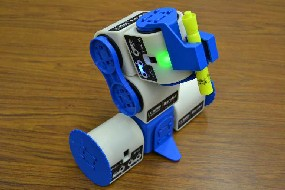
July 29, 2014
Any income generated from this book will go to the C-STEM fund directly to support the C-STEM program.
Copyright Oc
2014 by Harry H. Cheng, All rights reserved. Permission is granted for users to make copies
for their own personal use or educational use. Further reproduction, or any copying of machine-readable files (including this one) to any server computer, is strictly prohibited, unless a prior approval is obtained from the author.

Table of Contents
Preface . . . . . . . . . . . . . . . . . . . . . . . . . . . . . . . . . . . . . . . . . . . . . . . . . xi
1 Introduction 1
1.1 Introduction . . . . . . . . . . . . . . . . . . . . . . . . . . . . . . . . . . . . . . . . . . . 1
1.2
1.3
1.4
1.5
2 Controlling a Linkbot Using the Motion Control Panel 10
2.1 The Zero Positions of the Linkbot . . . . . . . . . . . . . . . . . . . . . . . . . . . . . . . 10
ii
2.2
2.3
2.4
3 Getting Started With Programming Linkbots 27
3.1 Get Started with Ch for Computer Programming . . . . . . . . . . . . . . . . . . . . . . . . 27
3.1.1 | Getting Started with ChIDE . | . | . | . | . | . | . | . | . | . | . | . | . | . | . | . | . | . | . | . | . | . | . | . | . | . | . | . | . | . | 27 |
3.1.2 | The First Ch Program . . . . | . | . | . | . | . | . | . | . | . | . | . | . | . | . | . | . | . | . | . | . | . | . | . | . | . | . | . | . | . | 28 |
3.1.3 | Editing Programs . . . . . . . | . | . | . | . | . | . | . | . | . | . | . | . | . | . | . | . | . | . | . | . | . | . | . | . | . | . | . | . | . | 29 |
3.1.4 | Running Programs and Stopping Their Execution . | . | . | . | . | . | . | . | . | . | . | . | . | . | . | . | . | . | . | 29 |
3.1.5 | Output from Execution of Programs . . . . . . . . | . | . | . | . | . | . | . | . | . | . | . | . | . | . | . | . | . | . | 29 |
3.1.6 | Newline Character . . . . . . . . . . . . . . . . . | . | . | . | . | . | . | . | . | . | . | . | . | . | . | . | . | . | . | 30 |
3.1.7 | Copying Contents in a Program to Another Program in ChIDE | . | . | . | . | . | . | . | . | . | . | . | . | 30 |
3.1.8 | Correcting Errors in Programs . . . . . . . . . . . . . . . . . | . | . | . | . | . | . | . | . | . | . | . | . | 31 |
3.1.9 | Browsing Files . . . . . . . . . . . . . . . . . . . . . . . . . | . | . | . | . | . | . | . | . | . | . | . | . | 32 |
3.1.10 | Summary . . . . . . . . . . . . . . . . . . . . . . . . . . . . | . | . | . | . | . | . | . | . | . | . | . | . | 32 |
3.1.11 | Terminology . . . . . . . . . . . . . . . . . . . . . . . . . . | . | . | . | . | . | . | . | . | . | . | . | . | 34 |
3.1.12 | Exercises . . . . . . . . . . . . . . . . . . . . . . . . . . . . | . | . | . | . | . | . | . | . | . | . | . | . | 34 |
3.2 Move | Joints Relative to their Current Positions | . | . | . | . | . | . | . | . | . | . | . | . | . | . | . | . | . | . | . | . | . | . | . | . | 35 |
3.2.1 | Summary . . . . . . . . . . . . . . . . | . | . | . | . | . | . | . | . | . | . | . | . | . | . | . | . | . | . | . | . | . | . | . | . | 36 |
3.2.2 | Terminology . . . . . . . . . . . . . . | . | . | . | . | . | . | . | . | . | . | . | . | . | . | . | . | . | . | . | . | . | . | . | . | 37 |
iii
| 3.2.3 Exercises . . . . . . . . . . . . . . . . . . . . . . . . . . . . . . | . | . | . | . | . | . | . | . | . | . | 37 |
3.3 | Drive Forward and Drive Backward Relative to its Current Joint Position . | . | . | . | . | . | . | . | . | . | . | 38 |
3.3.1 Summary . . . . . . . . . . . . . . . . . . . . . . . . . . . . . . . . . . . . . . . . 39
3.3.2 Terminology . . . . . . . . . . . . . . . . . . . . . . . . . . . . . . . . . . . . . . 39
3.3.3 Exercises . . . . . . . . . . . . . . . . . . . . . . . . . . . . . . . . . . . . . . . . 39
3.4 Monitor Joint Angles Using the Motion Control Panel . . . . . . . . . . . . . . . . . . . . . 39
3.4.1 Summary . . . . . . . . . . . . . . . . . . . . . . . . . . . . . . . . . . . . . . . . 41
3.4.2 Terminology . . . . . . . . . . . . . . . . . . . . . . . . . . . . . . . . . . . . . . 41
3.4.3 Exercises . . . . . . . . . . . . . . . . . . . . . . . . . . . . . . . . . . . . . . . . 41
3.5 Set the LED Color . . . . . . . . . . . . . . . . . . . . . . . . . . . . . . . . . . . . . . . 41
3.5.1 Summary . . . . . . . . . . . . . . . . . . . . . . . . . . . . . . . . . . . . . . . . 42
3.5.2 Terminology . . . . . . . . . . . . . . . . . . . . . . . . . . . . . . . . . . . . . . 42
3.5.3 Exercises . . . . . . . . . . . . . . . . . . . . . . . . . . . . . . . . . . . . . . . . 43
3.6  Control the Linkbot-L . . . . . . . . . . . . . . . . . . . . . . . . . . . . . . . . . . . . 43
Control the Linkbot-L . . . . . . . . . . . . . . . . . . . . . . . . . . . . . . . . . . . . 43
3.6.1 Summary . . . . . . . . . . . . . . . . . . . . . . . . . . . . . . . . . . . . . . . . 44
3.6.2 Terminology . . . . . . . . . . . . . . . . . . . . . . . . . . . . . . . . . . . . . . 44
3.6.3  Exercises . . . . . . . . . . . . . . . . . . . . . . . . . . . . . . . . . . . . . . 44
Exercises . . . . . . . . . . . . . . . . . . . . . . . . . . . . . . . . . . . . . . 44
3.7 Control a Linkbot Wirelessly Without Connecting with a USB Cable . . . . . . . . . . . . 45
3.7.1 Summary . . . . . . . . . . . . . . . . . . . . . . . . . . . . . . . . . . . . . . . . 46
3.7.2 Terminology . . . . . . . . . . . . . . . . . . . . . . . . . . . . . . . . . . . . . . 46
3.7.3 Exercises . . . . . . . . . . . . . . . . . . . . . . . . . . . . . . . . . . . . . . . . 46
4 Robot Simulation with RoboSim 47
4.1 | RoboSim GUI . . | . | . | . | . | . | . | . | . | . | . | . | . | . | . | . | . | . | . | . | . | . | . | . | . | . | . | . | . | . | . | . | . | . | . | . | . | . | . | . | . | 47 |
4.1.1 | Platform | . | . | . | . | . | . | . | . | . | . | . | . | . | . | . | . | . | . | . | . | . | . | . | . | . | . | . | . | . | . | . | . | . | . | . | . | . | . | . | . | 48 |
4.1.2 | Units . . | . | . | . | . | . | . | . | . | . | . | . | . | . | . | . | . | . | . | . | . | . | . | . | . | . | . | . | . | . | . | . | . | . | . | . | . | . | . | . | . | 48 |
4.1.3 | Tracing . | . | . | . | . | . | . | . | . | . | . | . | . | . | . | . | . | . | . | . | . | . | . | . | . | . | . | . | . | . | . | . | . | . | . | . | . | . | . | . | . | 49 |
4.1.4 | Grid Configuration . . . . . . | . | . | . | . | . | . | . | . | . | . | . | . | . | . | . | . | . | . | . | . | . | . | . | . | . | . | . | . | . | 49 |
4.1.5 | Individual Robot Configuration | | . | . | . | . | . | . | . | . | . | . | . | . | . | . | . | . | . | . | . | . | . | . | . | . | . | . | . | . | 50 |
4.1.6 Preconfigured Linkbot Configurations . . . . . . . . . . . . . . . . . . . . . . . . . 51 |
4.1.7 | Summary . . | . | . | . | . | . | . | . | . | . | . | . | . | . | . | . | . | . | . | . | . | . | . | . | . | . | . | . | . | . | . | . | . | . | . | . | . | . | . | 52 |
4.1.8 | Terminology | . | . | . | . | . | . | . | . | . | . | . | . | . | . | . | . | . | . | . | . | . | . | . | . | . | . | . | . | . | . | . | . | . | . | . | . | . | . | 52 |
4.1.9 | Exercises . . | . | . | . | . | . | . | . | . | . | . | . | . | . | . | . | . | . | . | . | . | . | . | . | . | . | . | . | . | . | . | . | . | . | . | . | . | . | . | 52 |
4.2 Run a Ch Program with RoboSim . . . . . . . . . . . . . . . . . . . . . . . . . . . . . . . 53 |
4.2.1 | Summary . . | . | . | . | . | . | . | . | . | . | . | . | . | . | . | . | . | . | . | . | . | . | . | . | . | . | . | . | . | . | . | . | . | . | . | . | . | . | . | 55 |
4.2.2 | Terminology | . | . | . | . | . | . | . | . | . | . | . | . | . | . | . | . | . | . | . | . | . | . | . | . | . | . | . | . | . | . | . | . | . | . | . | . | . | . | 55 |
4.2.3 | Exercises . . | . | . | . | . | . | . | . | . | . | . | . | . | . | . | . | . | . | . | . | . | . | . | . | . | . | . | . | . | . | . | . | . | . | . | . | . | . | . | 55 |
4.3 Interact with a RoboSim Scene . . . . . . . . . . . . . . . . . . . . . . . . . . . . . . . . . 55 |
4.3.1 | Keyboard Input | . | . | . | . | . | . | . | . | . | . | . | . | . | . | . | . | . | . | . | . | . | . | . | . | . | . | . | . | . | . | . | . | . | . | . | . | . | 55 |
4.3.2 | Mouse Input . | . | . | . | . | . | . | . | . | . | . | . | . | . | . | . | . | . | . | . | . | . | . | . | . | . | . | . | . | . | . | . | . | . | . | . | . | . | 57 |
4.3.3 | Summary . . | . | . | . | . | . | . | . | . | . | . | . | . | . | . | . | . | . | . | . | . | . | . | . | . | . | . | . | . | . | . | . | . | . | . | . | . | . | . | 58 |
4.3.4 | Terminology | . | . | . | . | . | . | . | . | . | . | . | . | . | . | . | . | . | . | . | . | . | . | . | . | . | . | . | . | . | . | . | . | . | . | . | . | . | . | 58 |
4.3.5 | Exercises . . | . | . | . | . | . | . | . | . | . | . | . | . | . | . | . | . | . | . | . | . | . | . | . | . | . | . | . | . | . | . | . | . | . | . | . | . | . | . | 59 |
iv
5 Interacting with a Linkbot at Runtime through Variables and Input/Output Functions 60
5.1 | Use Variables . . . . . . . . . . . . . . . . . . . . . . . . . . . . . . | . | . | . | . | . | . | . | . | . | . | . | . | 60 |
| 5.1.1 Declaration of Variables and Data Type double for Decimals . | . | . | . | . | . | . | . | . | . | . | . | . | 61 |
| 5.1.2 Initialization . . . . . . . . . . . . . . . . . . . . . . . . . . | . | . | . | . | . | . | . | . | . | . | . | . | 61 |
| 5.1.3 Data Type int for Integers . . . . . . . . . . . . . . . . . . . | . | . | . | . | . | . | . | . | . | . | . | . | 62 |
| 5.1.4 Summary . . . . . . . . . . . . . . . . . . . . . . . . . . . . | . | . | . | . | . | . | . | . | . | . | . | . | 64 |
| 5.1.5 Terminology . . . . . . . . . . . . . . . . . . . . . . . . . . | . | . | . | . | . | . | . | . | . | . | . | . | 65 |
| 5.1.6 Exercises . . . . . . . . . . . . . . . . . . . . . . . . . . . . | . | . | . | . | . | . | . | . | . | . | . | . | 65 |
5.2 | The Output Function printf() . . . . . . . . . . . . . . . . . . . . . . | . | . | . | . | . | . | . | . | . | . | . | . | 65 |
| 5.2.1 Precision of Decimal Numbers . . . . . . . . . . . . . . . . . | . | . | . | . | . | . | . | . | . | . | . | . | 66 |
| 5.2.2 Summary . . . . . . . . . . . . . . . . . . . . . . . . . . . . | . | . | . | . | . | . | . | . | . | . | . | . | 67 |
| 5.2.3 Terminology . . . . . . . . . . . . . . . . . . . . . . . . . . | . | . | . | . | . | . | . | . | . | . | . | . | 68 |
| 5.2.4 Exercises . . . . . . . . . . . . . . . . . . . . . . . . . . . . | . | . | . | . | . | . | . | . | . | . | . | . | 68 |
5.3 | Input into Programs Using Function scanf() . . . . . . . . . . . . . . | . | . | . | . | . | . | . | . | . | . | . | . | 68 |
| 5.3.1 Summary . . . . . . . . . . . . . . . . . . . . . . . . . . . . | . | . | . | . | . | . | . | . | . | . | . | . | 70 |
| 5.3.2 Terminology . . . . . . . . . . . . . . . . . . . . . . . . . . | . | . | . | . | . | . | . | . | . | . | . | . | 71 |
| 5.3.3 Exercises . . . . . . . . . . . . . . . . . . . . . . . . . . . . | . | . | . | . | . | . | . | . | . | . | . | . | 71 |
5.4 | Move a Distance for a Two-Wheel Robot . . . . . . . . . . . . . . . | . | . | . | . | . | . | . | . | . | . | . | . | 71 |
| 5.4.1 Summary . . . . . . . . . . . . . . . . . . . . . . . . . . . . | . | . | . | . | . | . | . | . | . | . | . | . | 72 |
| 5.4.2 Terminology . . . . . . . . . . . . . . . . . . . . . . . . . . | . | . | . | . | . | . | . | . | . | . | . | . | 72 |
| 5.4.3 Exercises . . . . . . . . . . . . . . . . . . . . . . . . . . . . | . | . | . | . | . | . | . | . | . | . | . | . | 72 |
5.5 | Turn Left and Turn Right . . . . . . . . . . . . . . . . . . . . . . . . | . | . | . | . | . | . | . | . | . | . | . | . | 73 |
| 5.5.1 Summary . . . . . . . . . . . . . . . . . . . . . . . . . . . . | . | . | . | . | . | . | . | . | . | . | . | . | 74 |
| 5.5.2 Terminology . . . . . . . . . . . . . . . . . . . . . . . . . . | . | . | . | . | . | . | . | . | . | . | . | . | 74 |
| 5.5.3 Exercises . . . . . . . . . . . . . . . . . . . . . . . . . . . . | . | . | . | . | . | . | . | . | . | . | . | . | 75 |
6 Writing Programs to Control a Group of Linkbots to Perform Identical Tasks 76
6.1 Control a Group of Linkbots with Identical Movements . . . . . . . . . . . . . . . . . . . . 76
6.2
7 Writing Programs to Control a Single Linkbot 84
7.1 Multiple Motion Statements in a Program . . . . . . . . . . . . . . . . . . . . . . . . . . . 84
7.1.1 | Summary . . | . | . | . | . | . | . | . | . | . | . | . | . | . | . | . | . | . | . | . | . | . | . | . | . | . | . | . | . | . | . | . | . | . | . | . | . | . | . | 85 |
7.1.2 | Terminology | . | . | . | . | . | . | . | . | . | . | . | . | . | . | . | . | . | . | . | . | . | . | . | . | . | . | . | . | . | . | . | . | . | . | . | . | . | . | 85 |
7.1.3 | Exercises . . | . | . | . | . | . | . | . | . | . | . | . | . | . | . | . | . | . | . | . | . | . | . | . | . | . | . | . | . | . | . | . | . | . | . | . | . | . | . | 85 |
7.2 Move Joints to their Absolute Positions . . . . . . . . . . . . . . . . . . . . . . . . . . . . 85 |
7.2.1 | Summary . . | . | . | . | . | . | . | . | . | . | . | . | . | . | . | . | . | . | . | . | . | . | . | . | . | . | . | . | . | . | . | . | . | . | . | . | . | . | . | 86 |
7.2.2 | Terminology | . | . | . | . | . | . | . | . | . | . | . | . | . | . | . | . | . | . | . | . | . | . | . | . | . | . | . | . | . | . | . | . | . | . | . | . | . | . | 87 |
7.2.3 | Exercises . . | . | . | . | . | . | . | . | . | . | . | . | . | . | . | . | . | . | . | . | . | . | . | . | . | . | . | . | . | . | . | . | . | . | . | . | . | . | . | 87 |
7.3 | Get Joint Angles . . | . | . | . | . | . | . | . | . | . | . | . | . | . | . | . | . | . | . | . | . | . | . | . | . | . | . | . | . | . | . | . | . | . | . | . | . | . | . | 87 |
v
7.3.1 | Get a Joint Angle . . . . . | . | . | . | . | . | . | . | . | . | . | . | . | . | . | . | . | . | . | . | . | . | . | . | . | . | . | . | . | . | . | . | 87 |
7.3.2 | Get Multiple Joint Angles | . | . | . | . | . | . | . | . | . | . | . | . | . | . | . | . | . | . | . | . | . | . | . | . | . | . | . | . | . | . | . | 88 |
| 7.3.3 | Summary . . | . | . | . | . | . | . | . | . | . | . | . | . | . | . | . | . | . | . | . | . | . | . | . | . | . | . | . | . | . | . | . | . | . | . | . | . | . | . | 89 |
| 7.3.4 | Terminology | . | . | . | . | . | . | . | . | . | . | . | . | . | . | . | . | . | . | . | . | . | . | . | . | . | . | . | . | . | . | . | . | . | . | . | . | . | . | 89 |
| 7.3.5 | Exercises . . | . | . | . | . | . | . | . | . | . | . | . | . | . | . | . | . | . | . | . | . | . | . | . | . | . | . | . | . | . | . | . | . | . | . | . | . | . | . | 90 |
7.4 | Move | a Single Joint . | . | . | . | . | . | . | . | . | . | . | . | . | . | . | . | . | . | . | . | . | . | . | . | . | . | . | . | . | . | . | . | . | . | . | . | . | . | . | 90 |
7.4.1 | Move a Single Joint to the Absolute Position . . . | . | . | . | . | . | . | . | . | . | . | . | . | . | . | . | . | . | . | 90 |
7.4.2 | Move a Single Joint Relative to the Current Position | | . | . | . | . | . | . | . | . | . | . | . | . | . | . | . | . | . | 91 |
7.4.3 Delay the Motion of a Linkbot Using the Member Function delaySeconds() . . . . . 91 |
7.4.4 | Summary . . | . | . | . | . | . | . | . | . | . | . | . | . | . | . | . | . | . | . | . | . | . | . | . | . | . | . | . | . | . | . | . | . | . | . | . | . | . | . | 93 |
7.4.5 | Terminology | . | . | . | . | . | . | . | . | . | . | . | . | . | . | . | . | . | . | . | . | . | . | . | . | . | . | . | . | . | . | . | . | . | . | . | . | . | . | 93 |
7.4.6 | Exercises . . | . | . | . | . | . | . | . | . | . | . | . | . | . | . | . | . | . | . | . | . | . | . | . | . | . | . | . | . | . | . | . | . | . | . | . | . | . | . | 93 |
7.5 Get and Set Joint Speeds . . . . . . . . . . . . . . . . . . . . . . . . . . . . . . . . . . . . 93 |
7.5.1 | Get and Set a Joint Speed . . . . | . | . | . | . | . | . | . | . | . | . | . | . | . | . | . | . | . | . | . | . | . | . | . | . | . | . | . | . | 94 |
7.5.2 | Get and Set Joint Speeds . . . . | . | . | . | . | . | . | . | . | . | . | . | . | . | . | . | . | . | . | . | . | . | . | . | . | . | . | . | . | 95 |
7.5.3 | Get and Set a Joint Speed Ratio | . | . | . | . | . | . | . | . | . | . | . | . | . | . | . | . | . | . | . | . | . | . | . | . | . | . | . | . | 96 |
7.5.4 | Get and Set Joint Speed Ratios . | . | . | . | . | . | . | . | . | . | . | . | . | . | . | . | . | . | . | . | . | . | . | . | . | . | . | . | . | 97 |
7.5.5 | Summary . . . . . . . . . . . . | . | . | . | . | . | . | . | . | . | . | . | . | . | . | . | . | . | . | . | . | . | . | . | . | . | . | . | . | 98 |
7.5.6 | Terminology . . . . . . . . . . | . | . | . | . | . | . | . | . | . | . | . | . | . | . | . | . | . | . | . | . | . | . | . | . | . | . | . | . | 99 |
7.5.7 | Exercises . . . . . . . . . . . . | . | . | . | . | . | . | . | . | . | . | . | . | . | . | . | . | . | . | . | . | . | . | . | . | . | . | . | . | 99 |
7.6 | ‡ Convert Units of Angles between Degrees and Radians | . | . | . | . | . | . | . | . | . | . | . | . | . | . | . | . | . | . | . 100 |
| 7.6.1 Summary . . . . . . . . . . . . . . . . . . . . . | . | . | . | . | . | . | . | . | . | . | . | . | . | . | . | . | . | . | . 102 |
| 7.6.2 Terminology . . . . . . . . . . . . . . . . . . . | . | . | . | . | . | . | . | . | . | . | . | . | . | . | . | . | . | . | . 102 |
| 7.6.3 Exercises . . . . . . . . . . . . . . . . . . . . . | . | . | . | . | . | . | . | . | . | . | . | . | . | . | . | . | . | . | . 102 |
8 Writing Advanced Programs to Control a Single Linkbot 103
8.1 Plot a Curve Using the Plotting Member Function data2DCurve() . . . . . . . . . . . . . . 103
8.2
8.3
8.4
8.5
vi
9 Controlling a Linkbot-I as a Two-Wheel Robot 118
9.1 Move a Two-Wheel Robot with the Specified Distance . . . . . . . . . . . . . . . . . . . . 119
9.1.1 Move a Two-Wheel Robot with the Specified Speed, Joint Angles, and Distance . . 119
9.1.2 Control a Linkbot-I with the Speed and Distance Input from the User Using the
Function scanf() . . . . . . . . . . . . . . . . . . . . . . . . . . . . . . . . . . . . 120
9.1.3 Estimate the Error in Distance and Use the Function getDistance() . . . . . . . . . . 121
9.1.4 ‡ Use the Functions distance2angle() and angle2distance() . . . . . . . . . . . . . 123
9.1.5 Get the Time for a Two-Wheel Robot to Complete its Movement with the Specified
Speed and Distance . . . . . . . . . . . . . . . . . . . . . . . . . . . . . . . . . . . 125
9.1.6 Plot Distances versus Time for a Two-Wheel Linkbot-I with the Specified Speed and
Distance . . . . . . . . . . . . . . . . . . . . . . . . . . . . . . . . . . . . . . . . . 126
9.1.7 Plot Distances versus Time with an Offset for the Distance . . . . . . . . . . . . . . 129
9.1.8 Summary . . . . . . . . . . . . . . . . . . . . . . . . . . . . . . . . . . . . . . . . 132
9.1.9 Terminology . . . . . . . . . . . . . . . . . . . . . . . . . . . . . . . . . . . . . . 133
9.1.10 Exercises . . . . . . . . . . . . . . . . . . . . . . . . . . . . . . . . . . . . . . . . 133
9.2 Move a Two-Wheel Robot with the Specified Time . . . . . . . . . . . . . . . . . . . . . . 135
9.2.1 Control a Linkbot-I with the Speed and Time Input from the User Using the Function
scanf() . . . . . . . . . . . . . . . . . . . . . . . . . . . . . . . . . . . . . . . . . 135
9.2.2 Get the Moved Distance Based on the Specified Speed and Time . . . . . . . . . . . 136
9.2.3 Plot Distances versus Time for a Two-Wheel Linkbot-I with the Specified Speed and
Time . . . . . . . . . . . . . . . . . . . . . . . . . . . . . . . . . . . . . . . . . . 137
9.2.4 Summary . . . . . . . . . . . . . . . . . . . . . . . . . . . . . . . . . . . . . . . . 140
9.2.5 Terminology . . . . . . . . . . . . . . . . . . . . . . . . . . . . . . . . . . . . . . 140
9.2.6 Exercises . . . . . . . . . . . . . . . . . . . . . . . . . . . . . . . . . . . . . . . . 140
9.3 Use Different Units for Speed, Radius, and Distance . . . . . . . . . . . . . . . . . . . . . . 141
9.3.1 | Summary . . | . | . | . | . | . | . | . | . | . | . | . | . | . | . | . | . | . | . | . | . | . | . | . | . | . | . | . | . | . | . | . | . | . | . | . | . | . | . 142 |
9.3.2 | Terminology | . | . | . | . | . | . | . | . | . | . | . | . | . | . | . | . | . | . | . | . | . | . | . | . | . | . | . | . | . | . | . | . | . | . | . | . | . | . 143 |
9.3.3 | Exercises . . | . | . | . | . | . | . | . | . | . | . | . | . | . | . | . | . | . | . | . | . | . | . | . | . | . | . | . | . | . | . | . | . | . | . | . | . | . | . 143 |
10 Sensory Information for a Linkbot 145
10.1 Set and Get the LED Color by Name Using the Data Type string t . . . . . . . . . . . . . . 145
10.1.1 Summary . . . . . . . . . . . . . . . . . . . . . . . . . . . . . . . . . . . . . . . . 147
10.1.2 Terminology . . . . . . . . . . . . . . . . . . . . . . . . . . . . . . . . . . . . . . 147
10.1.3 Exercises . . . . . . . . . . . . . . . . . . . . . . . . . . . . . . . . . . . . . . . . 147
10.2 Set and Get the LED Color by RGB Values . . . . . . . . . . . . . . . . . . . . . . . . . . 147
10.2.1 Summary . . . . . . . . . . . . . . . . . . . . . . . . . . . . . . . . . . . . . . . . 150
10.2.2 Terminology . . . . . . . . . . . . . . . . . . . . . . . . . . . . . . . . . . . . . . 150
10.2.3 Exercises . . . . . . . . . . . . . . . . . . . . . . . . . . . . . . . . . . . . . . . . 150
10.3 Set the Buzzer Frequency of a Linkbot . . . . . . . . . . . . . . . . . . . . . . . . . . . . . 151
10.3.1 Set the Buzzer to a Specified Frequency . . . . . . . . . . . . . . . . . . . . . . . . 151
10.3.2 Set the Buzzer Multiple Times Using a while Loop with a User Specified Frequency 152
10.3.3 Change the Buzzer Frequency a Predetermined Number of Times . . . . . . . . . . 153
10.3.4 Summary . . . . . . . . . . . . . . . . . . . . . . . . . . . . . . . . . . . . . . . . 154
10.3.5 Terminology . . . . . . . . . . . . . . . . . . . . . . . . . . . . . . . . . . . . . . 154
10.3.6 Exercises . . . . . . . . . . . . . . . . . . . . . . . . . . . . . . . . . . . . . . . . 155
10.4 | Get the Accelerometer Data . | . | . | . | . | . | . | . | . | . | . | . | . | . | . | . | . | . | . | . | . | . | . | . | . | . | . | . | . | . | . | . | . | . | . 155 |
| 10.4.1 Summary . . . . . . | . | . | . | . | . | . | . | . | . | . | . | . | . | . | . | . | . | . | . | . | . | . | . | . | . | . | . | . | . | . | . | . | . | . 157 |
vii
10.4.2 Terminology . | . | . | . | . | . | . | . | . | . | . | . | . | . | . | . | . | . | . | . | . | . | . | . | . | . | . | . | . | . | . | . | . | . | . | . | . | . 157 |
10.4.3 Exercises . . . | . | . | . | . | . | . | . | . | . | . | . | . | . | . | . | . | . | . | . | . | . | . | . | . | . | . | . | . | . | . | . | . | . | . | . | . | . 157 |
10.5 Get the Battery Voltage | . | . | . | . | . | . | . | . | . | . | . | . | . | . | . | . | . | . | . | . | . | . | . | . | . | . | . | . | . | . | . | . | . | . | . | . | . 157 |
10.5.1 Summary . . . | . | . | . | . | . | . | . | . | . | . | . | . | . | . | . | . | . | . | . | . | . | . | . | . | . | . | . | . | . | . | . | . | . | . | . | . | . 160 |
10.5.2 Terminology . | . | . | . | . | . | . | . | . | . | . | . | . | . | . | . | . | . | . | . | . | . | . | . | . | . | . | . | . | . | . | . | . | . | . | . | . | . 160 |
10.5.3 Exercises . . . | . | . | . | . | . | . | . | . | . | . | . | . | . | . | . | . | . | . | . | . | . | . | . | . | . | . | . | . | . | . | . | . | . | . | . | . | . 160 |
11 Writing Programs to Control Multiple Individual Linkbots 161
11.1 Control Multiple Linkbots Using the Motion Control Panel . . . . . . . . . . . . . . . . . . 161
11.1.1 Summary . . . . . . . . . . . . . . . . . . . . . . . . . . . . . . . . . . . . . . . . 161
11.1.2 Terminology . . . . . . . . . . . . . . . . . . . . . . . . . . . . . . . . . . . . . . 161
11.1.3 Exercises . . . . . . . . . . . . . . . . . . . . . . . . . . . . . . . . . . . . . . . . 161
11.2 Control Multiple Linkbots Using a Program . . . . . . . . . . . . . . . . . . . . . . . . . . 162
11.2.1 Exercises . . . . . . . . . . . . . . . . . . . . . . . . . . . . . . . . . . . . . . . . 163
11.2.2 Summary . . . . . . . . . . . . . . . . . . . . . . . . . . . . . . . . . . . . . . . . 163
11.2.3 Terminology . . . . . . . . . . . . . . . . . . . . . . . . . . . . . . . . . . . . . . 163
11.3 Blocking versus Non-Blocking Functions . . . . . . . . . . . . . . . . . . . . . . . . . . . 163
11.3.1 Summary . . . . . . . . . . . . . . . . . . . . . . . . . . . . . . . . . . . . . . . . 167
11.3.2 Terminology . . . . . . . . . . . . . . . . . . . . . . . . . . . . . . . . . . . . . . 167
11.3.3 Exercises . . . . . . . . . . . . . . . . . . . . . . . . . . . . . . . . . . . . . . . . 167
11.4 Synchronize the Motion of Multiple Linkbots . . . . . . . . . . . . . . . . . . . . . . . . . 168
11.4.1 Summary . . . . . . . . . . . . . . . . . . . . . . . . . . . . . . . . . . . . . . . . 171
11.4.2 Terminology . . . . . . . . . . . . . . . . . . . . . . . . . . . . . . . . . . . . . . 172
11.4.3 Exercises . . . . . . . . . . . . . . . . . . . . . . . . . . . . . . . . . . . . . . . . 172
11.5 Move Multiple Linkbots with Specified Distances or Joint Angles . . . . . . . . . . . . . . 172
11.5.1 Summary . . . . . . . . . . . . . . . . . . . . . . . . . . . . . . . . . . . . . . . . 175
11.5.2 Terminology . . . . . . . . . . . . . . . . . . . . . . . . . . . . . . . . . . . . . . 175
11.5.3 Exercises . . . . . . . . . . . . . . . . . . . . . . . . . . . . . . . . . . . . . . . . 175
11.6 Plot Recorded Distances and Time for Multiple Linkbots . . . . . . . . . . . . . . . . . . . 176
11.6.1 Summary . . . . . . . . . . . . . . . . . . . . . . . . . . . . . . . . . . . . . . . . 179
11.6.2 Terminology . . . . . . . . . . . . . . . . . . . . . . . . . . . . . . . . . . . . . . 180
11.6.3 Exercises . . . . . . . . . . . . . . . . . . . . . . . . . . . . . . . . . . . . . . . . 180
11.7 Move Multiple Linkbots with Specified Time . . . . . . . . . . . . . . . . . . . . . . . . . 181
11.7.1 Summary . . . . . . . . . . . . . . . . . . . . . . . . . . . . . . . . . . . . . . . . 185
11.7.2 Terminology . . . . . . . . . . . . . . . . . . . . . . . . . . . . . . . . . . . . . . 186
11.7.3 Exercises . . . . . . . . . . . . . . . . . . . . . . . . . . . . . . . . . . . . . . . . 186
11.8 Move Multiple Linkbots Forever . . . . . . . . . . . . . . . . . . . . . . . . . . . . . . . . 187
11.8.1 A Baton Passing Robot Relay Race . . . . . . . . . . . . . . . . . . . . . . . . . . 191
11.8.2 | Summary . . | . | . | . | . | . | . | . | . | . | . | . | . | . | . | . | . | . | . | . | . | . | . | . | . | . | . | . | . | . | . | . | . | . | . | . | . | . | . 193 |
11.8.3 | Terminology | . | . | . | . | . | . | . | . | . | . | . | . | . | . | . | . | . | . | . | . | . | . | . | . | . | . | . | . | . | . | . | . | . | . | . | . | . | . 194 |
11.8.4 | Exercises . . | . | . | . | . | . | . | . | . | . | . | . | . | . | . | . | . | . | . | . | . | . | . | . | . | . | . | . | . | . | . | . | . | . | . | . | . | . | . 194 |
11.9 Plot Recorded Distances and Time for Multiple Linkbots with an Offset for the Distance . . 195 |
11.9.1 | Summary . . | . | . | . | . | . | . | . | . | . | . | . | . | . | . | . | . | . | . | . | . | . | . | . | . | . | . | . | . | . | . | . | . | . | . | . | . | . | . 201 |
11.9.2 | Terminology | . | . | . | . | . | . | . | . | . | . | . | . | . | . | . | . | . | . | . | . | . | . | . | . | . | . | . | . | . | . | . | . | . | . | . | . | . | . 201 |
11.9.3 | Exercises . . | . | . | . | . | . | . | . | . | . | . | . | . | . | . | . | . | . | . | . | . | . | . | . | . | . | . | . | . | . | . | . | . | . | . | . | . | . | . 201 |
11.10‡ Copy Motions of a Controller Linkbot to a Controlled Linkbot | . | . | . | . | . | . | . | . | . | . | . | . | . | . | . 204 |
11.10.1 Repeat Actions Using a while Loop . . . . . . . . . . . | . | . | . | . | . | . | . | . | . | . | . | . | . | . | . 204 |
viii
11.10.2 Summary . . | . | . | . | . | . | . | . | . | . | . | . | . | . | . | . | . | . | . | . | . | . | . | . | . | . | . | . | . | . | . | . | . | . | . | . | . | . | . 208 |
11.10.3 Terminology | . | . | . | . | . | . | . | . | . | . | . | . | . | . | . | . | . | . | . | . | . | . | . | . | . | . | . | . | . | . | . | . | . | . | . | . | . | . 208 |
11.10.4 Exercises . . | . | . | . | . | . | . | . | . | . | . | . | . | . | . | . | . | . | . | . | . | . | . | . | . | . | . | . | . | . | . | . | . | . | . | . | . | . | . 208 |
12 Writing Programs to Control One or Multiple Groups of Linkbots 210
12.1 Copy Motions from One Linkbot to Multiple Linkbots with Identical Movements . . . . . . 210
12.2
13 Controlling Multiple Connected Linkbots 218
13.1 Control Multiple Connected Linkbots . . . . . . . . . . . . . . . . . . . . . . . . . . . . . 218
13.1.1 Summary . . . . . . . . . . . . . . . . . . . . . . . . . . . . . . . . . . . . . . . . 226
13.1.2 Terminology . . . . . . . . . . . . . . . . . . . . . . . . . . . . . . . . . . . . . . 226
13.1.3 Exercises . . . . . . . . . . . . . . . . . . . . . . . . . . . . . . . . . . . . . . . . 226
13.2 Program Linkbots with Pose Teaching . . . . . . . . . . . . . . . . . . . . . . . . . . . . . 227
13.2.1 Summary . . . . . . . . . . . . . . . . . . . . . . . . . . . . . . . . . . . . . . . . 231
13.2.2 Terminology . . . . . . . . . . . . . . . . . . . . . . . . . . . . . . . . . . . . . . 231
13.2.3 Exercises . . . . . . . . . . . . . . . . . . . . . . . . . . . . . . . . . . . . . . . . 231
13.3  Control Multiple Connected Linkbot-Ls . . . . . . . . . . . . . . . . . . . . . . . . . . 232
Control Multiple Connected Linkbot-Ls . . . . . . . . . . . . . . . . . . . . . . . . . . 232
13.3.1 Summary . . . . . . . . . . . . . . . . . . . . . . . . . . . . . . . . . . . . . . . . 245
13.3.2 Terminology . . . . . . . . . . . . . . . . . . . . . . . . . . . . . . . . . . . . . . 246
13.3.3  Exercises . . . . . . . . . . . . . . . . . . . . . . . . . . . . . . . . . . . . . . 246
Exercises . . . . . . . . . . . . . . . . . . . . . . . . . . . . . . . . . . . . . . 246
13.4  Control a Group of Connected Linkbots with Identical Movements . . . . . . . . . . . . 250
Control a Group of Connected Linkbots with Identical Movements . . . . . . . . . . . . 250
13.4.1 Summary . . . . . . . . . . . . . . . . . . . . . . . . . . . . . . . . . . . . . . . . 256
13.4.2 Terminology . . . . . . . . . . . . . . . . . . . . . . . . . . . . . . . . . . . . . . 257
13.4.3  Exercises . . . . . . . . . . . . . . . . . . . . . . . . . . . . . . . . . . . . . . 257
Exercises . . . . . . . . . . . . . . . . . . . . . . . . . . . . . . . . . . . . . . 257
Appendix 258
A Using Advanced Programming Features 259
A.1 Make a Decision Using an if and else if Statements . . . . . . . . . . . . . . . . . . . . . . 259
A.2 | Use a while-Loop for Repeating Motions | | . | . | . | . | . | . | . | . | . | . | . | . | . | . | . | . | . | . | . | . | . | . | . | . | . | . | . 262 |
A.3 | Use a for-Loop for Repeating Motions . | . | . | . | . | . | . | . | . | . | . | . | . | . | . | . | . | . | . | . | . | . | . | . | . | . | . | . | . 263 |
A.4 | Use a Function with an Argument of | | | | | | | | | | | | | | | | | | | | | | | | | | | | |
| the CLinkbotI Class . . . . . . . . . . | . | . | . | . | . | . | . | . | . | . | . | . | . | . | . | . | . | . | . | . | . | . | . | . | . | . | . | . 264 |
| A.4.1 Exercises . . . . . . . . . . . . | . | . | . | . | . | . | . | . | . | . | . | . | . | . | . | . | . | . | . | . | . | . | . | . | . | . | . | . 265 |
B Moving Robots in a Coordinate System in RoboSim 266
B.1 Move a Linkbot-I in a Coordinate System . . . . . . . . . . . . . . . . . . . . . . . . . . . 266
B.1.1 Summary . . . . . . . . . . . . . . . . . . . . . . . . . . . . . . . . . . . . . . . . 275
ix
| B.1.2 Terminology . . . . . . . . . | . | . | . | . | . | . | . | . | . | . | . | . | . | . | . | . | . | . | . | . | . | . | . | . | . | . | . | . | . 276 |
| B.1.3 Exercises . . . . . . . . . . . | . | . | . | . | . | . | . | . | . | . | . | . | . | . | . | . | . | . | . | . | . | . | . | . | . | . | . | . | . 276 |
B.2 | Move a Linkbot-I Along a Trajectory . | . | . | . | . | . | . | . | . | . | . | . | . | . | . | . | . | . | . | . | . | . | . | . | . | . | . | . | . | . 279 |
| B.2.1 Summary . . . . . . . . . . . | . | . | . | . | . | . | . | . | . | . | . | . | . | . | . | . | . | . | . | . | . | . | . | . | . | . | . | . | . 284 |
| B.2.2 Terminology . . . . . . . . . | . | . | . | . | . | . | . | . | . | . | . | . | . | . | . | . | . | . | . | . | . | . | . | . | . | . | . | . | . 284 |
| B.2.3 Exercises . . . . . . . . . . . | . | . | . | . | . | . | . | . | . | . | . | . | . | . | . | . | . | . | . | . | . | . | . | . | . | . | . | . | . 284 |
B.3 | Trace the Positions of a Linkbot-I . . | . | . | . | . | . | . | . | . | . | . | . | . | . | . | . | . | . | . | . | . | . | . | . | . | . | . | . | . | . 285 |
| B.3.1 Summary . . . . . . . . . . . | . | . | . | . | . | . | . | . | . | . | . | . | . | . | . | . | . | . | . | . | . | . | . | . | . | . | . | . | . 287 |
| B.3.2 Terminology . . . . . . . . . | . | . | . | . | . | . | . | . | . | . | . | . | . | . | . | . | . | . | . | . | . | . | . | . | . | . | . | . | . 287 |
| B.3.3 Exercises . . . . . . . . . . . | . | . | . | . | . | . | . | . | . | . | . | . | . | . | . | . | . | . | . | . | . | . | . | . | . | . | . | . | . 287 |
B.4 | Record the Positions of a Linkbot-I . . | . | . | . | . | . | . | . | . | . | . | . | . | . | . | . | . | . | . | . | . | . | . | . | . | . | . | . | . | . 287 |
| B.4.1 Summary . . . . . . . . . . . | . | . | . | . | . | . | . | . | . | . | . | . | . | . | . | . | . | . | . | . | . | . | . | . | . | . | . | . | . 290 |
| B.4.2 Terminology . . . . . . . . . | . | . | . | . | . | . | . | . | . | . | . | . | . | . | . | . | . | . | . | . | . | . | . | . | . | . | . | . | . 291 |
| B.4.3 Exercises . . . . . . . . . . . | . | . | . | . | . | . | . | . | . | . | . | . | . | . | . | . | . | . | . | . | . | . | . | . | . | . | . | . | . 291 |
B.5 Create an Obstacle Course with Points, Lines, and Text on a RoboSim Scene . . . . . . . . . 291 |
B.5.1 | Summary . . | . | . | . | . | . | . | . | . | . | . | . | . | . | . | . | . | . | . | . | . | . | . | . | . | . | . | . | . | . | . | . | . | . | . | . | . | . | . 296 |
B.5.2 | Terminology | . | . | . | . | . | . | . | . | . | . | . | . | . | . | . | . | . | . | . | . | . | . | . | . | . | . | . | . | . | . | . | . | . | . | . | . | . | . 296 |
B.5.3 | Exercises . . | . | . | . | . | . | . | . | . | . | . | . | . | . | . | . | . | . | . | . | . | . | . | . | . | . | . | . | . | . | . | . | . | . | . | . | . | . | . 297 |
B.6 Move Multiple Linkbot-Is in a Coordinate System . . . . . . . . . . . . . . . . . . . . . . . 298 |
| B.6.1 Summary . . . . . . . . . . . . . . . . . . . . | . | . | . | . | . | . | . | . | . | . | . | . | . | . | . | . | . | . | . | . 300 |
| B.6.2 Terminology . . . . . . . . . . . . . . . . . . | . | . | . | . | . | . | . | . | . | . | . | . | . | . | . | . | . | . | . | . 300 |
| B.6.3 Exercises . . . . . . . . . . . . . . . . . . . . | . | . | . | . | . | . | . | . | . | . | . | . | . | . | . | . | . | . | . | . 300 |
B.7 | Trace and Record the Positions of Multiple Linkbot-Is | . | . | . | . | . | . | . | . | . | . | . | . | . | . | . | . | . | . | . | . 302 |
| B.7.1 Exercises . . . . . . . . . . . . . . . . . . . . | . | . | . | . | . | . | . | . | . | . | . | . | . | . | . | . | . | . | . | . 306 |
B.8 | Move Multiple Linkbot-Is Along Different Trajectories | . | . | . | . | . | . | . | . | . | . | . | . | . | . | . | . | . | . | . | . 307 |
| B.8.1 Summary . . . . . . . . . . . . . . . . . . . . | . | . | . | . | . | . | . | . | . | . | . | . | . | . | . | . | . | . | . | . 312 |
| B.8.2 Terminology . . . . . . . . . . . . . . . . . . | . | . | . | . | . | . | . | . | . | . | . | . | . | . | . | . | . | . | . | . 312 |
| B.8.3 Exercises . . . . . . . . . . . . . . . . . . . . | . | . | . | . | . | . | . | . | . | . | . | . | . | . | . | . | . | . | . | . 312 |
C Colors Available for Use with the Member Functions setLEDColor() and getLEDColor() | | | 314 |
D Quick References to Ch | | | 318 |
D.1 Reserved Keywords and Names . . . . . . . . . . . . . . . . . . . . . . . . . . . . . | . | . | . 318 |
D.2 Punctuators . . . . . . . . . . . . . . . . . . . . . . . . . . . . . . . . . . . . . . . . | . | . | . 318 |
D.3 Comments . . . . . . . . . . . . . . . . . . . . . . . . . . . . . . . . . . . . . . . . . | . | . | . 318 |
D.4 Header Files . . . . . . . . . . . . . . . . . . . . . . . . . . . . . . . . . . . . . . . . | . | . | . 318 |
D.5 Declaration of Variables for Integers and Decimals . . . . . . . . . . . . . . . . . . . | . | . | . 319 |
D.6 Declaration of Functions . . . . . . . . . . . . . . . . . . . . . . . . . . . . . . . . . | . | . | . 319 |
D.7 The if-else Statement . . . . . . . . . . . . . . . . . . . . . . . . . . . . . . . . . . . | . | . | . 319 |
D.8 The while Loop . . . . . . . . . . . . . . . . . . . . . . . . . . . . . . . . . . . . . . | . | . | . 319 |
D.9 Input Function scanf() and Output Function printf() . . . . . . . . . . . . . . . . . . | . | . | . 319 |
D.10 Math Operators . . . . . . . . . . . . . . . . . . . . . . . . . . . . . . . . . . . . . . | . | . | . 320 |
D.11 Relational Operators . . . . . . . . . . . . . . . . . . . . . . . . . . . . . . . . . . . | . | . | . 320 |
D.12 Math Functions sqrt(), pow(), and abs() . . . . . . . . . . . . . . . . . . . . . . . . . | . | . | . 320 |
D.13 Member Functions of the Plotting Class CPlot . . . . . . . . . . . . . . . . . . . . . . | . | . | . 320 |
x
E Quick Reference to Linkbot Member Functions 324
E.1 | Data Types . . . . . . . . . . . . . . . . . . . . . . . . . . . . . . . . . | . | . | . | . | . | . | . | . | . | . 324 |
E.2 | Member Functions Available in both Classes CLinkbotI and CLinkbotL | . | . | . | . | . | . | . | . | . | . 325 |
E.3 | Member Functions Available only in the Class CLinkbotI . . . . . . . . | . | . | . | . | . | . | . | . | . | . 332 |
E.4 Member Functions Available in Both Classes CLinkbotIGroup and CLinkbotLGroup . . 333
E.5 Member Functions Available only in RoboSim . . . . . . . . . . . . . . . . . . . . . . . . 336
E.6 Member Functions Not Presented in This Book . . . . . . . . . . . . . . . . . . . . . . . . 337
F Common Mistakes in Writing Ch Programs 338
G Porting Code to the Latest Version 340
G.1 Port Code to BaroboLink v1.6.9, RoboSim v1.8, Robotics Curriculum v1.8 . . . . . . . . . 340
G.2 Port Code to BaroboLink v1.6.8, RoboSim v1.7, Robotics Curriculum v1.7, Math Curricu-
lum v1.2 . . . . . . . . . . . . . . . . . . . . . . . . . . . . . . . . . . . . . . . . . . . . . 340
G.3 Port Code to BaroboLink v1.6.7, RoboSim v1.6, Robotics Curriculum v1.6, Math Curricu-
lum v1.1 . . . . . . . . . . . . . . . . . . . . . . . . . . . . . . . . . . . . . . . . . . . . . 342
Index 345
xi
PREFACE
Robotics can easily get students engaged and excited about learning science, technology, engineering, and math (STEM) concepts while having fun. However, most robotic systems are not suitable for formal math and science education because of their complexity. Working with the UC Davis Center for Integrated Com- puting and STEM Education (C-STEM) (http://c-stem.ucdavis.edu), Barobo, Inc. (http://www.barobo.com), a UC Davis spin-off educational robotics company, has developed innovative modular robots called Mobot and Linkbot. The modular robots Mobot and Linkbot can be programmed by a user-friendly C/C++ interpreter Ch in Professional Edition, Student Edition, or Standard Edition. Ch is available from SoftIntegration, Inc. (http://www.softintegration.com). RoboSim is a robot simulation environment, developed by the UC Davis C-STEM Center, for programming Barobo Mobots and Linkbots. RoboSim can be freely downloaded from the C-STEM web site at (http://c-stem.ucdavis.edu). Ch, Mobot, Linkbot, and RoboSim are specially designed for integrating computing, robotics, and engineering into K-14 math and science education in both formal and informal programs. They are especially suited for increasing student motivation and success in learning math and science with hands-on real-world problem solving and sparking their interest in STEM subjects leading to STEM related careers and post-secondary study.
This book is a gentle introduction to robot programming with Linkbot. It teaches the absolute beginners the underlying working principles of robotics and robot programming, with an emphasis on learning math, science, technology, and engineering (STEM) using robots. The book is a step-by-step guide on how to use Linkbot to solve applied problems. The programming technique for controlling Linkbot is the same as for controlling Mobot. The contents can be readily integrated into teaching various STEM subjects for personalized and collaborative learning in classroom, afterschool and out-of-school programs. The concepts and ideas are presented in such a manner that they can be adapted by instructors to meet the unique needs of their students.
Prerequisites
The mathematical prerequisite for the book is basic math taught in elementary school. No prior computer programming and robotics experience is required.
Organization of the Book
The topics in the manuscript are carefully selected and organized for the best information flow for beginners to learn how to use and program the Linkbot for solving practical and realistic problems while having fun. I believe that students who have mastered the topics and working principles presented in the book shall be able to embark on applying the robotics concepts to various STEM subjects and applications. The manuscript is organized as follows:
Chapter 1 is an introduction to robotics, RoboPlay Competition (http://www.roboplay.org), and start- ing to use the Linkbot.
Chapter 2 uses a user friendly graphical user interface called BaroboLink to control the Linkbot.
Chapter 3 introduces the robot programming using a C/C++ interpreter Ch.
Chapter 4 describes how to use RoboSim for robot simulation.
Chapter 5 presents basic programming features about variables and input/output functions, and their applications in robot programming..
Chapter 6 describes how to write programs to control a group of Linkbots to perform identical tasks such as dancing.
xii
Chapter 7 describes how to write programs to control a single Linkbot with different motion character- istics.
Chapter 8 describes how to write advanced programs to control a single Linkbot.
Chapter 9 describes how to control a Linkbot configured as a two-wheel robot. The two-wheel robot is particularly suitable for learning math and science concepts.
Chapter 10 describes how to write programs to process the sensory information for Linkbots.
Chapter 11 describes how to write programs to control multiple individual Linkbots. Chapter 12 describes how to write programs to control one or multiple group of Linkbots. Chapter 13 describes how to control multiple connected Linkbots.
Appendix A presents a few sample programs using programming features not covered in this book.
Appendix B describes features available only in RoboSim and their applications. Section B.1 can be introduced right after Chapter 5. Section B.6 can be introduced after Chapter 11.
Appendix C lists the color names and corresponding RGB values available for the Linkbot.
Appendix D contains quick references to Ch features used in the book.
Appendix E contains quick references to member functions of the Linkbot classes.
Appendix F lists common mistakes in writing Ch programs.
Appendix G lists deprecated features and new features in the new edition. It also gives examples on how to port existing code using the new features.
The subsection Summary at the end of each section summarizes what you should have learned in the section. The subsection Terminology summarizes all terminologies and topics presented in the section.
Symbols and Notations Used in the Book
This book was typeset by the author using LATEX. Programs in the book are displayed with the light blue background and syntax highlighting as shown in the following line of the code.

printf("Hello, world!\n");
The output from programs are displayed with the grey background as shown in the following output.
Hello, world!
The interactive execution of programs is displayed with the dark blue background as shown in the following interactive execution.
Enter the weight in ounces.
4.5
The ice cream costs $2.11
Special notes and important points are highlighted with the yellow background. Keywords such as int and double in C are in red color. Reserved words such as sqrt and printf are in pink color. The definition for a word is in green color.
Sections marked with the double dagger symbol ‘‡’ use concepts beyond Algebra I or advanved robotics
concepts. They can be skipped as they do not include prerequisite skills necessary for later chapters.
The exercise symbol  indicates the location to pause for students to solve problems in the exercise section.
indicates the location to pause for students to solve problems in the exercise section.
The symbol  indicates the Linkbot-L is used in the section or exercise.
indicates the Linkbot-L is used in the section or exercise.
xiii
Using this Book as a Textbook or Supplementary Textbook
This is a comprehensive book on robot programming for solving applied problems in engineering, math, and science. Below are some possible ways to use the book. The book can be used as a textbook for courses on Robotics, Engineering, Computer Programming, Computer Technology, etc. It can also be used as a supplementary textbook for Math 7, Math 8, Pre-Algebra, Algebra I, Integrated Math I, and Physical Science. In addition, the book can be used for afterschool programs as well as computing and robotics camps.
For teaching students in elementary schools or a few hour introductory robotics activities, only materials in Chapter 1, Chapter 2, and section 13.2 in Chapter 11 without programming may be covered.
Available Teaching Resources
To use this manuscript for teaching, instructors can contact the author to obtain related teaching materials, including the source code for all programs presented in this manuscript, PowerPoint slides for classroom presentation, and solutions for exercises.
Copyright and Permission to Use
Permission is granted for users to make copies for their own personal use or educational use. Further reproduction, or any copying of machine-readable files (including this one) to any server computer, is strictly prohibited, unless a prior approval is obtained from the author.
The latest version of this documentation is available from (http://c-stem.ucdavis.edu).
Acknowledgment
This material was supported in part by the National Science Foundation under Grant No. CNS-1132709, IIS-1208690, and IIS-1256780. Any opinions, findings, and conclusions or recommendations expressed in this material are those of the author and do not necessarily reflect the views of the National Science Foundation.
Contacting the Author
I appreciate any criticisms, comments, identification of errors in the text or programs, and suggestions for improvement of this manuscript from both instructors and students. I can be reached over the Internet at
info@c-stem.ucdavis.edu
Harry H. Cheng

CHAPTER 1

Introduction
1.1 Introduction

A robot is a re-programmable machine that is able to move, sense, and react to its environment. Robotics is a branch of technology that deals with the design, construction, operation and application of robots and the related computing systems for the control, sensing, and information processing. Robotics can be used to help learn science, technology, engineering, and math (STEM) concepts while having fun. The Mobot, as shown in Figure 1.1, is designed as a building block. However, a single Mobot module is a fully functional four-degrees-of-freedom modular robot. It has four motors inside a Mobot. This full mobil- ity allows a Mobot to perform a multitude of novel robot locomotion, including inch-worming, rolling, arched rolling, turning, tumbling, and standing up. Multiple Mobot modules can be interconnected into various geometries for different applications, such as a space explorer, snake, gorilla, dog, humanoid, etc.
The Linkbot is a new version of low-cost mod- ular robot. It can more conveniently interface with other devices and sensors. In comparison with the Mobot, the Linkbot has only two, instead of four, degrees-of-freedom. Namely, there are only two motors inside a Linkbot. There are two versions of Linkbot, called Linkbot-I and Linkbot-L. The shapes for both Linkbot-I and Linkbot-L are the same as shown in Figure 1.2. There are three loca- tions for joints. For Linkbot-I, two joints are in the opposite of the housing in the I-shape. For Linkbot- L, two joints are adjacent in the L-shape. Other than the difference in the location of joints, the interface and programming for both Linkbot-I and Linkbot-L
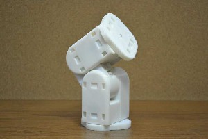
Figure 1.1: A Mobot.
are the same. The term Linkbot in this manuscript refers to both Linkbot-I and Linkbot-L. Like Mobots,
1.1. Introduction
Chapter 1. Introduction
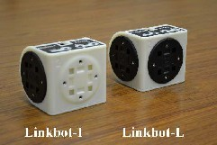
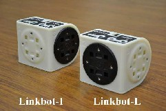
(a) Left view of Linkbot-I and Linkbot-L (b) Right view of Linkbot-I and Linkbot-L
Figure 1.2: Linkbot-I and Linkbot-L.
multiple Linkbot modules can be interconnected into various geometries for different applications, such as a space explorer, snake, four-wheel drive, omnidrive, etc. as shown in Figure 1.3. Linkbots can also be connected with Mobots.

A robot can only perform tasks it has been programmed to do. When a robot does something smart, it is because a smart person has written a smart program to control the device. This introductory book teaches the absolute beginners without any prior computer programming and robotics experience the underlying working principles of robotics and robot programming. You will learn how to write your own programs so that a robot will do what you want it to do. You will also be able to write programs to control multiple Linkbots and Mobots.
Do Exercises 1, 2, 3, 4, and 5 on page 3.
1.1.1 Summary

This section summarizes what you should have learned in this session.
1. A robot is a re-programmable machine that is moves, senses, and reacts to its environment. (a) Robots can only perform tasks they have been programmed to accomplish
(b) Robotics is a branch of technology that deals with design, construction, operation and appli- cation of robots and the related computing systems for the control, sensing, and information processing for robots.
2. A Mobot is a modular robot with 4 degrees of freedom.
3. A Linkbot is the new version of modular robot that interfaces with other devices and sensors. It has 2 degrees of freedom.
(a) Linkbot-I: two joints are in the opposite of the housing in the I-shape. (b) Linkbot-L: two joints are adjacent in the L-shape.
(c) Programming the Linkbot-I and Linkbot-L is the same.
1.1.2 Terminology

Linkbot, Linkbot-I, Linkbot-L, Mobot, degrees of freedom, robot, robotics.
2
1.2. RoboPlay Competition
Chapter 1. Introduction
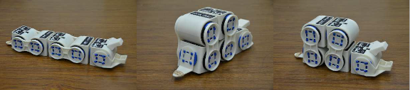
(a) Snake position 1 (b) Snake position 2 (c) Snake position 3

(d) four-wheel drive (e) Explorer (f) Omnidrive
Figure 1.3: Robotic systems built with multiple Linkbots.
1.1.3 Exercises

1. What is a robot?
2. Where have you seen a robot?
3. What is robotics?
4. Explain what the differences are between the Linkbot-I, Linkbot-L, and Mobot?
5. List at least 3 combinations that the Linkbots can be put into for various applications.
1.2 RoboPlay Competition

After learning the topics in this book, students shall be able to participate in RoboPlay Competition with more detailed information available at http://www.roboplay.org. RoboPlay Competition consists of open- ended design challenges that integrate math and computer programming with music, choreography, and design for practical real-world problem solving. The goal of RoboPlay is to broaden student participation in computing, science, technology, engineering, and math (C-STEM) education with positive development for all students. The RoboPlay teamwork is intended to engage all students including those who might otherwise be inclined to pursue careers in the arts or humanities.
3
1.2. RoboPlay Competition
Chapter 1. Introduction
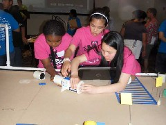
(a) RoboPlay Video Competition (b) RoboPlay Challenge Competition
Figure 1.4: RoboPlay Competition.
There are two categories for RoboPlay Competition: RoboPlay Video Competition and RoboPlay Chal- lenge Competition. Entries for the RoboPlay Video Competition are submitted as on-line videos. RoboPlay Video Competition is designed for students to play with robots while exploring their creativity in writing, art, music, choreography, design, video editing, and film production and at the same time seamlessly learn and apply computing and STEM concepts for solving practical problems. The handling of robot coordina- tion between multiple modules and music requires not only teamwork in designing a well-organized visual performance, but also the math and programming skills to produce the desired actions for robots. The com- petitions will enable students working in different interest groups to explore the basic concepts of C-STEM in conjunction with their artistic and music talents.

The RoboPlay Challenge Competition is held on the C-STEM Day each spring near the end of the school year. The Challenge Competition is designed for students to showcase their real-world problem solving skills in a competitive environment. This competition simulates an unexpected problem occurring at a remote location such as a space station or planetary habitat, where a robotic solution must be quickly developed and deployed, using only existing resources.
Do Exercises 1 and 2 on page 4.
1.2.1 Summary

1. The RoboPlay Competition includes two categories: RoboPlay Video Competition and RoboPlay
Challenge Competition.
2. C-STEM Day.
1.2.2 Terminology

RoboPlay Competition, C-STEM Day.
1.2.3 Exercises

1. What are RoboPlay Competitions? How many competitions do they consist of?
2. When is the RoboPlay Competition? When would you need to start preparing to compete in the
RoboPlay Competition?
4
1.3. Major Features of Linkbot
Chapter 1. Introduction
1.3 Major Features of Linkbot

A wide range of technologies have been integrated into the Linkbot. A CAD (computer-aided design) model along with its features for Linkbot is shown in Figure 1.5.
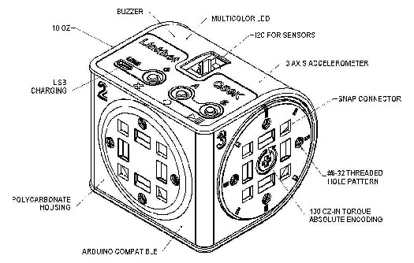
Figure 1.5: A CAD model of Linkbot.
The CPU (central processing unit) inside the Linkbot is the ATmega128RFA1 microcontroller by Atmel, running at 16 MHz. It integrates a ZigBee radio transceiver for wireless communication.
The Linkbot is powered by an internal, rechargeable lithium-ion battery that can drive motors for over 3 hours with typical use. Charging is done through the USB port with a cable and takes about 4 hours when connected to a computer. But, if it is plugged into a cell phone charger, the charging time drops to less than
2 hours. The user can use the Linkbot while it is plugged in for continual operation.
A multi-color LED can be used to personalize a Linkbot by selecting from a wide spectrum of colors. The Linkbot has a buzzer built-in to play a tune. The Linkbot also has a 3-axis accelerometer to detect free-falls, bumps, and tilted angles. Each Linkbot has three buttons for user interface.
The Linkbot weighs 10 oz. It has 100 oz-in (7.2 Kg-cm) of torque for each joint. Each hub has absolute encoding for precise control and measurement of speeds and angles accurate to ±0.5 degree. By default, the maximum joint speed is 240 degrees per second for constant velocity control.
The Linkbot is expandable with SnapConnectors, which allow modules to be snapped together without needing tools. This allows the user to quickly try out new robot creations. The Linkbot also has standard

#6-32 threaded holes available in its faceplate for custom-made accessories. The robot is made out of durable poly-carbonate plastic. A wide variety of accessories in CAD files are available for the Linkbot. The user can make accessories on their own using a 3D printer. Users can also customize these CAD files to their unique application and print using a 3D printer, laser cut, or even CNC (computer numerical control) machine depending on the part design.
Do Exercises 1 and 2 on page 6.
5
1.4. Run the On-Board Demo Program on the Linkbot
Chapter 1. Introduction
1.3.1 Summary

1. Linkbot is powered by a lithium-ion battery that lasts approximately 3 hours. It is charged through
USB with a cable and takes approximately 4 hours.
2. The Linkbot has multi-color LED for personalization.
3. It has a 3-axis accelerometer to detect free-falls, bumps, and tilted angles.
4. The maximum joint speed is 240 degrees per second for velocity control.
5. SnapConnectors allow modules to attach to the Linkbot no tools needed. Customizable CAD files are available for customers to make accessories using a 3D printer or laser cutter.
1.3.2 Terminology

3-axis accelerometer, 3D printer CAD, CAD files, CNC machine, CPU, Laser cut, SnapConnectors, Torque, ZigBee.
1.3.3 Exercises

1. What does the Linkbot use for wireless communication?
2. How long does the battery last in a Linkbot? How long does it take to charge the Linkbot from a computer? How long using a cell phone charger?

1.4 Run the On-Board Demo Program on the Linkbot
The Linkbot comes with a demo program in the on-board embedded computer allowing it to work out-of-the box. The program is designed to show the motion and make sure everything is working properly. The demo program will move the Linkbot continuously until the Linkbot is shut off or the batteries die.
To run the demo program, turn on the Linkbot by pressing the power button on the Linkbot as shown in Figure 1.6. Then simply hold the button ’A’ for three seconds. After three seconds have passed, the blue LED should blink three times quickly, and the demo motion will begin. You may want to run the demos for a Linkbot-I with two wheels attached, as shown in Figure 1.6b. You can turn off the demo program by pressing and holding the ’A’ button for three seconds while the robot is moving.
For an old version of Linkbot, manufactured before March 2014, the demo program also serve as a secondary calibration. If a Linkbot joint gets sticky, running the demo program till you hear a beep will calibrate the robot properly.
6
1.5. Play with Multiple Linkbots
Chapter 1. Introduction

(a) Buttons on the Linkbot (b) Running the on-board demo program
Figure 1.6: Running the on-board demo program on the Linkbot.

Do Exercises 1 and 2 on page 7.
1.4.1 Summary

1. The Linkbot comes with a demo program in the on-board embedded computer.
(a) The Demo Program shows the motion to make sure everything works properly.
(b) The Demo Program will continuously move Linkbot until it is shut off or batteries die.
2. To run demo program: turn on the Linkbot by pressing the power button. Then, hold the A button for three seconds. After three seconds, blue LED blinks three times and demo motion begins.
1.4.2 Terminology

On-board embedded computer, demo program.
1.4.3 Exercises

1. Run the demo program inside a Linkbot by pressing the power button on the Linkbot and hold the button ’A’ for three seconds. You can stop the demo program by holding the button ’A’ for three seconds.
2. What is the purpose of the Linkbot demo program?
1.5 Play with Multiple Linkbots

A Linkbot can be used to control one or multiple other Linkbots. Multiple Linkbots can also be controlled using PoseTeaching. In such applications, the multiple Linkbot modules must be paired together using a process called BumpConnect. The process can also be used to add additional follower robots to an existing group. All BumpConnected groups of Linkbots contain a single leader robot which can control one or more follower robots.
BumpConnect two unpaired Linkbots:
1. Press and hold the ’B’ button on the Linkbot you want to be the leader.
7
1.5. Play with Multiple Linkbots
Chapter 1. Introduction
2. Press and hold the ’B’ button on a second Linkbot.
3. Gently bump the two modules together.
4. Release the ’B’ buttons.
5. After a second or so, the LED colors on both robots should change. The leader robot will blink, cycling between Blue and a randomly chosen group color. The follower should display the randomly chosen group color.
6. If nothing happens after 5 seconds, try again starting from step 1.
BumpConnect a paired Linkbot with an unpaired Linkbot:
1. Press and hold the ’B’ button on the leader robot and the unpaired robot.
2. While holding the ’B’ buttons, gently bump the two robots together.
3. The unpaired robot should take on the color of the paired robot. If this does not happen after 5 seconds, try the process again starting from step 1.
4. At this point, the robots are in PoseTeaching mode, you may press the ’B’ button on the leader robot to switch into TiltDrive mode. The PoseTeaching and TiltDrive modes are described in next sections.
1.5.1 PoseTeaching Mode

After robots have been paired with each other to form a group, they enter the default “PoseTeaching” mode. Initially, there are zero recorded poses. In this mode, the buttons have the following functions:
• The Power or ’X’ button: If the robots are not playing poses, this button deletes all recorded poses.
• The ’A’ button: If the robots are not playing poses, this button records a new pose.
• The ’B’ button: If there are no recorded poses, the ’B’ button makes the robot switch into “TiltDrive” mode. If there are recorded poses, the ’B’ button begins playing the poses. If the robot is currently playing poses, the ’B’ button stops playing poses.
1.5.2 TiltDrive Mode

While the group is in TiltDrive mode, the leader robot will flash its LED colors between green and the group color. In TiltDrive mode, the leader module can be tilted forward, backward, and side-to-side to drive the follower modules. In this mode, the buttons have the following functions:
• The ’B’ button: Changes the current mode from “TiltDrive” mode to “CopyCat” mode.
1.5.3 CopyCat Mode

While the group is in CopyCat mode, the leader robot will flash its LED colors between light-blue and the group color. In CopyCat mode, all of the follower modules will move their joints to match the position of the joints on the leader module. If there are intermixed -I and -L Linkbot modules, joint 2 will match the angle on the leader’s joint 3, and vice versa. In this mode, the buttons have the following functions:
• The ’B’ button: Changes the current mode from “CopyCat” mode to “PoseTeaching” mode.
8
1.5. Play with Multiple Linkbots
Chapter 1. Introduction
1.5.4 Unpair the Connected Linkbots


You can either press and hold the ’A’ button on the leader module to unpair all modules at once, or press and hold the ’A’ button on a follower module to just unpair that one follower.
Do Exercises 1 and 2 on page 9.
1.5.5 Summary

1. Use BumpConnect to pair Linkbots by pushing the B buttons on both Linkbots and bumping them together.
2. You can control paired robots using PoseTeaching by pushing the A button and recording new poses that can then be saved as a ch program.
3. You can control paired robots using TiltDrive by pushing the B button directly after pairing them.
The TiltDrive allows the user to control the follower module by tilting the leader module to drive the follower module.
4. CopyCat.mode allows the user to manipulate the leader module and have the follower module match that motion. You can control paired robots using CopyCat mode by pushing the B button while in TiltDrive.
1.5.6 Terminology

BumpConnect, CopyCat, PoseTeaching, and TiltDrive.
1.5.7 Exercises

1. BumpConnect two Linkbots into a group. Play with two Linkbots with PoseTeaching, TiltDrive, and
CopyCat modes.
2. BumpConnect three Linkbots into a group. Play with three Linkbots with PoseTeaching, TiltDrive, and CopyCat modes.
9


CHAPTER 2
Controlling a Linkbot Using the
Motion Control Panel
A Linkbot can be conveniently controlled without writing a computer program. This chapter presents detailed steps to control a Linkbot through a user friendly graphical user interface called BaroboLink. BaroboLink can be used to control both Linkbots and Mobots.
2.1 The Zero Positions of the Linkbot
2.1.1 The Schematic Diagram of the Linkbot
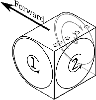
Figure 2.1: A schematic diagram of a Linkbot module.
2.1. The Zero Positions of the Linkbot
Chapter 2. Controlling a Linkbot Using the Motion Control Panel
Figure 2.1 shows a schematic diagram of the Linkbot displaying the locations and positive directions of three joints of a Linkbot. For Linkbot-I, only joints 1 and 3 are fully rotational. The joint 2 for Linkbot-I cannot move. For Linkbot-L, only joints 1 and 2 are fully rotational. The joint 3 for Linkbot-L cannot move.
The direction of motion for each joint follows the right hand rule shown in Figure 2.2. Figure 2.1 also shows the forward direction for a Linkbot-I.
Figure 2.2: The right hand rule for the direction of motion for a joint of Linkbot.
2.1.2 The Zero Position for a Joint of the Linkbot

There are tiny notches on the top of the housing and disk for each joint. When these two notches for a joint are aligned as shown in Figure 2.3, the joint is in its zero position. For an illustrative purpose, these two notches for a joint are displayed with different colors as zero position marks in Figure 2.3.
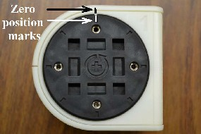
Figure 2.3: The zero position of the Linkbot.
2.1.3 Testing the Zero Positions and Relaxing Motors of a Linkbot

This feature is typically used to check the robot’s zero position to make sure it is properly calibrated. The button may also be used to relax a robot that is currently holding any of its joints at a position.
The feature can also be used to reset the robot to the zero position before a program controlling it is run. We will learn how to write a robot program in the next chapter.
11
2.2. Connect Linkbots from a Computer
Chapter 2. Controlling a Linkbot Using the Motion Control Panel
2.1.4 Recalibrating the Zero Positions of the Linkbot
When the Linkbot is used for a long period of time, its zero positions for joints may be off. A user may recalibrate the robot’s zero positions if necessary. To recalibrate the robot, perform the following steps:
• Position each joint of the Linkbot into its zero position. If the robot is currently actuating any of its joints, or if any joints feel “stiff”, you may power the robot off and on again, or you may press both the ’A’ and ’B’ buttons to relax the joints.
• While the robot is powered on, press and hold both the ’A’ and ’B’ buttons simultaneously. After three seconds, the LED should flash quickly three times. At this point, the robot has been recalibrated and you may release the buttons.

• Test the zero position as described in section 2.1.3. Do Exercises 1 and 2 on page 12.
2.1.5 Summary

This section summarizes what you should have learned in this session.
1. Reset the two joint angles of a Linkbot to the zero position by pressing the A and B buttons simulta- neously.
2. The direction of a joint motion follows the right hand rule.
3. For Linkbot-I, only joints 1 and 3 are fully rotational joint 2 cannot move.
4. For Linkbot-L, only joints 1 and 2 are fully rotational joint 3 cannot move.
5. Recalibrate the Linkbot if used for a long period of time because the joints zero positions may be off.
Put the joints in the zero position, and then push the A and B buttons simultaneously for three seconds until the LED flashes quickly three times.
2.1.6 Terminology

Right hand rule, zero position.
2.1.7 Exercises

1. Recalibrate the zero positions of a Linkbot and test the zero postions.
2. Explain how the right hand rule works and what it tells you about the direction of motion for a joint of the Linkbot.
2.2 Connect Linkbots from a Computer

Linkbot modules should be configured the first time they are used with a new computer. The process informs the computer to which Linkbots are allowed to connect. The configuration is performed through the BaroboLink program. This section contains step-by-step instructions on how to configure Linkbots.
12
2.2. Connect Linkbots from a Computer
Chapter 2. Controlling a Linkbot Using the Motion Control Panel
2.2.1 Installing the Linkbot Device Driver

The BaroboLink in a computer can control one or multiple Linkbots. One Linkbot needs to be connected to the computer through the USB cable. For controlling multiple Linkbots, the Linkbot connected to the computer through the USB cable will serve as a dongle for the BaroboLink to connect and control other Linkbots through the ZigBee wireless communication, as shown in Figure 2.4. The other Linkbots in the network can be located as far as 100 meters.
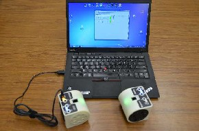
Figure 2.4: The configuration for the BaroboLink to control multiple Linkbots, with one Linkbot connected to a computer through a USB cable.
For the BaroboLink to control a Linkbot, a device driver for the Linkbot needs to be installed. A device driver is a computer program that operates or controls a particular type of device that is attached to a computer. The BaroboLink invokes a Linkbot device driver which communicates with the Linkbot through the USB cable.
If you use the BaroboLink in a computer lab, it is very likely that your instructor or system administrator has already installed the Linkbot device driver in your computer. In case you are using the Linkbot in a computer for the first time, you can use one of the two methods described below to install the Linkbot device driver.
Installing the Linkbot Device Driver
After the BaroboLink is installed, you can then install the Linkbot device driver. You can connect one end of the USB cable to a Linkbot and the other end to a USB connector in the computer. Then, launch the BaroboLink as described in section 2.2.2. Click the command File->Install Linkbot Driver. Follow the displayed instruction to complete the installation of the Linkbot device driver.
2.2.2 Adding ZigBee Serial Numbers of Linkbots in BaroboLink

First, start the BaroboLink application program. In Windows, start the BaroboLink by clicking on the icon labeled “BaroboLink” on your desktop, as shown in Figure 2.5. On Mac OS X systems, the BaroboLink application is located inside the “Applications” folder in Finder. The control dialog as shown in Figure 2.6 should pop up.
13
2.2. Connect Linkbots from a Computer
Chapter 2. Controlling a Linkbot Using the Motion Control Panel

Figure 2.5: The icon for the BaroboLink.
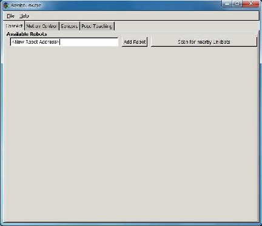
Figure 2.6: The opening screen for the BaroboLink.
The BaroboLink application, as seen in Figure 2.6, is organized into several different panels, each de- noted by a tab. Upon startup the default tab is the “Connect” tab. This Connection Panel allows you to manage, connect to, and disconnect from Linkbots.
First, add your Linkbot serial number into the BaroboLink by typing in the serial number in the box marked "<New Robot Address>" and clicking on the “Add Robot” button. The dialog should appear as shown in Figure 2.7. Alternatively, you can click the “Scan for nearby Linkbots” button to display the
serial numbers of all Linkbots within the range for ZigBee communication. Figure 2.8 shows serial numbers of two Linkbots. You can then click “Add Robot(s)” to add Linkbots to the BaroboLink.
14
2.2. Connect Linkbots from a Computer
Chapter 2. Controlling a Linkbot Using the Motion Control Panel
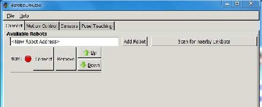
Figure 2.7: Configuring the robot ZigBee connection.
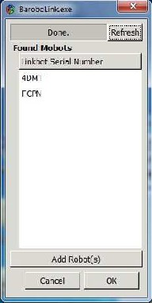
Figure 2.8: Displaying the serial number of Linkbots.
Only one Linkbot needs to be connected to the computer using the USB cable. Additional Linkbots can be connected to the computer through the ZigBee wireless communication, as shown in Figure 2.4. Each additional Linkbot added occupies its own row in the dialog. After the addition of another robot, the dialog appears as shown in Figure 2.9.
15
2.2. Connect Linkbots from a Computer
Chapter 2. Controlling a Linkbot Using the Motion Control Panel
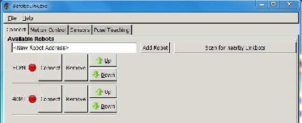
Figure 2.9: The Connection Panel with two Linkbot entries.
Once new serial numbers are added, the BaroboLink will remember the serial numbers in the future.
2.2.3 Making a Connection of Linkbots from a Computer

The dot next to the added serial number on the Connection Panel indicates the current connection status of the robot. A red dot indicates that the Linkbot is not currently connected, and a green dot indicates that the Linkbot is properly connected. To connect to a robot, make sure the robot is on by pressing the power button on the Linkbot, and click on the button labeled “Connect” inside the BaroboLink.
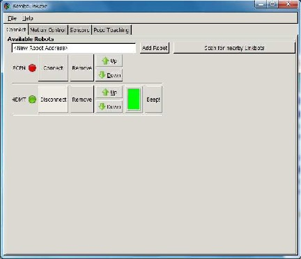
Figure 2.10: The Connection Panel showing a connected Linkbot.
16
2.2. Connect Linkbots from a Computer
Chapter 2. Controlling a Linkbot Using the Motion Control Panel
If the connection succeeds, the red dot should turn green to indicate that a connection has been es- tablished, as shown in Figure 2.10. Note that in Figure 2.10, the second Linkbot had been added to the list of known Linkbots to illustrate how the Connection Panel displays as more Linkbots are added. Each additional Linkbot appears in its own row on the panel.
Trouble Shooting the Connection of the Linkbot from a Computer
Should the connection from a computer to the Linkbot fail, you may check the following options to fix the connection problem and try again.
1. The ZigBee serial number has been entered correctly.
2. The Linkbot is turned on.
3. The device driver for the Linkbot has been installed as described in section 2.2.1.
4. Turn the Linkbot off and on again.
5. Restart the BaroboLink.
6. Plug the USB cable firmly.
7. Try a different USB cable.
Once the connection succeeds, the “Connect” button for that Linkbot turns into a “Disconnect” button. Clicking on the “Disconnect” button disconnects the Linkbot. For a connected Linkbot, you can click “Remove” button to remove a Linkbot from the BaroboLink.
You can click the “Beep!” button to hear a beep from the Linkbot.
Please note that there is no limit on the number of Linkbot that can be connected to the BaroboLink.
Connecting Your Linkbot

Once a Linkbot is connected to the BaroboLink in a computer, a BaroboLink in other computers will not be able to find it by clicking the “Scan for nearby Linkbots” button. In case the BaroboLink in other student’s computer is connected to your Linkbot, you will not be able to make a connection to it from your computer. In this case, you can turn off the power of the Linkbot to disconnect it from the other computer first. Then, turn it on and connect it from the BaroboLink in your computer.
Do Exercises 1, 2, and 3 on page 18.
2.2.4 Summary

1. Connect to a Linkbot from a computer using the BaroboLink.
2. BaroboLink can control one or multiple Linkbots.
3. To add your Linkbot, type the Linkbot serial number into the BaroboLink box marked <New Robot
Address> and click “Add Robot”.
4. If robot is added correctly: green = connected; red = not connected.
5. Once a Linkbot is connected to BaroboLink, other computers will not be able to detect the Linkbot or try to connect to it.
2.2.5 Terminology

BaroboLink, device driver, Zigbee communication.
17
2.3. The Sensors Panel
Chapter 2. Controlling a Linkbot Using the Motion Control Panel
2.2.6 Exercises

1. Connect the computer to your Linkbot by typing in the address and adding the robot and then clicking connect. Click “Beep” to make your Linkbot beep.
2. Remove the address for your Linkbot and then click “scan for nearby Linkbots.” Search for your
Linkbot and connect it. Click “Beep” to make your Linkbot beep.
3. What can you do if your Linkbot is connected to another student’s computer and you want to connect it to your computer?
2.3 The Sensors Panel

By default, when a Linkbot is turned on, its LED displays the blue color. Once it is connected, the color will be changed to the green. You can click the color button for a connected Linkbot on the Connection Panel, or the “Sensors” tab, the Sensors Panel will appear as shown in Figure 2.11. The LED color, its RGB (Red, Green, Blue) values and HSV (Hue, Saturation, and Value) values, and color name will be displayed. The RGB and HSV are color models. The color of the LED can be changed through the color dial, RGB, or HSV values. The Sensors Panel also displays the X, Y, and Z components as well as the magnitude of the accelerometer data.
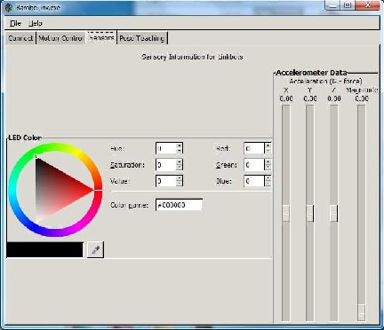

Figure 2.11: The Sensors Panel showing the color of the LED and accelerometer data. Do Exercises 1 and 2 on page 19.
18
2.3. The Sensors Panel
Chapter 2. Controlling a Linkbot Using the Motion Control Panel
2.3.1 Summary

1. The default LED color is blue to show that the robot is turned on.
2. The LED color turns green when the robot is connected.
3. Click on the “Sensors” tab. The color of the LED can be changed through the color dial, RGB, or
HSV values.
4. The Sensors Panel also displays the X, Y, and Z components and the magnitude of the accelerometer data.
2.3.2 Terminology

LED color, Sensors Panel.
2.3.3 Exercises

1. Click on the “Sensors” tab and click on the LED Color wheel to choose the color you like.
2. While your linkbot is connected, rotate and move the robot around and observe how the sliders under “Accelerometer Data” move. Can you cause only two sliders to move while the third remains roughly still?
19
Chapter 2. Controlling a Linkbot Using the Motion Control Panel
2.4. Control a Linkbot Using the Motion Control Panel

2.4 Control a Linkbot Using the Motion Control

Panel
2.4.1 The Motion Control Panel
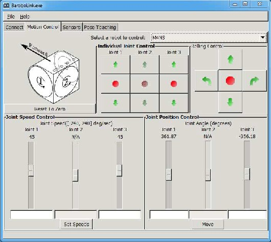
Figure 2.12: The Motion Control Panel of the BaroboLink with a Linkbot-I connected.
20
Chapter 2. Controlling a Linkbot Using the Motion Control Panel
2.4. Control a Linkbot Using the Motion Control Panel
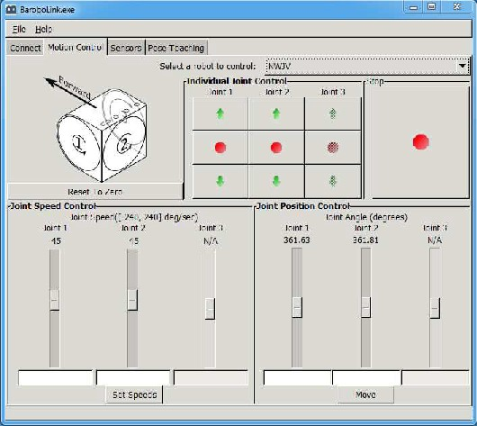
Figure 2.13: The Motion Control Panel of the BaroboLink with a Linkbot-L connected.
Once a robot is connected to the BaroboLink, the joint angles and speeds of the robot are displayed on the Motion Control Panel as shown in Figure 2.12 for a Linkbot-I. Figure 2.13 shows the Motion Control Panel for a Linkbot-L. This panel is located under the second tab of the BaroboLink, labeled “Motion Control”. The Motion Control Panel can be used to display information about the Linkbot’s joint positions, and also control the speeds and positions of the Linkbot’s joints. The panel is divided into five sections; three on the top half of the panel, and two on the bottom half. The functions of these five sections will be discussed in the next section.
2.4.2 The “Reset To Zero” Button

The first section of the GUI located on the top left of the panel displays a schematic diagram of the Linkbot as shown in Figure 2.14. Underneath the schematic diagram, there is a button with the text “Reset To Zero”. When clicked, this button will command the connected Linkbot to rotate each joint to the zero angle position.
21
Chapter 2. Controlling a Linkbot Using the Motion Control Panel
2.4. Control a Linkbot Using the Motion Control Panel
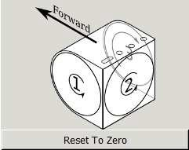
Figure 2.14: The button to reset to zero.
You can also move all joints of a Linkbot into zero positions by pressing both A and B buttons of the
Linkbot.
2.4.3 Individual Joint Control

The second section, located at the top-middle section of the panel, is the “Individual Joint Control” section, as shown in Figure 2.15. These buttons command the Linkbot to move individual joints. When the up or down arrows are clicked, the Linkbot begins to move the corresponding joint in either the positive, or negative direction. The joint will continue to move until the stop button, located between the up and down arrows, is clicked.
Figure 2.15a shows the “Individual Joint Control” section for Linkbot-I. Since joint 2 is not movable for Linkbot-I, joint 2 is not clickable with the fainted background. Figure 2.15b shows the “Individual Joint Control” section for Linkbot-L. Since joint 3 is not movable, joint 3 is not clickable with the fainted background.

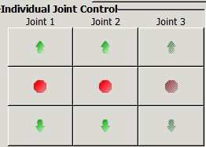
(a) The control panel for Linkbot-I (b) The control panel for Linkbot-L
Figure 2.15: The individual joint control.

If the joint encounters any obstacle that prevents it from moving, the joint will automatically disengage power to the joint. This may happen, for example, if it collides with the other object.
Do Exercise 1 on page 26.
22
Chapter 2. Controlling a Linkbot Using the Motion Control Panel
2.4. Control a Linkbot Using the Motion Control Panel
2.4.4 Rolling Control for Linkbot-I

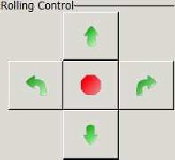
The Rolling Control section contains buttons for controlling a Linkbot-I as a two-wheel robot as shown in Figure 2.16. The up and down buttons cause the Linkbot to roll forward or backward, as shown in Figure 2.16. The left and right buttons cause the Linkbot to turn to the left, or to the right. The stop button in the middle causes the Linkbot to stop where it is.

Figure 2.16: The rolling control for a Linkbot-I. Do Exercise 2 on page 26.
2.4.5 Joint Speed Control

The Joint Speed Control section is located at the bottom left of the panel, as shown in Figure 2.17. It displays and controls the current joint speeds of the Linkbot. The joint speeds are in units of degrees per second. To set a specific desired joint speed for a particular joint, you can move the slider to change the joint speed. The joint speed may also be typed directly into the edit boxes below the sliders, and the “Set Speeds” button should be clicked.
Like individual joint control, Figure 2.17a shows the “Joint Speed Control” section for Linkbot-I. Since joint 2 is not movable for Linkbot-I, joint 2 is not clickable with the fainted background. Figure 2.17b shows the “Joint Speed Control” section for Linkbot-L. Since joint 3 is not movable, joint 3 is not clickable with the fainted background.
23
Chapter 2. Controlling a Linkbot Using the Motion Control Panel
2.4. Control a Linkbot Using the Motion Control Panel
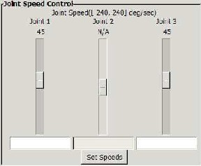

(a) The control panel for Linkbot-I (b) The control panel for Linkbot-L
Figure 2.17: The joint speed control.

Do Exercise 3 on page 26.
2.4.6 Joint Position Control

The Joint Position Control section is located in the bottom-middle of the panel, as shown in Figure 2.18. It is used to display and control the positions of each of the two joints of a Linkbot. The joint positions are displayed in the numerical text located above each vertical slider. The displayed joint positions are in units of degrees.
Like individual joint control and joint speed control, Figure 2.18a shows the “Joint Position Control” section for Linkbot-I. Since joint 2 is not movable for Linkbot-I, joint 2 is not clickable with the fainted background. Figure 2.18b shows the “Joint Position Control” section for Linkbot-L. Since joint 3 is not movable, joint 3 is not clickable with the fainted background.
24
Chapter 2. Controlling a Linkbot Using the Motion Control Panel
2.4. Control a Linkbot Using the Motion Control Panel
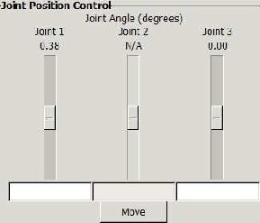
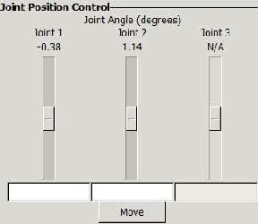
(a) The control panel for Linkbot-I (b) The control panel for Linkbot-L
Figure 2.18: The joint position control.
Controlling the joints can be done by using the vertical sliders. Each vertical slider’s position represents a joint’s angle. When the position of the slider is moved, the Linkbot will move its joints to match the sliders.

An alternative method for moving the joints is by entering the exact angles for the joints. Underneath the sliders, there are two valid text entry boxes. The text boxes accept specific angles for each joint into which the user may type. If the “Move” button is clicked, each joint will move the amount in degrees specified in the text entry with respect to its current position. If any text entry is left blank, the corresponding joint will not move.
Do Exercise 4 on page 26.
2.4.7 Control Multiple Linkbots


A computer can connect to multiple Linkbots as described in section 2.2. The Motion Control Panel can be used to control multiple Linkbots, one at a time. If a computer is connected to multiple Linkbots, an individual Linkbot can be selected to be controlled by picking the ZigBee serial number of the Linkbot from the drop down menu labeled as “Select a robot to control” underneath the tabs as shown in Figure 2.12.
Do Exercise 5 on page 26.
2.4.8 Summary

This section summarizes what you should have learned in this session.
1. Control the motion of joints of a Linkbot individually through the “Motion Control Panel”.
2. Control the motion of a Linkbot as a two-wheel vehicle.
3. Set the joint speeds of a Linkbot. Joint speeds are specified in degrees per second.
4. Set the joint angle that a Linkbot will be moved to. Joint angles are specified in degrees.
5. The motion for the Linkbot’s joints has no limit.
25
Chapter 2. Controlling a Linkbot Using the Motion Control Panel
2.4. Control a Linkbot Using the Motion Control Panel
6. Connect to multiple Linkbots from a computer though the BaroboLink and control one at a time through the Motion Control Panel.
2.4.9 Terminology

Joint angle, joint speed, individual joint control, joint speed control, and joint position control.
2.4.10 Exercises

1. Connect your computer to a Linkbot-I through BaroboLink. Click “Reset To Zero” to reset two joint angles of the Linkbot to the zero position on the Motion Control Panel. Move joint 1 in the positive direction through the Individual Joint Control. Move joint 3 in the positive direction. Stop the motion of joints 1 and 3. Move joints 1 and 3 in the negative direction. then stop both joints.
2. Click “Reset To Zero” to reset two joint angles of a Linkbot-I to the zero position on the Motion Control Panel. First, roll the joints 1 and 3 forward through the Rolling Control. Then, turn the robot left. Next, roll the Linkbot forward. Turn the robot right. Roll the Linkbot backward. Finally, stop the Linkbot.
3. Click “Reset To Zero” to reset two joint angles to the zero position on the Motion Control Panel. First, roll the joints 1 and 3 forward through the Rolling Control. Change the speed of joints 1 and 3 to 30 degrees per second through the Joint Speed Control while the robot is moving.
4. A Linkbot, as a two-wheel robot, turns its two wheels at 45 degrees per second. (a) How long will it take for the robot to rotate its wheels two full rotations (720 degrees)? You may set the joint speeds first, then move the joints 1 and 3 to the specified position while timing the motion using a stop watch. (b) If the radius of the wheel is 1.75 inches, what is the distance that the robot has moved forward?
5. Work with your partner to connect a computer to two Linkbots. Control the connected two Linkbots using a Motion Control Panel of BaroboLink on the computer.
26


CHAPTER 3

Getting Started With Programming
Linkbots

3.1 Get Started with Ch for Computer Program-
ming
In Chapter 2, we learned how to control a Linkbot using the Motion Control Panel. However, in order for a Linkbot to solve complicated problems, we need to write a computer program to control the Linkbot. Unlike using the Motion Control Panel, a computer program can be saved in a file for later use. It can also conveniently be copied to a new file and modified to solve similar problems.
The Linkbot can be controlled using a C/C++ program through Ch, a C/C++ interpreter. Ch Profes- sional Edition or Ch Student Edition is required to run the programs for controlling Linkbot. Ch Stu- dent Edition is free to install in a computer owned by a student. Ch is user-friendly and specially de- signed for beginners to learn computer programming. For example, when an error occurs, Ch will give an insightful error message, instead of confusing messages or crashing. Ch is available from SoftInte- gration, Inc. at http://www.softintegration.com. Ch programs presented in this book are available in the C:/C-STEM/LearnLinkbot folder in Windows, /opt/C-STEM/LearnLinkbot in Mac OS X, and
/usr/local/C-STEM/LearnLinkbot in Linux.
In this chapter, we will learn how to write computer programs in Ch to solve applied problems and
control a Linkbot.
3.1.1 Getting Started with ChIDE
An Integrated Development Environment (IDE) can be used to develop computer programs. ChIDE in Ch is an IDE to edit, debug, and run C/Ch/C++ programs. ChIDE can be conveniently launched by double
Chapter 3. Getting Started With Programming Linkbots
3.1. Get Started with Ch for Computer Programming
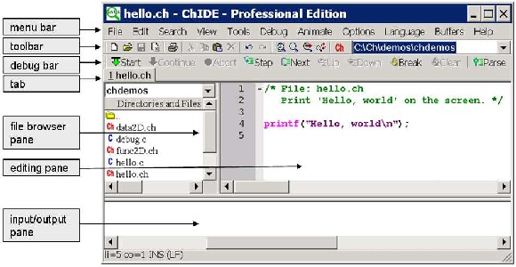
Figure 3.1: A layout and related terminologies in ChIDE.
clicking its icon on the desktop. A layout of ChIDE is displayed in Figure 3.1, which also shows various terms used to describe ChIDE in this book.
3.1.2 The First Ch Program

Let’s get started with programming in Ch! We will write a simple program shown in Program 3.1. The program will display the following output on the screen when it is executed:
Hello, world
To run the code in Program 3.1, the source code needs to be written first. Source code is plain text, which contains instructions of a program. If the text in Program 3.1 is typed in the editing pane in ChIDE, the program will appear colored due to syntax highlighting and with line numbers, as shown in Figure 3.1.
/* File: hello.ch
Print ’Hello, world’ on the screen. */
printf("Hello, world\n");
Program 3.1: The first Ch program hello.ch.
We will explain each line in Program 3.1 in detail. Contents that begin with /* and end with */ are comments. Comments are used to document a program to make the code more readable. When comments
are processed by Ch, they are ignored and no action is taken relating to the comments. The first two lines, listed below, in Program 3.1 are comments.

/* File: hello.ch
Print ’Hello, world’ on the screen */
28
Chapter 3. Getting Started With Programming Linkbots
3.1. Get Started with Ch for Computer Programming
They document that the file name of the program is hello.ch and the purpose of the program is to display the message Hello, world on the screen.
A Ch program typically ends with “.ch”, which is called the file extension. A file name generally does not contain a space.
A function is the basic executable module in a program. Asking a function to perform its assigned tasks
is known as calling the function.
In the statement
printf("Hello, world\n");
The function printf() is used to display Hello, world on the screen. The symbol \n will be explained in section 3.1.6. Each statement in a program must end with a semicolon.
All programs presented in this book are available in the distribution of the source code for this book. Once they are installed, they are typically located in the folder C:\C-STEM\LearnLinkbot in Windows and /opt/C-STEM/LearnLinkbot in Mac OS X.
Opening Programs in ChIDE from Windows Explorer

In Windows, a program listed in the Windows explorer can be opened in the editing pane of ChIDE by clicking on the program. The program can also be opened in the editing pane by dragging and dropping it on to the ChIDE icon on the desktop.
3.1.3 Editing Programs

Text editing in ChIDE works similarly to most Windows or Mac text editors, such as Microsoft Word. As an example, open a new document by clicking the command File->New on the menu bar, or the first icon on the toolbar that looks like a little piece of paper with a folded corner, as shown in Figure 3.1.
You can save the document as a file named hello.ch by the command File->Save As. Follow the instruction and type the file name hello.ch to save as a new program. You can also right click the file name on the tab bar, located below the debug bar, and then select the command Save As to save the program.
3.1.4 Running Programs and Stopping Their Execution

Click Run on the toolbar, as shown in Figure 3.2, to execute the program hello.ch. This will cause the interpreter to read the code and provide an output on the bottom of the ChIDE window as shown in Figure
3.2. Pressing the function key F2 will also execute the program. If you are editing a program, pressing F2 will save the edited program first and then run the saved program.
If the command execution has failed or execution is taking too long to complete, then the
Stop command on the toolbar can be used to stop the program.
3.1.5 Output from Execution of Programs
The editing pane on the top is for writing and editing a program source file or any text file. The input/output pane is located below the editing pane, and is initially hidden. It can be made larger by dragging the divider between it and the editing pane. The output from the program is directed into the input/output pane when it is executed using the command Run, as shown in Figure 3.2. When the program hello.ch is executed,
29
Chapter 3. Getting Started With Programming Linkbots
3.1. Get Started with Ch for Computer Programming
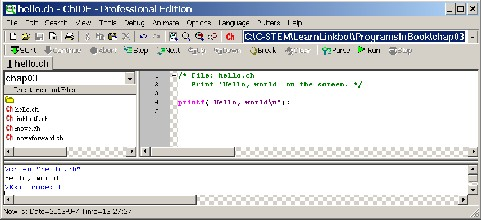
Figure 3.2: Running the program inside the editing pane in ChIDE and its output.
.
the input/output pane will be made visible if it is not already visible and will display the following three lines, as shown in Figure 3.2.
>ch -u "hello.ch" // use the command ch for Ch to execute hello.ch
Hello, world // the output from executing the program hello.ch
>Exit code: 0 // display the exit code for the program

An exit code of 0 indicates that the program has terminated successfully. If a failure had occurred during the execution of the program, the exit code would be -1.
Do Exercises 1, 2, and 3 on page 34.
3.1.6 Newline Character

The symbol \n used in the function printf() in Program 3.1 means a newline character. It instructs the computer to start writing on a new line, like the Enter key, which can be illustrated by changing the line

printf("Hello, world\n");
to

printf("Hello, world\nWelcome to Ch!\n");
The output of the new program will become

Hello, world
Welcome to Ch!
After the newline character, the string Welcome to Ch! is displayed at the beginning of the next line on the screen.
3.1.7 Copying Contents in a Program to Another Program in ChIDE

Unlike a calculator, an existing Ch program can be copied to a new file. This process of creating a new program can save a lot of typing. Below are the step-by-step instructions on how to create a program hello2.ch to produce the output described in section 3.1.6. It copies the file hello.ch in Program 3.1 to a new program hello2.ch in ChIDE to solve the above problem.
30
Chapter 3. Getting Started With Programming Linkbots
3.1. Get Started with Ch for Computer Programming
1. Open the file hello.ch in Program 3.1 in the folder C:\C-STEM for Windows, /opt/C-STEM
for Mac OS X, /usr/local/C-STEM for Linux in the file browser pane as shown in Figure 3.5.
2. Select all the contents of this program by clicking the command Edit->Select All or holding the left button of the mouse and dragging the mouse to select the contents to be copied.
3. Click the right button to bring up the menu and click the Copy command on the menu to copy the selected contents into the buffer. Or use Ctrl+C for a shortcut for copying.
4. Open a new document by clicking the first icon on the toolbar that looks like a little piece of paper with a folded corner, as shown in Figure 3.1.
5. Move the cursor to the editing page, click the right button to bring up the menu, and click the Paste command on the menu to paste the contents in the buffer to the opened document. Or use Ctrl+V for a shortcut for pasting.
6. Save this document as a new program hello2.ch,
7. Modify the program hello2.ch with the statement below.
printf("Hello, world\nWelcome to Ch!\n");

Do Exercises 4 and 5 on page 34.
3.1.8 Correcting Errors in Programs

ChIDE can identify errors that occur in the source code and provide helpful responses that aid the user in finding and correcting these errors. To see this, we will create an error in the program hello.ch by changing the line

printf("Hello, world\n");
to

printf("Hello, world\n";
Notice that in the second statement the closing parenthesis is missing. When the program is executed, the results should look like the input/output pane in Figure 3.3. The line with incorrect syntax in the editing pane and the corresponding error message in the input/output pane will be highlighted with a yellow background. The first error message at the line
ERROR: missing ’)’ before ’;’
indicates that a closing parenthesis is missing before the semicolon ’;’.
Because the program fails to execute, the exit code −1 is displayed at the end of the input/output pane
as
>Exit code: -1

Errors in computer programs are called bugs. The process of finding and reducing the number of bugs is called debug or debugging. ChIDE is especially helpful for testing and debugging programs.
Do Exercise 6 on page 34.
31
Chapter 3. Getting Started With Programming Linkbots
3.1. Get Started with Ch for Computer Programming
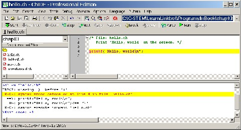
Figure 3.3: The error line in output from executing program hello.c.
3.1.9 Browsing Files

All programs described in the book are available in a folder in C:\C-STEM for Windows, /opt/C-STEM for Mac OS X, /usr/local/C-STEM for Linux. If you use a computer in a laboratory, you may not have permission to write in this folder. You may copy these programs in your own folder.
In Windows, you can hover the cursor over the program name on the tab, the full path and program name will be displayed, as shown in Figure 3.4. This is useful to find out where the program is located when you open multiple programs.
Programs in the current working directory are displayed in the file browser pane, as shown in Figure 3.1. The current working directory is displayed at the end of the tool bar and also at the top of the file browser pane. The first entry under Directories and Files in the file browser pane is the parent directory
of the current working directory. Clicking the arrow at the end of the current working directory in the file
browser pane, all parent directories of the current working directory are displayed as shown in Figure 3.5. Selecting a parent directory, its contents will be displayed in the file browser pane.
The history of current working directories can be displayed by clicking the arrow at the end of the tool bar as shown in Figure 3.6. Selecting a directory in the history of the current working directories, the selected directory will become the current working directory and its contents will be displayed in the file browser pane.
3.1.10 Summary

This section summarizes what you should have learned in this session.
1.
.
2. The comments in a Ch program begin with /* and end with */.
3. Use the output function printf() to print a string.
4. Each statement in a Ch program ends with a semicolon.
5. Use the escape character ’\n’ as a newline character.
32
Chapter 3. Getting Started With Programming Linkbots
3.1. Get Started with Ch for Computer Programming
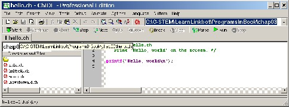
Figure 3.4: Displaying the full path of a program.
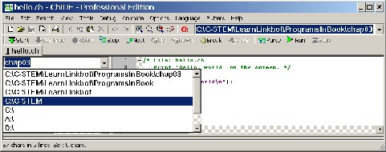
Figure 3.5: Displaying the parent directories of the current working directory.
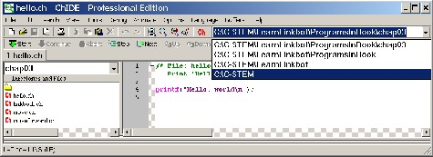
Figure 3.6: Displaying the history of current working directories.
33
Chapter 3. Getting Started With Programming Linkbots
3.1. Get Started with Ch for Computer Programming
6. Use the integrated development environment ChIDE to edit and run Ch programs.
7. Edit, save, and run Ch programs in ChIDE.
8. Run a program by pressing the function key F2.
9. Copy contents in ChIDE using Copy/Paste.
10. Find the corresponding lines in a program with error messages and fix bugs in the program.
3.1.11 Terminology

bugs, calling the function, ChIDE, comment, copy program, debug, debugging, editing pane, error message, exit code, file extension, IDE, Integrated Development Environment, newline character, input/output pane, printf(), Run, source code, Stop
3.1.12 Exercises

1. Create a folder called learnLinkbot to keep Ch programs that you will develop. You may use an alternative folder name and location that your instructor specifies.
2. What is wrong with this line of code:
printf(’cool!";
3. Write a program cool.ch to display
This is cool!
Use the command File->New or click the first menu on the toolbar in ChIDE to open a new unsaved program to enter your code for the program. The program calls the function printf() to display the output on the screen. Save your program as cool.ch using the command File->Save As in the folder created in Exercise 1. Execute the program in ChIDE by the command Run.
4. Write a program welcome.ch to display
Hello, world. Welcome to Ch! This is cool.
by [your_name, today’s date]
Based on the instructions described in section 3.1.7 to copy the program cool.ch, developed in Exercise 3, to the program welcome.ch. The program calls the function printf() four times, one for each output line. Run the program in ChIDE.
5. Write a program welcome2.ch to display the same output as that from the program welcome.ch developed in Exercise 4. But, the program welcome2.ch shall call the function printf() only once. Based on the instructions described in section 3.1.7 to copy the program welcome.ch to the program welcome2.ch. Run the program in ChIDE.
6. Modify the program welcome.ch developed in Exercise 4 to introduce a bug by removing a closing parenthesis ’)’. Run the modified program in ChIDE by pressing the function key F2. Find the line corresponding to the first error message in the editing pane. Then, fix the bug.
34
Chapter 3. Getting Started With Programming Linkbots
3.2. Move Joints Relative to their Current Positions
3.2 Move Joints Relative to their Current Positions

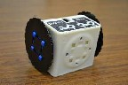
A Ch program can be developed to control the Linkbot. The working principle of a program is the same as using BaroboLink. Program 3.2 contains the code typically used for controlling a Linkbot-I. We will explain the functionality of each statement in this robot program.
/* File: move.ch
Move joints relative to the current positions. */
#include <linkbot.h>
CLinkbotI robot;
/* connect to the paired robot */
robot.connect();
/* set the robot to "zero" position, where all joint angles are 0 degree. */
robot.resetToZero();
printf("Here comes a robot!\n");
/* move joint 1 by 360 degrees and joint 3 by -360 degrees */
robot.move(360, NaN, -360);
printf("Cool!\n");
Program 3.2: The first program to control a Linkbot-I.
A line that starts with a # has a special meaning, which depends on the symbol following it. The line

#include <linkbot.h>
instructs Ch to include the contents of the header file linkbot.h in the program. The contents made available via #include is called a header or header file. This line appears in every Linkbot program to allow control of the Linkbot through the class CLinkbotI. A class is a user defined data type in Ch. The symbol CLinkbotI can be used to create a Linkbot-I object. The line

CLinkbotI robot;
creates robot for controlling a Linkbot-I. A class has functions associated with it. The functions associated with a class are called member functions. For example, the function robot.connect() or connect() is a member function of the class CLinkbotI. In Program 3.2, member functions of the class CLinkbotI are called to control a Linkbot-I. The function call

robot.connect();
connects the variable robot to a Linkbot-I that has been previously configured with the computer as de- scribed in Section 2.2 on page 12. Every Linkbot program controlling the Linkbot contains the above statement.
The next line
35
Chapter 3. Getting Started With Programming Linkbots
3.2. Move Joints Relative to their Current Positions

robot.resetToZero();
uses the resetToZero() member function to move all of its joints to the zero position, as shown in Figure
2.3. It is equivalent to the Reset To Zero button on the Motion Control Panel in BaroboLink, or pressing both A and B buttons of the Linkbot. This statement is typically used in a program to to move all of its joints to the zero position. If the Linkbot is already in the zero position, its joints will not move.
The next line

printf("Here comes a robot!\n");
displays the following output in the input/output pane.
Here comes a robot!
The general syntax of the CLinkbotI member function move() to move two joints of a Linkbot relative to their current positions is as follows.
robot.move(angle1, NaN, angle3);
It has three arguments for three joints, each representing a joint angle relative to its current positions. Since joint 2 cannot be moved, the argument NaN which stands for Not-a-Number is used. The next line
robot.move(360, NaN, -360);
moves joint 1 by 360 degrees and joint 3 by −360 degrees relative to their current position. Since be- fore the motion caused by this statement, all joints are at zero position by the previous function call of robot.resetToZero(), joint 1 of the Linkbot-I rotates 360 degrees and joint 3 rotates −360 degrees. In this way, the robot will move forward.
If the value for a joint angle for the member function move() is negative, the joint moves in the oppositive direction. For example, the statement

robot.move(-360, NaN, 360);
would move joint 1 by −360 degrees and joint 3 by 360 degrees relative to their current positions. The robot will move backward.
Note that all member functions of the class CLinkbotI for motion including move() expect input angles in degrees. In section 7.6, we will learn how to handle joint angles specified in radians.
The last line

printf("Cool!\n");
displays Cool! in the input/output pane.
After your computer is connected to a Linkbot as described in the previous chapter, when Program 3.2
is executed, the following output will be displayed in the input/output pane first,
Here comes a robot!
Then, the Linkbot-I will make a full rotation for both joints 1 and 3. Finally, the following output will be displayed in the input/output pane.
Cool!

Do Exercises 1, 2, 3 on page 37.
3.2.1 Summary
This section summarizes what you should have learned in this session.
36
Chapter 3. Getting Started With Programming Linkbots
3.2. Move Joints Relative to their Current Positions
1. Include the header file linkbot.h and use the class CLinkbotI to declare a variable robot by the following two statements
#include <linkbot.h> CLinkbotI robot;
2. Call the CLinkbotI member function
robot.connect();
to connect the variable robot to a Linkbot-I.
3. Call the CLinkbotI member function
robot.resetToZero();
to move all two joints of a Linkbot to their zero positions.
4. Call the CLinkbotI member function
robot.move(angle1, NaN, angle3);
to move joints 1 and 3 of a Linkbot-I relative to their current positions specified in its first and third arguments.
5. A Linkbot program typically begins with the following statements.
#include <linkbot.h> CLinkbotI robot; robot.connect(); robot.resetToZero();
to declare the variable robot, connect it to a Linkbot, and set the Linkbot to the zero position, where all joint angles are at zero degrees.
6. Joint angles in arguments of the CLinkbotI member functions, such as move(), are specified in de- grees.
3.2.2 Terminology

#include <linkbot.h>, NaN, Not-a-Number, header, header file, class, CLinkbotI, member function, rela- tive position, robot.connect(), robot.resetToZero(), robot.move().
3.2.3 Exercises

1. Write a program move2.ch to move the two rotating joints of a Linkbot-I two full rotations (hint:
one full rotation is 360 degrees) to the position of 720 degrees.
2. Write a program move3.ch to make a Linkbot-I turn left by rotating only joint 3 by −360 degrees.
3. Write a program move4.ch to make a Linkbot-I turn left fast using by rotating joint 1 by −360
degrees and joint 3 by -360 degrees.
37
Chapter 3. Getting Started With Programming Linkbots
3.3. Drive Forward and Drive Backward Relative to its Current Joint Position
3.3 Drive Forward and Drive Backward Relative to

its Current Joint Position
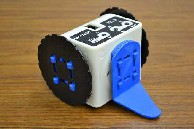
A Linkbot-I can be configured as a two-wheel robot. In this case, both joints 1 and 3 can rotate together to roll forward or backward. The member function driveForward() causes both joints 1 and 3 to drive the Linkbot-I forward. The syntax of the member function driveForward() is as follows.
robot.driveForward(angle);
The amount to roll the wheels forward relative to their current positions is specified by the argument angle. The above member function call is equivalent to the following member function call with move().
robot.move(angle, NaN, -angle);
The member function driveBackward() causes both joints 1 and 3 to roll the Linkbot-I backward. The syntax of the member function driveBackward() is as follows.
robot.driveBackward(angle);
The amount to drive the wheels backward relative to their current positions is specified by the argument
angle. The above member function call is equivalent to the following member function call with move().
robot.move(-angle, NaN, angle);
The prefix drive for a name of a member function is reserved for member functions to drive a Linkbot-I
configured as a two-wheel robot.
/* File: driveforward.ch
Drive forward and backward for Linkbot-I as a two-wheel vehicle */
#include <linkbot.h>
CLinkbotI robot;
/* connect to the paired robot and move to the zero position */
robot.connect();
robot.resetToZero();
/* drive forward by rolling two wheels for 360 degrees */
robot.driveForward(360);
/* drive backward by rolling two wheels for 360 degrees */
robot.driveBackward(360);
Program 3.3: Rolling forward and backward as a two-wheel vehicle using driveForward() and driveBack- ward().
38
Chapter 3. Getting Started With Programming Linkbots
3.4. Monitor Joint Angles Using the Motion Control Panel
For example, Program 3.3 first drives the Linkbot-I forward 360 degrees for both joints 1 and 3 by

robot.driveForward(360);
Then, it drives the Linkbot-I backward 360 degrees for both joints 1 and 3 by

robot.driveBackward(360);

Do Exercise 1 on page 39.
3.3.1 Summary

1. Call the CLinkbotI member function
robot.driveForward(angle);
to drive a Linkbot-I forward by rolling both joints 1 and 3 with the specified angle, relative to their current positions for both joints.
2. Call the CLinkbotI member function
robot.driveBackward(angle);
to drive a Linkbot-I backward by rolling both joints 1 and 3 with the specified angle, relative to their current positions for both joints.
3.3.2 Terminology

robot.driveForward(), robot.driveBackward(), move forward, move backward.
3.3.3 Exercises

1. Write a program driveforward2.ch to drive backward a Linkbot-I by rolling joints 1 and 3 by
180 degrees, then drive it forward by rolling joints 1 and 3 by 360 degrees.

3.4 Monitor Joint Angles Using the Motion Control
Panel
When a Linkbot program is executed, you can monitor the motion of its joints in the section of the Joint Position Control on the Motion Control Panel in BaroboLink as shown in Figure 2.12 in section 2.4.1 on page 20. As the Linkbot is moving, the vertical sliders for joints and the joint angles displayed above the sliders will be dynamically updated.
You can run the program driveforward.ch in Program 3.3 to monitor the joint angles of the Linkbot on the Motion Control Panel in BaroboLink. When you run the program, joint 1 will move from 0 to 360 degrees first and then back to 0 degree. Joint 3 will move from 0 to −360 degrees first, then back to 0 degree, as you can monitor the change of joint angles on the Motion Control Panel in BaroboLink as shown in Figure 3.7.
When a program is executed in the debug mode by the command Next in ChIDE, the program will be executed line by line. The currently executed statement is highlighted in the green color. For example, Figure 3.8 shows that Program 3.3 is executed in the debug mode. The currently executed statement
39
Chapter 3. Getting Started With Programming Linkbots
3.4. Monitor Joint Angles Using the Motion Control Panel
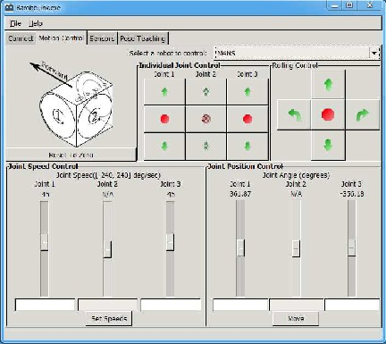
Figure 3.7: Monitoring the movements of joints of a Linkbot on the Motion Control Panel in BaroboLink.
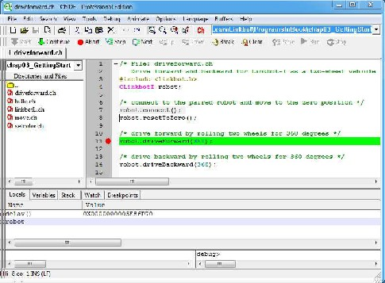
Figure 3.8: Running the program driveforward.ch in debug mode.
40
3.5. Set the LED Color
Chapter 3. Getting Started With Programming Linkbots

robot.driveForward(360);
is highlighted in the green color. The joint angles of the Linkbot at this point on the Motion Control Panel on BaroboLink is shown in Figure 3.7. Since the low-cost Linkbot is not high precision, the joint angles may not reach and stay in the exact goal positions. When you monitor the joint angles in BaroboLink, as shown in Figure 3.7, the joints are close to the goal positions. Until you click Next to execute the next statement, the joint angles of the robot will remain in their current goal positions.
When a program is executed in the debug mode, the command Continue can be clicked to continue the execution of the program until the program ends.
| Please note | that when | BaroboLink | is in Motion Control Panel, it constantly communicates with a con- |
nected Linkbot | to update | the positions | on the panel. If a class with | a large number of Linkbots connected |
wirelessly to many computers to | run programs at the same time, it | may | jam the communication channel. |
It is recommended to disable the | Motion | Control | Panel by | switching | the | BaroboLink to Connect Panel for |
many computers running Ch programs to | control | Linkbots | wirelessly | in a classroom. | |

Do Exercise 1 on page 41.
3.4.1 Summary

1. Execute a Linkbot program line-by-line using the command Next on the debug bar in ChIDE while monitoring joint angles of a Linkbot on the Motion Control Panel in BaroboLink.
2. Use the command Continue to finish the execution of the remaining part of the program non-stop.
3.4.2 Terminology

Debug mode, Next, Continue,
3.4.3 Exercises

1. Write a program monitormotion.ch to drive a Linkbot-I with the following motion statements.
robot.move(360, NaN, -360); robot.driveForward(360); robot.driveBackward(720);
Run the program in ChIDE in debug mode with the command Next on the debug bar, as you monitor the change of joint angles on the Motion Control Panel in BaroboLink.
3.5 Set the LED Color

Section 2.3 demonstrated how to change the LED color of a Linkbot through the Sensors Panel of BaroboLink. It is also possible to change the LED color of a Linkbot within a Ch program to add visual effects. Program
3.4 shows an example of how this is done.
41
3.5. Set the LED Color
Chapter 3. Getting Started With Programming Linkbots
/* File: setcolor.ch
Set the LED color before and after the movement */
#include <linkbot.h>
CLinkbotI robot;
/* connect to the paired robot and move to the zero position */
robot.connect();
robot.resetToZero();
/* drive forward by rolling two wheels for 360 degrees */
robot.driveForward(360);
/* change the LED color to blue */
robot.setLEDColor("blue");
/* drive backward by rolling two wheels for 360 degrees */
robot.driveBackward(360);
/* change the LED color to red */
robot.setLEDColor("red");
Program 3.4: Setting the LED color for a Linkbot-I.
Program 3.4 builds upon Program 3.3 by changing the LED color of the Linkbot-I after it moves forward, and again after it moves backward. The color of a Linkbot-I’s LED can be changed using the CLinkbotI member function setLEDColor(). The general syntax of this member function is as follows.
robot.setLEDColor(color);
The argument color specifies the desired color. A full list of the 137 possible colors that can be used with the member function setLEDColor() can be found in Appendix C. If a color other than those listed in Appendix C is used, the LED color remains unchanged and an error message is printed to the input/output pane in ChIDE.
In Program 3.4, after the Linkbot-I moves forward, the line

robot.setLEDColor("blue");
changes the LED color of the Linkbot-I to blue. And after the Linkbot-I moves backward, the line

robot.setLEDColor("red");

changes the LED color of the Linkbot-I to red.
Do Exercise 1 on page 43.
3.5.1 Summary

1. Call the CLinkbotI() member function
robot.setLEDColor(color);
to set the LED color of a Linkbot-I.
3.5.2 Terminology

robot.setLEDColor().
42
3.6.  Control the Linkbot-L
Control the Linkbot-L
Chapter 3. Getting Started With Programming Linkbots
3.5.3 Exercises

1. Write a program setcolor2.ch, based on Program 3.4, to change the LED color of a Linkbot-I as follows: First, set the LED color to brown and then drive the Linkbot-I forward by 360 degrees. Then set the LED color to green and drive the Linkbot-I backward by 360 degrees. Finally, set the LED color to pink.
3.6 Control the Linkbot-L
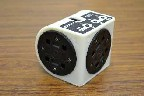
Figure 3.9: A Linkbot-L.
In the previous chapter, we learned how to control a Linkbot-L using the BaroboLink graphical interface. Similar to controlling a Linkbot-I, a Ch program can be developed to control the Linkbot-L. Program 3.5 contains the code typically used for controlling a Linkbot-L.
/* File: linkbotL.ch
Move joints relative to the current positions for Linkbot-L. */
#include <linkbot.h>
CLinkbotL robot;
/* connect to the paired robot and move to the zero position */
robot.connect();
robot.resetToZero();
/* move joint 1 by 360 degrees and joint 2 by 360 degrees */
robot.move(360, 360, NaN);
Program 3.5: A program to control a Linkbot-L.
Like all Linkbot programs, a Linkbot-L program begins with the line

#include <linkbot.h>
to include the contents of the header file linkbot.h. This header file defines both classes CLinkbotI and
CLinkbotL for creating Linkbot-I and Linkbot-L objects, respectively. The line

CLinkbotL robot;
creates robot for controlling a Linkbot-L.
Like all other Linkbot programs, the statement

robot.connect();
connects the variable robot to a Linkbot-L that has been previously configured through the BaroboLink.
The next line
43
3.6.  Control the Linkbot-L
Control the Linkbot-L
Chapter 3. Getting Started With Programming Linkbots

robot.resetToZero();
uses the resetToZero() member function to move joints 1 and 2 of the Linkbot-L to the zero position.
The general syntax of the CLinkbotL member function move() to move joints 1 and 2 of a Linkbot-L
relative to their current positions is as follows.
robot.move(angle1, angle2, NaN);
It has three arguments for three joints, each representing a joint angle relative to its current position. Since joint 3 cannot be moved, the argument NaN which stands for Not-a-Number is used. The next line

robot.move(360, 360, NaN);
moves both joints 1 and 2 by 360 degrees relative to their current positions.
Most member functions for CLinkbotI are available for CLinkbotL. They are handled similarly for both Linkbot-I and Linkbot-L. The major difference is that the Linkbot-I uses joints 1 and 3 whereas the Linkbot-L uses joints 1 and 2. In general, all ideas and concepts for programming Linkbot-I are applicable to Linkbot-L. Therefore, in the remaining part of this manuscript, the presentation will focus on the Linkbot-I.

However, since the Linkbot-I can be treated as a two-wheel vehicle, member functions driveForward(), driveBackward(), turnLeft(), turnRight(), and driveDistance() are available for the class CLinkbotI only. We will learn the member function driveDistance() in section 5.4.
Do Exercises 1 and 2 on page 44.
3.6.1 Summary

1. Include the header file linkbot.h and use the class CLinkbotL to declare a variable robot by the following two statements
#include <linkbot.h> CLinkbotL robot;
for controlling a Linkbot-L.
2. Call the CLinkbotL member function
robot.move(angle1, angle2, NaN);
to move joints 1 and 2 of a Linkbot-L relative to their current positions specified in its first and second arguments.
3.6.2 Terminology

CLinkbotL.
3.6.3 Exercises
1. Write a program linkbotL2.ch to move the two rotating joints of a Linkbot-L two full rotations of 720 degrees.
2. Write a program linkbotL3.ch to rotate joint 2 by −360 degrees for a Linkbot-L.
44
Chapter 3. Getting Started With Programming Linkbots
3.7. Control a Linkbot Wirelessly Without Connecting with a USB Cable

3.7 Control a Linkbot Wirelessly Without Connect-
ing with a USB Cable
The BaroboLink in a computer can control one or multiple Linkbots. One Linkbot needs to be connected to the computer through the USB cable. For controlling multiple Linkbots, the Linkbot connected to the computer through the USB cable will act as a dongle for the BaroboLink to connect and control other Linkbots through the ZigBee wireless communication, as shown in Figure 3.10. The other Linkbots in the network can be located as far as 100 meters.
Figure 3.10: The configuration for the BaroboLink to control multiple Linkbots, with one Linkbot connected to a c omputer through a USB cable.
If you move the Linkbot with the serial number 7TQX acting as a dongle at the bottom in the list under the “Connect” tab as shown in Figure 3.11, the Linkbot with the serial number 9418 listed at the top, without being connected through the USB cable, can be controlled by a program wirelessly. Multiple Linkbots at the top can also be controlled by a program. Also, you do not even need to connect the Linkbot acting as a dongle in BaroboLink so long as it is connected physically through the USB cable, as shown in Figure 3.11.
45
Chapter 3. Getting Started With Programming Linkbots
3.7. Control a Linkbot Wirelessly Without Connecting with a USB Cable
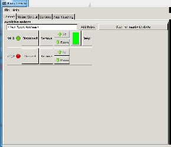
Figure 3.11: Controlling the Linkbot with the serial number 9418 wirelessly while the Linkbot with the serial number 7TQX acting as a dongle.

Do Exercise 1 on page 46.
3.7.1 Summary

1. Control a Linkbot wirelessly without connecting to a USB cable.
3.7.2 Terminology

wireless, dongle.
3.7.3 Exercises

1. Use a Linkbot as a dongle connected through a USB cable to a computer. Control another Linkbot wirelessly using a program developed previously.
46


CHAPTER 4

Robot Simulation with RoboSim
RoboSim is a robot simulation environment, developed by the UC Davis C-STEM Center, for programming Barobo Mobots and Linkbots. Almost any program that can control hardware Barobo robots, except for pro- grams using a controller robot, can be used to run virtual robots in RoboSim without any modification. Also any program that can control virtual robots in RoboSim, except for the coordinate system programs in Ap- pendix B, can be run on hardware Barobo robots without any changes. RoboSim can be freely downloaded from the C-STEM web site at http://c-stem.ucdavis.edu.
4.1 RoboSim GUI
RoboSim can be conveniently launched by double clicking its icon on the desktop. The RoboSim graphical user interface (GUI), shown in Figure 4.1, allows the user to change between hardware and virtual robots when a Ch robot program is executed. There is no save button within the GUI, all changes made are automatically saved.
4.1. RoboSim GUI
Chapter 4. Robot Simulation with RoboSim
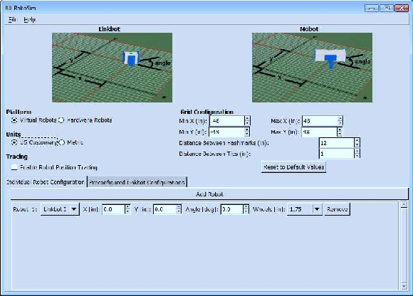
Figure 4.1: The RoboSim GUI.
4.1.1 Platform

The Platform entry, as shown in Figure 4.2, allows the user to decide whether a Ch program controls the hardware or virtual robots. Each time a new Ch program is started, it will check the setup based on this entry. For a Ch robot program to control a virtual robot, check the box for Virtual Robots. If the box for Hardware Robots is checked, a Ch program will control the physical hardware robots.
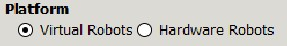
Figure 4.2: The entry for selecting a simulation or hardware platform.
4.1.2 Units

Simulations within RoboSim can be run either in US Customary units consisting of inches, degrees, and seconds or Metric units with centimeters, degrees, and seconds. Changing units will effect the grid spacing drawn beneath the robots and the spacing between robots. Changing between these two options will change
48
4.1. RoboSim GUI
Chapter 4. Robot Simulation with RoboSim
the labels within the GUI to indicate the units being used.
4.1.3 Tracing

Tracing where robots have been can be enabled by selecting the check box “Enable Robot Position Tracing”, as shown in Figure 4.1. When the tracing is enabled, green lines for robot trajectories will be drawn for each robot. Once a simulation is running, the tracing line can be enabled or disabled by pressing the ’t’ key.
4.1.4 Grid Configuration

To be able to see how far robots have moved, a grid is enabled under the robots. There are six options to alter the layout of the grid lines under the Grid Configuration. The minimum and maximum extends of the grid for both the X and Y directions can be specified individually. Rectangular grids of any size can be created in any of the quadrants. Hashmarks are the red lines drawn within the configuration images. By default, the distance between two hashmarks is 12 inches in US Customary units and 50 centimeters in Metric units. Tics are the most frequent lines drawn in a light gray. By default, the distance between two tics is 1 inch in US Customary units and 5 centimeters in Metric units.
Switching between US Customary and Metric units will change these default values to logical starting points for the metric system. The ’Reset to Defaults’ button will allow the default values for both US Customary and Metric to be reinstated after they have been changed. Depending upon which units are currently selected from Section 4.1.2, either the US Customary defaults, shown in Figure 4.3, or the Metric defaults, as shown in Figure 4.4, will be set.
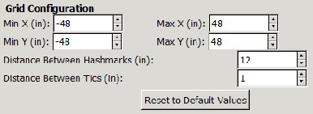
Figure 4.3: The default grid spacing in the US Customary units.
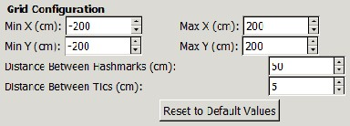
Figure 4.4: The default grid spacing in the Metric units.
49
4.1. RoboSim GUI
Chapter 4. Robot Simulation with RoboSim
4.1.5 Individual Robot Configuration

Initial robot configurations can either be done through the Individual Robot Configuration or Preconfig- ured Linkbot Configuration section. The Individual Linkbot Configuration section, as shown in Figure
4.5, has options to allow robots to be positioned within the RoboSim scene either with or without wheels but not attached to each other.
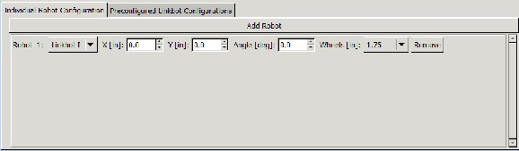
Figure 4.5: Individual robot configuration dialog.
The user can specify the x and y coordinates as well as the orientation angle of a virtual robot. Images for the Linkbot and Mobot showing the meaning of each of the options are displayed above the configuration box. They are screenshots of the virtual robots positioned at one foot in both the x and y coordinates with the orientation angle of 30 degrees from the x-axis.
Initially, the individual robot list is empty, but it can be populated by the ’Add Robot’ button below the configuration images. Clicking this button each time will add a robot into the RoboSim, each offset from the previous one in the x-direction by 6 inches or 15 centimeters depending upon the units selected. The order within the robot list will be the order in which the robots will be read into the simulation program.
Robot Type
There are three options for robot type available. Linkbot-I, Linkbot-L, and Mobot. The options are presented in a drop down menu as shown in Figure 4.6.
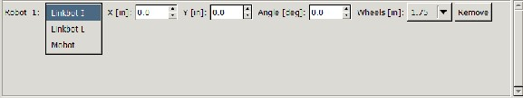
Figure 4.6: Picking a robot type.
Robot Position
Both x and y coordinates can be chosen independently for each robot.
50
4.1. RoboSim GUI
Chapter 4. Robot Simulation with RoboSim
Robot Angle
The rotation angle from the x-axis can be used for changing the direction of the movement for the robot or the orientation of two robots respective to each other.
Wheels
Since so many times the robots are run with wheels and a caster connected, a drop down menu is provided to select different wheel sizes. The options listed are the radii of the wheels typically used with Linkbots. Each wheel is drawn with a series of dots along the one radius to easily show the rotation of the wheel. The correlation between wheel radius and number of dots is given in Table 4.1.
Number of Dots Wheel Radius
2 custom radius
3 1.625 inch / 4.13 centimeter
4 1.75 inch / 4.45 centimeter
5 2.00 inch / 5.08 centimeter
Table 4.1: Wheel sizes and number of dots.
Custom wheel sizes are available by using the ’Custom’ option from the drop down menu. This option creates an input box to the right to let the user enter a wheel radius.
Remove
A robot can be removed from the RoboSim by clicking the ’Remove’ button.
4.1.6 Preconfigured Linkbot Configurations

In addition to positioning robots independently within the RoboSim, some Preconfigured Linkbot Con- figurations, as shown in Figure 4.7, which represent commonly used Linkbot configurations are available to the user. Selecting one of these options will display a picture of the configuration built with the hard- ware Linkbots, corresponding to a Ch robot program presented in Chapter 13. When one of these options is selected, the specific configuration for this setup is passed into Ch and robots specified in the individual robot configuration are ignored. To switch back to the individual configuration, just unselect the selected preconfigured robot configuration.
51
4.1. RoboSim GUI
Chapter 4. Robot Simulation with RoboSim
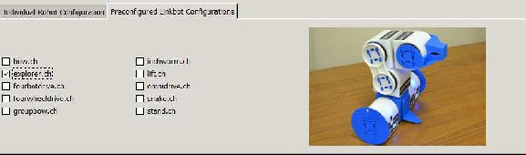
Figure 4.7: Preconfigured robot configurations with Linkbots.

Do Exercise 1 on page 52.
4.1.7 Summary

1. Select simulation or hardware mode in a RoboSim GUI for controlling robots from a Ch program.
2. Select US Customary units with inches, degrees, and seconds or Metric units with centimeters, de- grees, and seconds for RoboSim.
3. Add robots to the RoboSim. The information for a robot includes robot type (Linkbot-I, Linkbot-L, or Mobot), the x and y coordinates as well as the orientation angle with respect to the x-axis for the robot, attached wheels of different sizes to the robot.
4. Remove a robot from the RoboSim
5. Use Preconfigured Linkbot Configurations to run a robotic system with multiple connected Linkbots.
6. Set grid lines in the RoboSim scene with the US Customary units or Metric units.
7. Enable or disable the tracing of robot trajectories.
4.1.8 Terminology

RoboSim, RoboSim GUI, simulation, units, US Customary units, Metric units. robot type, x and y coordi- nates, orientation, grids for x and y coordinate systems, tracing robot trajectory.
4.1.9 Exercises

1. (a) Launch a RoboSim GUI.
(b) Add a Linkbot-I to the RoboSim at the x and y coordinates (6, 0) inches with an orientation
angle of 30 degrees with respect to the x-axis, attach wheels with the radius of 1.75 inches to joints 1 and 3.
(c) Set the x and y coordinate system on the RoboSim scene. The total distance for x and y directions
are 48 inches (4 feet) each. The distance between each Hashmark is 6 inches. The distance between each tics is 1 inch.
(d) Track the robot trajectory when the robot moves.
52
4.2. Run a Ch Program with RoboSim
Chapter 4. Robot Simulation with RoboSim
4.2 Run a Ch Program with RoboSim

Once the simulation environment has been configured with the RoboSim GUI in Section 4.1, the user can run Ch programs in ChIDE to control the virtual robots. The RoboSim GUI should remain open while simulating robots. Once it is closed, the system will revert to hardware mode. The RoboSim scene with virtual robots for each simulation are created upon running a Ch program. For example, when the Ch program driveforward3.ch, listed in Program 4.1, is executed, a RoboSim scene shown in Figure 4.8 will be displayed. The message
Paused: Press any key to start
is displayed in the RoboSim scene to reminder the user that the virtual robot will not move until the user presses any key on the keyboard. This gives the user an opportunity to examine the RoboSim scene before the motion begins.
/* File: driveforward3.ch
Drive forward for Linkbot-I as a two-wheel vehicle */
#include <linkbot.h>
CLinkbotI robot;
/* connect to the paired robot and move to the zero position */
robot.connect();
robot.resetToZero();
/* drive forward by rolling two wheels for 360 degrees */
robot.driveForward(360);
Program 4.1: Moving a Linkbot forward.
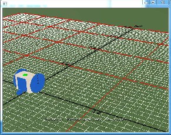
Figure 4.8: A RoboSim scene with a virtual robot at its starting position.
While a robot is moving in the RoboSim scene, the user can press any key to pause the motion of the robot. When the motion is paused, the message
53
4.2. Run a Ch Program with RoboSim
Chapter 4. Robot Simulation with RoboSim
Paused: Press any key to restart
will be displayed in the RoboSim scene. The user can press any key to restart the motion.
When the user presses the ’t’ key, the robot trajectory is traced in a green line in the RoboSim scene as shown in Figure 4.9.
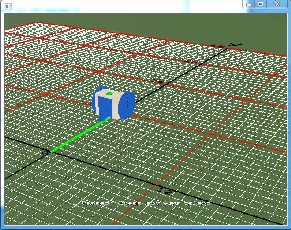
Figure 4.9: A RoboSim scene with a virtual robot and its trajectory traced.

Do Exercise 1 on page 55.
The default green color for both LED and trajectory of a robot can be changed by the member function
setLEDColor() in a program as shown in Program 4.2.
/* File: setcolor3.ch
Change the color of the LED and trajectory of the robot to red */
#include <linkbot.h>
CLinkbotI robot;
/* connect to the paired robot and move to the zero position */
robot.connect();
robot.resetToZero();
/* change the color of the LED and trajectory to red */
robot.setLEDColor("red");
/* drive forward by rolling two wheels for 360 degrees */
robot.driveForward(360);
Program 4.2: Change the color of the LED and trajectory of a robot to red.
When the program is finished, the message
Paused: Press any key to end

will be displayed in the RoboSim scene. Pressing any key, the RoboSim scene will disappear.
Do Exercise 2 on page 55.
54
4.3. Interact with a RoboSim Scene
Chapter 4. Robot Simulation with RoboSim
4.2.1 Summary

1. Run a Ch program to control a virtual robot in RoboSim.
2. Press the ’t’ key to trace the robot trajectory.
3. Press any key to pause and restart the motion of a robot in the RoboSim scene.
4.2.2 Terminology

RoboSim scene, tracing robot trajectories.
4.2.3 Exercises

1. (a) Write a Ch program driveforward5.ch to driving a Linkbot-I forward by rotating both joints 1 and 3 for 720 degrees.
(b) Based on the setup on the RoboSim GUI described in Exercise 1 on page 52, run the program
driveforward5.ch to simulate the motion of the robot in RoboSim.
(c) When the robot is moving in the RoboSim scene, press a key on the keyboard to pause the
motion of the robot. Then, press a key to restart the motion.
(d) When the robot is moving in the RoboSim scene, press the ’t’ key to toggle the tracing of the
robot trajectory. Press the ’n’ key to toggle the tgrid numbering.
2. Modify the program driveforward5.ch in Exercise 1 as the program setcolor4.ch to change the color of the LED and trajectory to blue.
4.3 Interact with a RoboSim Scene

The user can interact with a RoboSim scene through the keyboard and mouse.
4.3.1 Keyboard Input

The RoboSim scene responds to keyboad input as outlined in Table 4.2.
key action
1 set the camera to the default view
2 set the camera to the overhead view n Toggle grid line numbering
r Toggle robot visibility and enable tracing t Toggle robot tracing
any other key Pause and restart the motion
Table 4.2: Keyboard input for the RoboSim scene.
As described in the previous sections, the ’t’ key will toggle the tracing of robot trajectories. In addition the ’t’ key, a few other keys can be used to change the view of the RoboSim scene.
55
4.3. Interact with a RoboSim Scene
Chapter 4. Robot Simulation with RoboSim
There are two views available to the user. The default view, which can be toggled with the ’1’ key, is from behind the robots looking into the first quadrant. This view can be seen in all RoboSim scene screenshots in this book, except for Figure 4.10 which shows the overhead view. The ’2’ key moves the camera directly above the origin looking down on the scene creating a 2D viewpoint of the robots.
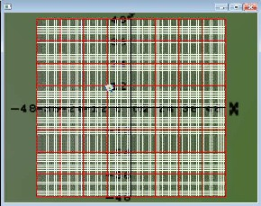
Figure 4.10: A RoboSim scene with the overhead viewing angle.
The ’n’ key allows the user to toggle the display of the grid numbering. X and Y numbering is by default enabled and given for every hashmark on the grid.
The ’r’ key will toggle the display of virtual robots or robot trajectories. This feature is useful when the user would like to view a trajectory traced by a robot without the virtual root blocking the trajectory. When two virtual robots collide in a RoboSim scene, the program will stop working properly. However, without showing the virtual robots, the collision will not happen. This is useful for solving math problems such as two robots intercepting. Figure 4.11 shows a RoboSim scene with a traced robot trajectory only, without the robot displayed.
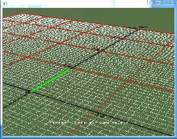
Figure 4.11: A RoboSim scene with a traced robot trajectory only.
56
4.3. Interact with a RoboSim Scene
Chapter 4. Robot Simulation with RoboSim
As described in the previous section, the motion of robots in the RoboSim scene can be paused and restarted by pressing any other key on the keyboard.
4.3.2 Mouse Input

Clicking on a robot in a RoboSim scene will enable a pop up which displays the robot number and the current position of the robot, as shown in Figure 4.12 with the position (0, 10.9817) inches for the x and y coordinates for robot 1.
Clicking again, the displayed position for the robot will disappear.
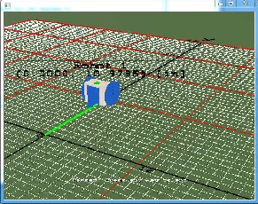
Figure 4.12: A RoboSim scene with a virtual robot and its position displayed.
The user can execute a Ch robot program in debug mode in ChIDE, line by line, with the command Next, as described in section 3.4. At the end of each motion statement, the user can click the robot in the RoboSim scene to obtain the x and y coordinates of the robot. The ability to obtain the x and y coordinates of a robot during its motion along a trajectory can be very useful for learning many math concepts. For example, the Ch program driveforward4.ch, listed in Program 4.3, drives forward a Linkbot-I twice by calling the member function driveForward() twice, the user can run the program in ChIDE in debug mode to find the distance traveled by each call. When the first driveForward() is finished, the user can click on the robot to find the x and y coordinates. The y coordinate is the distance traveled by the robot.
57
4.3. Interact with a RoboSim Scene
Chapter 4. Robot Simulation with RoboSim
/* File: driveforward4.ch
Drive forward twice for Linkbot-I as a two-wheel vehicle */
#include <linkbot.h>
CLinkbotI robot;
/* connect to the paired robot and move to the zero position */
robot.connect();
robot.resetToZero();
/* drive forward by rolling two wheels for 360 degrees */
robot.driveForward(360);
/* drive forward by rolling two wheels for 360 degrees again */
robot.driveForward(360);
Program 4.3: Driving a Linkbot forward by calling the member function driveForward() twice.
The mouse can be used to move the camera around the scene. Holding the left mouse button and dragging the mouse pans the camera as outlined in Table 4.3. Holding the right mouse button and dragging the mouse enables scaling of the view by zooming in and out. Holding both left and right mouse buttons and dragging changes the location of the camera within the scene.
The ground plane is for reference only. The ground plane will disappear when viewing the robots from below so that the user can inspect the movement from all angles.
button action
Hold left mouse button and drag Rotate camera Hold right mouse button and drag Zoom in and out Hold both left and right buttons, and drag Pan around scene
Click on a robot Display the robot position
Table 4.3: Mouse input for the RoboSim scene.

Do Exercise 2 on page 59.
4.3.3 Summary

1. Press the ’r’ key to toggle the robot visibility and tracing the robot trajectory.
2. Hold the left mouse button and drag the mouse to have different view points.
3. Hold the right mouse button and drag the mouse to zoom in and out.
4. Hold both left and right mouse buttons, and drag the mouse to scale the scene.
5. Click on a robot to display the x and y coordinates of the robot.
4.3.4 Terminology

x and y coordinates for a robot.
58
4.3. Interact with a RoboSim Scene
Chapter 4. Robot Simulation with RoboSim
4.3.5 Exercises

1. (a) Run the Ch program driveforward5.ch developed in Exercise 1 on page 59 in RoboSim.
When the robot is moving in the RoboSim scene, press the key ’r’ to toggle the visibility of the
robot. When the robot is finished its motion, press the key ’r’ to toggle the visibility of the robot. (b) Hold the left mouse button and drag the mouse to have different view points.
(c) Hold the right mouse button and drag the mouse to zoom in and out.
(d) Hold both left and right mouse buttons, and drag the mouse to scale the scene. (e) Click on a robot to display the x and y coordinates of the robot.
2. Write a Ch program driveforward6.ch to drive a Linkbot-I forward by rotating both joints 1 and 3 for 720 degrees using the member function driveForward(). Then, dirve the robot backward by rotating both joints 1 and 3 for 360 degrees using the member function driveBackward(). Run the program in ChIDE in debug mode by clicking the command Next on the ChIDE. Click on the robot to obtain the positions of the robot when the robot stops its driving forward and backward.
59


CHAPTER 5
Interacting with a Linkbot at Runtime through Variables and Input/Output Functions
5.1 Use Variables

Variables are often used in solving problems with unknown values. Variables are also a powerful tool available to programmers. Using variables to represent mathematical notation makes a program easier to modify and read. They can be used to solve complicated problems. They can also be used to obtain the information from the user at the runtime for interactive computing. Variables are also commonly used in robot programming for solving applied problems.
However, a variable has to be declared and associated with a proper data type before it can be assigned a value. In this chapter, declaration and use of variables involving commonly used data types for robot programming are described. We will also learn how to move a robot with the specified distance and radius for two wheels.
Table 5.1: Commonly used data types and their usage.
Data Type | Usage | Examples |
double int | decimals integers | 123.4567 12 |
Chapter 5. Interacting with a Linkbot at Runtime through Variables and Input/Output Functions
5.1. Use Variables
5.1.1 Declaration of Variables and Data Type double for Decimals

An identifier is a sequence of lowercase and uppercase letters, digits, and underscores. A variable has to be declared before it can be used inside a program. A variable is declared by specifying its data type and identifier in the form
type name;
where type is one of the valid data types, such as double and int, and name is a valid identifier. For example, the statements
double t; // the traveling time in seconds double distance; // distance traveled
declare variables t and distance of double type. In this case, double is a keyword as a declarator for a data type and t and distance are identifiers as variable names. The symbol // comments out any subsequent text located on the same line.
The difference between lowercase and uppercase letters is important. In other words, variables are case sensitive. The initial character of an identifier must not be a digit. A reserved word, such as double and for, cannot be used as an identifier. Using meaningful and consistent identifiers for variable names makes a program easier to understand, develop, and maintain. A variable name typically uses lowercase letters. Table 5.2 shows some invalid identifiers.
Table 5.2: Examples of invalid identifiers.
Invalid identifier Reason
int reserved word double reserved word for reserved word
2times starts with a digit integer# character # not allowed girl&boy character & not allowed class1+class2 character + not allowed
Multiple variables of the same type can be declared in a single statement by a list of identifiers, each separated by a comma, as shown below for two variables t and distance of double type.
double t, distance; // declare variables t and distance
The names x, y, z, length, width, radius, speed, and distance are used in common practice for variables of double type to hold decimal numbers.
5.1.2 Initialization

Assigning a value to a declared variable for the first time is called initializing the variable. You can initialize a variable in the same statement in which it is declared or you can initialize it in a separate statement. For example:
61
Chapter 5. Interacting with a Linkbot at Runtime through Variables and Input/Output Functions
5.1. Use Variables
and
double t = 5.5; // declare t double type and initialize it with 5.5
double t; // declare t double type t = 5.5; // initialize t with 5.5
accomplish the same goal of declaring a variable t of double type initializing it to 5.5.
5.1.3 Data Type int for Integers

Variables of double type can store decimals. Integers can be stored in a variable of int type. For example;
int i = 2; // declare variable i of int type and initialize it with 2 int n; // declare variable n of int type
n = 4+i; // assign n with 4+i
The names i, j, k, m, n, num, and count are used in common practice for variables of int type.
Application: Calculating the Distance of a Robot Traveled
Problem Statement:
A robot travels at the constant speed of 2.5 inches per second. The distance traveled by this robot can be expressed as follows:
distance = 2.5t
where distance is measured in inches from the starting point and t is time in seconds. Therefore, if you want to know where the robot is at any time, you will take the number of seconds and multiply that by 2.5. Let’s write a program to calculate the distance when the traveling time t for the robot is 5.5 seconds.
We will examine the source code for this program step-by-step. We will need some variables in the program to represent variables in the equation distance = 2.5t. Since the values for distance and time can be decimals we will declare them both as double types.
double t; // the traveling time in seconds double distance; // distance traveled
We also know that we are looking at the problem when 5.5 seconds have passed, or t = 5.5, so we can initialize the variable t in the program.
t = 5.5; // 5.5 seconds for traveling time
To make our program actually do something, we need to tell it how to calculate the distance
distance = 2.5 * t; // calculate the distance traveled
Note that the operators ’+’ and ’-’ in a program can be used for addition and subtraction operations in the same manner as in math. However, the program does not recognize proximity as multiplication. The multiplication operator ’*’ is needed for a multiplication operation. The division operator ’/’ is used for a division operation.
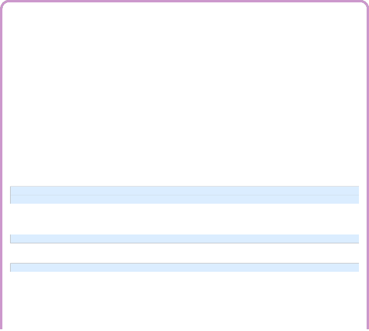
62
Chapter 5. Interacting with a Linkbot at Runtime through Variables and Input/Output Functions
5.1. Use Variables
Finally, we want to show the answer to the user by calling the function printf() similar to how we used it in hello.ch in Program 3.1. There are some additional features needed for this printf() function that will be explained in section 5.2. For now, accept that "%lf" is replaced by the value of the variable distance.
printf("The distance traveled by the robot is %lf inches.\n", distance);
Thus, the final source code will look like Program 5.1. When Program 5.1 is executed, the following output will be displayed in the input/output pane.
The distance traveled by the robot is 13.750000 inches.
The computation result from Program 5.1 will be verified experimentally using a robot program presented in Program 9.9 on page 137.
/* File: distance.ch
Calculate the distance of a robot traveled at 2.5 inches pers second. */
double t; // the traveling time in seconds
double distance; // distance traveled
t = 5.5; // 5.5 seconds for traveling time
distance = 2.5 * t; // calculate the distance traveled
printf("The distance traveled by the robot is %lf inches.\n", distance);
Program 5.1: Calculating and printing the distance of a robot traveled using printf().
In Program 5.1, for simplicity and consistency with the mathematical notations, the variables t and distance represent the time and distance, respectively. Comments for these variables are added in the declaration of these variables to make their intended use more clear. Using variables to represent mathematical notations make a program easier to modify and more readable. It is especially helpful for solving problems with complicated logic.

Do Exercise 1 on page 65.
Application: Using Variables for Joint Angles
Problem Statement:
Write a program angles.ch to rotate joint 1 by 360 degrees and joint 3 by −360 de- grees relative their current positions. Use variables to hold the joint angles.
Based on Program 3.2, we can develop the program angles.ch in Program 5.2. As pointed out in the previous section, a robot program typically begins with the following statements.
#include <linkbot.h> CLinkbotI robot;
to declare the variable robot.
Since joint angles are decimal values, in this program, variables angle1 and angle3 of double
type are declared and assigned with the joint angles by the statements below.
63
Chapter 5. Interacting with a Linkbot at Runtime through Variables and Input/Output Functions
5.1. Use Variables
double angle1 = 360; // declare variable ’angle1’ for joint1 with 360 degrees double angle3 = -360; // declare variable ’angle3’ for joint3 with -360 degrees
These variables are used as arguments of the function move().
The statements
robot.connect();
robot.resetToZero();
connect the variable robot to a Linkbot, and set the Linkbot to the zero position, where all joint angles are at zero degrees.
The statement
robot.move(angle1, NaN, angle3);
moves joints 1 and 3 by the angles specified in the arguments angle1 and angle3, respectively. Program 5.2 behaves the same as Program 3.2.
/* File: angles.ch
Use variables to hold joint angles */
#include <linkbot.h>
CLinkbotI robot;
double angle1 = 360; // declare variable ’angle1’ for joint1 with 360 degrees
double angle3 = -360; // declare variable ’angle3’ for joint3 with -360 degrees
/* connect to the paired robot and move to the zero position */
robot.connect();
robot.resetToZero();
/* rotate joint1 by angle1 and joint3 by angle3 */
robot.move(angle1, NaN, angle3);
Program 5.2: Using variables for joint angles.
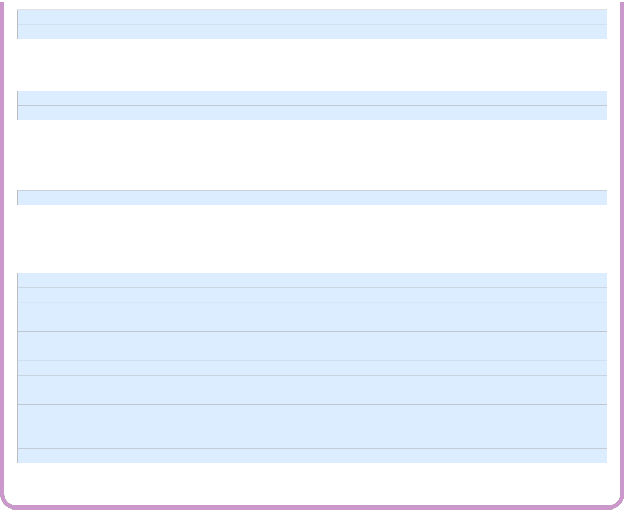

Do Exercises 2 and 3 on page 65.
5.1.4 Summary

1. Reserved words. The words int and double are reserved words in Ch.
2. The data type double is for decimal numbers. Variable names x, y, and z are usually used for double
type.
3. The data type int is for integers. Variable names i, j, k, n, and m are usually used for int type.
4. Learn how to use variables and variable names (identifiers).
5. Before a variable is used, it has to be declared with the data type double or int.
6. Choose descriptive names for variables.
7. Variable names are case sensitive. x and X are two different variable names.
8. Variables can be used in algebraic expressions.
9. Add a comment in a program starting with // till the end of the line.
10. Use the operators ’+’, ’-’, ’*’, and ’/’ for the arithmetic operations of addition, subtraction, multipli- cation, and division, respectively.
64
Chapter 5. Interacting with a Linkbot at Runtime through Variables and Input/Output Functions
5.2. The Output Function printf()
Figure 5.1: A format for using the function printf() and an example.
5.1.5 Terminology

algebraic equations, case sensitive, declare variables, double, evaluation, identifier, initialization, initialize variables, int, name, reserved words, variable
5.1.6 Exercises

1. A joint of a robot rotates at the constant speed of 90 degrees per second. The joint angle can be expressed as follows:
angle = 90t
where angle is measured in degrees from the starting point and t is time in seconds. Write a program
jointangle.ch to calculate the joint angle of the robot 4.5 seconds after the robot starts its motion.
2. Write a program jointangles.ch to control a Linkbot-I. The program shall use variables angle1 and angle3 to hold the joint angles 360 and −360 degrees for joints 1 and 3, respectively. The program calls the function move() with these two variables as arguments to move the joints by the specified angles relative to their current positions.
3. Based on the program driveforward.ch, presented in Program 3.3 on page 38, write a program driveforward3.ch to control a Linkbot. The program shall use a variable angle to hold a joint angle of 360 degrees. The program calls the function driveForward() with the variable angle to move the robot forward.
5.2 The Output Function printf()
The input/output, or I/O, refers to the communication between a computer program and input/output de- vices. The inputs are the data received by the program. The outputs are the data produced by the pro- gram. In the previous section, we used the output function printf() to display the output from the program hello.ch, as shown in Figure 3.2, and the program distance.ch in Program 5.1. In this section, we will learn more about the output function printf(). We will learn the input function scanf() in the next section.
The function printf() can be used to print text and data to the input/output pane. A general form of the function printf() and a sample application are shown in Figure 5.1. The format in the first argument is a string. This format string can contain an object called a conversion specifier, such as "%lf" and "%d". A conversion specifier tells the program to replace that object with the value of the expression of specific type that follows the string. The expression can be a constant or variable. For instance, in Program 5.1 the line

printf("The distance traveled by the robot is %lf inches.\n", distance);
65
Chapter 5. Interacting with a Linkbot at Runtime through Variables and Input/Output Functions
5.2. The Output Function printf()
contains the conversion specifier "%lf" which is replaced with the value of variable distance when the program is run. The printed output thus becomes:
The distance traveled by the robot is 13.750000 inches.
Table 5.3 lists the conversion specifiers we will use along with the data type they represent. The con- version specifier "%lf" is used to print a decimal number or the value of a variable of double type. The conversion specifier "%d" is used to print an integer number or the value of a variable of int type.
Table 5.3: Conversion specifiers for the functions printf() and scanf().
Data Type | Format |
double int | "%lf" "%d" |
The conversion specifier "%lf" prints out a decimal with six digits after the decimal point. Using the wrong conversion specifier will give an incorrect result. For example, using "%d" for the decimal number
12.345 or variables of double type, and "%lf" for the integer 10 or variables of int type will give incorrect results. For example, the code below should use the conversion specifier "%lf" instead of "%d".
double speed = 10.5;
printf("%d", 10.5); // incorrect.
printf("%d", speed); // incorrect.
5.2.1 Precision of Decimal Numbers

By default, the conversion specifier "%lf" prints out a decimal number with six digits after the decimal point. When a decimal number is used to represent currency, we want to have two digits after the decimal point for cents. We can accomplish this by specifying the precision of the output. The precision of a decimal number specifies the number of digits after the decimal point. The precision typically takes the form of a period (.) followed by an integer. For example, the conversion specifier "%.2lf" specifies the precision with two digits after the decimal point. The number after the specified amount is rounded to the nearest value. For example, with the conversion specifier "%.2lf", the decimal number 12.1234 is printed as
12.12 with the precision value of 2, whereas 12.5678 is printed as 12.57.
Application: Calculating the Cost for Buying the Ice Cream
66
Chapter 5. Interacting with a Linkbot at Runtime through Variables and Input/Output Functions
5.2. The Output Function printf()
Problem Statement:
The sale price of ice cream is $0.47 per ounce. Write a program icecream.ch to calculate the cost of buying 5.5 ounces of ice cream.
Program 5.3 can calculate the cost for buying ice cream. The math formula to calculate the cost of buying the ice cream at $0.47 per ounce is
cost = 0.47 ∗ weight
/* File: icecream.ch
Calculate the cost for 5.5 ounces of the ice cream.
The ice cream is sold by weight. $0.47 per ounce. */
/* declare variables weight and cost */
double weight, cost;
/* initialize weight in lb */
weight = 5.5;
/* calculate the cost*/
cost = 0.47 * weight;
/* display the cost as output */
printf("The ice cream costs $%.2lf \n", cost);
Program 5.3: Calculating the cost for purchasing ice cream.
Program 5.3 declares two variables weight and cost, assigns the weight, and calculates the cost by the following statements.
double weight, cost; // weight and cost of the yogurt are declared weight = 5.5; // weight is assigned the value 5.5
cost = 0.47 * weight; // cost is calculated
The cost is displayed using the following statement with the function printf().
printf("The ice cream costs $%.2lf \n", cost);
The conversion specifier "%.2lf" is used to print the cost to the nearest cent, two digits after the dec- imal point. When Program 5.3 is executed, the following output will be displayed in the input/output pane.
The ice cream costs $2.58

Do Exercises 1 and 2 on page 68.
5.2.2 Summary

1. Use the output function printf() with the conversion specifier "%lf" for decimal numbers with six digits after the decimal point and "%d" for integers. For example,
printf("distance = %lf\n", f);
67
Chapter 5. Interacting with a Linkbot at Runtime through Variables and Input/Output Functions
5.3. Input into Programs Using Function scanf()
printf("n = %d\n", n);
2. Use the precision of the output function printf() for decimal numbers. The conversion specifier "%.#lf" is used for precision of decimal numbers where "#" is replaced by a whole number for printing a decimal number with "#" number of digits after the decimal point.
3. Write programs with the output function printf() to solve applied problems.
5.2.3 Terminology

character string, conversion specifier, conversion specifier "%lf", conversion specifier "%d", copy pro- gram, format string, I/O, input, output, precision, printf()
5.2.4 Exercises

1. What’s wrong with the following code and how do you correct it?
int n = 10;
printf("n is %lf\n", n);
2. The sale price of frozen yogurt is $0.39 per ounce. Write a program yogurt.ch to calculate the cost of buying 4.5 ounces of frozen yogurt.
5.3 Input into Programs Using Function scanf()

In the previous section, we learned how to produce the output from a program using the function printf(). In this section, we will learn how to write a program to accept the input values from the user. Therefore, the same program can be used to solve the same problems with different data. The function scanf() is used to input data to a program from the standard input, which is usually the keyboard. The input function scanf() can set a variable with the value from the user input. The conversion specifiers listed in Table 5.3 can also be used for the function scanf() in the form of
scanf("%lf", &x);
for a variable x of double type and
scanf("%d", &n);
for a variable n of int type, The address operator ‘&’, preceding a variable name, obtains the address of the variable so that the value from the user input can be stored in the variable. For the function scanf(), you must use & before the variable name or you will get an error.
Application: An Ice Cream Shop
Problem Statement:
Write a program icecream2.ch for an Ice Cream Shop to process the sale of ice cream. The sale price for ice cream is $0.47 per ounce.

68
Chapter 5. Interacting with a Linkbot at Runtime through Variables and Input/Output Functions
5.3. Input into Programs Using Function scanf()
/* File: icecream2.ch
Calculate the cost for the ice cream */
/* declare variables weight and cost */
double weight, cost;
/* get the user input for the value of the variable weight */
printf("Welcome to the Amazing Ice Cream Shop\n");
printf("We sell ice cream by weight, $0.47 per ounce.\n");
printf("Enter the weight in ounces.\n");
scanf("%lf", &weight);
/* calculate the cost */
cost = 0.47 * weight;
/* display the cost as output */
printf("The ice cream costs $%.2lf \n", cost);
printf("Thank you.\n");
Program 5.4: Using the function scanf() to input the weight of ice cream.
Program 5.4 can be used to process the purchase of ice cream. Like the program icecream.ch in Program 5.3, it declares two variables weight and cost. When the program is executed, the user enters the weight of the ice cream in ounces to be purchased to the variable weight through the function scanf(). After the program obtains the weight input from the user, the cost is calculated by multiplying the weight with 0.47. The conversion specifier "%.2lf" is used to print the cost to the nearest cent with two digits after the decimal point. An interactive execution of Program 5.4 through the input/output pane is displayed below:
Welcome to the Amazing Ice Cream Shop
We sell ice cream by weight, $0.47 per ounce.
Enter the weight in ounces.
5
The ice cream costs $2.35
Thank you.
In this execution, the value 5 for the weight in ounces is entered after the prompt.

If a program is used interactively, it is important that a message be displayed before the function scanf() is called so that the user of the program is asked to input data accordingly, as shown by the statement "Enter ..."
Do Exercise 1 on page 71.
Application: Controlling a Linkbot with the User Input Joint Angles
69
Chapter 5. Interacting with a Linkbot at Runtime through Variables and Input/Output Functions
5.3. Input into Programs Using Function scanf()
Problem Statement:
Write a program angles p.ch to control a Linkbot-I with joint angles for joints 1 and
3 input by the user at runtime.
/* File: angles_p.ch
User inputs the values for joint angles for joints 1 and 3 */
#include <linkbot.h>
CLinkbotI robot;
double angle1; // declare variable ’angle1’ to value for joint 1
double angle3; // declare variable ’angle3’ to value for joint 3
/* connect to the paired robot and move to the zero position */
robot.connect();
robot.resetToZero();
/* User input angle1 and angle3 */ printf("Enter the angle to rotate joint1\n"); scanf("%lf", &angle1);
printf("Enter the angle to rotate joint3\n");
scanf("%lf", &angle3);
/* rotate joint1 by angle1 and joint3 by angle3 */
robot.move(angle1, NaN, angle3);
Program 5.5: Using the function scanf() to input joint angles.
Based on Program 5.2, we can develop the program angles p.ch in Program 5.5. Unlike Program 5.2, joint angles angle1 and angle3 for joints 1 and 3, respectively, are obtained from the user at the runtime through the input function scanf(). An interactive execution of Program 5.5 is shown below.
Enter the angle to rotate joint1
180
Enter the angle to rotate joint3
-360
In this case, joint 1 rotates 180 degrees whereas joint 3 rotates −360 degrees. Since both joints rotate at the same default speed of 45 degrees per second, joint 1 will stop moving first. We will learn how to set the joint speed in Chapter 7.
Do Exercises 2 and 3 on page 71.
5.3.1 Summary

1. Use the input function scanf() with the conversion specifier "%lf" for variables of double type and
"%d" for variables of int type. The symbol ‘&’ must precede a variable name. For example,
scanf("%lf", &weight);
2. Write programs with the input/output functions to solve applied problems.
70
Chapter 5. Interacting with a Linkbot at Runtime through Variables and Input/Output Functions
5.4. Move a Distance for a Two-Wheel Robot
5.3.2 Terminology

address operator &, buffer, copy program, scanf()
5.3.3 Exercises

1. Write a program yogurt2.ch for a Yogurt Shop to process the sale of frozen yogurt. The sale price for frozen yogurt is $0.39 per ounce.

2. Write a program angles p2.ch to control a Linkbot-I. The program shall use variables angle1 and angle3 to get the joint angles from the user at runtime through the function scanf(). Then use the member function move() with these two variables as arguments to move the joints by the user specified angles. Test the program with the joint angles of 360 and −360 degrees for joints 1 and 3, respectively.

3. Modify the program driveforward3.ch developed in Exercise 3 on page 3 as a new program driveforward4 p.ch to control a Linkbot. The program shall use a variable angle to get the joint angles from the user at runtime through the function scanf(). The program calls the function driveForward() with the variable angle to drive the Linkbot forward. Test the program with the joint angle 360 degrees.
5.4 Move a Distance for a Two-Wheel Robot

A Linkbot-I can be configured as a two-wheel robot as shown in Figure 5.2. In this configuration, the faceplates for joints 1 and 3 are attached with two wheels. Joints 2 and 3 are locked by a caster to serve as passive contacting point while the two wheels rotating. In this section, we will learn how to use the member function driveDistance() to control a Linkbot-I as a two-wheel robot. More advanced control of a two-wheel robot will be described in Chapter 9.
Figure 5.2: A two-wheel robot.
Like the member function driveForward(), the member function driveDistance() causes both face- plates (joints 1 and 3) to roll the Linkbot-I forward. The syntax of the member function driveDistance() is as follows.
robot.driveDistance(distance, radius);
71
Chapter 5. Interacting with a Linkbot at Runtime through Variables and Input/Output Functions
5.4. Move a Distance for a Two-Wheel Robot
Unlike the member function driveForward(), the distance for the Linkbot-I to drive forward is specified by the first argument distance. The radius of the two wheels, attached to the joints of the Linkbot-I, is specified by the second argument radius. The units for both distance and radius must be the same. They can be inches, feet, centimeters, meters, etc.
/* File: drivedistance.ch
Drive a robot as a two-wheel robot for a given distance. */
#include <linkbot.h>
CLinkbotI robot;
double distance=5; // the distance of 5 inches to drive forward
double radius=1.75; // the radius of 1.75 inches of the two wheels of the robot
/* connect to the paired robot and move to the zero position */
robot.connect();
robot.resetToZero();
/* drive forward for ’distance’ in inches with a specified radius of wheels */
robot.driveDistance(distance, radius);
Program 5.6: Moving a Linkbot-I with a specified distance using driveDistance().
For example, Program 5.6 drives a Linkbot-I configured as a two-wheel robot with wheels attached to joints 1 and 3. The radius of each wheel is 1.75 inches. The program drives the Linkbot-I forward for 5 inches. by the statement

robot.driveDistance(distance, radius);

If the first argument for distance for the member function driveDistance() is negative, a Linkbot will drive backward.
Do Exercises 1 and 2 on page 72.
5.4.1 Summary

1. Call the CLinkbotI member function
robot.driveDistance(distance, radius);
to drive a Linkbot-I forward by the specified distance and radius for two wheels relative to its current position.
5.4.2 Terminology

robot.driveDistance(), robot.driveBackward(), distance, move a distance, radius of a wheel.
5.4.3 Exercises

1. Write a program drivedistance2.ch to control a Linkbot-I. The program calls the function driveDistance() to drive the robot forward for 6 inches, then drive the robot backward for 5 inches. Assume the radius of wheels is 1.75 inches.
72
Chapter 5. Interacting with a Linkbot at Runtime through Variables and Input/Output Functions
5.5. Turn Left and Turn Right

2. Write a program drivedistance3 p.ch to control a Linkbot-I. The program shall use variables distance and radius to get the distance and radius of two-wheels from the user at runtime through the function scanf(). The program calls the function driveDistance() with the variables distance and radius to drive the Linkbot forward. Test the program with the distance 6 inches and radius of 1.75 inches. You can also test the program with wheels of different radius.
5.5 Turn Left and Turn Right

The CLinkbotI class contains several other member functions with useful preprogrammed motions. The member function turnLeft() turns a two-wheel toward left with the syntax as follows.
robot.turnLeft(angle, radius, trackwidth);
The amount turned by the robot is specified in the argument angle in degrees. The second argument is the radius of the two wheels. The third argument is the track width, the distance between the two wheels as shown in Figure 5.3. In order to turn the robot with the correct angle, the radius of the two-wheels and the track width need to be specified. The units for both radius and track width must be the same. They can be inches, feet, centimers, meters, etc.

Figure 5.3: The track width for a two-wheel robot.
Similar to the member function turnLeft(), the member function turnRight() turns a robot toward right with the syntax as follows.
robot.turnRight(angle, radius, trackwidth);
The amount turned by the robot is specified in the argument angle in degrees. The second argument is the radius of the two wheels. The third argument is the track width.
73
Chapter 5. Interacting with a Linkbot at Runtime through Variables and Input/Output Functions
5.5. Turn Left and Turn Right
/* File: turn.ch
Turn left and turn right */
#include <linkbot.h>
CLinkbotI robot;
double radius = 1.75; // radius of 1.75 inches
double trackwidth = 3.69; // the track width, the distance between two wheels
/* connect to the paired robot and move to the zero position */
robot.connect();
robot.resetToZero();
robot.driveForward(360); robot.turnRight(90, radius, trackwidth); robot.driveForward(360); robot.turnLeft(90, radius, trackwidth); robot.driveForward(360);
Program 5.7: Turning left and turning right.
For example, Program 5.7 rolls a Linkbot-I forward for 360 degrees, turns right for 90 degrees, rolls forward for another 360 degrees, turns left for 90 degrees, then rolls forward for 360 degrees again.

You can run the program in ChIDE in debug mode with the command Next on the debug bar to watch the action of each motion statement, as you monitor the change of joint angles on the Motion Control Panel in BaroboLink.
Do Exercises 1 and 2 on page 75.
At this point, you may read section B.1 in Appendix B on how to use the member function drivexyTo() only available in RoboSim. This member function provides the motions of the member functions turnLeft() or turnRight() with driveDistance().
5.5.1 Summary

1. Call the CLinkbotI member function
robot.turnLeft(angle, radius, trackwidth);
to turn a Linkbot-I toward left with the specified angle, radius for two wheels, and track width.
2. Call the CLinkbotI member function
robot.turnRight(angle, radius, trackwidth);
to turn a Linkbot-I toward right with the specified angle, radius for two wheels, and track width.
5.5.2 Terminology

robot.turnLeft(), robot.turnRight(), turn left, turn right.
74
Chapter 5. Interacting with a Linkbot at Runtime through Variables and Input/Output Functions
5.5. Turn Left and Turn Right
5.5.3 Exercises

1. Write a program turn2.ch to drive a Linkbot-I forward for 360 degrees, turn left for 180 degrees, drive forward for 360 degrees, turn right for 180 degrees, and roll forward for 360 degrees.
2. Run the program turn2.ch developed in Exercise 1 in ChIDE in debug mode with the command Next on the debug bar, as you monitor the change of joint angles on the Motion Control Panel in BaroboLink.
75


CHAPTER 6

Writing Programs to Control a Group of Linkbots to Perform Identical Tasks

6.1 Control a Group of Linkbots with Identical Move-
ments
By using groups, Linkbots can be synchronized easily using only a few lines of code.
(a) 1st Linkbot (b) 2nd Linkbot
Figure 6.1: Control two Linkbots to perform identical tasks simultaneously.
Chapter 6. Writing Programs to Control a Group of Linkbots to Perform Identical Tasks
6.1. Control a Group of Linkbots with Identical Movements
/* File: group.ch
Control multiple robot modules simultaneously using the CLinkbotIGroup class */
#include <linkbot.h>
CLinkbotI robot1, robot2;
CLinkbotIGroup group; // the robot group
/* add the two modules as members of the group */
group.addRobot(robot1);
group.addRobot(robot2);
/* connect to the robots in the group.
move robots in the group to the zero position */
group.connect();
group.resetToZero();
group.driveForward(360); // drive robots forward group.driveBackward(360); // drive robots backward
Program 6.1: Controlling a group of Linkbots with identical movements.
Program 3.3 on page 38 controls a single Linkbot-I to roll forward by 360 degrees and then roll backward by 360 degrees. Program 6.1 peforms identical movements for two Linkbot-Is in the same manner as Program 3.3.
After declaring a separate variable for each of the two Linkbot-Is, the line

CLinkbotIGroup group;
creates a variable group of class CLinkbotIGroup. The class CLinkbotIGroup is defined in the header file linkbot.h, just as the classes CLinkbotI and CLinkbotL are. The general syntax of the CLinkbotI- Group member function addRobot(), which is used to add a Linkbot-I to a group, is as follows:
group.addRobot(name);
The argument name represents the variable name of the Linkbot-I that you want to add to the group. The next two lines

group.addRobot(robot1);
group.addRobot(robot2);
adds each Linkbot-I object to the group, one at a time. After these statements are executed, the variable group will be used to control both robot1 and robot2 at the same time. You can add any number of Linkbot-Is to a group.
The class CLinkbotIGroup includes member functions that are similar to those included in the classes CLinkbotI and CLinkbotL. Examples of such member functions include connect(), resetToZero(), drive- Forward(angle), and driveBackward(angle). In later sections we will see additional examples of such functions. The CLinkbotIGroup versions of these member functions have one important difference: they move all the Linkbot-Is in a group identically, instead of only a single Linkbot-I. It is more convenient to be able to write one line of code to move all the Linkbot-Is in a single group than it is to write a separate line of code for each Linkbot-I.
For instance, the statement

group.connect();
is similar to the statement robot.connect() from Program 3.3. The only difference is that instead of con- necting just one Linkbot-I to a variable, group.connect() connects both variables robot1 and robot2 to Linkbot-Is that have been configured through the BaroboLink.
The next line
77
Chapter 6. Writing Programs to Control a Group of Linkbots to Perform Identical Tasks
6.1. Control a Group of Linkbots with Identical Movements

group.resetToZero();
is similar to the statement robot.resetToZero() seen in Program 3.3. But instead of resetting the joints of only one Linkbot-I, group.resetToZero() resets the joints of both robot1 and robot2 to the zero position.
Finally, the lines
group.driveForward(360);
group.driveBackward(360);

cause both robot1 and robot2 to roll forward at the same time by 360 degrees and then roll backward at the same time by 360 degrees, just as robot.driveForward(angle) and robot.driveBackward(angle) did for a single Linkbot-I in Program 3.3.
Do Exercises 1, 2, and 3 on page 79.
6.1.1 Summary

1. Include the header file linkbot.h and use the class CLinkbotIGroup to declare a variable group by the following two statements
#include <linkbot.h> CLinkbotIGroup group;
for controlling a group of Linkbot-Is.
2. Call the CLinkbotIGroup member function
group.addRobot(name);
to add a single Linkbot-I to a group.
3. Call the CLinkbotIGroup member function
group.connect();
to connect all variables in a group to their corresponding Linkbot-Is through Barobolink.
4. Call the CLinkbotIGroup member function
group.resetToZero();
to reset the joints of all Linkbot-Is in a group to the zero position.
5. Call the CLinkbotIGroup member functions
group.driveForward(angle);
group.driveBackward(angle);
to drive all Linkbot-Is in a group forward or backward by the same specified angle, relative to their current positions.
78
Chapter 6. Writing Programs to Control a Group of Linkbots to Perform Identical Tasks
6.2. Control an Array of Linkbots with Identical Movements
6.1.2 Terminology

CLinkbotIGroup, group.addRobot(), group.connect(), group.resetToZero(), group.driveForward(),
group.driveBackward(), groups, identical movements.
6.1.3 Exercises

1. Run the program group.ch in Program 6.1 to perform identical movements for two Linkbots.
2. Write a program group2.ch to perform identical movements, as presented in Program 6.1, for three
Linkbots.
3. Write a program group3.ch to perform identical movements, as presented in Program 6.1, for four
Linkbots.

6.2 Control an Array of Linkbots with Identical Move- ments
Another way to add multiple robots to a group is to use an array of robots. This is demonstrated in Program
6.2 below.
79
Chapter 6. Writing Programs to Control a Group of Linkbots to Perform Identical Tasks
6.2. Control an Array of Linkbots with Identical Movements
/* File: grouparray.ch
* A group with 4 Linkbot-I’s in synchronized motion using an array of 4 elements.
*
* 1 2
* |--| |--|
* | | | |
*
* 3 4
* |--| |--|
* | | | |
*
* Make sure that robots are attached with wheels. */
#include <linkbot.h>
CLinkbotI robot[4]; /* declare an array of 4 Linkbot-I’s */ CLinkbotIGroup group; /* declare a Linkbot-I group */
double radius = 1.75; // radius of 1.75 inches
double trackwidth = 3.69; // the track width, the distance between two wheels
group.addRobots(robot); /* add 4 Linkbot-I’s to the group */
group.connect();
group.resetToZero();
group.driveForward(360); group.driveBackward(360); group.turnLeft(90, radius, trackwidth); group.driveForward(360); group.driveBackward(360); group.turnLeft(45, radius, trackwidth); group.driveForward(360); group.driveBackward(360); group.turnRight(135, radius, trackwidth); group.driveDistance(5, radius); group.driveDistance(-5, radius);
Program 6.2: Controlling a group of four Linkbot-Is with identical movements using an array of 4 elements.
80
Chapter 6. Writing Programs to Control a Group of Linkbots to Perform Identical Tasks
6.2. Control an Array of Linkbots with Identical Movements
Figure 6.2: A group of four Linkbots with identical movements.
Program 6.2 performs identical movements for four Linkbot-Is using an array with 4 elements. In this program, instead of declaring a separate variable for each Linkbot-I, we declare one variable for multiple Linkbot-Is. The line

CLinkbotI robot[4];
declares an array of 4 Linkbot-Is. An array is a special kind of variable that stores a collection of individual values that are of the same data type. Each item in the collection can be accessed by using an index number. Arrays are useful because instead of having to separately store related information in different variables, you can store them as a collection in just one variable. The general syntax for declaring an array is as follows
type name[num];
where num specifies the number of elements you want in the array. This number can be any positive integer value.
In particular, an array comes in handy in our program for use with the CLinkbotIGroup member func- tion addRobots(). The syntax for this new function is
group.addRobots(name);
where name refers to an array of Linkbot-Is, instead of just one Linkbot-I. With this member function, we can add all of our robots to a group at once, instead of one at a time like we did in Program 6.2. For instance, the line

group.addRobots(robot);
adds the array of four Linkbot-Is to the group with just one line of code. This is easier than using four lines of code to add four Linkbot-Is to the group.
With Program 6.2 we discovered that the class CLinkbotIGroup has its own versions of the member functions connect(), resetToZero(), driveForward(), and driveBackward(). Now we can add three more member functions to this list: turnLeft(), turnRight(). and driveDistance(). The line

group.turnLeft(90, radius, trackwidth);
turns not just one Linkbot-I but all four Linkbot-Is left by 90 degrees at the same time. Similarly, the line

group.turnRight(135, radius, trackwidth);
81
Chapter 6. Writing Programs to Control a Group of Linkbots to Perform Identical Tasks
6.2. Control an Array of Linkbots with Identical Movements
turns all four Linkbot-Is 135 degrees right. The statements

group.driveDistance(5, radius);
group.driveDistance(-5, radius);

drive all Linkbot-Is in the group forward by 5 inches first, then backward by 5 inches.
Do Exercises 1 and 2 on page 82.
6.2.1 Summary

1. Declare an array variable to store a group of Linkbot-Is.
CLinkbotI robot[4];
The number in square brackets is the number of Linkbot-Is in the group. This number can be any positive integer value.
2. Call the CLinkbotIGroup member function
group.addRobots(name);
to add an array of Linkbot-Is to a group. In this case name is the array name (identifier) instead of a single variable name.
3. Call the CLinkbotIGroup member functions
group.turnLeft(angle, radius, trackwidth);
group.turnRight(angle, radius, trackwidth);
to turn a group of Linkbot-Is left or right with the specified angle, radius for two wheels, and track width.
4. Call the CLinkbotIGroup member function
group.driveDistance(distance, radius);
to drive a group of Linkbot-Is by the distance with the specified radius for two wheels.
6.2.2 Terminology

array, group.addRobots(), group.turnLeft(), group.turnRight(), group.driveDistance().
6.2.3 Exercises

1. Run the program grouparray.ch in Program 6.2 to perform identical movements for 4 Linkbots.
2. Write a program grouparray2.ch to control a group of 9 Linkbots with the same motion as presented in the program grouparray.ch in Program 6.2.
82
Chapter 6. Writing Programs to Control a Group of Linkbots to Perform Identical Tasks
6.2. Control an Array of Linkbots with Identical Movements
Figure 6.3: A group of 9 Linkbots with identical movements.
83


CHAPTER 7

Writing Programs to Control a Single Linkbot with Different Motion Characteristics
In the previous chapters, we learned the member functions robot.connect(), robot.resetToZero(), robot.move(), robot.driveForward(), robot.driveBackward(), robot.driveDistance() robot.turnLeft(), robot.turnRight(), and of the class CLinkbotI for controlling the Linkbot-I. In this chapter, we will learn more features of the Linkbot-I and additional member functions to control the Linkbot-I for various appli- cations.
7.1 Multiple Motion Statements in a Program

A Linkbot program can contain multiple motion statements. For example, Program 7.1 has three motion statements. The program first moves all joints into the zero position by the member function resetToZero(). It then calls the member function move() three times. The first function call
robot.move(180, NaN, -180);
moves joint 1 by 180 degrees and joint 3 by −180 degrees relative to the zero position. The second time when
robot.move(180, NaN, -180);
is called, joint 1 moves by 180 degrees and joint 3 by −180 degrees relative to their current position. After this function call, the absolute positions of joint 1 is 360 degrees and joint 3 is −360 degrees. The function call
robot.move(360, NaN, -360);
7.2. Move Joints to their Absolute Positions
Chapter 7. Writing Programs to Control a Single Linkbot
/* File: multiplemove.ch
Move all joints relative to the current positions . */
#include <linkbot.h>
CLinkbotI robot;
/* connect to the paired robot and move to the zero position */
robot.connect();
robot.resetToZero();
/* move the joint 1 by 180 degrees and joint 3 by -180 degrees */
robot.move(180, NaN, -180);
/* move the joint 1 by 180 degrees and joint 3 by -180 degrees */
robot.move(180, NaN, -180);
/* move the joint 1 by 360 degrees and joint 3 by -360 degrees */
robot.move(360, NaN, -360);
Program 7.1: Moving joints relative to the current position using move().

moves joint 1 by 360 degrees and joint 3 by −360 degrees relative to the current position. At the end of the program, the absolute positions of joint 1 is 720 degrees and joint 3 is −720 degrees.
Do Exercise 1 on page 85.
7.1.1 Summary

This section summarizes what you should have learned in this session.
1. Call the CLinkbotI member function
robot.move(angle1, NaN, angle3);
multiple times to move a Linkbot-I.
7.1.2 Terminology

multiple movements.
7.1.3 Exercises

1. Write a program multiplemove2.ch to move a Linkbot-I forward by 360 degrees and then back- ward by 360 degrees using the function move() only.
7.2 Move Joints to their Absolute Positions

The member function move(), first presented in section 3.2, can be used to move joints of a Linkbot relative to their current positions. Similar to move(), the member function moveTo() can move joints of a Linkbot to its specified absolute positions. The syntax of the member function moveTo() is as follows.
85
7.2. Move Joints to their Absolute Positions
Chapter 7. Writing Programs to Control a Single Linkbot
robot.moveTo(angle1, NaN, angle3);
The function uses the first and third arguments for joints 1 and 3, respectively, each representing an absolute position of a joint.
/* File: moveto.ch
Move all joints to the absolute positions. */
#include <linkbot.h>
CLinkbotI robot;
/* connect to the paired robot and move to the zero position */
robot.connect();
robot.resetToZero();
/* move joints 1 to 180 degrees and joint 3 to -180 degrees */
robot.moveTo(180, NaN, -180);
/* move joints 1 to 360 degrees and joint 3 to -360 degrees */
robot.moveTo(360, NaN, -360);
/* move joints 1 to 720 degrees and joint 3 to -720 degrees */
robot.moveTo(720, NaN, -720);
Program 7.2: Calling moveTo() multiple times.
For example, Program 7.2 has three motion statements using the member function moveTo(). As indi- cated in the comments, the following statements
/* move joint 1 to 180 degrees and joint 3 to -180 degrees */
robot.moveTo(180, NaN, -180);
/* move joint 1 to 360 degrees and joint 3 to -360 degrees */
robot.moveTo(360, NaN, -360);
/* move joint 1 to 720 degrees and joint 3 to -720 degrees */
robot.moveTo(720, NaN, -720);
first move joint 1 to 180 degrees and joint 3 to −180 degrees. As soon as the joints reach these positions, joint 1 is commanded to move to the position of 360 degrees and joint 3 to the position of −360 degrees. Subsequently, joint 1 is moved to the position of 720 degrees and joint 3 to the position of −720 degrees. When you run the program, joints 1 and 3 appear continuously moving from 0 to 720 degrees.

The motion of Program 7.2 using the member function moveTo() is the same as that of Program 7.1 using the member function move(). When you run these programs, joint 1 appears continuously moving from 0 to 720 degrees whereas joint 3 moving from 0 to −720 degrees. You can monitor the change of joint angles on the Motion Control Panel in BaroboLink as described in section 3.4. You can execute the program in debug mode by the command Next in ChIDE to watch the action of each motion statement.
Do Exercises 1, 2, 3, and 4 on page 87.
7.2.1 Summary

1. Call the CLinkbotI member function
robot.moveTo(angle1, NaN, angle3);
to move joints 1 and 3 of a Linkbot-I to their absolute positions.
86
7.3. Get Joint Angles
Chapter 7. Writing Programs to Control a Single Linkbot
7.2.2 Terminology

absolute position, robot.moveTo().
7.2.3 Exercises

1. What is the difference between the member functions moveTo() and move().
2. Write a program moveto2.ch to move joints 1 and 3 forward by 360 degrees and then backward by
360 degrees using the function moveTo() only.
3. Write a program moveto3.ch to first move joints 1 and 3 to the absolute positions of 90 degrees.
Then, move joint 1 by 45 degrees and joint 3 by 90 degrees relative to its current position. Finally,
move joints 1 and 3 to the absolute positions of 360 degrees.
4. Run the program moveto3.ch developed in Exercise 3 in ChIDE in debug mode with the command Next on the debug bar, as you monitor the change of joint angles on the Motion Control Panel in BaroboLink.
7.3 Get Joint Angles
7.3.1 Get a Joint Angle
After a Linkbot is moved through several motion statements, you may want to know the current angular position of a joint of the Linkbot. The member function getJointAngle() can be used to obtain a joint angle of a Linkbot. The syntax of the member function getJointAngle() is as follows.
robot.getJointAngle(id, angle);
The first argument id is for a joint number. It should be one of the enumerated values defined in Table 7.1. These enumerated values are also used in several other member functions to identify joint numbers. The second argument angle should be a variable of double type. When the function is called, it will read the joint angle of a Linkbot 10 times and store the average of 10 joint angles in degrees in the variable angle.
Table 7.1: The enumerated values for joint number.
Enumerated Value Joint Number
JOINT1 Joint 1
JOINT2 Joint 2
JOINT3 Joint 3
87
7.3. Get Joint Angles
Chapter 7. Writing Programs to Control a Single Linkbot

/* File: getjointangle.ch
Get a joint angle. */
#include <linkbot.h>
CLinkbotI robot;
double angle; // declare the variable ’angle’ to hold a joint angle
/* connect to the paired robot and move to the zero position */
robot.connect();
robot.resetToZero();
/* move the joint 1 by 90 degrees and joint 3 by -90 degrees */
robot.move(90, NaN, -90);
/* obtain the angle for joint 1 */
robot.getJointAngle(JOINT1, angle);
printf("Joint1 angle = %.2lf degrees.\n", angle);
/* move the joint 1 by 360 degrees and joint 3 by -360 degrees */
robot.moveTo(360, NaN, -360);
robot.getJointAngle(JOINT1, angle);
printf("Joint1 angle = %.2lf degrees.\n", angle);
Program 7.3: Getting a joint angle using getJointAngle().
For example, Program 7.3 uses the member function getJointAngle() to obtain joint angles. When
Program 7.3 is executed, the following output will be displayed in the input/output pane.
Joint1 angle = 90.68 degrees. Joint1 angle = 360.96 degrees.
The resolution for joint angle is about 0.6 degrees. In addition, the robotic system involves many compo- nents, most of which are not high precision. Therefore, the function getJointAngle() does not give an exact angle. If you run the program in your computer, the displayed joint angles will be different.
After the first movement statement

robot.move(90, NaN, -90);
the function call

robot.getJointAngle(JOINT1, angle);
obtains the joint angle 90.68 degrees for joint 1 and store the result in the variable angle. After the second movement statement

robot.moveTo(360, NaN, -360);

the joint angle for joint 1 from the function getJointAngle() is 360.96 degrees.
Do Exercises 1 and 2 on page 90.
7.3.2 Get Multiple Joint Angles

The member function getJointAngle() can be used to obtain one joint angle at a time. You can call the function multiple times to obtain joint angles for different joints. However, you can call the member function getJointAngles() once to obtain joint angles for both joints 1 and 3 of a Linkbot-I. The syntax of the member function getJointAngles().
robot.getJointAngles(angle1, NaN, angle3);
88
7.3. Get Joint Angles
Chapter 7. Writing Programs to Control a Single Linkbot
The function uses arguments angle1 and angle3 to store the joint angles for joints 1 and 3, respectively. Similar to the member function getJointAngle(), each joint angle is the average of 10 joint angles read from the Linkbot-I.
/* File: getjointangles.ch
Get joint angles. */
#include <linkbot.h>
CLinkbotI robot;
// declare the variables to hold joint angles
double angle1, angle3;
/* connect to the paired robot and move to the zero position */
robot.connect();
robot.resetToZero();
/* move the joint 1 to 360 degrees and joint 3 to -180degrees */
robot.moveTo(360, NaN, -180);
/* obtain joint angles for all four joints */
robot.getJointAngles(angle1, NaN, angle3);
printf("Joint1 angle = %.2lf degrees.\n", angle1);
printf("Joint3 angle = %.2lf degrees.\n", angle3);
Program 7.4: Getting joint angles using getJointAngles().
For example, Program 7.4 uses the member function getJointAngles() to get the two joint angles of a
Linkbot-I. When the program is executed, the following output will be displayed in the input/output pane.

Joint1 angle = 361.02 degrees. Joint3 angle = 45.29 degrees.

Do Exercise 3 on page 90.
7.3.3 Summary

1. Use the enumerated values JOINT1, JOINT2, and JOINT3 to specify joints 1, 2, and 3, respectively.
2. Call the CLinkbotI member function
robot.getJointAngle(JOINT1, angle);
to get the joint angle in the second argument for a specified joint in the first argument.
3. Call the CLinkbotI member function
robot.getJointAngles(angle1, NaN, angle3);
to get the two joint angles of a Linkbot-I.
7.3.4 Terminology

JOINT1, JOINT2, JOINT3, robot.getJointAngle(), robot.getJointAngles().
89
7.4. Move a Single Joint
Chapter 7. Writing Programs to Control a Single Linkbot
7.3.5 Exercises

1. What do you think the average means for the function getJointAngle()? Can you think of a situa- tion where using the function getJointAngle() is necessary.
2. Write a program getjointangle2.ch to move joints 1 and 3 to the absolute positions of 180 and
-360 degrees, respectively. Then, get the joint angles for each joint by the function getJointAngle()
and display the values of these joint angles.
3. Write a program getjointangles2.ch to move joints 1 and 3 to the absolute positions of 180 and -360 degrees, respectively. Then, get the joint angles for two joints 1 and 3 by the function getJointAngles() and display the values of these joint angles.
7.4 Move a Single Joint

The member functions moveTo() and move() can be used to move two joints of a Linkbot to its specified absolute positions and new positions relative to its current positions. The member functions moveJointTo() and moveJoint() can be used to move a single joint. The member function moveJointTo(), can be used to move a joint of a Linkbot-I to its specified absolute position. The member function moveJoint() can move a joint to a new position relative to its current position.
7.4.1 Move a Single Joint to the Absolute Position

The syntax of the member function moveJointTo() is as follows.
robot.moveJointTo(id, angle);
The function has two arguments. The first argument id is for a joint number. It should be one of the three enumerated values defined in Table 7.1 for joint numbers. The second argument angle is the absolute position of the joint angle.
90
7.4. Move a Single Joint
Chapter 7. Writing Programs to Control a Single Linkbot
/* File: movejointto.ch
Move a joint to the absolute position. */
#include <linkbot.h>
CLinkbotI robot;
double angle;
/* connect to the paired robot and move to the zero position */
robot.connect();
robot.resetToZero();
/* move joint 1 to the position of 180 degrees. */
robot.moveJointTo(JOINT1, 180);
/* move joint 1 to the position of 360 degrees. */
robot.moveJointTo(JOINT1, 360);
/* move joint 1 to the position of 720 degrees. */
robot.moveJointTo(JOINT1, 720);
robot.getJointAngle(JOINT1, angle);
printf("Joint1 angle = %.2lf degrees.\n", angle);
Program 7.5: Moving a joint to the absolution position using moveJointTo().
For example, Program 7.5 calls the member function moveJointTo() by
robot.moveJointTo(JOINT1, 180);
to move joint 1 to the position of 180 degrees first. Next, it calls the member function moveJointTo() twice again to move joint 1 to 360 degrees and 720 degrees. Then, it calls the member function getJointAngle() to obtain the joint angle for joint 1. Finally, it displays the joint angle on the screen. When the program is executed, the output from the following output will be displayed in the input/output pane.
Joint1 angle = 720.99 degrees.

Do Exercise 1 on page 93.
7.4.2 Move a Single Joint Relative to the Current Position

The syntax of the member function moveJoint(), similar to that of moveJointTo(), is as follows.
robot.moveJoint(id, angle);
The function has two arguments. The first argument id is for a joint number. It should be one of the three enumerated values defined in Table 7.1 for joint numbers. The second argument angle is the position of the joint angle relative to its current position. An application example using the member function moveJoint() will be presented in the next section.
7.4.3 Delay the Motion of a Linkbot Using the Member Function delaySeconds()

In some applications, you may want to pause a program for a specified time. For example, a robot may pose for a few seconds for choreography in a robot dance. You may also pause a program so that the motion of a Linkbot can be settled down. The delay of a program execution can be accomplished by the member function delaySeconds() with the syntax as follows.
91
7.4. Move a Single Joint
Chapter 7. Writing Programs to Control a Single Linkbot
robot.delaySeconds(seconds);
The argument seconds is the pause time in seconds. The pause time can be less than one second. A
sample application of the member function delaySeconds() is shown in Program 7.6.
/* File: movejoint.ch
Move a joint relative to its current position. */
#include <linkbot.h>
CLinkbotI robot;
double angle;
/* connect to the paired robot and move to the zero position */
robot.connect();
robot.resetToZero();
/* move joint 1 by 180 degrees. */
robot.moveJoint(JOINT1, 180);
robot.delaySeconds(0.5); // delay 0.5 second
/* move joint 1 by 180 degrees. */
robot.moveJoint(JOINT1, 180);
robot.delaySeconds(0.5); // delay 0.5 second
/* move joint 1 by 360 degrees. */
robot.moveJoint(JOINT1, 360);
robot.delaySeconds(0.5); // delay 0.5 second
robot.getJointAngle(JOINT1, angle);
printf("Joint1 angle = %.2lf degrees.\n", angle);
Program 7.6: Moving a joint relative to the current position using moveJoint().
Program 7.6 calls the member function moveJoint() to move joint 1 multiple times. The member func- tion call

robot.delaySeconds(0.5); // delay 0.5 second
pauses the program between each call of the member function moveJoint(). At the end of the program, the joint angle for joint 1 is obtained by the member function getJointAngle().
When the program is executed, the following output will be displayed in the input/output pane.
Joint1 angle = 720.86 degrees.
If you remove the statement

robot.delaySeconds(0.5); // delay 0.5 second
in the program, the joint angle obtained by the function getJointAngle() will deviate more from the desired angle 720 degrees. This is because the movement created by the function moveJoint() will start before the previous movement is fully settled down. These errors will be accumulated at each subsequent call of the function moveJoint(). This accumulation error also occurs for the function move(), which moves joints relative to its current positions.
Because the functions moveJointTo() and moveTo() use absolute positions, there is no accumulated error each time when they are called. Therefore, for the accuracy with multiple movements, functions moveJointTo() and moveTo() shall be used.
92
7.5. Get and Set Joint Speeds
Chapter 7. Writing Programs to Control a Single Linkbot
7.4.4 Summary

1. Call the member function
robot.moveJoint(id, angle);
to move a joint with the specified angle relative to its current position.
2. Call the member function
robot.moveJointTo(id, angle);
to move a joint with the specified angle to its absolute position.
3. Call the member function
robot.delaySeconds(seconds);
to pause a program for seconds.
4. There are accumulated errors for each movement relative to its current position.
7.4.5 Terminology


robot.delaySeconds(), robot.moveJoint(), robot.moveJointTo(), accumulated error, relative position, ab- solute position.
Do Exercise 2 on page 93.
7.4.6 Exercises

1. Write a program movejointto2.ch to move joint 1 to 45 degrees first, then move joint 3 to 120 degrees. Then get and display the joint angles for joints 1 and 3.
2. Write a program movejoint2.ch to move joint 3 to the position of 90 degrees, delay for two seconds, next move joint 3 again by 180 degrees relative to its current position, then get and display the joint angle for joint 3.
7.5 Get and Set Joint Speeds

By default, each Linkbot joint rotates at the angular speed of 45 degrees per second. You can change a joint speed and obtain the joint speed through some member functions of the CLinkbotI class.
93
7.5. Get and Set Joint Speeds
Chapter 7. Writing Programs to Control a Single Linkbot
7.5.1 Get and Set a Joint Speed

The member function getJointSpeed() can be used to obtain a joint speed of a Linkbot. The syntax of the member function getJointSpeed() is as follows.
robot.getJointSpeed(id, speed);
The first argument id is for a joint number. It should be one of the enumerated values defined in Table 7.1. The second argument speed should be a variable of double type. When the function is called, it will store the joint speed in degrees per second in the variable speed.
The member function setJointSpeed() can be used to set the angular speed of of a joint for a Linkbot. The syntax of the member function setJointSpeed() is as follows.
robot.setJointSpeed(id, speed);
The first argument id is for a joint number. It should be one of the enumerated values defined in Table 7.1. The second argument speed is the angular speed to be set for the joint. The minimum joint speed for a Linkbot is −240 degrees per second. The maximum joint speed for a Linkbot is 240 degrees per second. When the speed is positive, a joint moves in count clockwise direction as shown in Figure 2.2. When the speed is negative, a joint moves in clockwise direction.
/* File: setjointspeed.ch
Get and set a joint speed. */
#include <linkbot.h>
CLinkbotI robot;
double speed; // the joint speed in degrees per second
/* connect to the paired robot and move to the zero position */
robot.connect();
robot.resetToZero();
/* get the joint speed for joint 1 */
robot.getJointSpeed(JOINT1, speed);
printf("Joint1 speed = %.2lf degrees per second\n", speed);
/* set the joint speed for joint 1 to 90 degrees per second */
speed = 90;
robot.setJointSpeed(JOINT1, speed);
/* rotate joint 1 by 360 degrees */
robot.moveJoint(JOINT1, 360);
/* get the joint speed for joint 1 */
robot.getJointSpeed(JOINT1, speed);
printf("Joint1 speed = %.2lf degrees per second\n", speed);
Program 7.7: Getting and setting a joint speed in degrees per second using getJointSpeed() and
setJointSpeed().
For example, when Program 7.7 is executed, the following output will be displayed in the input/output pane.

Joint1 speed = 45.00 degrees per second
Joint1 speed = 90.00 degrees per second
94
7.5. Get and Set Joint Speeds
Chapter 7. Writing Programs to Control a Single Linkbot
The first function call

robot.getJointSpeed(JOINT1, speed);

obtains the default speed of 45 degrees per second for joint 1. When the function getJointSpeed() is called the second time, the joint speed of 90 degrees per second, set by the function setJointSpeed(), will be obtained.
Do Exercise 1 on page 99.
7.5.2 Get and Set Joint Speeds

The member functions getJointSpeed() and setJointSpeed() can be used to get and set one joint speed at a time, respectively. You can call the function multiple times to set and get joint speeds for different joints.
However, you can call the member function getJointSpeeds() once to obtain angular speeds for both joints of a Linkbot. The syntax of the member function getJointSpeeds() is as follows.
robot.getJointSpeeds(speed1, NaN, speed3);
The function uses two arguments speed1 and speed3 to store the joint speeds for joints 1 and 3, respec- tively.
Similarly, you can call the member function setJointSpeeds() once to set angular speeds for two joints of a Linkbot-I. The syntax of the member function setJointSpeeds() is as follows.
robot.setJointSpeeds(speed1, NaN, speed3);
The function has two arguments speed1 and speed3 to set the angular speeds for joints 1 and 3, respec- tively.
/* File: setjointspeeds.ch
Get and set joint speeds. */
#include <linkbot.h>
CLinkbotI robot;
double speed1, speed3; // the joint speeds
/* connect to the paired robot and move to the zero position */
robot.connect();
robot.resetToZero();
/* set the joint speed 75 degrees/second for all joints */
speed1 = 75;
speed3 = 75;
robot.setJointSpeeds(speed1, NaN, speed3);
/* move the joint 1 by 180 degrees and joint 3 by -180 degrees */
robot.move(180, NaN, -180);
/* get the joint speed speed for all joints */
robot.getJointSpeeds(speed1, NaN, speed3);
printf("Joint1 speed = %.2lf degrees per second\n", speed1);
printf("Joint3 speed = %.2lf degrees per second\n", speed3);
Program 7.8: Getting and setting joint speeds in degrees per second using getJointSpeeds() and
setJointSpeeds().
95
7.5. Get and Set Joint Speeds
Chapter 7. Writing Programs to Control a Single Linkbot
For example, when Program 7.8 is executed, the following output will be displayed in the input/output pane.
Joint1 speed = 75.00 degrees per second
Joint3 speed = 75.00 degrees per second

Do Exercises 2 and 3 on page 99.
7.5.3 Get and Set a Joint Speed Ratio

The joint speed of a Linkbot can be specified not only in degrees per second, but also in a ratio. A speed ratio of a joint is the percentage of the maximum joint speed. Its value ranges from −1 to 1. In other words, if the ratio is set to 0.5, the joint will turn at 50% of its maximum angular velocity while moving continuously or moving to a new goal position. The member function getJointSpeedRatio() can be used to obtain the speed ratio of a joint of a Linkbot-I. The syntax of the member function getJointSpeedRatio() is as follows.
robot.getJointSpeedRatio(id, ratio);
The first argument id is for a joint number. It should be one of the enumerated values defined in Table 7.1. The second argument ratio should be a variable of double type. When the function is called, it will store the speed ratio of the joint in the range of −1 to 1.
The member function setJointSpeedRatio() can be used to set the speed ratio of a joint for a Linkbot. The syntax of the member function setJointSpeedRatio() is as follows.
robot.setJointSpeedRatio(id, ratio);
The first argument id is for a joint number. It should be one of the enumerated values defined in Table 7.1. The second argument ratio is the speed ratio to be set for the joint. The minimum speed ratio for a joint of a Linkbot is −1. The maximum speed ratio for a joint of a Linkbot is 1.
96
7.5. Get and Set Joint Speeds
Chapter 7. Writing Programs to Control a Single Linkbot
/* File: setjointspeedratio.ch
Get and set joint speed ratio. */
#include <linkbot.h>
CLinkbotI robot;
double ratio; // joint speed ratio
double speed; // the joint speed in degrees per second
/* connect to the paired robot and move to the zero position */
robot.connect();
robot.resetToZero();
/* get the joint speed ratio for joint 1 */ robot.getJointSpeedRatio(JOINT1, ratio); printf("Joint1 speed ratio = %lf\n", ratio);
/* set the joint speed ratio for joint 1 to 0.75 (75% of the max speed). */
ratio = 0.75;
robot.setJointSpeedRatio(JOINT1, ratio);
/* rotate joint 1 by 180 degrees */
robot.moveJoint(JOINT1, 180);
/* get the joint speed ratio for joint 1 */ robot.getJointSpeedRatio(JOINT1, ratio); printf("Joint1 speed ratio = %lf\n", ratio);
/* get the joint speed for joint 1 */
robot.getJointSpeed(JOINT1, speed);
printf("Joint1 speed = %lf degrees per second\n", speed);
Program 7.9: Getting and setting a joint speed ratio using getJointSpeedRatio() and setJointSpeedRatio().
For example, when Program 7.9 is executed, the following output will be displayed in the input/output pane.
Joint1 speed ratio = 0.375000
Joint1 speed ratio = 0.750000
Joint1 speed = 90.000000 degrees per second

Do Exercise 4 on page 100.
7.5.4 Get and Set Joint Speed Ratios

The member functions getJointSpeedRatio() and setJointSpeedRatio() can be used to get and set one speed ratio for a joint at a time, respectively. You can call the function multiple times to set and get speed ratios for different joints.
However, you can call the member function getJointSpeedRatios() once to obtain speed ratios for two joints of a Linkbot-I. The syntax of the member function getJointSpeedRatios() is as follows.
robot.getJointSpeedRatios(ratio1, NaN, ratio3);
The function uses two arguments ratio1 and ratio3 to store the joint speeds for joints 1 and 3, respec- tively.
Similarly, you can call the member function setJointSpeedRatios() once to set speed ratios for two joints of a Linkbot. The syntax of the member function setJointSpeedRatios() is as follows.
97
7.5. Get and Set Joint Speeds
Chapter 7. Writing Programs to Control a Single Linkbot
robot.setJointSpeedRatios(ratio1, NaN, ratio3);
The function uses two arguments ratio1 and ratio3 to set the angular speeds for joints 1 and 3, respec- tively.
/* File: setjointspeedratios.ch
Get and set joint speed ratios for all joints. */
#include <linkbot.h>
CLinkbotI robot;
double ratio1, ratio3;
/* connect to the paired robot and move to the zero position */
robot.connect();
robot.resetToZero();
/* set the joint speed ratio for all joints to 0.75 */
ratio1 = 0.75;
ratio3 = 0.75;
robot.setJointSpeedRatios(ratio1, NaN, ratio3);
/* rotate joints 1 and 3 by 180 degrees */
robot.move(180, NaN, 180);
/* get the joint speed ratio for all joints */ robot.getJointSpeedRatios(ratio1, NaN, ratio3); printf("Joint1 speed ratio = %.2lf\n", ratio1); printf("Joint3 speed ratio = %.2lf\n", ratio3);
Program 7.10: Getting and setting joint speed ratios using getJointSpeedRatios() and setJointSpeedRa- tios().
For example, when Program 7.10 is executed, the following output will be displayed in the input/output pane.
Joint1 speed ratio = 0.75
Joint3 speed ratio = 0.75

Do Exercises 5 and 6 on page 100.
7.5.5 Summary

1. Call the CLinkbotI member function
robot.getJointSpeed(JOINT1, speed);
to get the joint speed in the second argument for a specified joint in the first argument.
2. Call the CLinkbotI member function
robot.setJointSpeed(JOINT1, speed);
to set the joint speed in the second argument for a specified joint in the first argument.
3. Call the CLinkbotI member function
98
7.5. Get and Set Joint Speeds
Chapter 7. Writing Programs to Control a Single Linkbot
robot.getJointSpeeds(speed1, NaN, speed3);
to get the joint speeds for two joints of a Linkbot-I.
4. Call the CLinkbotI member function
robot.setJointSpeeds(speed1, NaN, speed3);
to set the joint speeds for two joints of a Linkbot-I.
5. Call the CLinkbotI member function
robot.getJointSpeedRatio(JOINT1, ratio);
to get the speed ratio in the second argument for a specified joint in the first argument.
6. Call the CLinkbotI member function
robot.setJointSpeedRatio(JOINT1, ratio);
to set the speed ratio in the second argument for a specified joint in the first argument.
7. Call the CLinkbotI member function
robot.getJointSpeedRatios(ratio1, NaN, ratio3);
to get the speed ratios for two joints of a Linkbot-I.
8. Call the CLinkbotI member function
robot.setJointSpeedRatios(ratio1, NaN, ratio3);
to set the speed ratios for two joints of a Linkbot-I.
7.5.6 Terminology

angular speed, speed ratio, robot.getJointSpeed(), robot.setJointSpeed(), robot.getJointSpeeds(), robot.setJointSpeeds(), robot.getJointSpeedRatio(), robot.setJointSpeedRatio(), robot.getJointSpeedRatios(), robot.setJointSpeedRatios().
7.5.7 Exercises

1. Write a program setjointspeed2.ch to move joint 1 by 360 degrees at the speed of 45 degrees per second, then move joint 1 by another 360 degrees at the speed of 90 degrees per second. At the end of the program, get the joint speed for joint 1 using the member function getJointSpeed().
2. Write a program setjointspeeds2.ch to move joint 1 by 360 degrees and joint 3 by −360 degrees at the speed of 45 degrees per second. then move joint 1 by 360 degrees and joint 3 by −360 degrees at the speed of 90 degrees per second. At the end of the program, get the joint speeds for joints 1 and 3 using the member function getJointSpeed().
99
Chapter 7. Writing Programs to Control a Single Linkbot
7.6. ‡ Convert Units of Angles between Degrees and Radians
3. Write a program setjointspeeds3.ch to set the joint speed for joint 1 to 45 degrees per second and the joint speed for joint 3 to 90 degrees per second. Then, call the function moveTo() as follows:
robot.moveTo(360, NaN, -360);
What motion would occur? Why?
4. Write a program setjointspeedratio2.ch to move joint 1 with two full rotations at the max- imum speed set by the member function setJointSpeedRatio(). Then move joint 1 backward one full rotation with a speed ratio of 0.25. At the end of the program, get the joint speed ratio for joint 1 us- ing the member function getJointSpeedRatio(), and get the joint speed for joint 1 using the member function getJointSpeed().
5. Write a program setjointspeedratios2.ch to move the robot forward with two full rota- tions for both joints 1 and 3 at the maximum speed set by the member function setJointSpeedRa- tios(). Then move the robot backward one full rotation for joints 1 and 3 with a speed ratio of 0.25. At the end of the program, get the joint speed ratios for joints 1 and 3 using the member function getJointSpeedRatios().
6. What are the four different ways to set joint speeds? Which functions would you use to change speeds for multiple joints at once?

7.6 ‡ Convert Units of Angles between Degrees and
Radians
In some applications, joint angles are specified in radians, instead of degrees. However the member functions for movements such as move() expect input angles in degrees. In this case, angles in radians must first be converted to degrees, then passed to the movement functions. Similarly, a joint speed might be specified in radian per second, instead of degrees per second. The angular speed needs to be converted to degrees per second before it is used in the function setJointSpeed().
The function radian2degree() can be used to convert an angle from radians to degrees with the following syntax.
degree = radian2degree(radian);
The function radian2degree() takes an angle in radians as its argument and returns the angle in degrees. The function can also be used to convert a joint speed from radians per second to degrees per second. The function is implemented in Ch with the code
double radian2degree(double radian)
{
double degree;
double pi = 3.14159265358979323846;
degree = radian * 180 / pi;
return degree;
}
100
Chapter 7. Writing Programs to Control a Single Linkbot
7.6. ‡ Convert Units of Angles between Degrees and Radians
How to write a function is beyond the scope of thie book.
If desired, values in radians can be converted to degrees using the counterpart function, degree2radian()
with the following syntax.
radian = degree2radian(degree);
The function is implemented as follows.
double degree2radian(double degree)
{
double radian;
double pi = 3.14159265358979323846;
radian = degree * pi / 180;
return radian;
}
/* File: radian.ch
Move the robot joint 1 with speed specified in radians per second. */
#include <linkbot.h>
CLinkbotI robot;
double angle;
double speed;
/* connect to the paired robot and move to the zero position */
robot.connect();
robot.resetToZero();
/* set the speed specified in radians per second */
speed = 1.5; // speed in 1.5 radians per second
speed = radian2degree(speed); // convert the speed to degrees per second
robot.setJointSpeed(JOINT1, speed);
/* rotate joint 1 by 90 degrees */
robot.moveJoint(JOINT1, 90);
/* get the joint angle in degrees, display in both degrees and radians */
robot.getJointAngle(JOINT1, angle);
printf("Joint1 angle = %.2lf degrees.\n", angle);
angle = degree2radian(angle); // convert the angle in degrees to radian
printf("Joint1 angle = %.2lf radians.\n", angle);
Program 7.11: Converting units of angles between degrees and radians using degree2radian() and ra- dian2degree().
For example, Program 7.11 moves 90 degrees for joint 1 at the speed of 1.5 radian per second. After joint
1 finishes its movement, the joint angle for joint 1 is obtained and displayed in both degrees and radians. The function calls
/* set the speed specified in radians per second */
speed = 1.5; // speed in 1.5 radians per second
speed = radian2degree(speed); // convert the speed to degrees per second
robot.setJointSpeed(JOINT1, speed); // set joint in degree per second
set the joint speed for joint 1 to 1.5 radians per second. The function calls
101
Chapter 7. Writing Programs to Control a Single Linkbot
7.6. ‡ Convert Units of Angles between Degrees and Radians
/* get the joint angle in degrees, display in both degrees and radians */
robot.getJointAngle(JOINT1, angle);
printf("Joint1 angle = %.2lf degrees.\n", angle);
angle = degree2radian(angle); // convert the angle in degrees to radian
printf("Joint1 angle = %.2lf radians.\n", angle);
get the joint angle for joint 1 in degrees, display it in both degrees and radians. When Program 7.11 is executed, the following output will be displayed in the input/output pane.
Joint1 angle = 89.88 degrees. Joint1 angle = 1.56 radians.

Do Exercise 1 on page 102.
7.6.1 Summary

1. Call the function radian2degree() to convert an angle from radians to degrees .
degree = radian2degree(radian);
2. Call the function degree2radian() to convert an angle from degrees to radians.
radian = degree2radian(degree);
7.6.2 Terminology

radian, degree2radian(), radian2degree().
7.6.3 Exercises

1. Write a program radian2.ch to set the joint speeds of both faceplates of a Linkbot to 0.5 radian per second and move the Linkbot’s two faceplates one full rotation. Then, use the member function getJointAngle() to obtain the joint angle for joint 1. Display the joint angle in degrees and radians.
102


CHAPTER 8

Writing Advanced Programs to
Control a Single Linkbot
In the previous chapters, we learned the member functions for controlling a Linkbot with different charac- teristics. In this chapter, we will learn advanced features of the Linkbot and additional member functions to control the Linkbot for various other applications.
8.1 Plot a Curve Using the Plotting Member Func-

tion data2DCurve()
A picture is worth a thousand words. Graphical plotting is useful for visualization and understanding many problems in engineering and science. Graphical plotting can be conveniently accomplished in Ch. The member function data2DCurve() of the plotting class CPlot can be used to plot data in arrays of the form
plot.data2DCurve(x, y, n);
The array x stores data for the x-axis, whereas the array y stores data for the y-axis. Both arrays x and y will have the same number of elements, which is specified by the third argument n of integral value.
Problem Statement:
The time and corresponding positions of a robot are recorded in Table 8.1 from an experiment. Write a program to plot the trajectory of the robot based on this table.
Chapter 8. Writing Advanced Programs to Control a Single Linkbot
8.1. Plot a Curve Using the Plotting Member Function data2DCurve()
Table 8.1: Positions of a robot versus time.
time (seconds) | 0.00 | 2.00 | 4.00 | 6.00 | 8.00 | 10.00 |
position (meters) | 1.25 | 1.75 | 2.25 | 2.75 | 3.25 | 3.75 |
/* File: posplot.ch
Plot the positions of a robot versus time for 6 points of data in arrays */
#include <chplot.h> /* for the function plotxy() */
CPlot plot;
/* declare two sets of arrays with 6 points for plottting for p versus t */
double t[6] = {0.00, 2.00, 4.00, 6.00, 8.00, 10.00};
double p[6] = {1.25, 1.75, 2.25, 2.75, 3.25, 3.75};
plot.mathCoord(); plot.title("Position Plot"); plot.label(PLOT_AXIS_X, "time (seconds)"); plot.label(PLOT_AXIS_Y, "position (meters)"); plot.data2DCurve(t, p, 6);
plot.plotting();
Program 8.1: Plotting positions versus time for motion of a robot using arrays.
Figure 8.1: The plot for the position versus time from Program 8.1.
As seen in Program 8.1, a program generating a plot typically contains the following statements.
#include <chplot.h> CPlot plot; plot.mathCoord(); plot.title("title");
104
Chapter 8. Writing Advanced Programs to Control a Single Linkbot
8.1. Plot a Curve Using the Plotting Member Function data2DCurve()
plot.label(PLOT_AXIS_X, "xlabel");
plot.label(PLOT_AXIS_Y, "ylabel");
/* add plotting data here */
plot.plotting();
The line

#include <chplot.h>
includes the header file chplot.h. The purpose of including the header file chplot.h is to use the class CPlot defined in this header file. As we have learned in previous chapters, a class is a user defined data type in Ch. The symbol CPlot can be used in the same manner as the symbol int or double to declare variables.
The following lines

double t[6] = {0.00, 2.00, 4.00, 6.00, 8.00, 10.00};
double p[6] = {1.25, 1.75, 2.25, 2.75, 3.25, 3.75};
consist of the data that will be plotted. The array with the variable name t holds six time values, and the array with the variable name p holds the six corresponding distance values. Both are of type double since we are plotting time and distance, which are typically written as decimal numbers. For generating the plot, t will be the x-axis values and p will be the y-axis values.
The next line
CPlot plot; //plotting class
declares the variable plot of type CPlot for plotting. A function associated with a class is called a member function. For example, the function plot.mathCoord() or mathCoord() is a member function of the class CPlot. In Program 8.1, member functions of the class CPlot are called to process the data for the object plot.
The function call

plot.mathCoord();
sets proper attributes such as grids for a mathematical coordinate system. The function call
plot.title("title");
adds a title to the plot. The argument for this member function is a string. If this member function is not called, the generated plot will have no title. In Program 8.1, the line

plot.title("Position Plot");
adds the appropriate label for our intended purpose.
The subsequent two function calls
plot.label(PLOT_AXIS_X, "xlabel");
plot.label(PLOT_AXIS_Y, "ylabel");


add labels to the x and y coordinates. The macros PLOT AXIS X and PLOT AXIS Y for the x and y axes, respectively, are defined in the header file chplot.h. The second arguments of the above two member functions are also strings for labels. If these two functions are not called, by default, the label for the x-axis will be “x” whereas the label for the y-axis will be “y”. Thus the lines in Program 8.1

plot.label(PLOT_AXIS_X, "time (seconds)");
plot.label(PLOT_AXIS_Y, "position (meters)");
add the correct labels for position versus time.
The next line
105
Chapter 8. Writing Advanced Programs to Control a Single Linkbot
8.1. Plot a Curve Using the Plotting Member Function data2DCurve()

plot.data2DCurve(t, p, 6);
plots the trajectory of the Linkbot based on the six data points from Table 8.1.
Finally, after the plotting data are added, the program needs to call the function

plot.plotting();

to generate a plot. The generated graph is shown in Figure 8.1.
Do Exercise 1 on page 107.
You may read section B.1 in Appendix B to learn how to plot points and lines using member functions of the plotting class CPlot.
8.1.1 Summary

1. Include the header file chplot.h and use the class CPlot to declare a variable plot by the following two statements
#include<chplot.h> CPlot plot;
2. Call the CPlot member function
plot.mathCoord();
to set the proper attributes for a coordinate system.
3. Call the CPlot member function
plot.title("title");
to add a title to the plot.
4. Call the CPlot member functions
plot.label(PLOT_AXIS_X, "xlabel");
plot.label(PLOT_AXIS_Y, "ylabel");
To label the x and y axes of the graph.
5. Call the CPlot member function
plot.data2DCurve(x, y, n);
to plot n data points stored in arrays x and y.
6. Call the CPlot member function
plot.plotting();
To generate the final graph.
106
Chapter 8. Writing Advanced Programs to Control a Single Linkbot
8.2. Plot Recorded Joint Angles and Time
8.1.2 Terminology

#include <chplot.h>, CPlot, plot.mathCoord(), plot.title(), plot.label(), plot.data2DCurve(),
plot.plotting().
8.1.3 Exercises

1. When a soccer ball is kicked on the ground, the time and corresponding positions of the soccer ball are recorded in Table 8.2. Write a program posplot2.ch using the member function data2DCurve() to plot the trajectory of the soccer ball based on the data in the table.
Table 8.2: Positions of a soccer ball versus time.
time (seconds) | 0 | 0.2 | 0.4 | 0.6 | 0.8 | 1 | 1.2 | 1.4 | 1.6 | 1.8 | 2 | 2.2 | 2.4 | 2.6 | 2.8 | 3 |
position (meters) | 0 | 2.8 | 5.2 | 7.2 | 8.9 | 10.1 | 10.9 | 11.4 | 11.5 | 11.1 | 10.4 | 9.3 | 7.8 | 5.9 | 3.6 | 0.9 |
8.2 Plot Recorded Joint Angles and Time

In the previous section data is provided to the program specifically. In this section we will learn how to write a program to receive data from a Linkbot-I in real time. The ability to record and process real time data is a powerful tool with multiple applications in robotics. It aids in the understanding of how a robot is functioning so that we can improve upon that robot’s design. Real time data acquisition also allows a robot to interact with its environment through sensors or user input. An example would be a robot that can receive and respond to voice commands using an audio sensor. Another example would be a robot that can recognize and react to its surroundings using a visual sensor.
Program 8.2 demonstrates how to record and plot real time joint angle data for a Linkbot-I. This plot can be used to show the angle of a Linkbot-I joint at a specific point in time.
Problem Statement:
Write a program recordangle.ch to rotate joints 1 and 3 of a Linkbot forward for 720 degrees at 45 degrees per second. Record the joint angle for joint 1 with a time interval of 0.1 second. Plot the joint angle versus time.
107
Chapter 8. Writing Advanced Programs to Control a Single Linkbot
8.2. Plot Recorded Joint Angles and Time
/* File: recordangle.ch
Record a joint angle and time, plot the acquired data */
#include <linkbot.h>
#include <chplot.h>
CLinkbotI robot;
double speed = 45; // speed in 45 degrees/seconds
double timeInterval = 0.1; // time interval in 0.1 second
int numDataPoints; // number of data points recorded
robotRecordData_t timedata, angledata; // recorded time and angles for joint 1
CPlot plot; // plotting class
/* connect to the paired robot and move to the zero position */
robot.connect();
robot.resetToZero();
/* set the joints 1 and 3 speed */ robot.setJointSpeed(JOINT1, speed); robot.setJointSpeed(JOINT3, speed);
/* begin recording time and angle */
robot.recordAngleBegin(JOINT1, timedata, angledata, timeInterval);
/* drive the Linkbot-I forward by 720 degrees */
robot.driveForward(720);
/* end recording time and angle */
robot.recordAngleEnd(JOINT1, numDataPoints);
/* plot the data */
plot.mathCoord();
plot.title("Angles for joint 1 versus time");
plot.label(PLOT_AXIS_X, "time (seconds)");
plot.label(PLOT_AXIS_Y, "angle for joint1 (degrees)");
plot.data2DCurve(timedata, angledata, numDataPoints);
plot.plotting();
Program 8.2: Recording a joint angle using the function recordAngleBegin() and recordAngleEnd().
108
Chapter 8. Writing Advanced Programs to Control a Single Linkbot
8.2. Plot Recorded Joint Angles and Time
Figure 8.2: The plot for the joint angle versus time from Program 8.2.
Program 8.2 records the angle of joint1 of a Linkbot-I every 0.1 seconds. It then uses the CPlot member functions demonstrated in Program 8.1 to plot the recorded joint angles versus time for this Linkbot. In order to collect and plot the angle data from the Linkbot-I, we need to declare a few extra variables in the program. The line

double timeInterval = 0.1; //time interval in 0.1 second
specifies that we want to measure the angle every 0.1 second after the robot starts to move. The next line

int numDataPoints; //number of data points recorded
declares an int variable to keep hold the number of data points the program has collected. The following line

robotRecordData_t timedata, angledata; //recorded time and angles for joint 1
creates two variables of type robotRecordData t. This is a special type of array defined in the header file linkbot.h that can be used when we don’t know ahead of time how many values we will be recording. Variables of type robotRecordData t dynamically grow to the size that you need while the program is running. These two variables, timedata and angledata, will be used to keep track of the data points while the Linkbot-I is in motion. To record angle data while the robot is moving, we need to use two new CLinkbotI member functions recordAngleBegin() and recordAngleEnd(). The general syntax of the CLinkbotI member function recordAngleBegin() is as follows
robot.recordAngleBegin(id, timedata, angledata, timeInterval);
The argument id specifies the joint from which you wish to record data. The argument timedata is used to record time values in seconds elapsed since the Linkbot-I starts to move, and argument angledata is used to record the angle values in degrees. The argument timeInterval specifies the amount of time between each recorded measurement. In Program 8.2 the line
robot.recordAngleBegin(JOINT1, timedata, angledata, timeInterval);
109
Chapter 8. Writing Advanced Programs to Control a Single Linkbot
8.2. Plot Recorded Joint Angles and Time
starts the process of recording the angle of joint 1 every 0.1 seconds. It is important to include this statement before the Linkbot-I starts moving, so that the program does not miss any data points.
After the Linkbot-I has stopped moving, we must use recordAngleEnd() to stop the recording of data. The general syntax of the function recordAngleEnd() is as follows
robot.recordAngleEnd(id, numDataPoints);
The argument id is the joint you wish to stop recording, and the argument numDataPoints keeps track of the total number of data points that were collected while the Linkbot-I was moving.
In Program 8.2, after the Linkbot-I has finished moving forward 720 degrees, the line

robot.recordAngleEnd(JOINT1, numDataPoints);
stops the recording of data after the Linkbot-I has stopped moving forward. numDataPoints will now hold the total number of data points that were collected while the Linkbot-I was in motion. In addition, angledata will hold all the angle values that were recorded while the Linkbot-I was in motion, and timedata will hold all the corresponding time values.
When a joint rotates at 45 degrees per second, the relation between the joint angle (s) and time (t) in
Figure 8.2 can be formulated by the following linear equation.
s = 45t (8.1)
If we change the statement

robot.driveForward(720);
in Program 8.2 to

robot.driveBackward(720);
to rotate the joints 1 and 3 in the opposite direction. The plot generated by such a program recordangleneg.ch is shown in Figure 8.3. The relation between the joint angle (s) and time (t) in Figure 8.3 can be formulated by the following linear equation.
s = −45t (8.2)
Figure 8.3: The plot for the joint angle versus time for a Linkbot moving in the negative direction.
110
Chapter 8. Writing Advanced Programs to Control a Single Linkbot
8.2. Plot Recorded Joint Angles and Time

Do Exercises 1 and 2 on page 111.
8.2.1 Summary


1. Use the data type robotRecordData t to record data points when you don’t know ahead of time how many points you will get.
2. Call the CPlot member function
robot.recordAngleBegin(id, timedata, angledata, timeInterval);
when you want to begin recording joint angle data from a Linkbot-I.
3. Call the CPlot member function
robot.recordAngleEnd(id, numDataPoints);
when you want to stop recording joint angle data from a Linkbot-I.
8.2.2 Terminology


robotRecordData t, robot.recordAngleBegin(), robot.recordAngleEnd().
8.2.3 Exercises

1. Write a program recordangle2.ch to record the joint angle for joint 1 of a Linkbot with a time interval of 0.1 second while the Linkbot rolls forward for 360 degrees at 30 degrees per second. Plot the joint angle versus time as shown in the figure below. What is the equation for the linear relation shown in the figure?
111
Chapter 8. Writing Advanced Programs to Control a Single Linkbot
8.3. Move Joints with a Specified Time
2. Write a program recordangle3.ch to record the joint angle for joint 1 of a Linkbot-I with a time interval of 0.1 second when the robot drives forward by rotating joints by 360 degrees and drives backward by 360 degrees. Plot the joint angle versus time as shown in the figure below.

8.3 Move Joints with a Specified Time
Sometimes it may be necessary to move joints of a robot for a specified time. The member function move- Time() can be used for such a purpose. The general syntax of this function is
robot.moveTime(seconds);
The argument, seconds, defines how long each joint will be moved in seconds. The direction of the motion for each joint is determined by the speed of the joint. If the speed is positive, the joint will move in the counter clockwise direction. If the speed is negative, the joint will move in the clockwise direction.
/* File: movetime.ch
Move a robot for a specified time. */
#include <linkbot.h>
CLinkbotI robot;
double time=5; // five seconds
double speed=90; // 90 degrees per second
/* connect to the paired robot and move to the zero position */
robot.connect();
robot.resetToZero();
/* set the joint speeds for all joints to 90 degrees per second */
robot.setJointSpeeds(speed, NaN, speed);
/* rotate joints 1 and 3 for the specified ’time’, based on the speed */
robot.moveTime(time);
Program 8.3: Moving a joint with a specified time using moveTime().
112
Chapter 8. Writing Advanced Programs to Control a Single Linkbot
8.3. Move Joints with a Specified Time
Program 8.3 sets the speeds of joints 1 and 3 to 90 degrees per second using the function setJointSpeeds(), which was introduced in Program 7.8.
The line

robot.moveTime(time);

moves a Linkbot-I for 5 seconds at the speed set by setJointSpeeds(). Note that the speeds for both joints are positive, the robot will spin and not drive forward.
Do Exercise 1 on page 114.
It is also possible to move only one joint, using the CLinkbotI member function moveJointTime(). The general syntax of this function is
robot.moveJointTime(id, seconds);
The first argument id specifies which joint you want to move. The second argument, seconds, indicates how long the joint will move in seconds.
/* File: movejointtime.ch
Move a joint in a specified time. */
#include <linkbot.h>
CLinkbotI robot;
double time=5; // five seconds
double speed=90; // 90 degrees per second
/* connect to the paired robot and move to the zero position */
robot.connect();
robot.resetToZero();
/* set the joint speed for joint 1 to 90 degrees per second */
robot.setJointSpeed(JOINT1, speed);
/* rotate joint 1 for the specified ’time’ */
robot.moveJointTime(JOINT1, time);
Program 8.4: Moving a joint with a specified time using moveJointTime().
Program 8.4 works the same way as Program 8.3 except that the last line

robot.moveJointTime(JOINT1, time);
moves only joint 1 for 5 seconds, at 90 degrees per second.
In the program movejointtimeneg.ch distributed for the curriculum the joint speed is changed to
−90 degrees per second by the statement

robot.setJointSpeed(JOINT1, -speed);

joint 1 of the robot will move in clockwise direction instead of counter clockwise direction.
Do Exercise 2 3 on page 114.
8.3.1 Summary

1. Call the CLinkbotI member function
robot.moveTime(seconds);
113
8.4. Hold the Joints At Exit
Chapter 8. Writing Advanced Programs to Control a Single Linkbot
to move joints for a number of seconds indicated by the argument seconds.
2. Call the CLinkbotI member function
robot.moveJointTime(id, seconds);
to move a joint specified by the argument id for the number of seconds indicated by the argument
seconds.
8.3.2 Terminology

robot.moveTime(), robot.moveJointTime().
8.3.3 Exercises

1. Write a program movetime2.ch to rotate joints 1 and 3 of a Linkbot-I in opposite directions at the speed of 45 degrees per second for 8 seconds. What is the resulting motion?
2. Write a program movejointtime2.ch to rotate joint 1 in the positive direction (counter clock- wise) at the speed of 45 degrees per second for 8 seconds.
3. Write a program movejointtimeneg2.ch to rotate joint 1 in the negative direction (clockwise)
at the speed of 45 degrees per second for 8 seconds.
8.4 Hold the Joints At Exit

By default, when the program finishes, all joints are relaxed. When joints are relaxed, depending on how the Linkbot is positioned, the joint angles can be different after the program finishes its execution. In some applications, especially for a robot configured with multiple Linkbots, you may want to hold the pose of the robot after the program exits. You can hold all joint angles of a Linkbot at the exit of a program by calling the function holdJointsAtExit(). The general syntax of this function is
robot.holdJointsAtExit();
/* File: holdjointsatexit.ch
Hold the joints at the exit. */
#include <linkbot.h>
CLinkbotI robot;
double angle=360; // angle for rotation
/* connect to the paired robot and move to the zero position */
robot.connect();
robot.resetToZero();
/* drive forward for ’angle’ */
robot.driveForward(angle);
/* Hold the joints at exit .*/
robot.holdJointsAtExit();
Program 8.5: Holding the joints after the exit using the function holdJointsAtExit().
114
Chapter 8. Writing Advanced Programs to Control a Single Linkbot
8.5. Measure the Clock Time Using the Member Function systemTime()
Program 8.5 moves a Linkbot-I forward 360 degrees. The last line

robot.holdJointsAtExit();

holds the position of the Linkbot’s motors in its final position.
Do Exercises 1 and 2 on page 115.
8.4.1 Summary

1. Call the CLinkbotI member function
robot.holdJointsAtExit();
to hold the final position of a Linkbot-I.
8.4.2 Terminology

robot.holdJointsAtExit().
8.4.3 Exercises

1. Write a program holdjointsatexit2.ch to rotate joint 3 to 45 degrees (without holding the joints at the exit). After the program is run, try to rotate joint 3 manually.
2. Modify the program holdjointsatexit2.ch in Exercise 1 as a new program holdjointsatexit3.ch, which holds all the joint at exit. After the program is run, try to rotate joint 3 manually.

8.5 Measure the Clock Time Using the Member Func-
tion systemTime()
You can time the motion of a Linkbot-I using the member function systemTime(). The syntax of the member function systemTime() is as follows.
robot.systemTime(time);
This member function passes the time in seconds since 00:00:00 January 1, 1970 on Mac OS X and Linux systems. In Windows this function returns the time in seconds since the system last started. Program 8.6 gives an example of using systemTime() to time a Linkbot’s motion for a specified joint angle and joint speed.
Problem Statement:
The joint 1 of a Linkbot rotates two full rotations for 720 degrees at the speed of 90 degrees per second. Write a program time.ch to measure the time for the Linkbot to complete the motion.
115
Chapter 8. Writing Advanced Programs to Control a Single Linkbot
8.5. Measure the Clock Time Using the Member Function systemTime()
/* File: time.ch
Get the time for a robot to finish its motion */
#include <linkbot.h>
CLinkbotI robot;
double speed = 90; // speed in degrees/second
double angle = 720; // joint angle
double time1, time2, elapsedtime; // system time and elapsed time
/* connect to the paired robot and move to the zero position */
robot.connect();
robot.resetToZero();
/* set the joint speed for joint 1 */
robot.setJointSpeed(JOINT1, speed);
robot.systemTime(time1); // get the system time since the system starts robot.moveJoint(JOINT1, angle); // rotate joint 1 by ’angle’ robot.systemTime(time2); // get the system time since the system starts elapsedtime = time2 - time1; // Calculate the time for the motion.
printf("The motion for the robot took %.2lf seconds\n", elapsedtime);
printf("The motion should take %.2lf seconds in theory.\n", angle/speed);
Program 8.6: Get the time for a Linkbot to complete a motion with specified joint angle and joint speed using the member function systemTime().
Program 8.6 declares three variables of type double: time1, time2, and elapsedtime, which will be used to time the motion of the Linkbot-I. The line

robot.systemTime(time1); // the system time since the system starts
records the system time in seconds immediately before joint 1 of the Linkbot-I starts moving. Then the line

robot.systemTime(time2); // the system time since the system starts
records the system time in seconds immediately after joint 1 of the Linkbot-I stops moving. The next line

elapsedtime = time2 - time1; // Calculate the time for the motion.
calculates the difference between the end time and the start time. This difference gives the total actual time joint 1 of the Linkbot-I was in motion.
The last two lines of the program displays the actual elapsedtime that was calculated using systemTime(), as well as the theoretical time. The theoretical time of a Linkbot-I’s motion as a function of joint angle and joint speed is defined as
theoretical time = (joint angle in degrees)
(joint speed in degrees per second)
When Program 8.6 is executed, the following output will be displayed in the input/output pane
The motion for the Linkbot took 8.14 seconds. The motion should take 8.00 seconds in theory.

Do Exercises 1 and 2 on page 117.
116
Chapter 8. Writing Advanced Programs to Control a Single Linkbot
8.5. Measure the Clock Time Using the Member Function systemTime()
8.5.1 Summary

1. Call the member function
robot.systemTime(time);
to get the system time in seconds since the system was last started.
8.5.2 Terminology

actual time, theoretical time, robot.systemTime().
8.5.3 Exercises

1. Write a program time2.ch to drive forward for 450 degrees at the speed of 45 degrees per second.
Use the member function systemTime() to measure the time for the Linkbot to complete its motion.
2. Based on program movejointtime2.ch developed in Exercise 2 on page 114, write a program time3.ch to drive joints 1 and 3 forward at the speed of 45 degrees per second for 8 seconds using the function moveTime(). Use the member function systemTime() to measure the time for the Linkbot to complete its motion.
117

CHAPTER 9

Controlling a Linkbot-I as a
Two-Wheel Robot
In the previous chapters, we learned the member functions of the CLinkbotI class for controlling two joints of a Linkbot-I with different characteristics. A Linkbot-I can be configured as a two-wheel robot as shown in Figure 9.1. In this configuration, joints 1 and 3 are attached with two wheels. In this Chapter, we will learn various programming features on how to control a Linkbot-I as a two-wheel robot.
Figure 9.1: A two-wheel robot.
Chapter 9. Controlling a Linkbot-I as a Two-Wheel Robot
9.1. Move a Two-Wheel Robot with the Specified Distance
9.1 Move a Two-Wheel Robot with the Specified

Distance
9.1.1 Move a Two-Wheel Robot with the Specified Speed, Joint Angles, and Distance

The CLinkbotI class includes two additional member functions that can be used for the two-wheel Linkbot- I configuration. The first of these two member functions is setSpeed(), which can be used to set both joints 1 and 3 of a Linkbot-I to the desired speed with the specified wheel radius. The general syntax of this function is
robot.setSpeed(speed, radius);
The argument speed is the desired vehicle speed in distance/second. The argument radius is the radius of the currently attached wheels, which should have the same units of distance as the argument speed. For instance, if speed is in inches/second, then radius should be in inches. If the speed is positive, the robot will drive forward. If the speed is zero, the robot will not move. If the speed is negative, the robot will drive backward.
The second member function is driveDistance(), which can be used to drive a Linkbot-I a desired distance using a specific wheel radius. The general syntax of this function is
robot.driveDistance(distance, radius);
where distance specifies how far you want the Linkbot-I to move and radius specifies the radius of the currently attached wheels. The values of both distance and radius should have the same unit.
The member functions setSpeed() and driveDistance() can be used in combination to drive a Linkbot-I
with a specified speed and distance, as demonstrated solving the following problem.
Problem Statement:
A Linkbot-I is configured as a two-wheel robot with wheels attached to joints 1 and 3. The radius of each wheel is 1.75 inches. Write a program setspeed.ch to drive forward 360 degrees using the member function driveForward(), drive backward 360 degrees using the member function driveBackward(), and then drive forward 5 inches using the member function driveDistance(). For these three motions, the robot drives at the speed of 2.5 inches per second.
119
Chapter 9. Controlling a Linkbot-I as a Two-Wheel Robot
9.1. Move a Two-Wheel Robot with the Specified Distance
/* File: setspeed.ch
Set the speed of a two-wheel robot. */
#include <linkbot.h>
CLinkbotI robot;
double radius=1.75; // the radius of the two wheels of the robot in inches
double speed=3; // the speed in 3 inches per second for a two-wheel robot
double distance=5; // the distance in 5 inches to drive forward
/* connect to the paired robot and move to the zero position */
robot.connect();
robot.resetToZero();
/* set the speed for a two-wheel robot to 3 inches per second */
robot.setSpeed(speed, radius);
/* drive the robot 360 degrees forward for joints 1 and 3 */
robot.driveForward(360);
/* drive the robot 360 degrees backward for joints 1 and 3 */
robot.driveBackward(360);
/* drive forward for ’distance’ inches */
robot.driveDistance(distance, radius);
Program 9.1: Setting the speed of a two-wheel robot using setSpeed().
In Program 9.1 the variable radius is set to 1.75 inches, the variable speed is set to 2.5 inches per second, and the variable distance is set to 5 inches. The line

robot.setSpeed(speed, radius);
sets the speeds for joints 1 and 3 of the Linkbot-I to drive the robot at 2.5 inches per second with a wheel radius of 1.75 inches. Then when the next two lines

robot.driveForward(360);
robot.driveBackward(360);
are executed, the Linkbot-I drives forward 360 degrees and then backward 360 degrees at a speed of 2.5 inches per second. The last line

robot.driveDistance(distance, radius);

drives the Linkbot-I forward 5 inches at the same speed of 2.5 inches per second.
Do Exercise 1 on page 133.
9.1.2 Control a Linkbot-I with the Speed and Distance Input from the User Using the

Function scanf()
In the previous section we set the speed and distance of a Linkbot-I by providing those values in the program specifically. In this section we will learn how to set the speed and distance of a Linkbot-I with user input. This way the same program can be used to solve the same problem but with different data. Code reusability is an effective and convenient programming tool.
Problem Statement:

A Linkbot-I is configured as a two-wheel robot with wheels attached to joints 1 and 3. The ra- dius of each wheel is 1.75 inches. Write a program drivedistance p.ch to accept the user input of speed and distance for moving the robot using the member function driveDistance().
120
Chapter 9. Controlling a Linkbot-I as a Two-Wheel Robot
9.1. Move a Two-Wheel Robot with the Specified Distance
/* File: drivedistance_p.ch
Drive a two-wheel robot with the user specified radius of wheels, speed,
and distance. */
#include <linkbot.h>
CLinkbotI robot;
double speed; // the speed in inches per second for a two-wheel robot
double radius; // the radius of the two wheels of the robot in inches
double distance; // distance to drive
/* connect to the paired robot and move to the zero position */
robot.connect();
robot.resetToZero();
printf("Enter the radius of the two wheels in inches\n");
scanf("%lf", &radius);
printf("Enter the speed of the two-wheel robot in inches per second\n");
scanf("%lf", &speed);
/* set the speed for a two-wheel robot */
robot.setSpeed(speed, radius);
printf("Enter the distance in inches for the two-wheel robot to drive\n");
scanf("%lf", &distance);
/* drive the specified distance based on the radius of the wheels */
robot.driveDistance(distance, radius);
Program 9.2: Using the input function scanf() to specify the speed and distance.
Program 9.2 uses the function scanf() to set the variables speed, radius, and distance to the values desired by the user. As we learned in Section 5.3, the input function scanf() is used to set the value of a variable from the user input at runtime. For instance, the line

scanf("%lf", &radius);
is used to set the value of the variable radius from keyboard input at runtime. Recall that when using scanf() the address operator ‘&’ must precede the variable name radius in order to obtain the address of that variable. Since all three variables are of double type, the conversion specifier “%lf” is used for scanf().
An interactive execution of Program 9.2 is shown below.
Enter the radius of the wheels in inches
1.75
Enter the speed of the two-wheel robot in inches per second
1
Enter the distance in inches for the two-wheel robot to drive
5

For a Linkbot-I configured as a two-wheel robot with the radius of 1.75 inches for wheels, the above execu- tion will drive the Linkbot-I forward 5 inches at the speed of 1 inch per second.
Do Exercise 2 on page 133.
9.1.3 Estimate the Error in Distance and Use the Function getDistance()

In some applications it is useful to compare the specified distance of a robot’s motion with the actual distance that it has moved. Such a comparison can indicate whether the robot is working as intended. The member
121
Chapter 9. Controlling a Linkbot-I as a Two-Wheel Robot
9.1. Move a Two-Wheel Robot with the Specified Distance
function getDistance() can be used to get the distance that a Linkbot-I has moved using a specific wheel radius. The general syntax of this function is
robot.getDistance(distance, radius);
where distance specifies how far you the Linkbot-I has moved and radius specifies the radius of the currently attached wheels. The values of both distance and radius have the same units.
Problem Statement:
A Linkbot-I is configured as a two-wheel robot with wheels attached to joints 1 and 3. The radius of each wheel is 1.75 inches. Write a program errorindistance.ch to drive the robot for 12 inches at the speed of 2.5 inches per second. Estimate the error between the specified distance and drived distance.
/* File: errorindistance.ch
Estimate the error in the distance between the specified and drived distances
using robot.getDistance() */
#include <linkbot.h>
CLinkbotI robot;
double speed = 2.5; // speed in inches/second
double radius = 1.75; // radius of the wheel
double distance = 12; // distance to drive in inches
double distance2; // distance drived
/* connect to the paired robot and move to the zero position */
robot.connect();
robot.resetToZero();
/* set the robot speed */
robot.setSpeed(speed, radius);
/* drive the specified distance based on the radius of the wheels */
robot.driveDistance(distance, radius);
/* get the drive distance */
robot.getDistance(distance2, radius);
printf("The distance to drive is %.2lf inches.\n", distance); printf("The actual distance drived is %.2lf inches.\n", distance2); printf("The error is %lf inches.\n", distance-distance2);
printf("The error is %lf percent.\n", (distance-distance2)/distance *100);
Program 9.3: Estimate the error between the specified distance and drived distance using getDistance().
The member function getDistance() is used to get the actual distance in inches that was traveled by the
Linkbot. The error of the distance that a robot has moved is defined as
error = (distance to be moved) − (distance moved)
The percentage of the error of the distance that a robot has moved is defined as
percentage of error = (distance to be moved) − (distance moved) (distance to be moved)
When Program 9.3 is executed, the following output will be displayed in the input/output pane
122
Chapter 9. Controlling a Linkbot-I as a Two-Wheel Robot
9.1. Move a Two-Wheel Robot with the Specified Distance
The distance to drive is 12.00 inches.
The actual distance drived is 11.98 inches.
The error is 0.020000 inches.
The error is 0.016667 percent.
The output indicates that the robot actually drives about 9.98 inches, with the error of 0.02 inches and

0.16667 percent of the distance to drive.
Do Exercise 3 on page 133.

9.1.4 ‡ Use the Functions distance2angle() and angle2distance()
In the previous section, we use the member function getDistance() to get the distance that a Linkbot-I has moved. In this section, we will an alternative method to get the distance. As we learned in Chapter 7, we can get the joint angle after a Linkbot-I has stopped moving using the member function getJointAngle(). We can convert this joint angle value into the actual distance that the Linkbot-I has moved using the function angle2distance(). The general syntax of this function is
distance = angle2distance(radius, angle);
where radius is the radius of the wheels attached to the Linkbot-I and angle is the joint angle in degrees. The distance returned will be in the same units as radius. The function angle2distance() is implemented in Ch with the code
double angle2distance(double radius, double angle) {
double distance;
double pi = 3.14159265358979323846;
distance = radius*(angle * pi/180);
return distance;
}
It is also possible to convert a distance value into a joint angle value using the counterpart function
distance2angle(), which has te following syntax
angle = distance2angle(radius, distance);
where radius is the radius of the wheels attached to the Linkbot-I and distance is the distance a Linkbot-I has traveled. Both radius and distance should have the same units. The value angle returned from this function is in degrees. The function distance2angle() is implemented in Ch as follows
double distance2angle(double radius, double distance) {
double angle;
double pi = 3.14159265358979323846;
angle = (distance/radius)*180/pi;
return angle
}
We will solve the same problem presented in the previous section using the member function getJoin- tAngle() and function angle2distance().
Problem Statement:
A Linkbot-I is configured as a two-wheel robot with wheels attached to joints 1 and 3. The radius of each wheel is 1.75 inches. Write a program errorindistance.ch to drive the robot for 12 inches at the speed of 2.5 inches per second. Estimate the error between the specified distance and drived distance.
123
Chapter 9. Controlling a Linkbot-I as a Two-Wheel Robot
9.1. Move a Two-Wheel Robot with the Specified Distance
/* File: errorindistance2.ch
Estimate the error in the distance between the specified and drive distances
usig robot.getJointAngle() and angle2distance() */
#include <linkbot.h>
CLinkbotI robot;
double speed = 2.5; // speed in inches/second
double radius = 1.75; // radius of the wheel
double distance = 12; // distance to drive in inches
double angle; // angle corresponding to the drived distance in degrees
double distance2; // distance drived based on the angle
/* connect to the paired robot and move to the zero position */
robot.connect();
robot.resetToZero();
/* set the robot speed */
robot.setSpeed(speed, radius);
/* drive the specified distance based on the radius of the wheels */
robot.driveDistance(distance, radius);
/* obtain the angle for joint 1 */
robot.getJointAngle(JOINT1, angle);
/* calculate the distance based on the joint angle */
distance2 = angle2distance(radius, angle);
printf("The distance to drive is %.2lf inches.\n", distance); printf("The actual distance drived is %.2lf inches.\n", distance2); printf("The error is %lf inches.\n", distance-distance2);
printf("The error is %lf percent.\n", (distance-distance2)/distance *100);
Program 9.4: Estimate the error between the specified distance and drived distance using angle2distance().
The motion statement

robot.driveDistance(distance, radius);
is equivalent to the statements

angle = distance2angle(radius, distance);
robot.driveForward(angle);
The motion statement

robot.getDistance(distance, radius);
is equivalent to the statements

robot.getJointAngle(JOINT1, angle);
distance = angle2distance(radius, angle);
The member function getJointAngle() is used to get the value of the joint angle after the Linkbot has stopped moving, then the statement

distance2 = angle2distance(radius, angle);
gives the actual distance in inches that were traveled by the Linkbot.

When Program 9.4 is executed, the output will be similar to that of Program 9.3. Do Exercise 4 on page 133.
124
Chapter 9. Controlling a Linkbot-I as a Two-Wheel Robot
9.1. Move a Two-Wheel Robot with the Specified Distance
9.1.5 Get the Time for a Two-Wheel Robot to Complete its Movement with the Specified

Speed and Distance
In Program 8.6 we measured how long it took for a Linkbot-I to complete a motion of a specified joint for a specified angle. The member function systemTime() can be used in many other applications. One example is measuring the time it takes for a Linkbot-I to complete its movement with a specified speed and distance.
Problem Statement:
A Linkbot-I is configured as a two-wheel robot with wheels attached to joints 1 and 3. The radius of each wheel is 1.75 inches. Write a program gettime.ch to drive the robot forward
10 inches at the speed of 2.5 inches per second. The program shall measure how long it takes
for the robot to complete the motion.
/* File: gettime.ch
Get the time to drive the viehcle with a specified speed and distance */
#include <linkbot.h>
CLinkbotI robot;
double speed = 2.5; // speed in inches/second
double radius = 1.75; // radius of the wheel
double distance = 10; // distance in inches
double time1, time2, elapsedtime; // system time and elapsed time
/* connect to the paired robot and move to the zero position */
robot.connect();
robot.resetToZero();
/* set the robot speed */
robot.setSpeed(speed, radius);
robot.systemTime(time1); // get the system time since the system starts
/* drive the specified distance based on the radius of the wheels */
robot.driveDistance(distance, radius);
robot.systemTime(time2); // get the system time since the system starts
elapsedtime = time2 - time1; // Calculate the time for the motion.
printf("The motion for the robot took %.2lf seconds\n", elapsedtime);
printf("The motion should take %.2lf seconds in theory.\n", distance/speed);
Program 9.5: Get the time for a two-wheel robot to complete a motion with a specified speed and distance using the member function systemTime().
Similar to what was done in Program 8.6, the statement

robot.systemTime(time1); //the system time since the system starts
is called before the Linkbot-I starts moving in order to record the current system time in seconds. Then the statement

robot.driveDistance(distance, radius);
drives the Linkbot-I the specified distance of 10 inches at the set speed of 2.5 inches/second. Then the statement

robot.systemTime(time2); //the system time since the system starts
125
Chapter 9. Controlling a Linkbot-I as a Two-Wheel Robot
9.1. Move a Two-Wheel Robot with the Specified Distance
is called to record the system time in seconds after the Linkbot-I stops moving. The following statement

elapsedtime = time2 - time1; //calculate the time for the motion.
calculates the difference between the end time and the start time, to give the total time the Linkbot was in motion. This time is then displayed, along with the theoretical time. In the case of Linkbot movement with a specified speed and distance, the theoretical time is defined as
theoretical time = (distance in inches) (speed in inches per second)
When Program 9.5 is executed, the following output will be displayed in the input/output pane
The motion for the Linkbot-I took 4.12 seconds. The motion should take 4.00 seconds in theory.

Do Exercise 5 on page 133.
9.1.6 Plot Distances versus Time for a Two-Wheel Linkbot-I with the Specified Speed and

Distance
As we learned in Section 8.2, we can record and plot joint angle values versus time for a Linkbot-I. It is also possible to record and plot the distance versus time for a Linkbot. To record distance data, we use the two CLinkbotI member functions recordDistanceBegin() and recordDistanceEnd().
The general syntax for the function recordDistanceBegin() is
robot.recordDistanceBegin(id, time, distance, radius, timeInterval);


The first argument id indicates which joint to begin recording. It should be one of the enumerated values JOINT1 or JOINT3. The second and third arguments time and distance are variables of type robotRecordData t. The reason for this is the same as why the timedata and angledata arguments are of type robotRecordData t in Program 8.2. Recall that the arguments time and distance are spe- cial arrays that grow to the size needed during the execution of the program. The fourth argument radius is the radius of the wheels attached to the Linkbot. The final argument timeInterval is the time interval between angle readings. The minimum possible value for timeInteval is 0.05 seconds.
The general syntax for the function recordDistanceEnd() is
robot.recordDistanceEnd(id, num);
The argument id is the enumerated value of the joint to stop recording. The argument num is the total number of data points that were recorded while the Linkbot-I was moving.
We can use the functions recordDistanceBegin() and recordDistanceEnd() in combination with the member functions of the CPlot class we learned in Section 8.2. This will enable the recording and plotting of distance versus time for a two-wheel Linkbot-I.
Problem Statement:
A Linkbot-I is configured as a two-wheel robot with wheels attached to joints 1 and 3. The radius of each wheel is 1.75 inches. Write a program recorddistance.ch to drive the Linkbot for 12 inches at the speed of 2.5 inches per second. Record the distance as the Linkbot moves with a time interval of 0.1 second. Plot the distance versus time.
126
Chapter 9. Controlling a Linkbot-I as a Two-Wheel Robot
9.1. Move a Two-Wheel Robot with the Specified Distance
/* File: recorddistance.ch
Record time and distances, plot the acquired data */
#include <linkbot.h>
#include <chplot.h>
CLinkbotI robot;
double speed = 2.5; // speed in 2.5 inches/seconds
double radius = 1.75; // radius of the wheel in inches
double distance = 12; // distance in inches
double timeInterval = 0.1; // time interval in 0.1 second
int numDataPoints; // number of data points recorded
robotRecordData_t timedata, distances; // recorded time and distances
CPlot plot; // plotting class
/* connect to the paired robot and move to the zero position */
robot.connect();
robot.resetToZero();
/* set the robot speed */
robot.setSpeed(speed, radius);
/* begin recording time and distance based on joint 1 */
robot.recordDistanceBegin(JOINT1, timedata, distances, radius, timeInterval);
/* drive the specified distance based on the radius of the wheels */
robot.driveDistance(distance, radius);
/* end recording time and distance */
robot.recordDistanceEnd(JOINT1, numDataPoints);
/* plot the data */ plot.mathCoord(); plot.title("Distance versus time");
plot.label(PLOT_AXIS_X, "Time (seconds)"); plot.label(PLOT_AXIS_Y, "Distance (inches)"); plot.data2DCurve(timedata, distances, numDataPoints); plot.plotting();
Program 9.6: Plotting the distance of a Linkbot-I versus time for a two-wheel robot with a specified distance.
Similar to Program 8.2, we begin the recording of time and distance before the Linkbot-I starts moving. The statement

robot.recordDistanceBegin(JOINT1, timedata, distances, radius, timeInterval);
starts recording data from joint 1 of the Linkbot-I every 0.1 second. After the Linkbot stops moving, the statement

robot.recordDistanceEnd(JOINT1, numDataPoints);
stops recording data from joint 1.
When a two-wheel robot moves at the speed of 2.5 inches per second, the relation between the distance
(d) and time (t) in Figure 9.2 can be formulated by the following linear equation.

d = 2.5t (9.1) Do Exercise 6 on page 133.
If we change the statement
127
Chapter 9. Controlling a Linkbot-I as a Two-Wheel Robot
9.1. Move a Two-Wheel Robot with the Specified Distance
Figure 9.2: The plot for the distance versus time from Program 9.6.

robot.driveDistance(distance, radius);
in Program 9.6 to

robot.driveDistance(-distance, radius);
to drive the Linkbot-I in the opposite direction. The plot generated by such a program
recorddistanceneg.ch is shown in Figure 9.3.
If we change the statement

robot.setSpeed(speed, radius);
in Program 9.6 to

robot.setSpeed(-speed, radius);
to drive the Linkbot-I in the opposite direction. the program will also generate Figure 9.3.
The relation between the distance (d) and time (t) in Figure 9.3 can be formulated by the following equation.
d = −2.5t (9.2)
128
Chapter 9. Controlling a Linkbot-I as a Two-Wheel Robot
9.1. Move a Two-Wheel Robot with the Specified Distance
Figure 9.3: The plot for the distance versus time for a Linkbot-I moving in the negative direction from the program recorddistanceneg.ch with a specified distance.

Do Exercise 7 on page 134.
9.1.7 Plot Distances versus Time with an Offset for the Distance

For plotting distances versus time with the specified speed and distance in the previous section, it is assumed that the robot is placed in the origin. We have learned in Chapter 4 that a robot can be placed at different locations in a coordinate system. In this section, we will learn how to plot the distances versus time with an initial offset for the distance. The ideas presented in this section can be used to handle the distance offset in other situations which will be described in the next section as well.
The offset for the distance of a robot can be added by the member function recordDistanceOffset(). The general syntax for the function recordDistanceOffset() is
robot.recordDistanceOffset(offset)
The argument offset of type double is the offset of the distance.
When the member function recordDistanceBegin() is called by

robot.recordDistanceBegin(JOINT1, timedata, distances, radius, timeInterval);
the time and distances will be recorded in the variables timedata and distances. The offset set by the member function recordDistanceOffset() will be added to the distances for each sampling point. Therefore, The member function recordDistanceOffset() should be called before the member function recordDistanceBegin() is called.
Problem Statement:
A Linkbot-I is configured as a two-wheel robot with wheels attached to joints 1 and 3. The radius of each wheel is 1.75 inches. The robot is placed in an X-Y coordinate system at the coordinate (0, 4). Write a program recorddistanceoffset.ch to drive the Linkbot for
8 inches at the speed of 2.5 inches per second. Record the distance as the Linkbot moves with
a time interval of 0.1 second. Plot the distance versus time.
129
Chapter 9. Controlling a Linkbot-I as a Two-Wheel Robot
9.1. Move a Two-Wheel Robot with the Specified Distance
/* File: recorddistanceoffset.ch
Record time and distances with an initial offset distance by
robot.recordDistanceOffset(offset);
plot the acquired data */
#include <linkbot.h>
#include <chplot.h>
CLinkbotI robot;
double speed = 2.5; // speed in 2.5 inches/seconds
double radius = 1.75; // radius of the wheel in inches
double distance = 8; // distance in inches
double offset = 4; // the offset for the initial distance
double timeInterval = 0.1; // time interval in 0.1 second
int numDataPoints; // number of data points recorded
robotRecordData_t timedata, distances; // recorded time and distances
CPlot plot; // plotting class
/* connect to the paired robot and move to the zero position */
robot.connect();
robot.resetToZero();
/* set the robot speed */
robot.setSpeed(speed, radius);
/* set the offset of the distance */
robot.recordDistanceOffset(offset);
/* begin recording time and distance based on joint 1 */
robot.recordDistanceBegin(JOINT1, timedata, distances, radius, timeInterval);
/* drive the specified distance based on the radius of the wheels */
robot.driveDistance(distance, radius);
/* end recording time and distance */
robot.recordDistanceEnd(JOINT1, numDataPoints);
/* plot the data */ plot.mathCoord(); plot.title("Distance versus time");
plot.label(PLOT_AXIS_X, "Time (seconds)"); plot.label(PLOT_AXIS_Y, "Distance (inches)"); plot.axisRange(PLOT_AXIS_Y, 0, 14); plot.ticsRange(PLOT_AXIS_Y, 1); plot.data2DCurve(timedata, distances, numDataPoints); plot.plotting();
Program 9.7: Plotting the distance of a Linkbot-I versus time for a two-wheel robot with a specified distance with an initial offset for the distance.
Comparing Program 9.7 with Program 9.6, we changed the line

double distance = 12; // distance in inches
in Program 9.6 to

double distance = 8; // distance in inches
double offset = 4; // the offset for the initial distance
in Program 9.7 with the new distance of 8 inches and the offset of 4 inches. The offset for the distance is added to each recorded distance by the statement
130
Chapter 9. Controlling a Linkbot-I as a Two-Wheel Robot
9.1. Move a Two-Wheel Robot with the Specified Distance
Figure 9.4: The plot for the distance versus time from Program 9.7.

robot.recordDistanceOffset(offset);
When Program 9.7 is executed, the plot shown in Figure 9.4 will be displayed. The linear relation shown in
Figure 9.4 can be formulated by the equation
d = 4 + 2.5t (9.3)
When t is 3.2 seconds, the distance is 12 inches.
The offset is the y-intercept of this linear equation. To show the y-intercept, Program 9.7 calls the member function axisRange of the plotting class CPlot to set the range of the y axis . The general syntax of the member function axisRange is as follows.
plot.axisRange(axis, minimum, maximum);


The first argument axis specifies the axis. The macros PLOT AXIS X and PLOT AXIS Y can be used for axis to specify the x and y axes, respectively. The second argument minimum is for the minimum value on the axis. The third argument maximum is for the maximum value on the axis.
The tick marks on an axis can be set by the member function ticsRange as follows.
plot.ticsRange(axis, incr);
Like the member function plot.axisRange(), the first argument axis specifies the axis. The second argu- ment incr gives the increment between tick marks.
The two statements
plot.axisRange(PLOT_AXIS_Y, 0, 14);
plot.ticsRange(PLOT_AXIS_Y, 1);

in Program 9.7 set the range for the y axis from 0 to 14 with the increment value of 1 between two tick marks.
Do Exercise 8 on page 134.
The offset can also be created by a separate motion statement before the data recording starts. In the program recordistanceoffset2.ch distributed along with the other programs in this book, the state- ment
131
Chapter 9. Controlling a Linkbot-I as a Two-Wheel Robot
9.1. Move a Two-Wheel Robot with the Specified Distance

robot.recordDistanceOffset(offset);
is replaced by the statement

robot.driveDistance(offset, radius);
The program recordistanceoffset2.ch will generate the same plot as shown in Figure 9.4.
To run Program 9.7 in RoboSim, the robot needs to be placed at the coordinate (0, 4). However, to run

the program recordistanceoffset2.ch, the robot should be placed at the origin (0, 0).
Do Exercise 9 on page 134.
9.1.8 Summary

1. Call the CLinkbotI member function
robot.setSpeed(speed, radius);
to set both joints 1 and 3 of a Linkbot-I to the desired speed and wheel radius.
2. Call the function
distance = angle2distance(radius, angle);
to convert a joint angle value to a distance.
3. Call the function
angle = distance2angle(radius, distance);
to convert a distance to a joint angle value.
4. Call the CLinkbotI member function
robot.recordDistanceBegin(id, time, distance, radius, timeInterval);
to start recording time and distance values for a joint angle of a Linkbot-I, for a specified wheel radius and a specified interval between distance readings.
5. Call the CLinkbotI member function
robot.recordDistanceEnd(id, num);
to stop recording time and distance values for a joint angle of a Linkbot-I.
6. Call the CLinkbotI member function
robot.recordDistanceOffset(offset);
to add an offset to the recorded distance by the member function recordDistanceBegin().
7. Call the CPlot member function
132
Chapter 9. Controlling a Linkbot-I as a Two-Wheel Robot
9.1. Move a Two-Wheel Robot with the Specified Distance
plot.axisRange(axis, minimum, maximum);
plot.ticsRange(axis, incr);
to set the range of an axis.
8. Call the CPlot member function
plot.ticsRange(axis, incr);
to set the increment between tick marks for an axis.
9.1.9 Terminology

angle2distance(), distance2angle(), plot.axisRange(), plot.ticsRange(), robot.recordDistanceBegin(),
robot.recordDistanceEnd(), robot.recordDistanceOffset(). robot.setSpeed().
9.1.10 Exercises

1. A Linkbot-I is configured as a two-wheel robot with wheels attached to joints 1 and 3. The radius of each wheel is 1.75 inches. Write a program setspeed2.ch to drive forward 360 degrees using the member function driveForward() at the speed of 2.5 inches per second, and then drive backward 3 inches using the member function driveDistance().

2. A Linkbot-I is configured as a two-wheel robot with wheels attached to joints 1 and 3. The radius of each wheel is 1.75 inches. Use the program drivedistance p.ch in Program 9.2 to make the Linkbot-I move 12 inches in 5 seconds (Note that the speed is defined as the distance divided by the time).
3. A Linkbot-I is configured as a two-wheel robot with wheels attached to joints 1 and 3. The radius of each wheel is 1.75 inches. Write a program errorindistance3.ch to accept the user input of the radius of wheels, speed, and distance for moving the robot using the member function driveDis- tance(). The program shall estimate the distance that the robot has moved using the member function getDistance(). It shall also calculate the error and percentage of error of the distance moved. (a) Test your program with the input speed of 2.5 inches per second and distance of 12 inches. (b) Test your program with the input speed of 2.5 inches per second and distance of 2 inches.
4. Solve the same problem described in Exercise 3 without using the member function getDistance().
5. A Linkbot-I is configured as a two-wheel robot with wheels attached to joints 1 and 3. The radius of each wheel is 1.75 inches. Write a program gettime2.ch to drive the robot for 12 inches at the speed of 3.2 inches per second. The program shall measure how long it takes for the robot to complete the motion using the member function systemTime(). Also try to measure this motion using a stopwatch. Is the time measured by the program gettime2.ch the same as that on a stopwatch? Why?
6. A Linkbot-I is configured as a two-wheel robot with wheels attached to joints 1 and 3. The radius of each wheel is 1.75 inches. Write a program recorddistance2.ch to drive the Linkbot 8 inches forward at the speed of 1.5 inches per second. Record the distance as the Linkbot travels with a time interval of 0.1 second. Plot the distance versus time as shown in the figure below. What is the equation of motion with the linear relation shown in the figure?
133
Chapter 9. Controlling a Linkbot-I as a Two-Wheel Robot
9.1. Move a Two-Wheel Robot with the Specified Distance
7. Modify the program recorddistance2.ch developed in Exercise 6 as the program recorddistanceneg2.ch to drive the Linkbot 8 inches backward, instead of forward, at the speed of 1.5 inches per second. Plot the distance versus time. What is the equation of motion for the robot?
8. A Linkbot-I is configured as a two-wheel robot with wheels attached to joints 1 and 3. The radius of each wheel is 1.75 inches. The robot is placed in an X-Y coordinate system at the coordinate (0,
3). Write a program recorddistanceoffset3.ch to drive the Linkbot 8 inches forward at the speed of 1.5 inches per second. Record the distance as the Linkbot travels with a time interval of 0.1 second. Plot the distance versus time as shown in the figure below. What is the equation of motion
with the linear relation shown in the figure?
9. Modify the program recorddistanceoffset3.ch developed in Exercise 8 as the program
recorddistanceoffset4.ch by replacing the statement
134
Chapter 9. Controlling a Linkbot-I as a Two-Wheel Robot
9.2. Move a Two-Wheel Robot with the Specified Time
robot.recordDistanceOffset(offset);
with the statement
robot.driveDistance(offset, radius);
9.2 Move a Two-Wheel Robot with the Specified

Time

9.2.1 Control a Linkbot-I with the Speed and Time Input from the User Using the Function scanf()
In Section 9.1.2 we learned how to set the speed and distance of a Linkbot-I with user input. In this section, we will see that we can also set the speed and time of a Linkbot-I’s motion with user input.
Problem Statement:
A Linkbot-I is configured as a two-wheel robot with wheels attached to joints 1 and 3. The radius of each wheel is 1.75 inches. Write a program drivetime p.ch to accept the user input of speed and time for moving the robot using the member function driveTime().
/* File: drivetime_p.ch
Move a two-wheel robot with the user specified radius of wheels, speed, and time. */
#include <linkbot.h>
CLinkbotI robot;
double radius; // the radius of the two wheels of the robot in inches
double speed; // the speed in inches per second for a two-wheel robot
double time ; // time for the movement
/* connect to the paired robot and move to the zero position */
robot.connect();
robot.resetToZero();
printf("Enter the radius of the two wheels in inches\n");
scanf("%lf", &radius);
printf("Enter the speed of the two-wheel robot in inches per second\n");
scanf("%lf", &speed);
/* set the speed for a two-wheel robot */
robot.setSpeed(speed, radius);
printf("Enter the time in seconds for the two-wheel robot to drive\n");
scanf("%lf", &time);
/* rotate joints 1 and 3 for the specified ’time’ */
robot.driveTime(time);
Program 9.8: Using the input function scanf() to specify the speed and time.
In Program 8.3, the member function moveTime() is used to move joints of a robot for a user defined amount of time. The direction of the motion depending on the sign of the speed specified for each joint.
135
Chapter 9. Controlling a Linkbot-I as a Two-Wheel Robot
9.2. Move a Two-Wheel Robot with the Specified Time
Program 9.8 uses the member function driveTime() to drive a Linkbot-I forward or backward depending on the joint speed for joint 1 or the speed specified by the member function setSpeed(). The general syntax of the function driveTime() is
robot.driveTime(seconds);
The argument, seconds, defines how long each joint will be moved in seconds. The robot moves forward if the speed for joint 1 is positive. The robot moves backward if the speed for joint 1 is negative.
The function scanf() is used to obtain the values for the variables radius, speed, and time. For a review on how to use scanf(), see Section 5.3.
An interactive execution of Program 9.8 is shown below.
Enter the radius of the wheels in inches
1.75
Enter the speed of the two-wheel robot in inches per second
1
Enter the time in seconds for the two-wheel robot to drive
10

For a Linkbot-I configured as a two-wheel robot with the radius of 1.75 inches for wheels, the above execu- tion will move the Linkbot at the speed of 1 inch per second for 10 seconds.
Do Exercise 1 on page 140.
9.2.2 Get the Moved Distance Based on the Specified Speed and Time

In Section 9.1.3 we learned how to get the actual distance traveled by a Linkbot using getDistance(). This distance was compared with the distance specifically given to the program to determine the error in distance. In this section the function getDistance() will be used to determine the distance traveled by a Linkbot-I when a distance is not specifically given in the program.
Problem Statement:
A Linkbot-I is configured as a two-wheel robot with wheels attached to joints 1 and 3. The radius of each wheel is 1.75 inches. Write a program getdistance.ch to drive the robot forward 5.5 seconds at the speed of 2.5 inches per second. The program shall measure the distance that the robot has drived.
The distance to drive can be calculated using the formula
d = speed ∗ t
with the specified speed and time t.
136
Chapter 9. Controlling a Linkbot-I as a Two-Wheel Robot
9.2. Move a Two-Wheel Robot with the Specified Time
/* File: getdistance.ch
Get the distance drived in the specified speed and time using robot.getDistance() */
#include <linkbot.h>
CLinkbotI robot;
double speed = 2.5; // speed in inches/second
double radius = 1.75; // radius of the wheel
double time = 5.5; // 5.5 seconds
double distance; // distance traveled
/* connect to the paired robot and move to the zero position */
robot.connect();
robot.resetToZero();
/* set the robot speed */
robot.setSpeed(speed, radius);
/* rotate joints 1 and 3 for the specified ’time’ */
robot.driveTime(time);
/* get the distance drived */
robot.getDistance(distance, radius);
printf("The distance drived is %.2lf inches.\n", distance);
printf("The distance to drive is %.2lf inches in theory.\n", speed*time);
Program 9.9: Get the distance of a two-wheel robot based on the specified speed and time using an- gle2distance().
Program 9.3 used the member function driveDistance() to drive the Linkbot-I for a specified distance. Program 9.9 is very similar to Program 9.3. The only difference in Program 9.9 is that the member function driveTime() is used to drive the Linkbot-I for a specified period of time. Because a distance was not specifically given to the program, the actual distance traveled is obtained using the function getDistance(). A theoretical distance is calculated using the variables speed and ti me, for comparison to the actual distance moved.
When Program 9.9 is executed, the following output will be displayed in the input/output pane

The distance drived is 13.78 inches.
The distance to drive is 13.75 inches in theory.

Do Exercise 2 on page 140.
9.2.3 Plot Distances versus Time for a Two-Wheel Linkbot-I with the Specified Speed and

Time
In Section 9.1.6 we recorded and plotted distance versus time for a specified distance. In this section we will record and plot distance versus time for a specified speed. To do this we can use the member functions recordDistanceBegin() and recordDistanceEnd() that were introduced in Section 9.1.6. These functions are versatile and can be used to record distance data for a Linkbot performing many different kinds of motions.
Problem Statement:
A Linkbot-I is configured as a two-wheel robot with wheel attached to joints 1 and 3. The radius of each wheel is 1.75 inches. Write a program recordspecifytime.ch to drive
137
Chapter 9. Controlling a Linkbot-I as a Two-Wheel Robot
9.2. Move a Two-Wheel Robot with the Specified Time
the Linkbot-I for 16 seconds at the speed of 2.5 inches per second. Record the distance as the
Linkbot-I moves with a time interval of 0.1 second. Plot the distance versus time.
/* File: recordspecifytime.ch
Record time and distances, plot the acquired data */
#include <linkbot.h>
#include <chplot.h>
CLinkbotI robot;
double speed = 2.5; // speed in 1.5 inches/seconds
double radius = 1.75; // radius of the wheel in inches
double timeInterval = 0.1; // time interval in 0.1 second
double time = 16; // total travel time
int numDataPoints; // number of data points recorded
robotRecordData_t timedata, distances; // recorded time and distances
CPlot plot; // plotting class
/* connect to the paired robot and move to the zero position */
robot.connect();
robot.resetToZero();
/* set the robot speed to ’speed’ */
robot.setSpeed(speed, radius);
/* begin recording time and distance */
robot.recordDistanceBegin(JOINT1, timedata, distances, radius, timeInterval);
/* drive the robot for the specified ’time’ */
robot.driveTime(time);
/* end recording time and distance */
robot.recordDistanceEnd(JOINT1, numDataPoints);
/* plot the data */ plot.mathCoord(); plot.title("Distance versus time");
plot.label(PLOT_AXIS_X, "Time (seconds)"); plot.label(PLOT_AXIS_Y, "Distance (inches)"); plot.data2DCurve(timedata, distances, numDataPoints); plot.plotting();
Program 9.10: Plotting the distance of a Linkbot-I versus time for a two-wheel robot with a specified time.
In Program 9.6 we recorded data for a Linkbot moving forward for 16 seconds using driveDistance(). Program 9.10 is very similar to Program 9.6. The difference is that driveTime() now we use to drive a Linkbot-I forward for 16 seconds. Even though a different movement function was used, recordDistance- Begin() and recordDistanceEnd() can still be used to collect data on this movement.
When a two-wheel robot moves at the speed of 2.5 inches per second, the relation between the distance
(d) and time (t) in Figure 9.5 can be formulated by the following linear equation.

d = 2.5t (9.4) Similarly, if we change the statement
robot.setSpeed(speed, radius);
in Program 9.10 to
138
Chapter 9. Controlling a Linkbot-I as a Two-Wheel Robot
9.2. Move a Two-Wheel Robot with the Specified Time
Figure 9.5: The plot for the distance versus time from Program 9.10.

robot.setSpeed(-speed, radius);
to drive the Linkbot-I in the opposite direction. The plot generated by such a program recordspecifytimeneg.ch is shown in Figure 9.6. The relation between the distance (d) and time (t) in Figure 9.6 can be formulated by the following equation.
d = −2.5t (9.5)
Figure 9.6: The plot for the distance versus time for a Linkbot-I moving in the negative direction from the program recordspecifytimeneg.ch with a specified time .

Do Exercise 3 on page 140.
139
Chapter 9. Controlling a Linkbot-I as a Two-Wheel Robot
9.2. Move a Two-Wheel Robot with the Specified Time
9.2.4 Summary

1. Call the CLinkbotI member function
robot.driveTime(time);
to drive a Linkbot-I for a specified time rather than a specified distance.
9.2.5 Terminology

robot.driveTime().
9.2.6 Exercises


1. A Linkbot-I is configured as a two-wheel robot with wheels attached to joints 1 and 3. The radius of each wheel is 1.75 inches. Use the program drivetime p.ch in Program 9.8 to make the Linkbot-I move 12 inches in 5 seconds (Note that the speed is defined as the distance divided by the time).
2. A Linkbot-I is configured as a two-wheel robot with wheels attached to joints 1 and 3. The radius of each wheel is 1.75 inches. Write a program getdistance3.ch to drive the robot for 4.5 seconds at the speed of 3.2 inches per second. The program shall measure the distance that the robot has drived.
3. A Linkbot-I is configured as a two-wheel robot with wheels attached to joints 1 and 3. The radius of each wheel is 1.75 inches. Write a program recordspecifytime2.ch to drive the Linkbot backward for 15 seconds at the speed of 1.5 inches per second by the member function driveTime(). Record the distance as the Linkbot travels with a time interval of 0.1 second. Plot the distance versus time as shown in the figure below. What is the equation for the linear relation shown in the figure?
140
Chapter 9. Controlling a Linkbot-I as a Two-Wheel Robot
9.3. Use Different Units for Speed, Radius, and Distance

9.3 Use Different Units for Speed, Radius, and Dis-
tance
The arguments of member functions setSpeed() and driveDistance() of the CLinkbotI class as well as functions distance2angle() and angle2distance() involve speed, radius, and distance. They are typically used in programs in the following format.
robot.setSpeed(speed, radius); robot.driveDistance(distance, radius); distance = angle2distance(radius, angle); angle = distance2angle(radius, distance);
We can use different units for speed, radius, and distance conveniently to control a Linkbot-I so long as they are consistent using the same unit for length. Samples of consistent units for speed, radius, and distance are shown in Table 9.1.
Table 9.1: The commonly used units for speed, radius, and distance.
Speed Radius Distance Description cm/s cm cm centimeters m/s m m meters inch/s inch inch inches
foot/s foot foot feet
Problem Statement:
A Linkbot-I is configured as a two-wheel robot with wheels attached to joints 1 and 3. The radius of each wheel is 4.445 centimeters. Write a program recorddistancecm.ch to drive the Linkbot for 20 centimeters at the speed of 6.5 centimeters per second. Record the distance as the Linkbot moves with a time interval of 0.1 second. Plot the distance versus time.
141
Chapter 9. Controlling a Linkbot-I as a Two-Wheel Robot
9.3. Use Different Units for Speed, Radius, and Distance
/* File: recorddistancecm.ch
Record time and distances, plot the acquired data, using centimeters */
#include <linkbot.h>
#include <chplot.h>
CLinkbotI robot;
double speed = 6.5; // speed in 6.5 centimeters/seconds
double radius = 4.445; // radius of the wheel in centimeters
double distance = 20; // distance in centimeters
double timeInterval = 0.1; // time interval in 0.1 second
int numDataPoints; // number of data points recorded
robotRecordData_t timedata, distances; // recorded time and distances
CPlot plot; // plotting class
/* connect to the paired robot and move to the zero position */
robot.connect();
robot.resetToZero();
/* set the robot speed */
robot.setSpeed(speed, radius);
/* begin recording time and distance */
robot.recordDistanceBegin(JOINT1, timedata, distances, radius, timeInterval);
/* drive the specified distance based on the radius of the wheels */
robot.driveDistance(distance, radius);
/* end recording time and distance */
robot.recordDistanceEnd(JOINT1, numDataPoints);
/* plot the data */ plot.mathCoord(); plot.title("Distance versus time");
plot.label(PLOT_AXIS_X, "Time (seconds)"); plot.label(PLOT_AXIS_Y, "Distance (centimeters)"); plot.data2DCurve(timedata, distances, numDataPoints); plot.plotting();
Program 9.11: Plotting the distance of a Linkbot-I versus time for a two-wheel robot with the specified distance in centimeters.
Program 9.11 is nearly identical to Program 9.6. The only difference is the values for speed, radius, and distance are all in centimeters instead of inches. Because all these values have consistent length units, they can be used as arguments of the functions setSpeed(), driveDistance(), distance2angle(), and angle2distance() without error.
When a two-wheel robot moves at the speed of 6.5 centimeters per second, the relation between the distance (d) and time (t) in Figure 9.7 can be formulated by the following linear equation.
d = 6.5t (9.6)

Do Exercises 1, 2, and 3 on page 143.
9.3.1 Summary
1. The values for speed, radius, and distance can be expressed in centimeters, meters, inches, or feet as long as the units used for length are consistent.
142
Chapter 9. Controlling a Linkbot-I as a Two-Wheel Robot
9.3. Use Different Units for Speed, Radius, and Distance
Figure 9.7: The plot for the distance versus time from Program 9.11.
9.3.2 Terminology

different length units, consistent length units.
9.3.3 Exercises

1. A Linkbot-I is configured as a two-wheel robot with wheels attached to joints 1 and 3. The radius of each wheel is 4.445 centimeters. Write a program recorddistancecm2.ch to drive the Linkbot
15 centimeters at the speed of 4.5 centimeters per second. Record the distance as the Linkbot-I travels
with a time interval of 0.1 second. Plot the distance versus time as shown in the figure below. What is the equation for the linear relation shown in the figure?
143
Chapter 9. Controlling a Linkbot-I as a Two-Wheel Robot
9.3. Use Different Units for Speed, Radius, and Distance


2. Modify the program drivedistance p.ch in Program 9.2 as the program drivedistancecm p.ch so that the user can enter the radius of wheels in centimeters, speed in centimeters per second, and distance in centimeters to drive a Linkbot-I configured as a two-wheel robot. Test your program by entering the radius of the wheel of your Linkbot, speed of 5 centimers per second, and distance of 12 centimeters.


3. Modify the program drivetime p.ch in Program 9.8 as the program drivetimecm p.ch so that the user can enter the radius of wheels, speed in centimeters per second, and time in seconds to drive a Linkbot-I configured as a two-wheel robot. Test your program by entering the radius of the wheel of your Linkbot, speed of 5 centimers per second, and time of 6 seconds.
144

CHAPTER 10

Sensory Information for a Linkbot
In this chapter, we will learn how to control the settings of various sensors on a Linkbot. We will also learn how to retrieve sensory input from a single Linkbot. The types of sensory information available to a Linkbot pertain to the LED, buzzer, accelerometer, and remaining battery charge. As was mentioned in Section 8.2 the ability to acquire sensory information in real time makes it possible for a robot to interact with its environment or with human users.

10.1 Set and Get the LED Color by Name Using the
Data Type string t
In Section 3.5 we learned how to set the LED color using a color name. In this section we will learn how to also get the LED color of a Linkbot using a color name. The ability to change the LED color with a computer program opens up the possibility of adding visual effects to a Linkbot choreography. Program 10.1 gives an example of how to set and get the LED color of a Linkbot using the member functions setLEDColor() and getLEDColor().
Chapter 10. Sensory Information for a Linkbot
10.1. Set and Get the LED Color by Name Using the Data Type string t
/* File: color.ch
Set and get the LED color by name */
#include <linkbot.h>
CLinkbotI robot;
string_t color;
robot.connect();
robot.setLEDColor("magenta"); robot.delaySeconds(2); robot.setLEDColor("green"); robot.delaySeconds(2); robot.setLEDColor("blue"); robot.delaySeconds(2); robot.setLEDColor("purple"); robot.delaySeconds(2); robot.setLEDColor("aqua"); robot.delaySeconds(2); robot.setLEDColor("orange"); robot.delaySeconds(2); robot.setLEDColor("pink"); // pink robot.delaySeconds(2); robot.setLEDColor("hotPink"); // hot pink robot.delaySeconds(2); robot.setLEDColor("deepPink"); // deep pink robot.getLEDColor(color);
printf("The current color: %s\n", color);
Program 10.1: Setting and getting the LED color for a Linkbot-I using a color name.
Program 10.1 uses the CLinkbotI member function setLEDColor(), which was introduced in Section
3.5, to change the LED color using a color name. The line
string_t color;

declares a variable of string t type, which is used to retrieve the name of the LED color. string t is a special data type used in Ch for strings. A string t data type consists of any combination of letters or numbers, surrounded by quotation marks. For example, the line
robot.setLEDColor("red");

uses a string t data type with the value “red” as the argument to set the LED color to red. The next line
robot.delaySeconds(2);
pauses the program in order to allow the LED to shine red for two seconds. The following lines
robot.setLEDColor("green");
robot.delaySeconds(2);
changes the LED color to green for a duration of two seconds. Program 10.1 continues to use setLED- Color() to change the LED color to blue, purple, aqua, orange, then three different shades of pink. The first seven colors match the default colors for lines and points in the Ch plot. As was mentioned in Section 3.5, Appendix C lists the 139 color names available for changing the LED color of a Linkbot. If a name other than those listed in Appendix C is used, setLEDColor() will print an error message to the input/output panel of ChIDE.
146
10.2. Set and Get the LED Color by RGB Values
Chapter 10. Sensory Information for a Linkbot
It is also possible to get the name of the LED color. The CLinkbotI member function getLEDColor() is used retrieve the name of the current LED color. Only 137 color names are available for use with ge- tLEDColor(), and there are many more than 137 colors in existence. Therefore whenever the current LED color is not a color that is listed in Appendix C, the member function getLEDColor() finds and returns the name of the color closest to it. In Program 10.1, the line

robot.getLEDColor(color);
passes the name of the most recent LED color through its argument of the member function getLEDColor(). Since the most recent color set by setLEDColor() is deep pink, the value of the argument color will be “deepPink” after getLEDColor() is called. The final line

printf("The current color: %s\n", color);
prints the following message to the input/output pane:
The current color: deepPink

The conversion specifier "%s%" is used to print the value of the variable color of the string type.
Do Exercise 1 on page 147.
10.1.1 Summary

1. Call the CLinkbotI member function
robot.getLEDColor(color);
to get the LED color for a Linkbot.
10.1.2 Terminology

robot.getLEDColor().
10.1.3 Exercises

1. Write a program color2.ch to command a Linkbot-I in the following sequence. Change the LED color to green, move the Linkbot forward 360 degrees, change the LED color to yellow, wait for 1 second, move the Linkbot backward 360 degrees, and finally change the LED color to red. Obtain the current color of the LED.
10.2 Set and Get the LED Color by RGB Values

In Section 10.1 we learned how to set and get the LED color of a Linkbot by using a color name. In this section we will learn how to change the LED color of a Linkbot using RGB values. We will also learn how to receive data from the Linkbot about the red, green, and blue values of the LED color currently displayed.
A Linkbot uses the RGB color model to control the color of its LED. The RGB color model is an additive
color model, in which the three primary light colors red, green, and blue are added together in various ways to produce a broad array of colors. The RGB color model is commonly used in cameras, television, and computer monitors to detect, store, and display images. Generally, each of the three primary colors, red, green, and blue, can vary in intensity. The possible values for the intensity of each color range from 0, which
147
10.2. Set and Get the LED Color by RGB Values
Chapter 10. Sensory Information for a Linkbot
is an absence of a primary color, to 255, which is the full intensity of a primary color. Figure 10.1 shows the different ways the primary colors can combine to make the secondary colors as well as white. The values of the intensities of the red, green, and blue color components is listed by each color. A few of the rules for RGB values are as follows
1. If all RGB values are equal, then the color is a gray tone.
2. If all RGB values are 0, the color is black (an absence of light).
3. If all RGB values are 255, the color is white.
The CLinkbotI class uses the member function setLEDColorRGB() to change the LED color of a Linkbot. This member function has the following general syntax
robot.setLEDColorRGB(r, g, b);
The argument r indicates the amount of red color you want the LED to have, and can be any integer value from 0 to 255. This range of integer values also applies to the arguments g for green and b for blue. The CLinkbotI class uses the member function getLEDColorRGB() to retrieve the RGB values of the current LED color. This function has the general syntax
robot.getLEDColorRGB(r, g, b);
where the arguments r, g, and b return the current intensity values of the primary color components. Pro- gram 10.2 shows how to set and get the Led color of a Linkbot-I using RGB values.
Figure 10.1: The relationship between colors in the RGB color model.
148
10.2. Set and Get the LED Color by RGB Values
Chapter 10. Sensory Information for a Linkbot
/* File: colorrgb.ch
Set and get the LED color by RGB */
#include <linkbot.h>
CLinkbotI robot;
int r, g, b;
robot.connect();
robot.setLEDColorRGB(255, 0, 0); // red
robot.delaySeconds(2);
robot.setLEDColorRGB(0, 255, 0); // green
robot.delaySeconds(2);
robot.setLEDColorRGB(0, 0, 255); // blue
robot.delaySeconds(2);
robot.setLEDColorRGB(255, 255, 0); // yellow
robot.delaySeconds(2);
robot.setLEDColorRGB(160, 32, 240); // purple
robot.delaySeconds(2);
robot.setLEDColorRGB(255, 192, 203); // pink
robot.delaySeconds(2);
robot.setLEDColorRGB(255, 105, 180); // hot pink
robot.delaySeconds(2);
robot.setLEDColorRGB(255, 20, 147); // deep pink
robot.getLEDColorRGB(r, g, b);
printf("The RGB value for the current color: %d %d %d\n", r, g, b);
Program 10.2: Setting and getting the LED color for a Linkbot-I using RGB values.
Program 10.2 is similar to Program 10.1 in that it shows how to set and get the LED color of a Linkbot-I. In Program 10.2, however, setting and getting the LED color is done using the RGB color model. The first line of the program

int r, g, b;
declares three int type variables r, g, and b to hold the red, green, and blue color values of the LED. These variables will be used to retrieve the LED color values from the Linkbot-I. After the variable robot is connected to a Linkbot-I, the following line

robot.setLEDColorRGB(255, 0, 0); // red
sets the LED color to red using the CLinkbotI member function setLEDColorRGB(). Since this function is first used in Program 10.2 to set the LED to red, the value of the argument r is 255. This gives the full intensity of the red color component. Since no green or blue is needed in the color mix, the arguments g and b are both 0, specifying an absence of these colors. After the LED is set to red, the next line

robot.delaySeconds(2);
pauses the program for 2 seconds. This controls the length of time that the LED continues to shine red. The following line

robot.setLEDColorRGB(0, 255, 0); // green
changes the LED to green by setting the argument g to 255 while setting both the arguments r and b to 0. This gives the green color component its full intensity while red and blue have zero intensity. The program is then paused for 2 seconds using the member function delaySeconds(), to allow the LED to shine green until the next color change. The line

robot.setLEDColorRGB(0, 0, 255); // blue
149
10.2. Set and Get the LED Color by RGB Values
Chapter 10. Sensory Information for a Linkbot
Changes the LED to blue by setting the argument b to full intensity while setting the arguments r and g to zero intensity. After the LED is changed to blue, the program is paused once again for 2 seconds before the next color change. The LED color is not limited to the primary colors red, green, and blue. For instance, the line

robot.setLEDColorRGB(255, 255, 0); // yellow
mixes red and green to make yellow by setting the values of both r and g to their full intensity while setting the value of b to zero intensity. In addition to mixing primary colors at full intensity, it is possible to mix the primary color components at various intermediate values. For example, the line

robot.setLEDColorRGB(255, 192, 203); // pink
mixes all three primary colors at intermedate intensities necessary to make the LED pink. Furthermore, by changing the intensities of some of the primary components it is possible to make different shades of pink. For example, Program 10.2 proceeds to change the LED to hot pink and then to deep pink by changing the values of g and b while keeping r at full intensity. The LED is also changed to purple by increasing the intensity of blue while decreasing the intensity of red. The following line

robot.getLEDColorRGB(r, g, b);
uses the CLinkbotI member function getLEDColorRGB() to retrieve the red, green, and blue components of the current LED color. Since the last color the LED is set to is deep pink, the values returned in this case are 255 for r, 20 for g, and 147 for b. The final printf() statement outputs the following content to the console.
The RGB value for the current color: 255, 20, 147

Do Exercises 1 on page 150.
10.2.1 Summary

1. Call the CLinkbotI member function
robot.setLEDColorRGB(r, g, b);
to set the color of the LED on a Linkbot.
2. Call the CLinkbotI member function
robot.getLEDColorRGB(r, g, b);
to get the red, green, and blue values of the current LED color.
10.2.2 Terminology

robot.setLEDColorRGB(), robot.getLEDColorRGB(), RGB color model.
10.2.3 Exercises

1. Write a program colorrgb2.ch that takes user input for the R, G, and B color values of the LED.
Then set the LED of a Linkbot-I using these user specified values.
150
10.3. Set the Buzzer Frequency of a Linkbot
Chapter 10. Sensory Information for a Linkbot
10.3 Set the Buzzer Frequency of a Linkbot

In this section, we will learn how to set the buzzer frequency of a Linkbot. We will also learn how to start the buzzer, stop the buzzer, and make the buzzer sound for a specified length of time. A Linkbot’s buzzer can be set to an integer value, which indicates the frequency of the buzzer in hertz (Hz). In terms of sound, hertz is defined as
1 H ertz = 1 vibration
second
The frequency of a sound determines its pitch. The more vibrations per second, the higher the frequency. And the higher the frequency, the higher the buzzer will sound. The lower the frequency, the lower the buzzer will sound. Although it is possible to use any integer value to set the frequency, generally only frequencies between 20 Hz and 20,000 Hz can be heard by the human ear. Learning how to control the buzzer of a Linkbot enables the user to program a Linkbot to make music.
10.3.1 Set the Buzzer to a Specified Frequency

Program 10.3 demonstrates the basics of how to turn the buzzer on at a specified frequency and how to turn it off.

/* File: buzzer.ch
Make a buzz with the frequency 450 for 1 second */
#include <linkbot.h>
CLinkbotI robot;
int freq = 450; // frequency for the buzz.
robot.connect();
robot.setBuzzerFrequencyOn(freq); // set the buzzer on
robot.delaySeconds(1); // make a buzz for 1 second
robot.setBuzzerFrequencyOff(); // set the buzzer off
Program 10.3: Setting the buzzer frequency for a Linkbot-I.
The line
int freq = 450; // frequency for the buzz.
declares a variable freq of int type and assigns it the value 450. This will be the frequency of the buzz in hertz. After the program connects to a Linkbot, the line
robot.setBuzzerFrequencyOn(freq); // set the buzzer on
sets the buzzer of the Linkbot to a frequency of 450 Hz and then turns it on. This is done using the CLinkbotI member function setBuzzerFrequencyOn(). The argument freq indicates the desired buzzer frequency. The next line

robot.delaySeconds(1); // make a buzz for 1 second
pauses the program to allow the buzzer to sound for one second. The final program statement

robot.setBuzzerFrequencyOff(); // set the buzzer off

uses the CLinkbotI member function setBuzzerFrequencyOff() to turn off the buzzer.
Do Exercise 1, on page 155.
151
10.3. Set the Buzzer Frequency of a Linkbot
Chapter 10. Sensory Information for a Linkbot
10.3.2 Set the Buzzer Multiple Times Using a while Loop with a User Specified Frequency

It is also possible to change the frequency of the buzzer to different values, as specified by user input. The frequency can be changed as many times as a user wants within a single program. To do this, we will use a control structure called a loop to control the flow of the program.
/* File: buzzer2.ch
Make a buzz with the frequency specified by the user */
#include <linkbot.h>
CLinkbotI robot;
int freq;
string_t answer = "yes"; /* "yes" to continue, others to quit */
robot.connect();
while(answer == "yes") {
printf("Please input the frequency for the buzzer\n");
scanf("%d", &freq);
robot.setBuzzerFrequencyOn(freq);
robot.delaySeconds(1);
robot.setBuzzerFrequencyOff();
printf("Would you like to enter another frequency? Type yes or no.\n");
scanf("%s", &answer);
}
Program 10.4: Using the function scanf() and a while loop to set the buzzer frequency multiple times.
Program 10.4 asks a user to input a frequency, sounds the buzzer at that frequency, and repeats this until the user is done entering frequencies. The line

int freq;
declares a variable freq of type int to hold the user entered frequency. The next line

string_t answer = "yes"; /* "yes" to continue, others to quit */
declares a variable answer of type string t and initializes it with the string ”yes”. string t is a standard data type used for strings in Ch. The variable answer will be used to determine whether or not to continue asking the user for frequency values. The commands in Program 10.4 that take in user input and control the buzzer are repeated using a while loop. A loop is a sequence of statements which is specified once but which may be carried out multiple times in succession. A loop can be an effective way of determining at run time how many times to repeat a sequence of statements. A while loop repeats this sequence until the loop condition is no longer true. The general syntax of a while loop is
while(condition){
/* code */
}
where the argument condition specifies the loop condition. A loop condition expression must be true in order to enter and then repeat the while loop. In the case of Program 10.4 the expression
answer == "yes" is used as the loop condition. Each time the sequence of statements is about to execute, the value of answer is compared to the value specified in the loop condition. When the variable answer has the value "yes", the loop condition evaluates as true and the program can enter and repeat the loop. Entering a while loop refers to the first time the code sequence inside the loop is executed. If the loop condition is false before the program gets to the loop, then the loop will not be entered. For instance,
152
10.3. Set the Buzzer Frequency of a Linkbot
Chapter 10. Sensory Information for a Linkbot
if the variable answer in Program 10.4 initially had the value "no" then the program would not enter the loop at all. After entering a loop, the loop repeats until the loop condition is false. This is called exiting the while loop. In the case of Program 10.4, when the variable answer has any value other than "yes" the loop condition expression evaluates as false and the program will exit the loop. In general, the argument condition can have the value of true or 1, false or 0, or it can be a mathematical expression that evaluates as true or false.
Inside the while loop of program 10.4, the lines

printf("Please input the frequency for the buzzer\n");
scanf("%d", &freq);
prompt the user to input a frequency, and stores the input in the variable freq. The next lines

robot.setBuzzerFrequencyOn(freq); robot.delaySeconds(1); robot.setBuzzerFrequencyOff();
sound the buzzer at the frequency specified by the user input for one second, then the lines

printf("Would you like to enter another frequency? Type yes or no.\n");
scanf("%s", &answer);

asks the user if they want to enter another frequency. The user’s answer is stored in the variable answer. As long as the user enters yes, then the loop condition answer == "yes" is true and the loop will repeat. Once the user enters no then the loop condition will be false and the loop will not repeat. The program will then finish executing. When program 10.4 is run, the buzzer can be set at a new frequency as many times as the user wants. The program also finishes when the user decides to quit.
Do Exercise 2, on page 155.
10.3.3 Change the Buzzer Frequency a Predetermined Number of Times

In Section 10.3.2 we learned that while loops are valuable for deciding how many times to repeat a sequence of statements at runtime. In this section we will learn that while loops are also useful for repeating a sequence of statements for the number of times determined ahead of time by the programmer. Program 10.5 demonstrates how to use a while loop to increase the buzzer frequency a predetermined number of times.
/* File: buzzer3.ch
Make buzzes with the frequencies from 1 to 10000 */
#include <linkbot.h>
CLinkbotI robot;
int freq = 1;
robot.connect();
while (freq<10000) {
printf("frequency is %d\n", freq);
robot.setBuzzerFrequencyOn(freq);
robot.delaySeconds(0.05);
robot.setBuzzerFrequencyOff();
freq = freq + 1;
}
Program 10.5: Gradually increasing the buzzer frequency using a while loop.
Program 10.5 increases the buzzer frequency of a Linkbot-I by 1 Hz every 50 milliseconds until the frequency of the buzzer reaches 9,999 Hz. The line
153
10.3. Set the Buzzer Frequency of a Linkbot
Chapter 10. Sensory Information for a Linkbot

int freq = 1;
declares a variable of int type and assigns it a value of 1. This is the starting frequency of the Linkbot’s buzzer. The statement

while (freq<10000)
establishes a while loop with freq<10000 as the loop condition. This loop condition will be true as long as the variable freq has a value less than 10,000 Hz. The loop will repeat until the variable freq is equal to or greater than 10,000 Hz, which will make the loop condition false. Inside the while loop, the line

printf("frequency is %d\n", freq);
prints the current frequency of the buzzer to the console. The following lines

robot.setBuzzerFrequencyOn(freq); robot.delaySeconds(0.05); robot.setBuzzerFrequencyOff();
sets the buzzer to the current frequency value, sounds the buzzer for 0.05 seconds, and then turns it off. The final line

freq = freq + 1;
increases the value of the buzzer frequency by 1 Hz. Overall, the while loop in this program will repeat 9,999 times, each time buzzing at the current frequency for 50 milliseconds and then increasing the frequency by

1 Hz. Even though the buzzer is turned off during each repetition, a very small amount of time passes before the buzzer turns on again. The time elapsed can be measured in microseconds. Because this amount of time is so small, the human ear does not detect it. This makes the buzzer sound like it is on the entire time that the frequency is increasing.
Do Exercise 3, on page 155.
10.3.4 Summary

1. Call the CLinkbotI member function
robot.setBuzzerFrequencyOn(freq);
to turn on the buzzer of a Linkbot at a specified frequency.
2. Call the CLinkbotI member function
robot.setBuzzerFrequencyOff();
to turn off the buzzer of a Linkbot.
3. Use a while loop to repeat a sequence of statements multiple times in succession while the loop condition is true.
10.3.5 Terminology

robot.setBuzzerFrequencyOn(), robot.setBuzzerFrequencyOff(), loop, while loop, loop condition, en- tering a loop, exiting a loop.
154
10.4. Get the Accelerometer Data
Chapter 10. Sensory Information for a Linkbot
10.3.6 Exercises

1. Write a program buzzer4.ch, which will be based off of program color2.ch from Exercise 1 on page 147. Make the following change to the code: after changing the LED color to yellow, make the Linkbot buzz at a frequency of 350 Hz for one second. Then move the Linkbot-I backward 360 degrees.
2. Write a program buzzer5.ch using a while loop that repeats the following sequence of commands.
Prompt the user to enter a frequency value. Set the buzzer to that user specified value for 1 second,
then set the buzzer to half of that user specified frequency value for another second. Then ask the user if they want to enter another value.
3. Write a program buzzer6.ch that plays all the odd-valued frequencies from 1 Hz to 4999 Hz on the buzzer of a Linkbot-I. Use a while loop to accomplish this.
10.4 Get the Accelerometer Data

In this section we will learn how to read the accelerometer data of a Linkbot-I. An accelerometer is a type of sensor that measures the acceleration, or g-force, experienced by an object such as a robot. Accelerometers have many important applications in robotics. Because an accelerometer can sense g-forces in real time, it is useful in analyzing the way a robot moves. For example, an accelerometer can be used in a guidance system to help a robot determine the ideal path to perform a task. Accelerometers are commonly used to help robots to navigate different types of terrain and aid robots in collision detection. Consequently, it is a useful skill to be able to program a robot to receive, process, and respond to accelerometer data in real time.
Figure 10.2: The X, Y, and Z directions of the accelerometer.
155
10.4. Get the Accelerometer Data
Chapter 10. Sensory Information for a Linkbot
The Linkbot accelerometer measures the magnitude and direction of g-forces along the X, Y, and Z axes. Figure 10.2 shows the positive and negative directions of the X, Y, and Z axes as detected by the accelerometer of a Linkbot-I. These axes are the same for a Linkbot-L. This accelerometer can detect all the free falls, bumps, and tilt angles of a Linkbot. The accelerometer helps to connect two Linkbots through BumpConnect, by detecting the collision of the Linkbots. The accelerometer can also be used to control a Linkbot using the accelerometer readings of another Linkbot.
The values of the X, Y, and Z components and magnitude of the accelerometer for a Linkbot can be viewed via the Sensors Panel as shown in Figure 2.11 on page 18. Program 10.6 shows how to program a Linkbot-I to retrieve the X, Y, and Z components of the data from its accelerometer. While running Program
10.6, be sure to hold the Linkbot and move or tilt it in different directions.
/* File: getaccelerometer.ch
get the accelerometer data */
#include <linkbot.h>
CLinkbotI robot;
double x, y, z;
/* Connect to the robot */
robot.connect();
while(1) { robot.getAccelerometerData(x, y, z); printf("Accelerometer: x: %lf y: %lf z: %lf\n", x, y, z); robot.delaySeconds(1);
}
Program 10.6: Getting the accelerometer data of a Linkbot-I using the function getAccelerometerData().
The line

double x, y, z;
declares three variables of type double, x, y, and z, to hold the values of the X, Y, and Z components of the accelerometer data. After connecting to the Linkbot, the statement

while(1)
starts a while loop with a loop condition of 1. This condition will always be true, so the loop will repeat until the Linkbot is turned off or the user presses the Stop button on the debug bar in ChIDE. Inside the while loop, the line

robot.getAccelerometerData(x, y, z);
retrieves the current X, Y, and Z components of the accelerometer data using the CLinkbotI member func- tion getAccelerometerData(). After this member function is called, the arguments x, y, and z will hold the values of the X, Y, and Z components of acceleration. The next two lines

printf("Accelerometer: x: %lf y: %lf z: %lf\n", x, y, z);
robot.delaySeconds(1);
print the X, Y, and Z values of acceleration to the console, and delay the program for one second before repeating the while loop. The sequence of statements inside the loop will repeatedly get accelerometer data from the Linkbot-I and print this data to the console as long as Program 10.6 continues running.

An application of the accelerometer data will be illustrated by a robot relay race in section 11.8.1 on page 191.
Do Exercises 1, and 2 on page 157.
156
10.5. Get the Battery Voltage
Chapter 10. Sensory Information for a Linkbot
10.4.1 Summary

1. Call the CLinkbotI member function
robot.getAccelerometerData(x, y, z);
to get the X, Y, and Z component values from the accelerometer of a Linkbot-I.
10.4.2 Terminology

robot.getAccelerometerData(), accelerometer.
10.4.3 Exercises

1. Connect a Linkbot-I to BaroboLink. Click on the “Sensors” tab and look at sliders under ”Accelerom- eter Data”. Move the Linkbot into a position where X equals 1, while Y and Z are both approximately zero. Then, move the Linkbot into a position where Y equals 1 while X and Z are both approxi- mately zero. Finally, move the Linkbot into a position where Z equals 1 while X and Y are both approximately zero.
2. Run Program 10.6 and move the Linkbot-I into the positions described in Exercise 1.
10.5 Get the Battery Voltage

In this section, we will learn how to read the battery voltage of a Linkbot-I. It is useful to have the ability to monitor how much battery life is left on a Linkbot before it needs to be recharged. Program 10.7 shows how to check the remaining battery voltage of a Linkbot-I.
/* File: getbattery.ch
get the battery voltage */
#include <linkbot.h>
CLinkbotI robot;
double v;
/* Connect to the robot */
robot.connect();
robot.getBatteryVoltage(v);
printf("Battery voltage is %lf\n", v);
Program 10.7: Getting the battery voltage of a Linkbot-I using the function getBatteryVoltage().
Program 10.7 retrieves the battery voltage of a Linkbot-I. The line

double v;
declares a variable v of type double. This variable will be used to hold the voltage value. After the program connects to a Linkbot, the line

robot.getBatteryVoltage(v);
157
10.5. Get the Battery Voltage
Chapter 10. Sensory Information for a Linkbot
gets the voltage of the battery using the CLinkbotI member function getBatteryVoltage(). After this func- tion is called, the argument v will have the voltage value of the Linkbot’s battery. This value is then printed to the console by the statement below.

printf("Battery voltage is %lf\n", v);
The maximum voltage of a Linkbot’s lithium-ion battery pack is 4.2 volts. The battery dies when it reaches a voltage of about 3.3 volts, and the Linkbot needs to be recharged. Figure 10.3 shows how a fully charged battery of a Linkbot discharges over time. This graph was obtained by running Program 10.8. Some of the programming techniques used in Program 10.8 are beyond the scope of this book. Just keep in mind that Program 10.8 measures the battery voltage of a Linkbot-I every 5 minutes until the battery dies. The data is stored in a separate file, which is used to generate the graph after all measurements are taken. Between measurements, joints 1 and 3 of the Linkbot were rotated forward at the maximum speed of 240 degrees per second. This rotation of joints 1 and 3 simulates a constant workload, in order to give a better idea of how the battery will discharge under heavy use.
Figure 10.3: The discharge profile of a Linkbot-I battery over time.
Under this workload, the Linkbot-I battery lasts about 6 hours. Notice that the discharging pattern is not linear. The battery discharges slowly over a period of about 5.7 hours, then the voltage drops off quickly in the remaining half hour.
158
10.5. Get the Battery Voltage
Chapter 10. Sensory Information for a Linkbot

/* File: batterytest.ch
Get the battery voltage every 5 minutes and store it in a file until the battery
dies. Then plot voltage vs. time from the file. */
#include <linkbot.h>
#include <chplot.h>
#include <stdio.h>
CLinkbotI robot; CPlot plot;
double time = 300; // 5 minutes == 5 * 60 seconds == 300 seconds.
double hour = 3600.0; //1 hour == 1 * 60 minutes * 60 seconds == 3600 seconds.
double totalTime = 0; // a variable to keep track of the total time in seconds.
double voltage = 4.2; // a starting value for v, so that the program enters the
//while loop.
double speed=240; // max joint speed(deg/s).
string_t filename = "voltage.txt"; //The file used to store the data.
FILE * stream; // this will be the file stream.
robot.connect();
robot.resetToZero();
//Set joints to maximum speed robot.setJointSpeeds(speed,NaN,speed);
stream = fopen("voltage.txt", "w"); //Open the file stream if(stream == NULL) // If file stream does not open successfully,
{ // then exit the program. printf("Error: cannot open ’voltage.txt’\n"); exit(-1);
}
// repeat the following until v < 3.3, when battery should die. while (voltage >= 3.3){
// moveTime() for 5 minutes robot.moevTime(time);
// add 5 minutes to total time totalTime = totalTime + (time/hour);
// get the battery voltage robot.getBatteryVoltage(voltage);
// store time and voltage values in a file fprintf(stream, "%lf %lf\n", totalTime, voltage);
}
fclose(stream);
plot.mathCoord();
plot.title("Max speed: Remaining Battery Voltage vs. Time");
plot.label(PLOT_AXIS_X, "time (hours)");
plot.label(PLOT_AXIS_Y, "battery voltage (volts)");
plot.dataFile("voltage.txt");
plot.plotting();
Program 10.8: Plotting the discharge of a Linkbot battery over time.
159
10.5. Get the Battery Voltage
Chapter 10. Sensory Information for a Linkbot
Do Exercise 1, and 2 on page 160.
10.5.1 Summary

1. Call the CLinkbotI member function
robot.getBatteryVoltage(v);
to get the battery voltage of a Linkbot-I.
10.5.2 Terminology

robot.getBatteryVoltage().
10.5.3 Exercises

1. Write a program getbattery2.ch to get the battery voltage of a Linkbot-I, and then calculate the percent of the battery voltage remaining. Print both the voltage and the voltage percent to the console.
2. Write a program getbattery3.ch using a while loop to get the battery voltage of a Linkbot-I every 5 minutes until the battery is fully discharged. Each time you get the voltage, print it to the console, along with the amount of time in seconds that has passed since the program started. In between voltage measurements, move joints 1 and 3 of the Linkbot-I for 5 minutes.
160


CHAPTER 11

Writing Programs to Control
Multiple Individual Linkbots

11.1 Control Multiple Linkbots Using the Motion
Control Panel

A computer can connect to multiple Linkbots as described in section 2.2 in Chapter 2. The Motion Control Panel can be used to control multiple Linkbots, one at a time. If a computer is connected to multiple Linkbots, an individual Linkbot can be selected to be controlled by picking the ZigBee serial number of the Linkbot from the drop down menu labeled as “Select a robot to control” underneath the tabs as shown in Figure 2.12 on page 20.
Do Exercise 1 on page 161.
11.1.1 Summary

1. Connect to multiple Linkbots from a computer through the BaroboLink and control one Linkbot at a time through the Motion Control Panel.
11.1.2 Terminology

Motion Control Panel.
11.1.3 Exercises

1. Work with your partner to connect a computer to two Linkbots. Control the connected two Linkbots using a Linkbot Control Panel of BaroboLink on the computer.
Chapter 11. Writing Programs to Control Multiple Individual Linkbots
11.2. Control Multiple Linkbots Using a Program
11.2 Control Multiple Linkbots Using a Program

In Chapter 6 we learned how to control multiple Linkbots in a group with identical movements simultane- ously. In this chapter we will learn how to control multiple Linkbots in the same program, but they will have different movements at different times. Although it is efficient to control multiple robots using a single group, there will be times when it is preferable for robots to move independently within the same program.
Figure 11.1: Control two modules of Linkbot-I.
/* File: twomodules.ch
Control two robots sequentially. */
#include <linkbot.h>
CLinkbotI robot1, robot2;
/* connect to robots. */ robot1.connect(); robot2.connect();
/* move to the zero position for robot1 and robot2 sequentially. */
robot1.resetToZero();
robot2.resetToZero();
/* move joints 1 and 3 for robot1 */
robot1.move(360, NaN, -360);
/* move joints 1 and 3 for robot2 */
robot2.move(360, NaN, -360);
Program 11.1: Controlling two modules of Linkbot-I in a program.
Recall that Program 3.2 on page 35 moves a single Linkbot-I forward by 360 degrees. Program 11.1 moves two Linkbots forward by 360 degrees, in the same manner as Program 3.2. But each Linkbot-I moves at a different time. The line

CLinkbotI robot1, robot2;
declares a separate variable for each Linkbot. Then the lines

robot1.connect();
robot2.connect();
162
Chapter 11. Writing Programs to Control Multiple Individual Linkbots
11.3. Blocking versus Non-Blocking Functions
connects the two variables to Linkbots sequentially. This means robot2 does not start to connect until robot1 has finished connecting. The subsequent commands to reset the joints of each Linkbot to zero also execute sequentially. The first of the next two lines

robot1.move(360, NaN, -360);
robot2.move(360, NaN, -360);
moves robot1 forward 360 degrees first. Only when robot1 has finished moving does robot2 start moving forward 360 degrees.

You can run the program twomodules.ch in Program 11.1 to control two Linkbot-Is and monitor their joint angles on the Motion Control Panel, showing one Linkbot-I at a time.
Do Exercise 1 on page 163.
11.2.1 Exercises

1. Write a program twomodules2.ch to control two Linkbot-Is. The program will move joints 1 and
3 of the first Linkbot-I to 90 degrees. Then, it will move the joints of the second Linkbot-I the same
amount as the first one.
11.2.2 Summary

1. The commands
robot1.move(360, NaN, -360);
robot2.move(360, NaN, -360);
move robot1 forward 360 degrees first. When robot1 has finished moving, then robot2 starts moving.
11.2.3 Terminology

independent movements, sequential commands.
11.3 Blocking versus Non-Blocking Functions

All of the functions that have been introduced so far have been blocking functions. A blocking function is a function that must complete its execution before the next line of code can start executing. The previous program demonstrated how blocking functions work. The use of blocking functions is fine if the programmer intends for independent motions to execute sequentially. But a programmer may want to command Linkbots in independent motions simultaneously. In this section we will learn how to achieve this effect using non- blocking functions.
Run the programs in these sections in ChIDE in debug mode using the command Next.
163
Chapter 11. Writing Programs to Control Multiple Individual Linkbots
11.3. Blocking versus Non-Blocking Functions
/* File: block.ch
Use the blocking function moveJoint(). */
#include <linkbot.h>
CLinkbotI robot;
/* connect to the paired robot and move to the zero position */
robot.connect();
robot.resetToZero();
/* rotate joint 1 by 360 degrees first, then joint 2 by 30 degrees */
robot.moveJoint(JOINT1, 360);
robot.moveJoint(JOINT3, 30);
Program 11.2: A program using all blocking functions.
Program 11.3 demonstrates the use of blocking functions on the same Linkbot. The line

robot.moveJoint(JOINT1, 360);
rotates joint 1 of the Linkbot-I by 360 degrees first. Only after joint 1 has completed its rotation does the line

robot.moveJoint(JOINT3, 30);
rotate joint 3 by 30 degrees. The execution of these two functions is sequential.
/* File: nonblocka.ch
Use the non-blocking function moveJointNB(). */
#include <linkbot.h>
CLinkbotI robot;
/* connect to the paired robot and move to the zero position */
robot.connect();
robot.resetToZero();
/* rotate joint 1 by 360 degrees and joint 3 by 180 degrees at the same time till the movement for joint 3 is finished. */
robot.moveJointNB(JOINT1, 360);
robot.moveJoint(JOINT3, 180);
Program 11.3: Using the non-blocking function moveJointNB().
Program 11.3 demonstrates non-blocking functions. A non-blocking function does not prevent the execution of the next line of code. In other words, the next line of code can begin execution before the non- blocking function has finished its execution. This way both lines of code can execute simultaneously, as long as their actions do not overlap. The non-blocking function introduced in Program 11.3 is the CLinkbotI member function moveJointNB(). The general syntax of this function is
robot.moveJointNB(id, angle);
The argument id specifies the joint to move. The argument angle is the final position of the joint angle relative to its current position. The function moveJointNB() moves a Linkbot-I in the same way as the function moveJoint() does. But when moveJointNB() is used, the next line of code starts its execution before moveJointNB() has finished executing. A non-blocking version of a member function for motion has the suffix NB. In Program 11.3 the line
164
Chapter 11. Writing Programs to Control Multiple Individual Linkbots
11.3. Blocking versus Non-Blocking Functions

robot.moveJointNB(JOINT1, 360);
starts rotating joint 1 by 360 degrees relative to its current position. Immediately the next line

robot.moveJoint(JOINT3, 180);
begins rotating joint 3 by 180 degrees relative to its current position. As a result, joints 1 and 3 will rotate simultaneously until joint 3 has finished rotating.
In Program 11.3, Joint 1 will not be able to complete the full rotation of 360 degrees before the program finishes its execution.
Since the code will continue to run after calling a non-blocking function, it is sometimes desirable to wait until certain Linkbot motions have finished. For example, a program may command joint 1 to rotate
360 degrees. If that rotation has not yet completed, and the next line of code commands the same joint in a different motion, then that next line would need to be delayed. Program 11.4 demonstrates how to do this.
/* File: nonblockb.ch
Use the function moveJointWait() to wait for the completion of
a joint movement. */
#include <linkbot.h>
CLinkbotI robot;
/* connect to the paired robot and move to the zero position */
robot.connect();
robot.resetToZero();
/* rotate joint 1 for 360 degrees and joint 3 for 720 degrees at the same time. till the movement for joint 1 is finished, then move joint 1 by 30 degrees */
robot.moveJointNB(JOINT1, 360);
robot.moveJointNB(JOINT3, 720);
robot.moveJointWait(JOINT1);
robot.moveJoint(JOINT1, 30);
robot.moveJointWait(JOINT3);
Program 11.4: Using the function moveJointWait() to wait for the completion of a joint movement from
moveJoint().
Program 11.4 makes use of the CLinkbotI member function moveJointWait(). This function pauses the program until the specified joint has finished its motion. The syntax of the function moveJointWait() is
robot.moveJointWait(id);
The argument id specifies the joint for which you want to pause the program until its current motion is completed. This command only applies to the joint number for the specific Linkbot-I it is used on. In Program 11.4 the lines

robot.moveJointNB(JOINT1, 360);
robot.moveJointNB(JOINT3, 720);
command the Linkbot-I to move joint 1 by 360 degrees and joint 3 by 720 degrees simultaneously. The next line

robot.moveJointWait(JOINT1);
commands the program to pause until joint 1 has finished moving 360 degrees relative to its starting position. The next line of the program will not begin execution until joint 1 has finished moving. Note, however, that joint 3 will still be in the process of rotating 720 degrees when the program resumes execution. The next line
165
Chapter 11. Writing Programs to Control Multiple Individual Linkbots
11.3. Blocking versus Non-Blocking Functions

robot.moveJoint(JOINT1, 30);
will rotate joint 1 by 30 degrees at the same time that joint 3 continues its 720 degree rotation. After joint 1 finishes its 30 degree rotation, the final line

robot.moveJointWait(JOINT3);

pauses the program until joint 3 has finished rotating 720 degrees. This last line of the code ensures that joint 3 will be able to complete its full 720 degree rotation before the program finishes execution.
Do Exercises 1 and 2 on page 167.
There are times when it may be desirable to wait for all joints of a specific Linkbot to finish moving. Program 11.5 shows how this can be accomplished.
/* File: nonblockc.ch
Use the function moveWait(). */
#include <linkbot.h>
CLinkbotI robot;
/* connect to the paired robot and move to the zero position */
robot.connect();
robot.resetToZero();
/* rotate joint 1 for 360 degrees and joint 3 for 720 degrees at the same time.
till the movement for all joints is finished, then move joint 1 by 30 degrees */
robot.moveJointNB(JOINT1, 360);
robot.moveJointNB(JOINT3, 720);
robot.moveWait();
robot.moveJoint(JOINT1, 30);
Program 11.5: Using the function moveWait() to wait for the completion of all joint movement.
The CLinkbotI member function that will pause the program until certain motions are complete is
moveWait(). The syntax of this function is
robot.moveWait();
The function moveWait() has no argument. It pauses the program until all joints of a specific Linkbot-I
have finished rotating. As in the previous program, the statements

robot.moveJointNB(JOINT1, 360);
robot.moveJointNB(JOINT3, 720);
rotate joint 1 by 360 degrees and joint 3 by 720 degrees simultaneously. The next statement

robot.moveWait();
pauses the program until both joint 1 and joint 3 have finished rotating. The last statement

robot.moveJoint(JOINT1, 30);

rotates joint 1 by 30 degrees. Since this last statement uses a blocking function, joint 1 is able to complete its 30 degree rotation before the program finishes execution.
Do Exercise 3 on page 167.
166
Chapter 11. Writing Programs to Control Multiple Individual Linkbots
11.3. Blocking versus Non-Blocking Functions
11.3.1 Summary

1. Call the non-blocking CLinkbotI member function
robot.moveJointNB(id, angle);
to move a joint with the specified angle relative to its current position. The next line of code will begin execution before the joint has finished its rotation.
2. Call the non-blocking CLinkbotI member function
robot.moveJointWait(id);
to pause the program until a specific joint of a specific Linkbot has finished rotating.
3. Call the non-blocking CLinkbotI member function
robot.moveWait();
to pause a program until all joints of a specific Linkbot have finished rotating.
11.3.2 Terminology
robot.moveJointNB(), robot.moveJointWait(), robot.moveWait(), blocking function, non-blocking func- tion.
11.3.3 Exercises

1. In Program 11.3, the motion for the rotation of 360 degrees for joint 1 will not be able to complete before the program exits. Modify Program 11.3 as a new program nonblocka2.ch by adding the following function call at the end of the program.
robot.moveJointWait(JOINT1);
Run programs nonblocka.ch and nonblocka2.ch while monitoring the joint angle for joint 1 on the Motion Control Panel in BaroboLink to see the different motions.
2. Write a program nonblockb2.ch to move joint 1 of a Linkbot-I to 360 degrees and joint 3 to 180 degrees at the same time using the member function moveJointNB(). Once both joints 1 and 3 finish the motion, move joint 3 to 45 degrees.
3. Write a program nonblockc2.ch to move joint 1 of a Linkbot-I by 360 degrees and joint 3 by
180 degrees at the same time using the member function moveJointNB(). Once joint 3 finishes the
motion, move joint 3 by another 45 degrees. Make sure all motions complete before the program ends
(Hints: need moveWait() at the end of the program).
167
Chapter 11. Writing Programs to Control Multiple Individual Linkbots
11.4. Synchronize the Motion of Multiple Linkbots
11.4 Synchronize the Motion of Multiple Linkbots

In the previous section we learned how to rotate joints 1 and 3 on a single Linkbot in different ways simul- taneously. It is also possible to command multiple Linkbots in independent motions simultaneously using non-blocking functions. The motions of two Linkbot-Is are considered to be synchronized if they are distinct but simultaneous.
/* File: movenb.ch
Control two robots with motions simultaneously using non-blocking functions. */
#include <linkbot.h>
CLinkbotI robot1, robot2;
/* connect to robots. */ robot1.connect(); robot2.connect();
/* move to the zero position at the same time. */
robot1.resetToZeroNB();
robot2.resetToZeroNB();
/* wait for both robot to finish their movements through resetToZeroNB() */
robot1.moveWait();
robot2.moveWait();
/* move joints 1 and 3 for both robots at the same time using moveNB() */
robot1.moveNB(180, NaN, -180);
robot2.moveNB(360, NaN, -360);
/* wait for both robots to finish their movements through moveNB() */
robot1.moveWait();
robot2.moveWait();
/* move joints 1 and 3 for both robots at the same time using moveNB() */
robot1.moveNB(-360, NaN, 360);
robot2.moveNB(-360, NaN, 360);
/* wait for both robots to finish their movements through moveNB() */
robot1.moveWait();
robot2.moveWait();
/* hold the position after the program exits */ robot1.holdJointsAtExit(); robot2.holdJointsAtExit();
Program 11.6: Synchronize the motion of multiple Linkbots using non-blocking functions resetToZeroNB()
and moveNB(), and moveWait().
In Program 11.6 multiple Linkbots are moved simultaneously using the non-blocking CLinkbotI mem- ber functions resetToZeroNB() and moveNB(). The general syntax of the function resetToZeroNB() is
robot.resetToZeroNB();
The function resetToZeroNB() has no argument. This function allows multiple Linkbots to reset their joints to the zero position at the same time instead of one at a time. The lines
robot1.resetToZeroNB();
robot2.resetToZeroNB();
168
Chapter 11. Writing Programs to Control Multiple Individual Linkbots
11.4. Synchronize the Motion of Multiple Linkbots
reset robot1 and robot2 to the zero position simultaneously. The next two lines

robot1.moveWait();
robot2.moveWait();
pauses the program until both robot1 and robot2 have finished resetting to the zero position. The next lines

robot1.moveNB(180, NaN, -180);
robot2.moveNB(360, NaN, -360);
moves robot1 forward by 180 degrees and robot2 forward by 360 degrees at the same time using
moveNB(). The syntax of this function is
robot.moveNB(angle1, NaN, angle3);
The function moveNB() moves a Linkbot in the same way that move() does, except that it is non-blocking. This allows two Linkbot-Is to move both joints 1 and 3 relative to their current positions simultaneously. The arguments angle1 and angle3 correspond to joint 1 and 3 and specify the joint angle to move both joints relative to their current positions. Since joint 2 of a Linkbot-I cannot be moved, the second argument has the value NaN.
The next two lines call moveWait() on robot1 and robot2 to allow both to finish their motions before continuing. After that, the lines

robot1.moveNB(-360, NaN, 360);
robot2.moveNB(-360, NaN, 360);
move both robot1 and robot2 backward by 360 degrees simultaneously. Then moveWait() is called on both Linkbots to allow them to finish moving backward. The final lines
robot1.holdJointsAtExit();
robot2.holdJointsAtExit();

command robot1 and robot2 to hold their poses when the program exits.
Do Exercises 1 and 2 on page 172.
So far we used non-blocking functions to move joints 1 and 3 of multiple Linkbots relative to their current positions. We can also use non-blocking functions to move the joints of multiple Linkbots to their absolute positions.
Problem Statement:
Write a program movetonb.ch to start the motions of two Linkbot-Is at the same time. It rotates joint 1 to 180 degrees and joint 3 to -180 degrees for the first Linkbot-I, joint 1 to 360 degrees and joint 3 to -360 degrees for the second Linkbot-I. Then, it moves joint 1 of both Linkbot-Is by 90 degrees. Next it moves joint 1 of both Linkbot-Is to 720 degrees.
169
Chapter 11. Writing Programs to Control Multiple Individual Linkbots
11.4. Synchronize the Motion of Multiple Linkbots
/* File: movetonb.ch
Control two robots with motions simultaneously using non-blocking functions. */
#include <linkbot.h>
CLinkbotI robot1, robot2;
/* connect to robots. */ robot1.connect(); robot2.connect();
/* move to the zero position at the same time. */
robot1.resetToZeroNB();
robot2.resetToZeroNB();
/* wait for both robot to finish their movements through resetToZeroNB() */
robot1.moveWait();
robot2.moveWait();
/* move joints 1 and 3 for both robots at the same time using moveNB() */
robot1.moveToNB(180, NaN, -180);
robot2.moveToNB(360, NaN, -360);
/* wait for both robots to finish their movements through moveNB() */
robot1.moveWait();
robot2.moveWait();
/* move joint 1 for both robots at the same time using moveJointNB() */
robot1.moveJointNB(JOINT1, 90);
robot2.moveJointNB(JOINT1, 90);
/* wait for both robots to finish their movements through moveJointNB() */
robot1.moveJointWait(JOINT1);
robot2.moveJointWait(JOINT1);
/* move joint 1 for both robots at the same time using moveJointToNB() */
robot1.moveJointToNB(JOINT1, 720);
robot2.moveJointToNB(JOINT1, 720);
/* wait for both robots to finish their movements through moveJointNB() */
robot1.moveJointWait(JOINT1);
robot2.moveJointWait(JOINT1);
Program 11.7: Synchronize the motion of multiple Linkbots using non-blocking functions moveToNB(),
moveJointToNB(), and moveJointNB().
Program 11.7 moves joints 1 and 3 of multiple Linkbot-Is to different absolute positions simultaneously. This is accomplished using the non-blocking CLinkbotI member functions moveToNB() and moveJoint- ToNB(). The general syntax of the function moveToNB() is
robot.moveToNB(angle1, NaN, angle3);
This function uses arguments angle1 and angle3 to store the joint angle values for joints 1 and 3, respectively. The function moveToNB() moves joints 1 and 3 of a Linkbot-I to their absolute positions. It is the non-blocking counterpart of the function moveTo() that was introduced in Section 7.2. In Program 11.7, the lines

robot1.moveToNB(180, NaN, -180);
robot2.moveToNB(360, NaN, -360);
moves robot1 forward to an absolute position of 180 degrees and moves robot2 forward to an absolute joint position of 360 degrees. Both Linkbot-Is perform these motions simultaneously. The next two lines
170
Chapter 11. Writing Programs to Control Multiple Individual Linkbots
11.4. Synchronize the Motion of Multiple Linkbots
call moveWait() to pause the program until robot1 and robot2 finish their motions. The next lines

robot1.moveJointNB(JOINT1, 90);
robot2.moveJointNB(JOINT1, 90);
move joint 1 of robot1 and robot2 simultaneously 90 degrees relative to their current positions. The next two lines use moveJointWait() on both Linkbots to pause the program until both have finished their motions.
The next lines

robot1.moveJointToNB(JOINT1, 720);
robot2.moveJointToNB(JOINT1, 720);
move joint 1 of both robot1 and robot2 simultaneously to the absolute position of 720 degrees using the function moveJointToNB(). The syntax of this function is
robot.moveJointToNB(id, angle);
The argument id specifies the joint angle to move. The argument angle specifies the absolute position to move the joint. The function moveJointToNB() is the non-blocking counterpart of the function move- JointTo(), which was introduced in section 7.4. It rotates a single joint of a Linkbot to its absolute position and allows the next line of code to execute before the joint finishes its rotation.
Finally, moveJointWait() is used on both Linkbots to pause the program until both have finished their

720 degree rotations.
Do Exercise 3 on page 172.
11.4.1 Summary

1. Call the non-blocking CLinkbotI member function
robot.resetToZeroNB();
on multiple Linkbot-Is to simultaneously reset their joints to the zero position.
2. Call the non-blocking CLinkbotI member function
robot.moveNB(angle1, NaN, angle3);
on multiple Linkbot-Is to simultaneously move them by different degrees relative to their current joint angle positions.
3. Call the non-blocking CLinkbotI member function
robot.moveToNB(angle1, NaN, angle3);
on multiple Linkbot-Is to simultaneously move them to by different degrees to their absolute joint angle positions.
4. Call the non-blocking CLinkbotI member function
robot.moveJointToNB(id, angle);
on multiple Linkbots to simultaneously move single joints by different degrees to their absolute joint angle positions.
171
Chapter 11. Writing Programs to Control Multiple Individual Linkbots
11.5. Move Multiple Linkbots with Specified Distances or Joint Angles
11.4.2 Terminology

robot.resetToZeroNB(), robot.moveNB(), robot.moveToNB(), robot.moveJointToNB().
11.4.3 Exercises

1. Modify the program movenb.ch in Program 11.6 as a new program nomovewait.ch by removing the last two moveWait() statements. How will the motion change?
2. Write a program movenb2.ch using member functions moveJoint() and moveJointNB() to move joints 1 and 3 by 360 degrees at the same time.
3. Write a program movetonb2.ch with the synchronized motions for both Linkbot-Is. It first rotates joints 1 and 3 to 360 degrees. Then, rotate joint 1 by 90 degrees. Finally, rotate joint 3 to 720 degrees.

11.5 Move Multiple Linkbots with Specified Dis-
tances or Joint Angles
In section 9.1, we learned how to drive a Linkbot-I with the specified speed and distance using the member function driveDistance(). In some applications, we need to drive multiple Linkbots at the same time. A non-blocking member function driveDistanceNB() can be used to drive multiple Linkbot-Is synchronously.
Special consideration may need to be given to when it is more appropriate to use a blocking or a non-
How to drive two Linkbots simultaneously will be illustrated by solving the following problem and corresponding Program 11.8.
Problem Statement:
Two Linkbot-Is are configured as two-wheel robots, as shown in Figure 11.2. The radii of the wheels are 1.75 inches. Write a program drivedistancenb.ch for two Linkbots racing in the following manner. Both Linkbots will drive from a starting line at different times. The first Linkbot drives for 24 inches at the speed of 1.5 inches per second. Then 8 seconds after the first Linkbot has left the starting line, the second Linkbot races for 24 inches at the speed of 3 inches per second.
Figure 11.2: Two two-wheel drive vehicles.
172
Chapter 11. Writing Programs to Control Multiple Individual Linkbots
11.5. Move Multiple Linkbots with Specified Distances or Joint Angles
| When two Linkbot-Is are placed on a starting line, make sure to press both buttons A and B together for |
each Linkbot to reset | the wheels to | the zero positions before | running the program, as described in Section |
2.1.3. Therefore, two | Linkbots will | drive at the same starting | position. | |
/* File: drivedistancenb.ch
Drive two two-wheeled robots with different speeds continuously
with specified distances. */
#include <linkbot.h>
CLinkbotI robot1, robot2;
double radius1=1.75; // the radius of the two wheels of robot1 in inches
double radius2=1.75; // the radius of the two wheels of robot2 in inches
double speed1=1.5, speed2=3; // speed of robots in inches per second
double distance1=24, distance2=24; // the travelled distances for robot1 and robot2
double delaytime=8; // delay time in seconds for robot2
/* connect to robots and move to the zero position at the same time. */
robot1.connect();
robot2.connect();
robot1.resetToZeroNB();
robot2.resetToZeroNB();
robot1.moveWait();
robot2.moveWait();
/* set the speed for robot1 */
robot1.setSpeed(speed1, radius1);
/* set the speed for robot2 */
robot2.setSpeed(speed2, radius2);
/* robot1 drives for ’distances1’
’delaytime’ seconds later, robot2 drives for ’distance2’ while robot1 also drives */
robot1.driveDistanceNB(distance1, radius1);
robot2.delaySeconds(delaytime);
robot2.driveDistance(distance2, radius2);
robot1.moveWait(); // wait till robot1 drived ’distance1’
Program 11.8: Driving multiple Linkbots with specified distances using driveDistanceNB().
Program 11.8 drives two Linkbots by specified distances simultaneously. The lines
double radius1=1.75; // the radius of the two wheels of robot1 in inches double radius2=1.75; // the radius of the two wheels of robot2 in inches
declare two variables of double type and assign them both the wheel radius value of 1.75 inches. The next line
double speed1=1.5, speed2=3; // speed of robots in inches per second
declares two variables of type double and assigns them two different speeds in inches per second. Note that the speed of the second Linkbot-I is twice the speed of the first. Then the next two lines
double distance1=24, distance2=24; // the traveled distances for robot1 and robot2 double delaytime=8; // delay time in seconds for robot2
declare two variables distance1 anddistance2 of type double and assign them with distances of 24 inches. Note that the distances for both robots are the same. Another variable delaytime of type double is also declared, and assigned a value of 8 seconds. This will be used to delay the start of robot2 for 8 seconds after robot1 starts moving.
173
Chapter 11. Writing Programs to Control Multiple Individual Linkbots
11.5. Move Multiple Linkbots with Specified Distances or Joint Angles
The next six lines of code connect both robot1 and robot2 to Linkbots and reset both to the zero position. The program is paused by calling moveWait() for both robot1 and robot2 until both have finished resetting. Then the next two lines
robot1.setSpeed(speed1, radius1);
robot2.setSpeed(speed2, radius2);
sequentially sets the speeds of robot1 and robot2. The following line
robot1.driveDistanceNB(distance1, radius1);
drives the robot1 for a specific distance distance1 with the radius of radius1. This is done using the CLinkbotI member function driveDistanceNB(). The syntax of the member function driveDistanceNB() is as follows.
robot.driveDistanceNB(distance, radius);
The line

robot2.delaySeconds(delaytime);
delays the start of robot2 for 8 seconds after robot1 starts moving. Since robot1 has a total movement distance of 24 inches, however, it will only be half way through its movement when robot2 starts to move. This makes the choice of driveDistanceNB() appropriate for robot1. The next line

robot2.driveDistance(distance2, radius2);
drives robot2 forward for 24 inches at 3 inches per second. robot2 is the last Linkbot in the program to begin moving, and its motion depends on a specified distance and speed. Thus the choice of a blocking function is appropriate for robot2. After robot2 has completed its motion, the line

robot1.moveWait(); // wait till robot1 moved ’distance1’
is included to make sure that robot1 has completed its motion before the program finishes execution. In this case, since both robots drive the same distance of 24 inches. This synchronization statement may not be critical. However, if the traveling distance2 for robot2 is less than that for robot1, say 16 inches,
without the last statement robot1.moveWait(), when ⁀robot2 finishes its motion and the program exits.
By then, robot1 would drive only 16 inches, instead of 24 inches.
The distance traveled by two Linkbot-Is is the same. Since the speed of the second Linkbot-I is twice as
fast as the first one, both Linkbot-Is shall stop at the same finishing line at the same time. For the first robot, the time to drive 24 inches can be calculated as follows.
distance
t = =
v
24
1.5
= 16 seconds
The time for the second robot to drive 24 inches can be calculated as follows.
distance
t = =
v
24 = 8 seconds
3

Do Exercises 1 and 2 and on page 175.
There are also similar non-blocking member functions
robot.driveForwardNB(angle); robot.driveBackwardNB(angle); robot.turnLeftNB(angle, radius, trackwidth); robot.turnRightNB(angle, radius, trackwidth);

to roll forward, roll backward, turn left, and turn right a Linkbot-I, respectively. Programs driveforwardnb.ch and turnleftnb.ch illustrate how to use these non-blocking member functions, These two programs are distributed along with other sample programs.
Do Exercises 3 and 4 and on page 175.
174
Chapter 11. Writing Programs to Control Multiple Individual Linkbots
11.5. Move Multiple Linkbots with Specified Distances or Joint Angles
11.5.1 Summary

1. Call the non-blocking CLinkbotI member function
robot.driveDistanceNB(distance, radius);
to drive a Linkbot-I for the specified distance. The lines of code following the non-blocking member function will begin execution before the specified distance has reached.
2. Call the non-blocking CLinkbotI member functions driveForwardNB(), driveBackward(), turn- LeftNB(), and turnRightNB() to roll forward, roll backward, turn left, and turn right a Linkbot-I, respectively. The lines of code following the non-blocking member function will begin execution before the specified angle has reached.
11.5.2 Terminology

robot.driveDistanceNB(), robot.driveForwardNB(), robot.driveBackwardNB(), robot.turnLeftNB(), and robot.turnRightNB().
11.5.3 Exercises

1. Two Linkbot-Is are configured as two-wheel robots, as shown in Figure 11.2. The radii of the wheels are 1.75 inches. Write a program drivedistancenb2.ch for two Linkbots racing in the follow- ing manner. Both Linkbots will drive from a starting line at different times. The first Linkbot drives for 12 inches at the speed of 1.2 inches per second. Then 5 seconds after the first Linkbot has left the starting line, the second Linkbot races for 12 inches at the speed of 2.4 inches per second.
2. Two Linkbot-Is are configured as two-wheel robots. The radii of the wheels for the first Linkbot-I are 1.75 inches. The radii of the wheels for the second Linkbot-I are 2 inches. Write a program drivedistancenb3.ch for two Linkbot-Is racing in the following manner. Two Linkbots will drive from a starting line at the same time at the same speed of 1.5 inches per second for 20 inches.
3. Two Linkbot-Is are configured as two-wheel robots. The radii of the wheels for the first Linkbot-I are 1.75 inches. The radii of the wheels for the second Linkbot-I are 2 inches. Write a program driveforwardnb2.ch for two Linkbot-Is racing in the following manner. Two Linkbots will roll forward for 720 degrees from a starting line at the same time at the same joint speed of 45 degrees per second. You can set the joint speed of a Linkbot-I by the member function setJointSpeeds() and using the member functions driveForwardNB() and driveForward() to roll two Linkbots at the same time in RoboSim. What is the distance traveled by each Linkbot-I.
4. Two Linkbot-Is are configured as two-wheel robots. The radii of the wheels for both Linkbot-Is are
1.75 inches. The track width of the Linkbot-I is 3.69 inches. Write a program turnleftnb2.ch for two Linkbot-Is moving in the following manner simultaneously. The joint speeds for Linkbot-Is are set to 45 degrees per second. Two Linkbots will roll forward for 360 degrees from a starting line at the same time. Next, the first robot turns left 90 degrees and the second robot turns right
90 degrees. Then, both robots roll forward for 360 degrees. Finally, both robots drive back to the originally positions along the same paths as shown in Figure 11.3.
175
Chapter 11. Writing Programs to Control Multiple Individual Linkbots
11.6. Plot Recorded Distances and Time for Multiple Linkbots
(a) The starting and ending positions. (b) The position reached by two Linkbot-Is.
Figure 11.3: The trajectories for two Linkbot-Is.

11.6 Plot Recorded Distances and Time for Multi- ple Linkbots
In Section 9.1.6 we learned how to record and plot distance versus time for a single Linkbot-I with a specified speed and distance. In this section we will learn how to do this for two Linkbot-Is in synchronous motion with a specified speed and distance or joint angle. The ability to receive and process real time data from multiple sources is valuable for comparing the performance of multiple robots. Program 11.9 extends the concepts learned from Program 9.6, except that plotting is done for multiple Linkbot-Is and non-blocking functions are used.
Problem Statement:
Two Linkbot-Is are configured as two-wheel robots, as shown in Figure 11.2 on page 172. The radii of the wheels are 1.75 inches. Write a program recorddistancesdist.ch to drive the first robot at the speed of 1.5 inches per second for 24 inches. After 8 seconds delay, the second robot drives at the speed of 3 inches per second for 24 inches. Record the distances as the robots travel with a time interval of 0.1 second. Plot the distances for both robots versus time.
176
Chapter 11. Writing Programs to Control Multiple Individual Linkbots
11.6. Plot Recorded Distances and Time for Multiple Linkbots
/* File: recorddistancesdist.ch
Record time and distances using driveDistance(),
Delay 8 seconds for robot2. The equations of motions are
d = 1.5t
d = 3(t-8)
Plot the acquired data for two robots */
#include <linkbot.h>
#include <chplot.h>
CLinkbotI robot1, robot2;
double speed1=1.5, speed2=3; // speeds of robots in inches per second
double radius1=1.75, radius2=1.75; // the radii of two wheels of robot1 and 2
double distance1=24, distance2=24; // the travelled distances for robot1 and robot2
double delaytime=8; // delay time for robot2
double timeInterval = 0.1; // time interval in 0.1 second
int numDataPoints1, numDataPoints2; // number of data points recorded
robotRecordData_t timedata1, distances1; // recorded time and distances for robot1
robotRecordData_t timedata2, distances2; // recorded time and distances for robot2
CPlot plot; // plotting class
/* connect to robots and move to the zero position at the same time. */
robot1.connect(); robot2.connect();
robot1.resetToZeroNB(); robot2.resetToZeroNB();
robot1.moveWait(); robot2.moveWait();
/* set the speeds for robot1 and robot2 */ robot1.setSpeed(speed1, radius1); robot2.setSpeed(speed2, radius2);
/* disable record data shift and begin recording time and distance */
robot1.disableRecordDataShift();
robot2.disableRecordDataShift();
robot1.recordDistanceBegin(JOINT1, timedata1, distances1, radius1, timeInterval);
robot2.recordDistanceBegin(JOINT1, timedata2, distances2, radius2, timeInterval);
/* robot1 drives for ’distances1’
’delaytime’ seconds later, robot2 drives for ’distance2’ while robot1 also drives */
robot1.driveDistanceNB(distance1, radius1);
robot2.delaySeconds(delaytime);
robot2.driveDistance(distance2, radius2);
robot1.moveWait(); // wait till robot1 moved ’distance1’
/* end recording time and distance */ robot1.recordDistanceEnd(JOINT1, numDataPoints1); robot2.recordDistanceEnd(JOINT1, numDataPoints2);
/* plot the data */ plot.mathCoord(); plot.title("Distances versus time");
plot.label(PLOT_AXIS_X, "Time (seconds)"); plot.label(PLOT_AXIS_Y, "Distances (inches)"); plot.data2DCurve(timedata1, distances1, numDataPoints1); plot.legend("Distance for robot 1", 0); plot.data2DCurve(timedata2, distances2, numDataPoints2); plot.legend("Distance for robot 2", 1);
plot.plotting();
Program 11.9: Recording the distances of two Linkbot-Is and plotting the distances versus time. The dis- tances for both robots are specified.
177
Chapter 11. Writing Programs to Control Multiple Individual Linkbots
11.6. Plot Recorded Distances and Time for Multiple Linkbots
Figure 11.4: The plot for the distances of two Linkbot-Is versus time from Programs 11.9, 11.11, and 11.13.
The member function recordDistanceBegin() described in Section 9.1.6 can be used to record the time and distances for a robot. By default, only data points collected while the Linkbot-I is in motion will be stored in the second argument for the time and the third argument for the distance of the function recordDis- tanceBegin() for later use. Any data collected before the Linkbot-I starts moving or after it has stopped will be discarded. Effectively, the recorded data is shifted. Since we want to compare the distance versus time for both Linkbot-Is over the entire 16 second time period, we want to include the data points for robot2 in the first 8 seconds even when it is standing still. Thus we do not want to shift the data, since we do not want the program to discard those data points. The default shifting of the recorded data can be disabled by the mem- ber function disableRecordDataShift(). The general syntax for the function disableRecordDataShift() is
robot.disableRecordDataShift();
Similarly, the shifting can be enabled by enableRecordDataShift(). The general syntax for the function
enableRecordDataShift() is
robot.enableRecordDataShift();
The two lines

robot1.disableRecordDataShift();
robot2.disableRecordDataShift();
in Program 11.9 disable the shifting for recording data for both robot1 and robot2. The two lines
robot1.recordDistanceBegin(JOINT1, timedata1, distances1, radius1, timeInterval);
robot2.recordDistanceBegin(JOINT1, timedata2, distances2, radius2, timeInterval);
initiate the recording of time and distance data from joint 1 of both robot1 and robot2. Then robot1 and robot2 are commanded to drive the same way they were commanded in Program 11.8. After both robot1 and robot2 finished their movement, the lines

robot1.recordDistanceEnd(JOINT1, numDataPoints1);
robot2.recordDistanceEnd(JOINT1, numDataPoints2);
178
Chapter 11. Writing Programs to Control Multiple Individual Linkbots
11.6. Plot Recorded Distances and Time for Multiple Linkbots
stop the recording of time and distance data from joint 1 of both robot1 and robot2. At this time, timedata1, distances1 and numDataPoints1 will hold the time data points, the distance data points, and the total number of data points collected for robot1. In addition, the variables timedata2, distances2, and numDataPoints2 will hold the time data points, the distance data points, and the total number of data points collected for robot2.
The plotting of data for both Linkbot-Is will occur in a similar manner as in previous sections. Data for both Linkbot-Is will be plotted on the same graph. The title as well as the x-axis and y-axis labels will be the same as in Program 9.6. The CPlot member function data2Curve(), however, will need to be called twice. The line

plot.data2DCurve(timedata1, distances1, numDataPoints1);
plots the data for robot1. The next line

plot.legend("Distance for robot 1", 0);
creates a legend entry for robot1 using the CPlot member function legend(). This function has the syntax
plot.legend(legend, num);
The argument legend is a string with the label you want for a particular data set. The argument num indicates the number of the data set corresponding to that label. The reason for starting with the number 0 is beyond the scope of this book. In the case of plotting multiple data sets, it is sufficient to remember to start legend entries with the number 0. When the graph is generated, Ch will automatically print the graph with the legend entries starting with the number 1. Each entry of the legend will show a different color which corresponds to the data of a particular Linkbot. The next two lines

plot.data2DCurve(timedata2, distances2, numDataPoints2);
plot.legend("Distance for robot 2", 1);
plots the data for robot2 and creates a corresponding legend entry. The final graph is generated by calling the CPlot member function plotting(). The resulting graph of distance versus time for both Linkbot-Is can be seen in Figure 11.4.
The first robot drives at the speed of 1.5 inches per second. The relation between the distance (d) and time (t) in Figure 11.4 for the first robot can be formulated by the following linear equation.
d = 1.5t (11.1) The second robot drives at the speed of 3 inches per second and starts to drive 8 seconds later. The relation
between the distance (d) and time (t) in Figure 11.4 for the second robot can be formulated by the following linear equation.
d = 3(t − 8) (11.2)

The intersection point (t, d) = (16, 24) of two straight lines in Figure 11.4 satisfies both equations (11.1) and (11.2). The coordinates of the intersection point are the time and location when two robots have traveled the same distance. In algebra, (t, d) = (16, 24) is called the solution of the system of two linear equations (11.1) and (11.2).
Do Exercise 1 on page 180.
11.6.1 Summary

1. Call the CLinkbotI member function
robot.disableRecordDataShift();
179
Chapter 11. Writing Programs to Control Multiple Individual Linkbots
11.6. Plot Recorded Distances and Time for Multiple Linkbots
to disable the shifting of the recorded data.
2. Call the CLinkbotI member function
robot.enableRecordDataShift();
to enable the shifting of the recorded data.
3. Call the CPlot member function
plot.legend(legend, num);
to create a legend entry for an individual Linkbot when plotting data for multiple Linkbots. Remember that the argument num should start with the number 0 for the first legend entry.
11.6.2 Terminology

robot.disableRecordDataShift(), robot.enableRecordDataShift(), plot.legend(), legend entry, multiple data sets.
11.6.3 Exercises

1. Two Linkbot-Is are configured as two-wheel robots. The radii of the wheels are 1.75 inches. Write a program recorddistancesdist2.ch to control two Linkbot-Is with the following motions. The first robot drives at the speed of 1.2 inches per second for 12 inches. The 5 seconds after the first robot drives, the second robot drives at the speed of 2.4 inches per second for 12 inches. Record the distances and time during the motion of both robots. Plot the distances versus time as shown in the figure below. What are the equations for the linear relations shown in the figure? Verify that the point (t, d) = (10, 12) is the solution for the two equations of the linear relations.
180
Chapter 11. Writing Programs to Control Multiple Individual Linkbots
11.7. Move Multiple Linkbots with Specified Time
11.7 Move Multiple Linkbots with Specified Time

In Section 9.2, we learned how to drive a single Linkbot for a specified time using driveTime(). In some applications, we need to move multiple Linkbots synchronously for a specified time, using non-blocking functions. The following problem and corresponding Program 11.10 demonstrate how this is done.
Problem Statement:
Two Linkbot-Is are configured as two-wheel robots as shown in Figure 11.2 on page 172, The radii of the wheels are 1.75 inches. Write a program drivetimenb.ch for two Linkbots racing in the following manner. Both Linkbots will drive from a starting line at different times. The first Linkbot drives for 16 seconds at the speed of 1.5 inches per second. Then 8 seconds after the first Linkbot has left the starting line, the second Linkbot races at the speed of 3 inches per second for 8 seconds.
/* File: drivetimenb.ch
Drive two two-wheeled robots with different speeds continuously
with a specified time. */
#include <linkbot.h>
CLinkbotI robot1, robot2;
double radius1=1.75; // the radius of the two wheels of robot1 in inches
double radius2=1.75; // the radius of the two wheels of robot2 in inches
double speed1=1.5, speed2=3; // speed of robots in inches per second
double time1=16; // motion time in seconds for robot1
double delaytime=8; // delay time in seconds for robot2
double time2=8; // motion time in seconds for robot2
/* connect to robots and move to the zero position at the same time. */
robot1.connect();
robot2.connect();
robot1.resetToZeroNB();
robot2.resetToZeroNB();
robot1.moveWait();
robot2.moveWait();
/* set the speed for robot1 */
robot1.setSpeed(speed1, radius1);
/* set the speed for robot2 */
robot2.setSpeed(speed2, radius2);
/* robot1 drives first for a total of ’time1’ seconds. ’delaytime’ seconds later, robot2 drives for ’time2’ seconds while robot1 also drives */
robot1.driveTimeNB(time1);
robot2.delaySeconds(delaytime);
robot2.driveTime(time2);
robot1.moveWait(); // wait till robot1 moved ’time1’ seconds
Program 11.10: Moving multiple Linkbots with specified times using driveTimeNB().
Similar to Program 11.8, Program 11.10 sets the movement state for joints 1 and 3 of multiple Linkbots simultaneously. The lines

double radius1=1.75; // the radius of the two wheels of robot1 in inches double radius2=1.75; // the radius of the two wheels of robot2 in inches
181
Chapter 11. Writing Programs to Control Multiple Individual Linkbots
11.7. Move Multiple Linkbots with Specified Time
declare two variables of double type and assigns them both the wheel radius value of 1.75 inches. The next line

double speed1=1.5, speed2=3; // speed of robots in inches per second
declares two variables of type double and assigns them two different speeds in inches. Note that the speed of the second Linkbot-I is twice the speed of the first. Then the next three lines

double time1=16; // motion time in seconds for robot1 double delaytime=8; // delay time in seconds for robot2 double time2=8; // motion time in seconds for robot2
declare two variables time1 andtime2 of type double and assigns them two different motion times in seconds. Note that the motion time for second Linkbot-I is half the motion time for the first. Another variable delaytime of type double is also declared, and assigned a value of 8 seconds. This will be used to delay the start of robot2 for 8 seconds after robot1 starts moving.
The next six lines of code connect both robot1 and robot2 to Linkbots and resets both to the zero position. Then the next two lines

robot1.setSpeed(speed1, radius1);
robot2.setSpeed(speed2, radius2);
sequentially sets the speeds of robot1 and robot2. The following line

robot1.driveTimeNB(time1);
sets the movement state of robot1 for a specific time. This is done using the CLinkbotI member function
driveTimeNB(). The syntax of this function is
robot.driveTimeNB(seconds);
The argument seconds specifies the length of time in seconds to drive the joints of the robot. The direction of the motion for each joint is determined by the speed of the joint.
Since the speeds for both robots are positive. the robot1 starts moving forward for 16 seconds at 1.5 inches per second. The member function driveTimeNB() is the non-blocking counterpart of the function driveTime(). It moves joints 1 and 3 of a Linkbot, but it allows the next line of code to execute before it
finishes doing so. Therefore the next line of code

robot2.delaySeconds(delaytime);
delays the start of robot2 for 8 seconds after robot1 starts moving. Since robot1 has a total movement time of 16 seconds, however, it will only be half way through its movement when robot2 starts to move. This makes the choice of driveTimeNB() appropriate for robot1. The next line

robot2.driveTime(time2);
drives robot2 forward for 8 seconds at 3 inches per second. robot2 is the last Linkbot in the program to begin moving, and its motion depends on a specific time. Thus the choice of a blocking function is appropriate for robot2. After robot2 has completed its motion, the line

robot1.moveWait(); // wait till robot1 moved time1 seconds
is included to make sure that robot1 has completed its motion before the program finishes execution.
Since the speed of the second Linkbot-I is twice as fast as the first one, both Linkbot-Is shall stop at the
same finishing line at the same time. The distance traveled by two Linkbot-Is is the same. For the first robot, the distance can be calculated as follows.
distance = v ∗ t = 1.5 ∗ 16 = 24 inches
182
Chapter 11. Writing Programs to Control Multiple Individual Linkbots
11.7. Move Multiple Linkbots with Specified Time
The distance for the second robot can be calculated as follows.
distance = v ∗ t = 3 ∗ 8 = 24 inches
There is also a non-blocking function to move a single joint for a specified time. The CLinkbotI member function moveJointTimeNB() has the following general syntax
robot.moveJointTimeNB(id, seconds);
The argument id indicates the joint to move. The argument seconds specifies the length of time in seconds to keep the joint in motion. If in Program 11.10 we changed the line

robot1.driveTimeNB(time1);
to

robot1.moveJointTimeNB(JOINT1, time1);
then only joint 1 of robot1 would move for 16 seconds at 1.5 inches per second. Since

moevJointTimeMB() is non-blocking, the next subsequent lines of code will execute simultaneously.
Do Exercises 1 and 2 on page 186.
Section 9.2.3 deals with the plotting of distance versus time with a specified speed and time. We can also plot distances versus time with a specified speed and time for two Linkbots. Similar to Programs 11.8 and
11.9, Program 11.10 can be modified to add the data acquisition and plotting code to display the distances versus time. Program 11.11 is very similar to Program 11.9, except that the movement states for both Linkbot-Is are set for a specified time using the member functions driveTimeNB() and driveTime(). The lines of code moving robots are the same as those from Program 11.10. The plot generated by Program
11.11 looks identical to that generated by Program 11.9, as shown in Figure 11.4. The distances of two
Linkbots and time are related by the equations (11.1) and (11.2) as described on page 179.
183
Chapter 11. Writing Programs to Control Multiple Individual Linkbots
11.7. Move Multiple Linkbots with Specified Time
/* File: recorddistancestime.ch
Record time and distances using driveTime(),
Delay 8 seconds for robot2. The equations of motions are
d = 1.5t
d = 3(t-8)
plot the acquired data for two robots */
#include <linkbot.h>
#include <chplot.h>
CLinkbotI robot1, robot2;
double speed1=1.5, speed2=3; // speeds of robots in inches per second
double radius1=1.75, radius2=1.75; // the radii of two wheels of robot1 and 2
double time1=16, time2=8; // motion time in seconds for robot1 and robot2
double delaytime=8; // delay time for robot2
double timeInterval = 0.1; // time interval in 0.1 second
int numDataPoints1, numDataPoints2; // number of data points recorded
robotRecordData_t timedata1, distances1; // recorded time and distances for robot1
robotRecordData_t timedata2, distances2; // recorded time and distances for robot2
CPlot plot; // plotting class
/* connect to robots and move to the zero position at the same time. */
robot1.connect(); robot2.connect();
robot1.resetToZeroNB(); robot2.resetToZeroNB();
robot1.moveWait(); robot2.moveWait();
/* set the speeds for robot1 and robot2 */ robot1.setSpeed(speed1, radius1); robot2.setSpeed(speed2, radius2);
/* disable record data shift and begin recording time and distance */
robot1.disableRecordDataShift();
robot2.disableRecordDataShift();
robot1.recordDistanceBegin(JOINT1,timedata1,distances1,radius1,timeInterval);
robot2.recordDistanceBegin(JOINT1,timedata2,distances2,radius2,timeInterval);
/* robot1 drives first for a total of ’time1’ seconds. ’delaytime’ seconds later, robot2 drives for ’time2’ seconds while robot1 also drives */
robot1.driveTimeNB(time1);
robot2.delaySeconds(delaytime);
robot2.driveTime(time2);
robot1.moveWait(); // wait till robot1 moved ’time1’ seconds
/* end recording time and distance */ robot1.recordDistanceEnd(JOINT1, numDataPoints1); robot2.recordDistanceEnd(JOINT1, numDataPoints2);
/* plot the data */ plot.mathCoord(); plot.title("Distances versus time");
plot.label(PLOT_AXIS_X, "Time (seconds)"); plot.label(PLOT_AXIS_Y, "Distances (inches)"); plot.data2DCurve(timedata1, distances1, numDataPoints1); plot.legend("Distance for robot 1", 0); plot.data2DCurve(timedata2, distances2, numDataPoints2); plot.legend("Distance for robot 2", 1);
plot.plotting();
Program 11.11: Recording the distances of two Linkbot-Is and plotting the distances versus time. The movement states of the Linkbot-Is are set with a specified time.
184
Chapter 11. Writing Programs to Control Multiple Individual Linkbots
11.7. Move Multiple Linkbots with Specified Time

Do Exercises 3 and 4, on page 194.
If the speeds of two robots are the same, the two lines for distances versus time shall be parallel. We can change

double speed1=1.5, speed2=3; // speeds of mobots in inches per second
in Program 11.11 to

double speed1=1.5, speed2=1.5; // speeds of mobots in inches per second
and save the new program as recordparalleltime.ch. This program is distributed along with other sample programs. In this program, the speed for the second robot is the same as the first one, 1.5 inches per second. When the program is executed, it will display the output as shown in Figure 11.5.

Figure 11.5: The plot for the distances of two Linkbot-Is moving at the same speed. Do Exercise 5 on page 187.
11.7.1 Summary

1. Call the non-blocking CLinkbotI member function
robot.driveTimeNB(seconds);
to move joints of a Linkbot for the specified time in seconds. The lines of code following the non- blocking member function will begin execution before the specified time in seconds has elapsed.
2. Call the non-blocking CLinkbotI member function
robot.moveJointTimeNB(id, seconds);
to move one joint of a Linkbot-I for a specified time. The lines of code following the non-blocking member function will begin execution before the specified time in seconds has elapsed.
185
Chapter 11. Writing Programs to Control Multiple Individual Linkbots
11.7. Move Multiple Linkbots with Specified Time
11.7.2 Terminology

robot.driveTimeNB(), robot.moveJointTimeNB().
11.7.3 Exercises

1. Two Linkbot-Is are configured as two-wheel robots. The radii of the wheels are 1.75 inches. Write a program drivetimenb2.ch for two Linkbot-Is racing in the following manner. Two Linkbot-Is will drive from a starting line at different times. The first Linkbot-I drives for 10 seconds at the speed of 1.2 inches per second. Then 5 seconds after the first Linkbot-I has left the starting line, the second Linkbot-I races at the speed of 2.4 inches per second for 5 seconds.
2. Two Linkbot-Is are configured as two-wheel robots. The radii of the wheels for the first Linkbot-I are 1.75 inches. The radii of the wheels for the second Linkbot-I are 2 inches. Write a program drivetimenb3.ch for two Linkbot-Is racing in the following manner. Two Linkbots will drive from a starting line at the same time at the same speed of 1.5 inches per second for 10 seconds.
3. Two Linkbot-Is are configured as two-wheel robots. The radii of the wheels are 1.75 inches. Write a program recorddistancestime2.ch to control two Linkbot-Is with the following motions. The first robot drives at the speed of 1.2 inches per second. Then 5 seconds later, the second robot drives at the speed of 2.4 inches per second. Then 5 seconds later, both robots stop. Record the distances and time during the motion of both robots. Plot the distances versus time as shown in the figure below. What are the equations for the linear relations shown in the figure? Verify that the point (t, d) = (10, 12) is the solution for the two equations of the linear relations.
4. Two Linkbot-Is are configured as two-wheel robots. The radii of the wheels are 1.75 inches. Write a program recorddistancestime3.ch to control two robots with the following motions. The first robot drives at the speed of 1.2 inches per second for 15 seconds. The 5 seconds after the first robot drives, the second robot drives at the speed of 2.4 inches per second for 10 seconds. Both robots stop at the same time. Record the distances and time during the motion of both robots. Plot the distances versus time as shown in the figure below.
186
Chapter 11. Writing Programs to Control Multiple Individual Linkbots
11.8. Move Multiple Linkbots Forever
5. Two Linkbot-Is are configured as two-wheel robots. The radii of the wheels are 1.75 inches. Write a program recordparalleltime2.ch to control two robots with the following motions. Both robots drive at the same speed of 2.4 inches per second. The first robot drives first. Then 5 seconds later, the second robot drives. Then 5 seconds later, both robots stop. Record the distances and time during the motion of both robots. Plot the distances versus time as shown in the figure below.

11.8 Move Multiple Linkbots Forever
In some situations, moving a robot for a specified time may not be desirable. In addition to moving joints with a specified time, a robot can be moved indefinitely with the member function driveForeverNB(). The motion problem for two two-wheel drive vehicles, as shown in Figure 11.2 on page 172 and described in section 11.7, can be solved using this function.
187
Chapter 11. Writing Programs to Control Multiple Individual Linkbots
11.8. Move Multiple Linkbots Forever
/* File: driveforevernb.ch
Drive two two-wheeled robots with different speeds continuously
with a specified time using drivForeverNB(). */
#include <linkbot.h>
CLinkbotI robot1, robot2;
double radius1=1.75; // the radius of the two wheels of robot1 in inches
double radius2=1.75; // the radius of the two wheels of robot2 in inches
double speed1=1.5, speed2=3; // speed of robots in inches per second
double time=16; // motion time in seconds for robot1
double delaytime=8; // delay time for robot2
/* connect to robots and move to the zero position at the same time. */
robot1.connect();
robot2.connect();
robot1.resetToZeroNB();
robot2.resetToZeroNB();
robot1.moveWait();
robot2.moveWait();
/* set the speed for robot1 */
robot1.setSpeed(speed1, radius1);
/* set the speed for robot2 */
robot2.setSpeed(speed2, radius2);
/* robot1 drives first, ’delaytime’ seconds later, robot2 drives.
Both robots drive for ’time-delaytime’ seconds at the same time.
Then, both robots stop */
robot1.driveForeverNB();
robot2.delaySeconds(delaytime);
robot2.driveForeverNB();
robot2.delaySeconds(time-delaytime);
robot1.holdJoints();
robot2.holdJoints();
Program 11.12: Moving multiple Linkbots with specified times using driveForeverNB().
In Program 11.12, the variable time of type double is declared and assigned a value of 16 seconds. Since motion states for both Linkbots will not be set for a specific time, the variable time will be used to calculate delay. The CLinkbotI member function driveForeverNB() has the general syntax
robot.driveForeverNB();
Unlike the function driveTimeNB(), the function driveForeverNB() will move joints of the robot indefi- nitely. In other words, joints 1 and 3 of the Linkbot-I will move until another function call changes the joint states. driveForeverNB() is a non-blocking function, which means that the next line of code will start to execute immediately afterward. The line

robot1.driveForeverNB();
starts moving robot1 forward at a speed of 1.5 inches per second. The resulting movement is the same as in Program 11.10, except that there is no time limit. Whereas in Program 11.10 robot1 was commanded to move forward for only 16 seconds, in Program 11.12 robot1 will continue moving forward until the movement state is changed. The next line of code calls the member function delaySeconds() to delay execution of the next line of code for 8 seconds, as in Program 11.10. The following line

robot2.driveForeverNB();
188
Chapter 11. Writing Programs to Control Multiple Individual Linkbots
11.8. Move Multiple Linkbots Forever
starts moving robot2 forward at a speed of 3 inches per second. As it is for robot1, the motion time for robot2 is also unlimited. At this point both robot1 and robot2 will be moving forward simultane- ously. Since the movement state of robot2 has been set using a non-blocking function, the next program statement

robot2.delaySeconds(time-delaytime);
is called to delay the execution of the next line of code for time-delaytime seconds, which equals 8 seconds.
You can hold all joint angles of a Linkbot by calling the member function holdJoints(). The general syntax of this function is
robot.holdJoints();
The lines

robot1.holdJoints();
robot2.holdJoints();
hold joints 1 and 3 of robot1 and robot2. This will stop the motion of both robot1 and robot2. Both Linkbots will hold their current positions as the program finishes execution, until they run out of power or are turned off manually.
As in Program 11.10, the speed of the second Linkbot-I is twice as fast as the first one. Both Linkbot-Is shall stop at the same finishing line at the same time, and the distance traveled by two Linkbot-Is is the same.
There is also a non-blocking function to move a single joint for an indefinite period of time. The
CLinkbotI member function moveJointForeverNB() has the following general syntax
robot.moveJointForeverNB(id);

The argument id indicates the joint to move. Since this function is non-blocking, the next line of code will execute simultaneously.
Do Exercises 1 and 2 on page 194.
Similar to Programs 11.8 and 11.9, and Programs 11.10 and 11.11, Program 11.12 can be modified to add the data acquisition and plotting code to display the distances versus time. Program 11.13 is very similar to Program 11.11, except that the movement states for both Linkbot-Is are set for a specified time using the member function driveForeverNB(). The lines of code moving robots are the same as those from Program
11.12. The plot generated by Program 11.13 looks identical to that generated by Programs 11.9 and 11.11, as shown in Figure 11.4. The distances of two Linkbots and time are also related by the equations (11.1) and (11.2) as described on page 179.
189
Chapter 11. Writing Programs to Control Multiple Individual Linkbots
11.8. Move Multiple Linkbots Forever
/* File: recorddistances.ch
Record time and distances, plot the acquired data for two robots.
The equations of motions are
d = 1.5t
d = 3(t-8)
*/
#include <linkbot.h>
#include <chplot.h>
CLinkbotI robot1, robot2;
double speed1=1.5, speed2=3; // speeds of robots in inches per second
double radius1=1.75, radius2=1.75; // the radii of two wheels of robot1 and 2
double time=16; // motion time in seconds for robot1
double delaytime=8; // delay time for robot2
double timeInterval = 0.1; // time interval in 0.1 second
int numDataPoints1, numDataPoints2; // number of data points recorded
robotRecordData_t timedata1, distances1; // recorded time and distances for robot1
robotRecordData_t timedata2, distances2; // recorded time and distances for robot2
CPlot plot; // plotting class
/* connect to robots and move to the zero position at the same time. */
robot1.connect(); robot2.connect();
robot1.resetToZeroNB(); robot2.resetToZeroNB();
robot1.moveWait(); robot2.moveWait();
/* set the speeds for robot1 and robot2 */ robot1.setSpeed(speed1, radius1); robot2.setSpeed(speed2, radius2);
/* disable record data shift and begin recording time and distance */
robot1.disableRecordDataShift();
robot2.disableRecordDataShift();
robot1.recordDistanceBegin(JOINT1, timedata1, distances1, radius1, timeInterval);
robot2.recordDistanceBegin(JOINT1, timedata2, distances2, radius2, timeInterval);
/* robot1 drives first, ’delaytime’ seconds later, robot2 drives.
Both robots drive for ’time-delaytime’ seconds at the same time.
Then, both robots stop */
robot1.driveForeverNB();
robot2.delaySeconds(delaytime);
robot2.driveForeverNB();
robot2.delaySeconds(time-delaytime);
robot1.holdJoints();
robot2.holdJoints();
/* end recording time and distance */ robot1.recordDistanceEnd(JOINT1, numDataPoints1); robot2.recordDistanceEnd(JOINT1, numDataPoints2);
/* plot the data */ plot.mathCoord(); plot.title("Distances versus time");
plot.label(PLOT_AXIS_X, "Time (seconds)"); plot.label(PLOT_AXIS_Y, "Distances (inches)"); plot.data2DCurve(timedata1, distances1, numDataPoints1); plot.legend("Distance for robot 1", 0); plot.data2DCurve(timedata2, distances2, numDataPoints2); plot.legend("Distance for robot 2", 1);
plot.plotting();
Program 11.13: Recording the distances of two Linkbot-Is and plotting the distances versus time.
190
Chapter 11. Writing Programs to Control Multiple Individual Linkbots
11.8. Move Multiple Linkbots Forever

Do Exercises 3 and 4 on page 194.

Similar to the program recordparalleltime.ch which generates Figure 11.5, the program recordparallel.ch generates the same output using the member function driveForeverNB(). This program is distributed along with other sample programs.
Do Exercise 5 on page 194.
11.8.1 A Baton Passing Robot Relay Race

An application of using multiple robots can be illustrated by a robot relay race. In this example, accelerom- eter data as described in section 10.4 is used to detect the motion of a robot.
An Application Example:
Write a program batonpass.ch to simulate the passing of a baton in a relay race using two two-wheel robots configured and oriented as shown in Figure 11.6. Both robots begin with red LEDs. When the first robot begins to move, its LED changes to green, while the second robot remains stationary with a red LED. The first robot should be able to travel any distance to reach the second. When the first robot runs into the second one, the accelerometer of the second robot responds to the bump. The first robot then stops and changes its LED back to red as the second robot begins traveling forward with a green LED for 6 inches.
Figure 11.6: Passing a baton in a relay race with two robots.
191
Chapter 11. Writing Programs to Control Multiple Individual Linkbots
11.8. Move Multiple Linkbots Forever
/* File: batonpass.ch
Pass a baton (green light) in a relay race with two Linkbot-Is using accelerometer data. */
#include <linkbot.h>
CLinkbotI robot1, robot2;
double distance=6; // the distance of 6 inches to drive forward
double radius=1.75; // the radius of 1.75 inches of the two wheels of the robot
double x, y1, y2, z; // acceleromter values in x, y, and z components
/* connect to robots and move to the zero position at the same time. */
robot1.connect(); robot2.connect();
robot1.resetToZeroNB(); robot2.resetToZeroNB();
robot1.moveWait(); robot2.moveWait();
robot1.setLEDColor("red"); robot2.setLEDColor("red"); robot1.driveForeverNB(); robot1.setLEDColor("green");
/* while the y component of the accelerometer does not change, keep reading it. */
robot2.getAccelerometerData(x, y1, z);
y2=y1;
while(abs(y2-y1)<0.03) {
robot2.getAccelerometerData(x, y2, z);
} robot2.setLEDColor("green"); robot2.driveDistanceNB(distance, radius); robot1.holdJoints(); robot1.setLEDColor("red"); robot2.moveWait(); robot2.setLEDColor("red");
Program 11.14: Passing a baton (green light) in a relay race with two robots using the accelerometer data.
When the first robot runs into the second one, the y component of the accelerometer of the second robot as shown in Figure 10.2 should change. We can use this information to control the motion and LED colors of both robots accordingly.
Program 11.14 use two variables y1 and y2 to keep the y components of the accelerometer for the second robot at different time for comparison. Program 11.14 first set the LED colors of two Linkbot-Is to red using the member function setLEDColor(). The statements

robot1.driveForeverNB();
robot1.setLEDColor("green");
then move the first robot forward and set its LED color to green. The lines

robot2.getAccelerometerData(x, y1, z);
y2=y1;
obtain the accelerometer data for the second robot and make sure the variables y1 and y2 contain the same value for the y component of the accelerometer before the comparison is made. The while loop
while(abs(y2-y1)<0.03) {
robot2.getAccelerometerData(x, y2, z);
}
monitors the change of the y component of the accelerometer of the second robot. The mathematics function abs() returns the absolute value of its argument. For example, abs(1.5) returns 1.5 and abs(−1.5) also returns 1.5. Due to the noise, the difference expression y2 − y1 could be negative or positive at each reading
192
Chapter 11. Writing Programs to Control Multiple Individual Linkbots
11.8. Move Multiple Linkbots Forever
of the accelerometer data. The condition expression abs(y2 − y1) < 0.03 uses the function abs() to obtain the absolute value of the difference between the values of the two variables y1 and y2. When the second robot is not bumped, the absolute value for the difference for each reading of the accelerometer should be less than 0.03. In this case, the while loop keeps reading the accelerometer and pass the y component to the variable y2 for comparison. When the second robot is bumped by the first robot, the result abs(y2-y1) should be greater than 0.03. The control of the flow of the program will move to the following statements
robot2.setLEDColor("green"); robot2.driveDistanceNB(distance, radius); robot1.holdJoints(); robot1.setLEDColor("red");
The above statements will set the LED color of the second robot to green, move the second robot for the specified distance and at the same time hold the first robot, and change the LED color of the first robot to red. The next statements

robot2.moveWait();
robot2.setLEDColor("red");

will wait for the second robot to finish its motion before its color is changed to red and the program exits.
Do Exercises 6, and 7 on page 194.
11.8.2 Summary

1. Call the non-blocking CLinkbotI member function
robot.driveForeverNB();
to move joints of a Linkbot, for an unlimited amount of time. The following lines of code begin execution immediately before the statement containing
driveForeverNB() has finished executing.
2. Call the non-blocking CLinkbotI member function
robot.moveJointForeverNB(id);
move a joint of a Linkbot, for an unlimited amount of time. The following lines of code begin execution immediately before the statement containing
moveJointForeverNB() has finished executing.
3. Call the CLinkbotI member function
robot.holdJoints();
to relax all joint of a Linkbot.
4. Call the function
abs(x)
to get the absolute value of its argument x.
193
Chapter 11. Writing Programs to Control Multiple Individual Linkbots
11.8. Move Multiple Linkbots Forever
11.8.3 Terminology

robot.driveForeverNB(), robot.moveJointForeverNB(), absolute value, abs().
11.8.4 Exercises

1. Write a program driveforevernb2.ch to control two Linkbot-Is with the following motions.
The first Linkbot drives joints 1 and 3 continuously until the second Linkbot-I finishes rotating forward
by 360 degrees.
2. Two Linkbot-Is are configured as two-wheel robots. The radii of the wheels are 1.75 inches. (a) Write a program driveforevernb3.ch to control two Linkbot-Is with the following motions. The first Linkbot drives at the speed of 1.2 inches per second. 5 seconds later, the second Linkbot drives at the speed of 2.4 inches per second. 5 seconds later, both Linkbots stop.
3. Modify the program recorddistancestime2.ch developed in Exercise 3 on page 186 as the program recorddistances2.ch using the member function driveTimeNB().
4. Modify the program recorddistancestime3.ch developed in Exercise 4 on page 186 as the program recorddistances3.ch using the member functions driveTimeNB() and driveForeverNB().
5. Modify the program recordparalleltime2.ch developed in Exercise 5 on page 187 as the pro- gram recordparallel2.ch using the member functions driveTimeNB() and driveForeverNB().
6. Modify Program 11.14 as the program batonpass2.ch to simulate the passing of a baton in a relay race using two robots as shown in Figure 11.6. Change the while in Program 11.14 to the code below
printf("y1 = %lf\n", y1);
while(abs(y2-y1)<0.03) {
robot2.getAccelerometerData(x, y2, z);
printf("y2 inside the while loop = %lf\n", y2);
}
printf("y2 after the while loop = %lf\n", y2);
to watch the y component of the accelerometer for the second robot before and when it is bumped by the first robot. Also modify the program so that when the second robot is bumped by the first robot, the buzzer will be set on with the frequency of 450 till the second robot drives for 8 inches to reach its finish line.
7. Write a program batonpass3.ch to simulate the passing of a baton in a relay race using three robots as shown in Figure 11.7. All robots begin with red LEDs. When the first robot begins to move, its LED changes to green, while the second and third robots remain stationary with red LEDs. The first and second robots should be able to travel any distance to reach the next. When the first robot runs into the second one, the the accelerometer of the second robot responds to the bump. The first robot then stops and change s its LED back to red as the second robot begins travelling forward with a green LED. The second robot travels to run into the third robot, passes the baton (the second robot LED turns red and the third robot LED turns green), and the third robot carries the baton for 6 inches to the finish and then changes its LED back to red. You may view the video batonpass.mp4 distributed along with other C-STEM videos.
194
Chapter 11. Writing Programs to Control Multiple Individual Linkbots
11.9. Plot Recorded Distances and Time for Multiple Linkbots with an Offset for the Distance
Figure 11.7: Passing a baton in a relay race with three robots.

11.9 Plot Recorded Distances and Time for Multi-
ple Linkbots with an Offset for the Distance
In Section 9.1.7 we learned how to record and plot distance versus time for a single Linkbot-I with a specified speed and distance with an offset. In this section we will learn how to plot the distances versus time for two Linkbot-Is with an offset for the distance of a robot through an application example.
Problem Statement:
Two Linkbot-Is are configured as two-wheel robots, as shown in Figure 11.2 on page 172. The radii of the wheels are 1.75 inches. The first robot is placed in an X-Y coordinate system at the coordinate (0, 6). The second robot is placed at (6, 0). Write a program recorddistancesoffset.ch to move the first robot at the speed of 1.5 inches per sec- ond for 12 seconds. After 4 seconds delay, the second robot moves at the speed of 3 inches per second. Both robots move together for 8 seconds. Record the distances as the robots travel with a time interval of 0.1 second. Plot the distances for both robots versus time.
195

Chapter 11. Writing Programs to Control Multiple Individual Linkbots
11.9. Plot Recorded Distances and Time for Multiple Linkbots with an Offset for the Distance
/* File: recorddistancesoffset.ch
Record time and distances using driveTime(), with an offset distance by
robot1.recordDistanceOffset(offset);
Delay 4 seconds for robot2. The equations of motions are
d = 6 + 1.5t
d = 3(t-4)
Plot the acquired data for two robots */
#include <linkbot.h>
#include <chplot.h>
CLinkbotI robot1, robot2;
double speed1=1.5, speed2=3; // speeds of robots in inches per second
double radius1=1.75, radius2=1.75; // the radii of two wheels of robot1 and robot2
double offset=6; // the offset for the distance of robot1
double time1=12, time2=8; // motion time in seconds for robot1 and robot2
double delaytime=4; // delay time for robot2
double timeInterval = 0.1; // time interval in 0.1 second
int numDataPoints1, numDataPoints2; // number of data points recorded
robotRecordData_t timedata1, distances1; // recorded time and distances for robot1
robotRecordData_t timedata2, distances2; // recorded time and distances for robot2
CPlot plot; // plotting class
/* connect to robots and move to the zero position at the same time. */
robot1.connect(); robot2.connect();
robot1.resetToZeroNB(); robot2.resetToZeroNB();
robot1.moveWait(); robot2.moveWait();
/* set the speeds for robot1 and robot2 */ robot1.setSpeed(speed1, radius1); robot2.setSpeed(speed2, radius2);
/* set the offset of the distance for robot1 */
robot1.recordDistanceOffset(offset);
/* disable record data shift and begin recording time and distance */
robot1.disableRecordDataShift();
robot2.disableRecordDataShift();
robot1.recordDistanceBegin(JOINT1, timedata1, distances1, radius1, timeInterval);
robot2.recordDistanceBegin(JOINT1, timedata2, distances2, radius2, timeInterval);
/* robot1 drives first for a total of ’time1’ seconds.
’delaytime’ seconds later, robot2 drives for ’time2’ seconds while robot1 also drives */
robot1.driveTimeNB(time1);
robot2.delaySeconds(delaytime);
robot2.driveTime(time2);
robot1.moveWait(); // wait till robot1 moved ’time1’ seconds
robot1.recordDistanceEnd(JOINT1, numDataPoints1);
robot2.recordDistanceEnd(JOINT1, numDataPoints2);
/* plot the data */ plot.mathCoord(); plot.title("Distances versus time");
plot.label(PLOT_AXIS_X, "Time (seconds)"); plot.label(PLOT_AXIS_Y, "Distances (inches)"); plot.data2DCurve(timedata1, distances1, numDataPoints1); plot.legend("Distance for robot 1", 0); plot.data2DCurve(timedata2, distances2, numDataPoints2); plot.legend("Distance for robot 2", 1);
plot.plotting();
Program 11.15: Recording the distances of two Linkbot-Is and plotting the distances versus time with an offset for the distance of robot 1.
196
Chapter 11. Writing Programs to Control Multiple Individual Linkbots
11.9. Plot Recorded Distances and Time for Multiple Linkbots with an Offset for the Distance
Figure 11.8: The plot for the distances of two Linkbot-Is versus time from Program 11.15.
Program 11.15 is written based on Program 11.11.We only changed the code

double time1=16, time2=8; // motion time in seconds for robot1 and robot2 double delaytime=8; // delay time for robot2
in Program 11.11 to
double offset=6; // the offset for the distance of robot1
double time1=12, time2=8; // motion time in seconds for robot1 and robot2
double delaytime=4; // delay time for robot2
in Program 11.15. In addition, we added the statement

robot1.recordDistanceOffset(offset);
for the offset of the distance for robot 1. The resulting graph of distance versus time for both Linkbot-Is is shown in Figure 11.8.
As shown in Figure 11.8, the relation between the distance (d) and time (t) for the first robot can be
formulated by the following linear equation.
d = 6 + 1.5t (11.3) The second robot moves at the speed of 3 inches per second and starts to move 4 seconds later. The linear
relation between the distance (d) and time (t) can be formulated by the equation.
d = 3(t − 4) (11.4) The intersection point (t, d) = (12, 24) of two straight lines in Figure 11.8 satisfies both equations (11.3)

and (11.4). Physically, the first robot moves at the position 6 inches ahead of the second robot for 12 seconds and travels for 18 inches to reach the position 24 inches. The second robot moves at 6 inches behind the first robot after the first robot moved for 4 seconds. 8 seconds after the second robot moves, the second robot also reaches the position 24 inches. The total distance traveled by the second robot is 24 inches.
Do Exercise 1 on page 201.
197
Chapter 11. Writing Programs to Control Multiple Individual Linkbots
11.9. Plot Recorded Distances and Time for Multiple Linkbots with an Offset for the Distance
Problem Statement:
The first robot is placed in an X-Y coordinate system at the coordinate (0, 6). The second robot is placed at (6, 0), Write a program recorddistancesoffset2.ch to move the first robot at the speed of 1.5 inches per second for 12 seconds and the second robot at the speed of 3 inches per second for 10 seconds. Both robots start to move at the same time. Record the distances as the robots travel with a time interval of 0.1 second. Plot the distances for both robots versus time.
The program recordistancesoffset2.ch distributed along with the other programs in this book is the same as Program 11.15, except that the statements

robot1.driveTimeNB(time1); robot2.delaySeconds(delaytime); robot2.driveForeverNB(time2); robot1.recordDistanceEnd(JOINT1, numDataPoints1); robot2.recordDistanceEnd(JOINT1, numDataPoints2);
in Program 11.15 are changed to

robot1.driveTimeNB(time1); robot2.driveTime(time2); robot1.moveWait();
robot1.recordDistanceEnd(JOINT1, numDataPoints1);
robot2.recordDistanceEnd(JOINT1, numDataPoints2);
in the program recordistancesoffset2.ch so that both robots 1 and 2 move at the same time. Since robot 1 moves for 12 seconds and robot 2 moves for 8 seconds, the statement

robot1.moveWait();
is used to wait till robot 1 has moved for 12 seconds before the statement

robot1.recordDistanceEnd(JOINT1, numDataPoints1);
is called to terminate the motion of robot 1. The plot from the program recordistancesoffset2.ch
is shown in Figure 11.9.
As shown in Figure 11.9, the linear relation between the distance (d) and time (t) for the first robot is as follows.
d = 6 + 1.5t (11.5)
The linear relation between the distance (d) and time (t) for the second robot can be formulated as follows.
d = 3t (11.6) The intersection point (t, d) = (4, 12) of two straight lines in Figure 11.9 satisfies both equations (11.5) and
(11.6). Physically, it means that 4 seconds after the motion starts for both robots 1 and 2, robot 1 has moved

8 inches and robot 2 have moved 12 inches. Because robot 1 is placed 4 inches ahead of robot2, they both reach the position 12 inches.
Do Exercise 2 on page 202.
The program recorddistancesoffset22.ch removed the statement

robot1.moveWait();
It generates the plot shown in Figure 11.10. In this case, the data recording for robot 1 only lasts for 8 seconds although robot 1 moves for 12 seconds.
The program recorddistancesoffset23.ch uses the following statements for motion synchro- nization.
198
Chapter 11. Writing Programs to Control Multiple Individual Linkbots
11.9. Plot Recorded Distances and Time for Multiple Linkbots with an Offset for the Distance
Figure 11.9: The plot for the distances of two Linkbot-Is versus time from the program
recorddistancesoffset2.ch without the time delay.
Figure 11.10: The plot for the distances of two Linkbot-Is versus time from the program
recorddistancesoffset22.ch without the moveWait() statement.
199
Chapter 11. Writing Programs to Control Multiple Individual Linkbots
11.9. Plot Recorded Distances and Time for Multiple Linkbots with an Offset for the Distance
Figure 11.11: The plot for the distances of two Linkbot-Is versus time from the program
recorddistancesoffset23.ch.
robot1.driveTimeNB(time1); robot2.driveTime(time2); robot2.recordDistanceEnd(JOINT1, numDataPoints2); robot1.moveWait(); robot1.recordDistanceEnd(JOINT1, numDataPoints1);
Once the motion for robot 2 finishes, the data recording is stopped while robot 1 is still moving. The program

recorddistancesoffset23.ch generates the plot shown in Figure 11.11.
Do Exercise 3 on page 202.
You can call the member functions driveTime() and driveTimeNB() to move a Linkbot-I backward if the speed of a robot is negative. For example, the program recordinterceptoffset.ch, uses the statements below to move a Linkbot-I backward, with the generated plot shown in Figure 11.12.
robot1.setSpeed(-speed1, radius1); // negative speed for robot1
...
robot.driveTimeNB(time);

The program is distributed along with other sample programs, Do Exercise 4 on page 203.
Instead of using the member functions driveTime() and driveTimeNB() with the specified time, the
distances and time for multiple Linkbots with an offset for the distance can be solved using the member func- tions driveDistance() and driveDistanceNB() with the specified distance. Programs recorddistancesdistoffset.ch and recordinterceptdistoffset.ch demonstrate how to use these member functions with an offset for the distance. These programs are distributed along with other sample programs,
Do Exercises 5 and 6 on page 203
200
Chapter 11. Writing Programs to Control Multiple Individual Linkbots
11.9. Plot Recorded Distances and Time for Multiple Linkbots with an Offset for the Distance
Figure 11.12: The plot for the distances of two Linkbot-Is versus time from the program
recordinterceptoffset.ch.
11.9.1 Summary

1. Plot the distances versus time for multiple robots with an offset for the distance.
11.9.2 Terminology

11.9.3 Exercises

1. Two Linkbot-Is are configured as two-wheel robots. The radii of the wheels are 1.75 inches. The first robot is placed in an X-Y coordinate system at the coordinate (0, 6). The second robot is placed at (6,
0). Write a program recorddistancesoffset3.ch to drive the first robot at the speed of 1.2 inches per second for 15 seconds. After 5 seconds delay, the second robot drives at the speed of 2.4 inches per second. Both robots drive together for 10 seconds. Record the distances as the robots travel
with a time interval of 0.1 second. Plot the distances versus time as shown in the figure below. What are the equations for the linear relations shown in the figure? Verify that the point (t, d) = (15, 24) is the solution for the two linear equations.
201
Chapter 11. Writing Programs to Control Multiple Individual Linkbots
11.9. Plot Recorded Distances and Time for Multiple Linkbots with an Offset for the Distance
Figure 11.13: Two robots moving in the same direction.
2. Two Linkbot-Is are configured as two-wheel robots. The radii of the wheels are 1.75 inches. The first robot is placed in an X-Y coordinate system at the coordinate (0, 6). The second robot is placed at (6,
0). Write a program recorddistancesoffset4.ch to drive the first robot at the speed of 1.2 inches per second for 15 seconds. and the second robot at the speed of 2.4 inches per second for 10 seconds. Record the distances as the robots travel with a time interval of 0.1 second. Plot the distances
versus time as shown in the figure below. What are the equations for the linear relations shown in the figure? Verify that the point (t, d) = (5, 12) is the solution for the two linear equations.

3. Modify the program recorddistancesoffset4.ch developed in Exercise 2 as
recorddistancesoffset43.ch to produce a plot shown below.
202
Chapter 11. Writing Programs to Control Multiple Individual Linkbots
11.9. Plot Recorded Distances and Time for Multiple Linkbots with an Offset for the Distance
4. Two Linkbots are configured as two-wheel robots. The radii of the wheels are 1.75 inches. The first robot is placed in an X-Y coordinate system at the coordinate (0, 21). The second robot is placed at (6, 0). Write a program recordinterceptoffset2.ch to drive the first Linkbot backward using the member function driveTimeNB() at the speed of 1.5 inches per second for 6 seconds. Then
2 seconds after the first Linkbots drives, the second Linkbot drives forward at the speed of 3 inches per second for 4 seconds using the member function driveTime(). Record the distances as the robots travel with a time interval of 0.1 second. Plot the distances for both Linkbots versus time similar to the one shown in the figure below. What are the equations for the linear relations shown in the figure? Verify that the point (t, d) = (6, 12) is the solution for two linear equations.
Figure 11.14: Two robots moving in opposite directions.
5. Write a program recorddistancesdistoffset2.ch using the member functions driveDis-
203
Chapter 11. Writing Programs to Control Multiple Individual Linkbots
11.10. ‡ Copy Motions of a Controller Linkbot to a Controlled Linkbot
tanceNB() and driveDistance() to reproduce Figure 11.13 shown in Exercise 1.
6. Write a program recordinterceptdistoffset2.ch using the member functions driveDis- tanceNB() and driveDistance() to reproduce Figure 11.14 shown in Exercise 4.

11.10 ‡ Copy Motions of a Controller Linkbot to a
Controlled Linkbot
11.10.1 Repeat Actions Using a while Loop

Another way to control multiple Linkbots with a single program is by making one Linkbot copy the actions of another Linkbot which is being controlled manually. In this section we will learn how to accomplish this with a while loop to help control the flow of the program.
/* File: copycat.ch
Copy the motion of the 1st robot to the 2nd robot by moving joints of
the 1st robot manually */
#include <linkbot.h>
CLinkbotI robot1, robot2;
double angle1, angle3;
/* connect to robots and move to the zero position at the same time. */
robot1.connect();
robot2.connect();
robot1.resetToZeroNB();
robot2.resetToZeroNB();
robot1.moveWait();
robot2.moveWait();
/* Set colors for robots. Use the green robot to control the red one */
robot1.setLEDColor("green");
robot2.setLEDColor("red");
/* relax all joints of robot1 */
robot1.relaxJoints();
printf("You can now move joints of robot1 manually to control robot2\n");
while(1) {
/* get the 1st robot joint angles */
robot1.getJointAngles(angle1, NaN, angle3);
/* drive the 2nd robot to the same position of the 1st robot */
/* replace robot2.jumpToNB() by robot2.moveToByTrackPosNB() in BaroboLink 1.6.9 */
/* robot2.jumpToNB(angle1, NaN, angle3); */
robot2.moveToByTrackPosNB(angle1, NaN, angle3);
}
Program 11.16: Copying motions of a controller Linkbot to a controlled Linkbot using the function move- ToByTrackPosNB().
Program 11.16 copies the motions of one Linkbot-I to another Linkbot-I. In order to distinguish between
Linkbots, the statements
204
Chapter 11. Writing Programs to Control Multiple Individual Linkbots
11.10. ‡ Copy Motions of a Controller Linkbot to a Controlled Linkbot
Figure 11.15: Copying the motion from one Linkbot to the other Linkbot.

robot1.setLEDColor("green");
robot2.setLEDColor("red");
sets the LED color of robot1 to green and the LED color of robot2 to red. The Linkbot-I with the green
LED will control the Linkbot-I with the red LED. The next line

robot1.relaxJoints();
relaxes joints 1 and 3 of robot1. This allows the user to turn each joint freely. Finally, the lines
while(1) {
/* get the 1st robot joint angles */
robot1.getJointAngles(angle1, NaN, angle3);
/* drive the 2nd robot to the same position of the 1st robot */
robot2.moveToByTrackPosNB(angle1, NaN, angle3);
}
copy the joint angles of the manually controlled Linkbot-I to the other Linkbot-I. The commands to copy motions are repeated with the help of a while loop. Recall from Section 10.3.2 that a while loop repeats a sequence of statements multiple times until the loop condition expression is no longer true. In Program
11.16 the loop condition is 1, so it is always true. The loop repeats until either the user presses the Stop button on the debug bar in ChIDE or until the user turns the robot off. Inside the while loop, the first line of code

robot1.getJointAngles(angle1, NaN, angle3);
gets the angle values for joints 1 and 3 from the manually controlled robot1. The second line

robot2.moveToByTrackPosNB(angle1, NaN, angle3);
moves joints 1 and 3 of robot2 to the absolute joint angle positions copied from robot1. The CLinkbotI
member function moveToByTrackPosNB() has the general syntax
robot.moveToByTrackPosNB(angle1, NaN, angle3);
where angle1 and angle3 are the joint angle values used to drive joints 1 and 3 to their absolute joint angle positions. The member function moveToByTrackPosNB() is used instead of moveToNB() in this case because the joint positions of robot2 are being tracked instead of joint speeds.
205
Chapter 11. Writing Programs to Control Multiple Individual Linkbots
11.10. ‡ Copy Motions of a Controller Linkbot to a Controlled Linkbot
The function moveToByTrackPosNB() is non-blocking, so it allows the loop to repeat immediately instead of waiting for robot2 to complete its action. The blocking version of this function is moveTo- ByTrackPos(). For the position control, instead of velocity control, use the member function moveToBy- TrackPos().

When you run Program 11.16, you may open the Motion Control Panel of the BaroboLink to watch the joint angles of the controlled robot.
Do Exercise 1, 2, 3, and 4, on page 208.
We can also use sensor data from a controller Linkbot-I to determine the motion of a second Linkbot- I. Program 11.17 shows an example using accelerometer data from one Linkbot to control the motions of another Linkbot. You do not need to attach wheels to the controller Linkbot in order to run this program. The controlled Linkbot, however, will need wheels attached.
/* File: accelcontrol.ch
The accelerometer value for the 1st robot in green color will determine
the motion for the 2nd robot in red color. */
#include <linkbot.h>
CLinkbotI robot1, robot2;
double x, y, z;
int motorPower, motorOffset;
/* Connect to robots */ robot1.connect(); robot2.connect();
/* Set colors for robots. Use the green robot to control the red one */
robot1.setLEDColor("green");
robot2.setLEDColor("red");
/* relax all joints of robot2 */
robot2.relaxJoints();
while(1) {
/* Get the accelerometer values */
robot1.getAccelerometerData(x, y, z);
/* Calculate forward-backward */
motorPower = 200 * y;
motorOffset = 50 * x;
/* replace robot2.setJointPower() by robot2.moveJointByPowerNB() in BaroboLink 1.6.9
robot2.setJointPower(JOINT1, -motorPower - motorOffset);
robot2.setJointPower(JOINT3, motorPower - motorOffset);
*/
robot2.moveJointByPowerNB(JOINT1, -motorPower - motorOffset);
robot2.moveJointByPowerNB(JOINT3, motorPower - motorOffset);
}
Program 11.17: Using the accelerometer of one Linkbot to determine the motion of a second Linkbot.
Program 11.17 uses the X and Y component values of the controller Linkbot’s accelerometer to calculate the joint motor power of the controlled Linkbot. This program works the same way that TiltDrive mode works between two Linkbots connected using BumpConnect. The line

int motorPower, motorOffset;
206
Chapter 11. Writing Programs to Control Multiple Individual Linkbots
11.10. ‡ Copy Motions of a Controller Linkbot to a Controlled Linkbot
declares the variables of type int, motorPower and motorOffset. The value for the variable motorPower
will be calculated using the Y component of acceleration and motorOffset will be calculated using the
X component of acceleration from robot1. The difference between motorPower and motorOffset
will determine the power of each joint motor of robot2. As in Program 11.16, the LED of robot1 is set
to green and the LED of robot2 is set to red. Then the line

robot2.relaxJoints();
relaxes joints 1 and 3 of robot2. Since the accelerometer data of robot1 is being used as the controlling input instead of manual wheel motions, relaxJoints() does not need to be called on robot1. Then, as in Program 11.16, a while loop is used to set the motor power of robot2 using the accelerometer data of robot1. Since the loop condition equals 1, this loop will keep repeating until the user turns off the Linkbots or presses the Stop button on the ChIDE debug panel. Inside the while loop, the line

robot1.getAccelerometerData(x, y, z);
retrieves the X, Y, and Z components of the acceleration of robot1. The next lines

motorPower = 200 * y;
motorOffset = 50 * x;
use y from the accelerometer data to calculate motorPower and x to calculate motorOffset. The final two lines

robot2.moveJointByPowerNB(JOINT1, -motorPower - motorOffset);
robot2.moveJointByPowerNB(JOINT3, motorPower - motorOffset);
move joints by setting the motor power of joints 1 and 3 of robot2 using the calculated difference between motorPower and motorOffset. This is done for each joint using the CLinkbotI member function moveJointByPowerNB(). The general syntax of this function is as follows
robot.moveJointByPowerNB(id, power);
The argument id specifies the joint to set the power. For a Linkbot-I this argument can have the values JOINT1 or JOINT3. The argument power indicates the power at which to set the specified joint. This argument can have any integer value from -100 to 100.
To give an example of how the motion of robot1 affects the motion of robot2, tilt robot1 so that joint 1 is facing the floor. In this position, the X component of acceleration will be close to 1, and motorOffset will equal 100. The Y component of acceleration will be close to zero, so motorPower
will equal zero. According to Program 11.17 the power of both joints 1 and 3 of robot2 will be set to −60.
As a result robot2 will left turn. As robot1 is gradually tilted back into a position where both joints 1
and 3 are facing outward, robot2 will turn left more slowly until it stops. At this point the X component of
acceleration will be close to zero. In a similar manner, if robot1 is tilted so that joint 3 is facing the floor,
robot2 will turn right. Tilting robot1 so that the curved part of the Linkbot is facing up makes the Y
component of acceleration almost equal to 1. This will make motorPower equal 500. The X component
will be close to zero in this position, so motorOffset will equal zero. Since the argument power can be no more than 100 and no less than −100, then the power of joint 1 of robot2 will be rounded up to −100
and the power of joint 3 will rounded down to 100. As a result robot2 will move forward quickly. Tilting robot1 forward gradually until the curved part of this Linkbot is facing forward will make robot2 move forward more slowly until it stops. Similarly, tilting robot1 so that the curved part is facing the floor will make robot2 move backward quickly.
When you run Program 11.17, you may open the Motion Control Panel of the BaroboLink to watch

the joint angles of the controlled robot or the Sensors Panel to view the x, y, and z components of the accelerometer of the controlling robot.
Do Exercises 5, 6, and 7 on page 5.
207
Chapter 11. Writing Programs to Control Multiple Individual Linkbots
11.10. ‡ Copy Motions of a Controller Linkbot to a Controlled Linkbot
11.10.2 Summary

1. Call the CLinkbotI member function
robot.relaxJoints();
to relax all joints of a Linkbot.
2. Call the non-blocking CLinkbotI member function
robot.moveToByTrackPosNB(angle1, NaN, angle3);
to rotate the joint positions of a Linkbot-I to their absolute joint angle positions. The blocking version of this function is moveToByTrackPos().
3. Call the CLinkbotI member function
robot.moveJointByPowerNB(id, power);
to move a joint by setting the power for the joint motor of a Linkbot-I.
11.10.3 Terminology

robot.setLEDColor(), robot.relaxJoints(), robot.moveToByTrackPos(), robot.moveToByTrackPosNB(),
robot.moveJointByPowerNB().
11.10.4 Exercises

1. What is the difference between moveToByTrackPos() and moveTo()?
2. Run the program copycat.ch in Program 11.16 to move the controlled Linkbot. Open the Motion
Control Panel of the BaroboLink to watch the joint angles of the controlled robot.
3. Two group of students, each run the program copycat.ch in Program 11.16 in their own computers collaboratively using two controlled Linkbots controlled by two controller Linkbots to accomplish a common task, For example, race to see which controlled Linkbot crosses the finish line first or crosses an obstacle course first.
4. Write a program copycat2.ch, based on the program copycat.ch in Program 11.16, to copy the motion of the controller Linkbot-I to three controlled Linkbot-Is.
5. Run the program accelcontrol.ch in Program 11.17 to move the controlled Linkbot. Open the Motion Control Panel of the BaroboLink to watch the joint angles of the controlled robot, then open the Sensors Panel to view the x, y, and z components of the accelerometer of the controlling robot.
6. Write a program accelcolor.ch to use the accelerometer data of one Linkbot-I to set the LED color of another Linkbot-I. First, sound the buzzer of the first Linkbot at 450 Hz and set its LED to green. Then use a while loop to do the following multiple times in succession: Get the X, Y, and Z components of the accelerometer data. Then calculate the R, G, and B values using these components. And then finally set the LED using these RGB values.
208
Chapter 11. Writing Programs to Control Multiple Individual Linkbots
11.10. ‡ Copy Motions of a Controller Linkbot to a Controlled Linkbot
7. Write a program accelcontrol2.ch based on the program accelcontrol.ch in Program
11.17. This program will drive the Linkbot forward and backward at half the speed of the original
program but turn the Linkbot left or right at least twice as fast as the original program. To do this, change the power and offset as follows:
motorPower = 100 * y;
motorOffset = 100 * x;
209


CHAPTER 12

Writing Programs to Control One or Multiple Groups of Linkbots
In Chapter 6, we learned how to control a group of Linkbots withe identical movements. In Chapter
11, we learned how to control multiple individual Linkbots in synchronous motions. In this chapter, we will learn how to control multiple groups of Linkbots in synchronous motions. Many of the non-blocking CLinkbot member functions from Chapter 11 have CLinkbotIGroup counterparts. With these functions, choreographed synchronized motions can be achieved simply using a few lines of code.
12.1 Copy Motions from One Linkbot to Multiple
Linkbots with Identical Movements
In Section 11.10 we learned how to copy the motions of one Linkbot to another. In this section we will extend Program 11.16 to copy the motions of one Linkbot to a group of Linkbots. The following program allows the user to control two Linkbot-Is simultaneously using a single Linkbot-I as a controller.
/* File: copycatgrouptwo.ch
One robot controls two robots, either individually or connected.
robot1 is the controller
*/
#include <linkbot.h>
CLinkbotI robot1, robot2, robot3;
CLinkbotIGroup group;
/* angles from robot1 */
double angle1, angle3;
group.addRobot(robot2);
group.addRobot(robot3);
Chapter 12. Writing Programs to Control One or Multiple Groups of Linkbots
12.1. Copy Motions from One Linkbot to Multiple Linkbots with Identical Movements
/* connect to robots and move to the zero position at the same time. */
robot1.connect();
group.connect();
robot1.resetToZeroNB();
group.resetToZeroNB();
robot1.moveWait();
group.moveWait();
/* relax all joints of robot1 */
robot1.relaxJoints();
printf("You can now move joints of robot1 to control robot2 and 3\n");
while(1){
/* get joint angles of robot1 */
robot1.getJointAngles(angle1, NaN, angle3);
/* move robots in the group by the angles from robot1 */
group.jumpToNB(angle1, NaN, angle3);
/* group.moveToByPIDNB(angle1, NaN, angle3); */
}
Program 12.1: Copying motions of a controller Linkbot to a group of two controlled Linkbots.
You can run Program 12.1 to copy the motion of a Linkbot to two Linkbots in a group simultane- ously. The CLinkbotIGroup class includes non-blocking member functions that are similar to those in class CLinkbotI. Examples seen in Program 12.1 include resetToZero(), moveWait(), and moveToBy- TrackPosNB(). The CLinkbotIGroup versions of these member functions move all the Linkbot-Is in a group identically, instead of only a single Linkbot-I.
In Program 12.1 robot2 and robot3 are added to group. This group is used to copy the motions of
robot1 to robot2 and robot3 simultaneously. The line

group.resetToZeroNB();
is similar to the preceding statement robot1.resetToZeroNB(). The only difference is that multiple Linkbot- Is are reset to the zero position using only one line of code. This non-blocking function allows the next line of code to execute simultaneously. The next two lines

robot1.moveWait();
group.moveWait();
pause the program until the joints of all Linkbots are finished resetting to zero. The statement group.moveWait() is similar to the previous line of code. The only difference is that group.moveWait() pauses the program for multiple Linkbot-Is using only one line of code. Once the joints of robot1 are set to neutral, the loop
while(1){
/* get joint angles of robot1 */
robot1.getJointAngles(angle1, NaN, angle3);
/* move robots in the group by the angles from robot1 */
group.moveToByTrackPosNB(angle1, NaN, angle3);
}
copies the joint motions from the controller Linkbot-I to the Linkbot-Is in group. This while loop is similar to the while loop in Program 11.16. The key difference is the line

group.moveToByTrackPosNB(angle1, NaN, angle3);
211
Chapter 12. Writing Programs to Control One or Multiple Groups of Linkbots
12.2. Control Multiple Groups of Linkbots

which drives the joints of all the Linkbot-Is in group to the absolute joint angle position copied from robot1. Thus robot2 and robot3 will copy robot1 in identical motions. Since moveToByTrack- PosNB() is non-blocking, the loop will start to repeat before robot2 and robot3 have completed their motions.
Do Exercises 1 and 2 on page 212.
12.1.1 Summary

1. Call the non-blocking CLinkbotIGroup member function
group.resetToZeroNB();
to reset joints 1 and 3 of all Linkbot-Is in a group to the zero position. The next line of code will begin executing before the function resetToZeroNB() has finished.
2. Call the non-blocking CLinkbotIGroup member function
group.moveWait();
to pause the program until all Linkbot-Is in the group have finished their motions.
3. Call the non-blocking CLinkbotIGroup member function
group.moveToByTrackPosNB(angle1, NaN, angle3);
to rotate the joint positions of all Linkbot-Is in a group to their absolute joint angle positions by tracking their positions. The next line of code will begin executing before the function moveToBy- TrackPosNB() has finished.
12.1.2 Terminology

group.resetToZeroNB(), group.moveWait(), group.moveToByTrackPosNB().
12.1.3 Exercises

1. Run the program copycatgrouptwo.ch in Program 12.1 to copy the motion of a controller
Linkbot to two controlled Linkbots.
2. Write a program copycatgroupthree.ch, based on the program copycatgrouptwo.ch in
Program 12.1, to copy the motion of the controller Linkbot to three controlled Linkbots.
12.2 Control Multiple Groups of Linkbots

It is also possible for a single Linkbot-I to belong to multiple groups. Any command given to a group where a Linkbot is a part of that group will result in that Linkbot moving. Using multiple groups can help synchronize Linkbots in more complex patterns of movements.
212
Chapter 12. Writing Programs to Control One or Multiple Groups of Linkbots
12.2. Control Multiple Groups of Linkbots
Figure 12.1: Controlling multiple Linkbot groups.
213
Chapter 12. Writing Programs to Control One or Multiple Groups of Linkbots
12.2. Control Multiple Groups of Linkbots
/* File: groups.ch
Control multiple robot groups simultaneously using the CLinkbotGroup class */
#include <linkbot.h>
CLinkbotI robot1, robot2, robot3, robot4;
CLinkbotIGroup groupA, groupB, groupC, groupD;
double radius = 1.75; // radius of 1.75 inches
double trackwidth = 3.69; // the track width, the distance between two wheels
/* connect to the robots listed in the configuration file. */
robot1.connect();
robot2.connect();
robot3.connect();
robot4.connect();
/* add the robots to groups. The groups are organized as such: Group A: 1, 2, 3, 4
Group B: 1, 2
Group C: 3, 4
Group D: 1, 2, 3 */
/* Group A */
groupA.addRobot(robot1);
groupA.addRobot(robot2);
groupA.addRobot(robot3);
groupA.addRobot(robot4);
/* Group B */
groupB.addRobot(robot1);
groupB.addRobot(robot2);
/* Group C */
groupC.addRobot(robot3);
groupC.addRobot(robot4);
/* Group D */
groupD.addRobot(robot1);
groupD.addRobot(robot2);
groupD.addRobot(robot3);
groupA.resetToZero();
/* make group B roll forward and group C roll backward at the same time */
groupB.driveForwardNB(360);
groupC.driveBackwardNB(360);
groupB.moveWait();
groupC.moveWait();
/* make all robots roll forward */
groupA.driveForward(360);
/* make robots 1 and 2 (Group B) turn left, and robots 3 and 4 (Group C) turn right. */
groupB.turnLeftNB(90, radius, trackwidth);
groupC.turnRightNB(90, radius, trackwidth);
groupB.moveWait();
groupC.moveWait();
/* make robot 4 roll forward
while three robots in group D drive backward. */
groupD.driveBackwardNB(360);
robot4.driveForwardNB(360);
groupD.moveWait();
robot4.moveWait();
Program 12.2: A program with multiple groups.
214
Chapter 12. Writing Programs to Control One or Multiple Groups of Linkbots
12.2. Control Multiple Groups of Linkbots
Program 12.2 coordinates four Linkbot-Is using four different groups to perform independent, syn- chronous motions. All four Linkbot-Is are added to groupA using addRobot(). Then robot1 and robot2 are added to groupB. Similarly, robot3 and robot4 are added to groupC. Finally robot1, robot2, and robot3 are added to groupD. Then the line

groupA.resetToZero();
resets all Linkbot-Is to the zero position. Since all four Linkbot-Is are in groupA, there is no need to call
resetToZero() on any of the other groups. The next line

groupB.driveForwardNB(360);
drives robot1 and robot2 forward 360 by degrees at the same time using the CLinkbotIGroup member function driveForwardNB(). The general syntax of this function is
group.driveForwardNB(angle);
where the argument angle specifies the amount to roll the wheels forward relative to their current positions. Since this function is non-blocking, the next line of code starts executing immediately. The next line

groupC.driveBackwardNB(360);
drives robot3 and robot4 backward 360 by degrees at the same time that robot1 and robot2 roll forward. The CLinkbotIGroup member function driveBackwardNB() has the following syntax
group.driveBackwardNB(angle);
where angle specifies the amount to roll the wheels relative to their current positions. Since both
driveForwardNB() and driveBackwardNB() are non-blocking, the next two lines

groupB.moveWait();
groupC.moveWait();
are required to pause the program until groupB and groupC are done with their movements. Then the following line

groupA.driveForward(360);
drives all four Linkbot-Is forward by 360 degrees. The blocking version of the function is used in this case, since all four Linkbots have the same motion. The next line

groupB.turnLeftNB(90, radius, trackwidth);
causes robot1 and robot2 to turn left by 90 degrees at the same time. The CLinkbotIGroup member function turnLeftNB() has the following general syntax
group.turnLeftNB(angle, radius, trackwidth);
The argument angle specifies the amount to turn left. The argument radius specifies the radius of the two wheels. The argument trackwidth specifies the distance between the two wheels. The units must be the same for radius and trackwidth. Since turnLeftNB() is non-blocking, the next line of code

groupC.turnRightNB(90, radius, trackwidth);
will execute synchronously. Thus robot3 and robot4 will turn right by 90 degrees at the same time that
robot1 and robot2 are turning left. The general syntax of the member function turnRightNB() is
group.turnRightNB(angle, radius, trackwidth);
215
Chapter 12. Writing Programs to Control One or Multiple Groups of Linkbots
12.2. Control Multiple Groups of Linkbots
The argument angle specifies the amount to turn right. The argument radius specifies the radius of the two wheels. The argument trackwidth specifies the distance between the two wheels. Since turnRightNB() is a non-blocking function, then moveWait() needs to be called on groupB and groupC to pause the program. Once both groups have finished their motions, the line

groupD.driveBackwardNB(360);
drives robot1, robot2, and robot3 backward by 360 degrees at the same time. The following line

robot4.driveForwardNB(360);
drives robot4 forward by 360 degrees at the same time the Linkbot-Is in groupD are moving forward. Note that the member function driveForwardNB() is being used on a single Linkbot-I instead of a group. The member functions driveBackwardNB(), turnLeftNB(), and turnRightNB() also have counterparts in the CLinkbotI class. Finally, the lines

groupD.moveWait();
robot4.moveWait();

pause the program until groupD and robot4 finish their motions.
Do Exercises 1 2 on page 217.
12.2.1 Summary

1. Call the non-blocking CLinkbotI member function
robot.driveForwardNB(angle);
to drive a single Linkbot-I forward by the specified angle relative to its current position. The next line of code begins execution before this motion has finished.
2. Call the non-blocking CLinkbotIGroup member function
group.driveForwardNB(angle);
to drive all Linkbot-Is in a group forward by the specified angle relative to its current position. The next line of code begins execution before this motion has finished.
3. Call the non-blocking CLinkbotI member function
robot.driveBackwardNB(angle);
to drive a single Linkbot-I backward by the specified angle relative to its current position. The next line of code begins execution before this motion has finished.
4. Call the non-blocking CLinkbotIGroup member function
group.driveBackwardNB(angle);
to drive all Linkbot-Is in a group backward by the specified angle relative to its current position. The next line of code begins execution before this motion has finished.
5. Call the non-blocking CLinkbotI member function
216
Chapter 12. Writing Programs to Control One or Multiple Groups of Linkbots
12.2. Control Multiple Groups of Linkbots
robot.turnLeftNB(angle, radius, trackwidth);
to turn a single Linkbot-I left by the specified angle. The next line of code begins execution before this motion has finished.
6. Call the non-blocking CLinkbotIGroup member function
group.turnLeftNB(angle, radius, trackwidth);
to turn all Linkbot-Is in a group left by the specified angle. The next line of code begins execution before this motion has finished.
7. Call the non-blocking CLinkbotI member function
robot.turnRightNB(angle, radius, trackwidth);
to turn a single Linkbot-I right by the specified angle. The next line of code begins execution before this motion has finished.
8. Call the non-blocking CLinkbotIGroup member function
group.turnRightNB(angle, radius, trackwidth);
to turn turn all Linkbot-Is in a group right by the specified angle. The next line of code begins execution before this motion has finished.
12.2.2 Terminology

robot.driveForwardNB(), robot.driveBackwardNB(), robot.turnLeftNB(), robot.turnRightNB(), group.driveForwardNB(), group.driveBackwardNB(), group.turnLeftNB(), group.turnRightNB(), multiple groups.
12.2.3 Exercises

1. Run the program groups.ch in Program 12.2 to control multiple Linkbot groups.
2. Based on the program groups.ch in Program 12.2, write a program groups2.ch to control four Linkbots. The program groups2.ch has four Linkbot groups of A, B, C, and D, similar to groups in Program 12.2. These groups will complete the following motions in order: First, Group A rolls forward for two full rotations of 720 degrees, then Group B turns left for 90 degrees, afterwards Group C turns right for 180 degrees, next Group D rolls forward for 360 degrees, and finally Linkbot 4 rolls backward for 360 degrees.
217


CHAPTER 13

Controlling Multiple Connected
Linkbots
In Chapters 11 and 12, we learned how to control multiple individual Linkbots and multiple groups of Linkbots in synchronous motions, respectively. In this chapter, we will learn how to control connected Linkbots as well as groups of connected Linkbots in synchronous motions.
13.1 Control Multiple Connected Linkbots

In this section, we will learn how to write various programs for controlling multiple connected Linkbot-Is. Program 13.1 controls two Linkbot-Is connected in the four-wheel drive configuration shown in Figure 13.1. To assemble this configuration, connect two simple connectors to opposite sides of a cubic connector. Then attach joint 2, which is the non-moving joint, of the two Linkbot-Is to the simple connectors on the cubic connector. Be sure to attach wheels to joints 1 and 3 of both Linkbot-Is.
Figure 13.1: A four-wheel drive configured with two Linkbot-Is.
13.1. Control Multiple Connected Linkbots
Chapter 13. Controlling Multiple Connected Linkbots
/* File name: fourwheeldrive.ch
* Four wheel drive configuration with two Linkbot-Is
* Top view
*
* |----|
* | | <- robot1
* |--|
* | | <- cubic connector
* |----|
* | | <- robot2
*
* Note: attach wheels for two Linkbot-I’s */
#include <linkbot.h>
CLinkbotI robot1, robot2;
robot1.connect();
robot2.connect();
robot1.resetToZero();
robot2.resetToZero();
/* drive forward */ robot1.driveForwardNB(360); robot2.driveBackwardNB(360); robot1.moveWait(); robot2.moveWait();
/* drive backward */ robot1.driveBackwardNB(360); robot2.driveForwardNB(360); robot1.moveWait(); robot2.moveWait();
Program 13.1: Controlling two Linkbot-Is as a four-wheel drive vehicle.
Program 13.1 moves the four-wheel drive forward by 360 degrees, then backward by 360 degrees. The lines
robot1.driveForwardNB(360);
robot2.driveBackwardNB(360);
use non-blocking functions to drive robot1 forward by 360 degrees and robot2 backward by 360 degrees simultaneously. The simultaneous motions of robot1 and robot2 result in the four-wheel drive moving forward. The program pauses until both robot1 and robot2 have finished their motions. Then the lines
robot1.driveBackwardNB(360);
robot2.driveForwardNB(360);

use non-blocking functions to drive robot1 backward by 360 degrees and robot2 forward by 360 de- grees simultaneously. The simultaneous motions of both Linkbot-Is result in the four-wheel drive moving backward.
Do Exercise 1, on page 226.
Other considerations may arise when dealing with multiple-configuration designs. To accomplish certain motions, it may be necessary to perform motions in steps, with delays and pauses for motions to finish, before doing the next motion. The next program demonstrates how to address this consideration, controlling four Linkbot-Is in lifting and lowering motions as shown in Figure 13.2.
219
13.1. Control Multiple Connected Linkbots
Chapter 13. Controlling Multiple Connected Linkbots
To assemble the configuration in Figure 13.2, connect robot1 and robot2 with a bridge connector at joint 1 of both Linkbot-Is. Then connect robot1 and robot2 with another bridge connector at joint 3 of both Linkbot-Is. robot3 and robot4 will be connected in the same way as robot1 and robot2. Then connect robot2 and robot3 with a simple connector at joint 2 of both Linkbot-Is.
(a) original position (b) First lift (c) Second lift (d) Third lift (e) original position
Figure 13.2: Lifting and unlifting motions with four connected modules.
220
13.1. Control Multiple Connected Linkbots
Chapter 13. Controlling Multiple Connected Linkbots
/* File: lift.ch
* Lift four connected Linkbot-Is
* Top View
*
* ----- -----
* +--+ +--+ +--+ +--+
* | 1| | 2| | | 3| | 4|
* +--+ +--+ +--+ +--+
* ----- -----
* ˆ ˆ
* | |
* Bridge |
Simple
* Connecter Connecter
* The joint 1’s of both robot 1 and robot 2 are connected with the bridge connecter
* The joint 3’s of both robot 1 and robot 2 are connected with the bridge connecter
* The same configuration for connecting robot 3 and robot 4.
* Also, robot 2 and robot 3 are connected by a simple connecter at joint 2’s
* of both robots.
*/
#include <linkbot.h>
CLinkbotI robot1, robot2, robot3, robot4;
/* connect to the paired robot and set joints to zero */
robot1.connect();
robot2.connect();
robot3.connect();
robot4.connect();
robot1.resetToZeroNB();
robot2.resetToZeroNB();
robot3.resetToZeroNB();
robot4.resetToZero();
/* first lift */ robot1.moveToNB(90, NaN, -90); robot4.moveTo(-90, NaN, 90); robot1.delaySeconds(1);
/* second lift */ robot1.moveToNB(45, NaN, -45); robot4.moveToNB(-45, NaN, 45); robot2.moveToNB(-45, NaN, 45); robot3.moveTo(45, NaN, -45); robot1.delaySeconds(1);
/* third lift */ robot1.moveToNB(0, NaN, 0); robot4.moveToNB(0, NaN, 0); robot2.moveToNB(-90, NaN, 90); robot3.moveTo(90, NaN, -90); robot1.delaySeconds(1);
/* unlift */ robot2.moveToNB(0, NaN, 0); robot3.moveTo(0, NaN, 0);
Program 13.2: Lifting for four connected Linkbot-Is.
Program 13.2 controls four connected Linkbot-Is in lifting and unlifting motions. The lines
221
13.1. Control Multiple Connected Linkbots
Chapter 13. Controlling Multiple Connected Linkbots

robot1.resetToZeroNB(); robot2.resetToZeroNB(); robot3.resetToZeroNB(); robot4.resetToZero();
resets joints 1 and 3 of all four Linkbot-Is simultaneously. Notice that the blocking version of the member function resetToZero() is used to reset robot4. This eliminates the need to call moveWait() on the four Linkbot-Is, since the next line of code will not begin executing until robot4 has finished resetting to the zero position. Using a blocking version of a motion function for the last robot in a configuration can sometimes help reduce the size of the program. The next lines

robot1.moveToNB(90, NaN, -90);
robot4.moveTo(-90, NaN, 90);
perform the first stage of the lift. The feet of this configuration, robot1 and robot4, rotate simultaneously to absolute joint angle positions of 90 degrees and −90 degrees respectively. This puts the feet of the configuration in the correct position for the second stage of the lift. Since the blocking version of the member function moveTo() is used on robot4, there is no need to use moveWait() to pause the program. However, the next line

robot1.delaySeconds(1);
inserts a one-second pause after the first stage of the lift to help differentiate between the lift stages. Pausing between stages gives more stability to the motions of this particular configuration. The following lines
robot1.moveToNB(45, NaN, -45); robot4.moveToNB(-45, NaN, 45); robot2.moveToNB(-45, NaN, 45); robot3.moveTo(45, NaN, -45); robot1.delaySeconds(1);
perform the second stage of the lift. The feet of the configuration, robot1 and robot4, rotate simulta- neously to absolute joint angle positions of 45 degrees and −45 degrees respectively. At the same time, robot2 and robot3 also rotate to absolute joint angle positions of −45 degrees and 45 degrees respec- tively. The simultaneous motions of the four Linkbot-Is help lift robot2 and robot3 up off the ground. The program is then delayed for another second, to help stabilize the connected Linkbot-Is in this position. The next lines
robot1.moveToNB(0, NaN, 0); robot4.moveToNB(0, NaN, 0); robot2.moveToNB(-90, NaN, 90); robot3.moveTo(90, NaN, -90); robot1.delaySconds(1);
perform the third stage of the lift. The feet of the configuration, robot1 and robot4, rotate simultane- ously to absolute joint angle positions of 0 degree. Meanwhile robot2 and robot3 also rotate to absolute joint angle positions of −90 degrees and 90 degrees respectively. After the simultaneous motions of the four Linkbot-Is have completed, the configuration will be standing with its legs completely upright, feet touching each other. Another one second delay helps stabilize the configuration in this position. Then the final lines

robot2.moveToNB(0, NaN, 0);
robot3.moveTo(0, NaN, 0);

lower all four Linkbot-Is back down to their original positions. Since robot1 and robot4 already have their joints in the zero position after stage three of the lift, they do not need to be moved during the lowering stage. So only the joints of robot2 and robot3 need to be moved back to the zero position in order to lower the configuration back down to the floor.
Do Exercise 2 on page 227.
222
13.1. Control Multiple Connected Linkbots
Chapter 13. Controlling Multiple Connected Linkbots
Program 13.3 moves five connected Linkbot-Is in a snake configuration. To assemble the snake config- uration, attach joints 1 and 3 of robot5 and robot4 with bridge connectors. Be sure that joint 3 of both Linkbot-Is are connected with the same bridge connector. Connect robot3 and robot2 in the same way as robot5 and robot4. Attach the upper part of the claw to joint 1 of robot1 and the lower part to joint
3. This will be the head of the snake. Connect robot3 and robot4 with a simple connector at joint 2 of both Linkbot-Is to form the body of the snake. Make sure that all four Linkbot-Is in the body of the snake are connected so that joint 3 of each Linkbot is on the same side. Connect the head of the snake to the body with a simple connector at joint 2 of robot1 and robot2. The head of the snake should have joint 3 on the same side as all the Linkbots in the body of the snake. Finally, connect a caster to joint 2 of robot5 to give the snake a tail. Wrap rubber bands around the tail to give the snake the right amount of friction.
223
13.1. Control Multiple Connected Linkbots
Chapter 13. Controlling Multiple Connected Linkbots
The video for the snake motion can be viewed in a video file SnakeMotin.mp4 available at c-stem.ucdavis.edu.
(a) Snake position 1 (b) Snake position 2 (c) Snake position 3 (d) Snake position 1
Figure 13.3: The snake motion with five Linkbot-Is.
Figure 13.4: The configuration for a snake with five Linkbot-Is. Joint 3 for all Linkbot-Is are on the same side.
/* File: snake.ch
* This program uses 5 Linkbot-Is for snake motion.
* The linkbots are connected by bridges and simple connectors.
* The robot1 has a claw attached as a mouth. The robot5 has a caster on
* the back as a tail. The rubber-bands on the tail provide the needed friction.
*
* Initial configuration: Joint 3 for all Linkbot-Is are on the same side
* as shown in snake.jpg.
*
* Top View
*
* ----- -----
* +--+ +--+ +--+ +--+ +--+
* _| | 5| | 4| | | 3| | 2| | | 1| <- Claw
* +--+ +--+ +--+ +--+ +--+
* ˆ ----- -----
* | ˆ ˆ
* Caster | |
* Bridge Simple
* Connecter Connecter
*/
#include <linkbot.h>
CLinkbotI robot1, robot2, robot3, robot4, robot5;
robot1.connect(); robot2.connect(); robot3.connect();
224
13.1. Control Multiple Connected Linkbots
Chapter 13. Controlling Multiple Connected Linkbots
robot4.connect();
robot5.connect();
robot1.resetToZeroNB(); robot2.resetToZeroNB(); robot3.resetToZeroNB(); robot4.resetToZeroNB(); robot5.resetToZeroNB(); robot1.moveWait(); robot2.moveWait(); robot3.moveWait(); robot4.moveWait(); robot5.moveWait();
/* Lift the tail up */
robot5.moveTo(-30, NaN, 30);
/* Move the body of the snake together */ robot1.moveToNB(-10, NaN, -30); robot2.moveToNB(95, NaN, -95); robot3.moveToNB(95, NaN, -95); robot4.moveToNB(-95, NaN, 95); robot5.moveToNB(-110, NaN, 110); robot1.moveWait();
robot2.moveWait(); robot3.moveWait(); robot4.moveWait(); robot5.moveWait();
/* Set the tail down */ robot3.moveToNB(85, NaN, -85); robot4.moveToNB(-100, NaN, 100); robot5.moveToNB(-85, NaN, 85); robot3.moveWait(); robot4.moveWait(); robot5.moveWait();
/* Set the body flat to moves it forward */ robot1.resetToZeroNB(); robot2.resetToZeroNB(); robot3.resetToZeroNB(); robot4.resetToZeroNB(); robot5.resetToZeroNB();
robot1.moveWait(); robot2.moveWait(); robot3.moveWait(); robot4.moveWait(); robot5.moveWait();
Program 13.3: The Snake motion with five connected Linkbot-Is.
Program 13.3 moves five connected Linkbot-Is in the motion of a snake. The line

robot5.moveTo(-30, NaN, 30);
lift up the tail of the snake by rotating robot5 to an absolute joint angle position of 30 degrees. The next lines

/* Move the body of the snake together */
robot1.moveToNB(-10, NaN, -30);
225
13.1. Control Multiple Connected Linkbots
Chapter 13. Controlling Multiple Connected Linkbots
robot2.moveToNB(95, NaN, -95); robot3.moveToNB(95, NaN, -95); robot4.moveToNB(-95, NaN, 95); robot5.moveToNB(-110, NaN, 110);
move all five Linkbot-Is synchronously to move the body to position 2 shown in Figure 13.4. The head opens its claw by rotating joints 1 and 3 of robot1 by −10 degrees and −30 degrees respectively. The front half of the body moves by rotating robot2 and robot3 to an absolute joint angle position of 95 degrees. The back half of the body moves by rotating robot4 and robot5 to absolute joint angle positions of −95 and
−110 respectively. Then moveWait() is called on all Linkbots to pause the program until all parts of the
snake have finished their motions. The next lines
robot3.moveToNB(85, NaN, -85); robot4.moveToNB(-100, NaN, 100); robot5.moveToNB(-85, NaN, 85);

set the tail back down by synchronously rotating the joints of robot3, robot4, and robot5 to absolute joint angle positions of 85 degrees, −100 degrees, and −85 degrees respectively. The snake is now in position 3, shown in Figure 13.4. The joint rotations are small, but they help position the snake for the final movement back to position 1. The function moveWait() is called on all Linkbots to pause the program until all parts of the snake have finished their motions for this position. Finally, all five Linkbots are reset to zero simultaneously. This results in the snake moving its body forward into a flat position. The function moveWait() is called on all Linkbot-Is one final time, to pause the program until the final motion is finished.
Do Exercises 3 and 4 on page 227.
13.1.1 Summary

1. Perform motions in steps, using either the member function delaySeconds() or the member function
moveWait() to pause the program between each step.
2. Use the blocking version of a CLinkbotI member function for the last Linkbot-I in a configuration, for each step in a series of motions. This can reduce the program size when controlling multiple connected Linkbots.
13.1.2 Terminology

connected Linkbots-Is, movement in steps, delay between steps.
13.1.3 Exercises

1. Run the program fourwheeldrive.ch in Program 13.1 with two Linkbot-Is connected as shown
in Figure 13.1. Modify the program fourwheeldrive.ch as the program fourwheeldrive2.ch
by adding the following statements for turning Linkbots left and right.
/* turn left at the same time */ robot1.turnLeftNB(90, radius, trackwidth); robot2.turnLeftNB(90, radius, trackwidth); robot1.moveWait();
robot2.moveWait();
/* turn right for robot1, then robot2. */
robot1.turnRight(90, radius, trackwidth);
226
13.2. Program Linkbots with Pose Teaching
Chapter 13. Controlling Multiple Connected Linkbots
robot2.turnRight(90, radius, trackwidth);
2. Modify the program lift.ch in Program 13.2 as a program lift2.ch by changing 45 to 60 and
−45 to −60. Run this new lifting program.
3. Modify the program snake.ch in Program 13.3 as the program snake2.ch to move the snake forward continuously using a while loop.
4. Write a program snake3.ch with five Linkbot-Is for the snake motion shown in Figure 13.3. The program shall begin with the following comments on how the snake robot is configured.
/* File: snake3.ch
* This program uses 5 Linkbot-Is for snake motion.
* The linkbots are connected by bridges and simple connectors.
* The robot5 has a claw attached as a mouth. The robot1 has a caster on
* the back as a tail. The rubber-bands on the tail provides the needed friction.
* Top View
*
* ----- -----
* +--+ +--+ +--+ +--+ +--+
* _| | 1| | 2| | | 3| | 4| | | 5| <- Claw
* +--+ +--+ +--+ +--+ +--+
* ˆ ----- -----
* | ˆ ˆ
* Caster | |
* Bridge Simple
* Connector Connector
*/
13.2 Program Linkbots with Pose Teaching

Programming multiple Linkbots connected with different configurations may become quite complicated. This is especially true for a robot configured with many Linkbots. The programming with multiple Linkbots can be simplified with PoseTeaching, which is the process of training a robot to perform motions by phys- ically moving the robot into desired positions. The motions can be repeated after the pose teaching. A Linkbot program can also be generated through the pose teaching so that the motions can be repeated by running the program later. The user may also modify the Linkbot program generated by the pose teaching for other applications.
To pose teach a robot or multiple robots, first connect all of the Linkbots that will be trained by pose teaching to a computer through the Connection Panel of the BaroboLink, as described in section 2.2. Then switch to the “Pose Teaching” tab to bring up the Pose Teaching Panel, as shown in Figure 13.5. When BaroboLink displays the Pose Teaching Panel, the function of the Linkbot’s on-board buttons will change to Pose Teaching mode. In Pose Teaching mode, the Linkbot buttons have the following functions:
• Button A: Record pose. This takes the position readings of all of the connected Linkbots and saves them as a single recorded pose.
• Button B: Play the current recorded motions in order, or stop if motions are currently being played.
• Buttons A and B together: Clear all of the recorded poses.
227
13.2. Program Linkbots with Pose Teaching
Chapter 13. Controlling Multiple Connected Linkbots
Figure 13.5: The Pose Teaching Panel.
Note that when the Linkbots are being used in this mode, all of the Linkbot buttons are connected together and do the same functions. In other words, if both Linkbot 1 and Linkbot 2 are connected to the computer, pressing the ’A’ button on Linkbot 1 is identical to pressing the ’A’ button on Linkbot 2; They will both result in a new recorded pose of both Linkbots being created in BaroboLink.
The joints of the Linkbots can be set to either “Neutral” mode or “Hold” mode by clicking on either the “Set Joints Neutral” button or the ”Hold Joints” button, respectively. To pose teach the robot, click the “Set Joints Neutral” so that joints of Linkbots can be moved.
Each time a pose is recorded, an indicator for that pose will appear inside the Pose Teaching Panel under “Recorded Poses”. As the poses are played, the pose icon changes for each pose to indicate the current pose being played. To delete a specific pose, select the indicator for that pose and then click the “Delete Selected Pose” button.
Delays may be added between poses by using the “Add Delay” button. The length of the delay (in seconds) should be entered in the text box next to the “Add Delay” button.
By default, when a program finishes its execution, all joints will be set to the state of neutral. This default behavior can be changed by clicking the “Hold” button in the entry for “Set Exit State” so that all Linkbots hold their final positions at the end of the program. This instructs the program to end with the following statement for each Linkbot.
robot.holdJointsAtExit();
The details about holding the joints at the exit have been described in section 8.4.
You can also save the recorded motions as a program by clicking on the “Save to Program” button. The generated program is a standard Linkbot program which can be executed in ChIDE.
As an example, you can connect to a Linkbot from BaroboLink. Then switch to the pose teaching mode in BaroboLink. Click the “Set Joints Neutral” button to start pose teaching. Next, pose teach the Linkbot by
228
13.2. Program Linkbots with Pose Teaching
Chapter 13. Controlling Multiple Connected Linkbots
moving the Linkbot joints and press the button ’A’ for several different poses. Then, click the “Play” button to play back the recorded motions. Finally, click “Save to Program” and save the program as a new program teachrobot.ch. You can then open the program teachrobot.ch in ChIDE and run the program to repeat the motions again. The saved program can be modified for different applications. For example, you may modify the program to change the joint speed.
As another example, we wrote the program lift.ch in Program 13.2 to lift four connected Linkbot-Is as shown in Figure 13.2. We can pose teaching the robot as shown in Figure 13.2 to lift the Linkbot-Is in the sequence as presented in Program 13.2. Save the recorded motion as a program by clicking on the “Save to Program” button on the Pose Teaching Panel. A sample program is shown in Program 13.4. Compare Program 13.4 with Program 13.2. You may notice that the angles recorded in Program 13.4 may not be exactly as those in Program 13.2. However, the motion of these two programs will be very similar. The program generated with Pose Teaching uses the member function moveWait() to synchronize the motion of multiple modules.
229
13.2. Program Linkbots with Pose Teaching
Chapter 13. Controlling Multiple Connected Linkbots
/* Program generated by BaroboLink */
#include <linkbot.h>
CLinkbotI robot1; CLinkbotI robot2; CLinkbotI robot3; CLinkbotI robot4; robot1.connect(); robot2.connect(); robot3.connect(); robot4.connect();
/* Pose */
robot1.moveToNB(0.38, NaN, -2.28);
robot2.moveToNB(-4.93, NaN, 1.14);
robot3.moveToNB(1.52, NaN, -1.90);
robot4.moveToNB(-2.28, NaN, -0.76);
robot1.moveWait();
robot2.moveWait();
robot3.moveWait();
robot4.moveWait();
/* Pose */
robot1.moveToNB(-94.11, NaN, 86.27);
robot2.moveToNB(-4.93, NaN, -1.14);
robot3.moveToNB(-0.76, NaN, 0.76);
robot4.moveToNB(88.04, NaN, -85.76);
robot1.moveWait();
robot2.moveWait();
robot3.moveWait();
robot4.moveWait();
/* Pose */
robot1.moveToNB(-43.26, NaN, 38.46);
robot2.moveToNB(52.37, NaN, -54.64);
robot3.moveToNB(-45.92, NaN, 42.12);
robot4.moveToNB(39.84, NaN, -47.05);
robot1.moveWait();
robot2.moveWait();
robot3.moveWait();
robot4.moveWait();
/* Pose */
robot1.moveToNB(-3.79, NaN, -6.32);
robot2.moveToNB(92.59, NaN, -97.90);
robot3.moveToNB(-97.52, NaN, 98.66);
robot4.moveToNB(-7.59, NaN, 8.35);
robot1.moveWait();
robot2.moveWait();
robot3.moveWait();
robot4.moveWait();
Program 13.4: A program to lift four linked Linkbot-Is, generated by pose teaching.

Do Exercises 1, 2, and 3 on page 231.
230
13.2. Program Linkbots with Pose Teaching
Chapter 13. Controlling Multiple Connected Linkbots
13.2.1 Summary

1. Use Pose Teaching to make the programming of multiple Linkbots connected with different configu- rations easier.
2. To access the Pose Teaching Panel, click on the “Pose Teaching” tab of the Connection panel in
BaroboLink.
3. Press button ‘A’ of a Linkbot to record the current poses of all Linkbots connected to BaroboLink.
4. Press button ‘B’ of a Linkbot to play all recorded motions in order, or to stop the motions if currently playing.
5. Press buttons ‘A’ and ‘B’ together to clear all recorded poses.
6. Click the “Set Joints Neutral” button on the Pose Teaching Panel to set the joints of all Linkbots to
“Neutral” mode.
7. Click the “Hold Joints” button on the Pose Teaching Panel to set the joints of all Linkbots to “Hold”
mode.
8. To delete a pose from the Pose Teaching Panel, select the indicator for that pose and then click the
“Delete Selected Pose” button.
9. Click the “Add Delay” button on the Pose Teaching Panel to add delay between poses. Enter the length of the delay in seconds in the text box next to the “Add Delay” button before clicking it.
10. Select the “Hold on Exit” button on the Pose Teaching Panel to make all Linkbots hold their final positions.
11. Click the “Save to Program” button on the Pose Teaching Panel to save all recorded motions as a program.
13.2.2 Terminology

Pose Teaching, Pose Teaching Panel, Record Pose, Play button, Stop button, Clear Recorded Poses, “Set Joints Neutral” button, “Hold Joints” button, “Delete Selected Pose” button, “Add Delay” button, “Hold on Exit” button, “Save to Program” button, pose indicator.
13.2.3 Exercises
1. Pose teach a Linkbot to move two joints in multiple locations. Play the recorded motion. Save the motion in a program teachpose.ch and run the program in ChIDE.
2. Pose teach four linked Linkbot-Is as shown in Figure 13.2 on page 220 to lift itself up first, then flatten itself in its original position. Add a delay of 1.5 seconds between the first lift and second lift. Save the motion in a program teachlift2.ch and run the program in ChIDE.
3. Pose teach the snake motion shown in Figure 13.3 on page 224. Play the recorded motion. Save the motion in a program teachsnake.ch and run the program in ChIDE.
231
13.3.  Control Multiple Connected Linkbot-Ls
Control Multiple Connected Linkbot-Ls
Chapter 13. Controlling Multiple Connected Linkbots
13.3 Control Multiple Connected Linkbot-Ls
In Section 13.1 we learned how to control multiple connected Linkbot-Is. In this section we will learn how to write programs to control multiple connected Linkbot-Ls. The following program demonstrates how to control two connected Linkbot-Ls to stand up and lay back down again. To assemble this configuration, attach a square faceplate with a SnapConnection to joint 2 of robot1 and robot2 or fasten a square faceplate using a Phillips-head screwdriver. When the connected Linkbot-Ls are eventually in the standing position, this faceplate will be the base on which they stand. Then connect joint 1 on each Linkbot-L using a bridge connector. Then place the connected Linkbot-Ls in position 1, shown in Figure 13.6.
(a) position 1 (b) position 2 (c) position 3 (d) position 4 (e) position 5
Figure 13.6: Standing and unstanding motions with two connected Linkbot-Ls and a faceplate.
232
13.3.  Control Multiple Connected Linkbot-Ls
Control Multiple Connected Linkbot-Ls
Chapter 13. Controlling Multiple Connected Linkbots
/* File: stand.ch
Stand and unstand two linked Linkbot-Ls.
Joint 2 of robot1 is connected to a square faceplate, placed on the ground.
Joint 1 of two robots are connected by a bridge connector.
Top View in its initial configuration
robot1 robot2
|----| |----|
2| | | | 2
|----| |----|
1-----1
ˆ
|
Bridge Connector
Front View in its standing position
+--+
Joint1 ->|| |<- robot2
Bridge |+--+
connector ->|+--+
Joint1 ->|| |<- robot1
+--+
------
ˆ
|
Joint 2 with
Square faceplate attached
*/
#include <linkbot.h>
CLinkbotL robot1, robot2;
/* connect to robots and move to the zero position at the same time. */
robot1.connect();
robot2.connect();
robot1.resetToZeroNB();
robot2.resetToZero();
/* stand */ robot1.moveTo(90, 0, NaN); robot2.moveTo(-60, 0, NaN); robot1.moveTo(90, 45, NaN); robot1.moveTo(-5, 45, NaN);
/* rotate two face plates at the same time */ robot1.moveJointNB(JOINT2, 360); robot2.moveJoint(JOINT2, -360);
/* unstand */ robot1.resetToZeroNB(); robot2.resetToZero();
robot1.moveTo(45, 0, NaN);
robot1.moveTo(0, 0, NaN);
Program 13.5: Controlling two Linkbot-Ls for standing and unstanding motions.
233
13.3.  Control Multiple Connected Linkbot-Ls
Control Multiple Connected Linkbot-Ls
Chapter 13. Controlling Multiple Connected Linkbots
Most of the CLinkbotI member functions are also available for the CLinkbotL class. The main dif- ference is that the Linkbot-L uses joints 1 and 2 instead of joints 1 and 3. Recall, however, that only the Linkbot-I can be treated as a two-wheel vehicle. Therefore member functions such as driveForward(), driveBackward(), turnLeft(), turnRight(), as well as their non-blocking counterparts can only be used for the CLinkbotI class. In Program 13.5, the line

robot1.moveTo(90, 0, NaN);
moves joint 1 to the absolute joint angle position of 90 degrees using the CLinkbotL version of the member function moveTo(). Since we do not want joint 2 to move just yet, the second argument has a value of zero. Since joint 3 of a Linkbot-L does not move, the argument has the value NaN. At this point the Linkbot-Ls will be in position 2, as shown in Figure 13.6. The following line

robot2.moveTo(-60, 0, NaN);
moves joint 1 of robot2 by −60 degrees. We do not yet want to move joint 2 of robot2 either, so the second argument is given a value of zero. The Linkbot-Ls will be in position 3, as shown in Figure 13.6. The next line

robot1.moveTo(90, 45, NaN);
will rotate the faceplate on joint 2 of robot1 by 45 degrees while keeping joint 1 in its absolute joint angle position of 90 degrees. The connected Linkbot-Ls will now be in position 4, as shown in Figure 13.6. Then the line

robot1.moveTo(-5, 45, NaN);
keeps the faceplate on joint 2 of robot1 in its absolute joint angle position of 45 degrees. At the same time joint 1 of robot1 rotates to the absolute joint angle position of −5 degrees. This will move robot1 into a vertical position, holding robot2 up in the air. The Linkbot-Ls are now in position 5, as shown in Figure
13.6. The next two lines

robot1.moveJointNB(JOINT2, 360);
robot2.moveJoint(JOINT2, -360);
rotates faceplates on joint 2 of both robot1 and robot2 simultaneously to the absolute joint angle posi- tions of 360 degrees and −360 degrees respectively. Since the CLinkbotL version of the member functions moveJointNB() and moveJoint() are used, the enumerated value JOINT2 is the appropriate value for the first argument in each statement. To make the connected Linkbot-Ls lay back down, joints 1 and 2 of both Linkbots are reset to the zero position. The CLinkbotL member function resetToZeroNB() is used for robot1 in this case to allow both Linkbot-Ls to reset simultaneously. Finally, the line

robot1.moveTo(45, 0, NaN);
will rotate joint 1 of robot1 by 45 degrees, folding the connected Linkbot-Ls forward toward the ground. And the last line

robot1.moveTo(0, 0, NaN);

will lay the connected Linkbots back down into position 1.
Do Exercises 1 and 2 on page 246.
Just as we can make two connected Linkbot-Ls stand up from a horizontal position, we can also make two connected Linkbot-Ls bow from a standing position. The configuration needed for Program 13.6 is the same one used for Program 13.5. Before running the program, however, the connected Linkbots should be placed in a standing position, with the square faceplate attached to joint 2 of robot1 placed on the ground. The various positions for a bowing motion can be seen in Figure 13.7.
234
13.3.  Control Multiple Connected Linkbot-Ls
Control Multiple Connected Linkbot-Ls
Chapter 13. Controlling Multiple Connected Linkbots
(a) position 1 (b) position 2 (c) position 3
Figure 13.7: Bowing motion with two connected Linkbot-Ls and a faceplate.
/* File: bow.ch
Bow two linked Linkbot-Ls.
Joint 2 of robot1 is connected to a square faceplate, placed on the ground.
Joint 1 of two robots are connected by a bridge connector.
Top View in its initial configuration
+--+
Joint1 ->|| |<- robot2
Bridge |+--+
connector ->|+--+
Joint1 ->|| |<- robot1
+--+
------
ˆ
|
Joint 2 with
Square faceplate attached
*/
#include <linkbot.h> CLinkbotL robot1, robot2;
/* connect to robots and move to the zero position at the same time. */
robot1.connect();
robot2.connect();
robot1.resetToZeroNB();
robot2.resetToZero();
/* bow */
robot1.moveTo(0, 45, NaN);
robot2.moveToNB(90, 0, NaN);
robot1.moveTo(-45, 45, NaN);
/* back to the original position */ robot1.resetToZeroNB(); robot2.resetToZero();
Program 13.6: Controlling two Linkbot-Ls for bowing motion.
The line

robot1.moveTo(0, 45, NaN);
will rotate the faceplate attached to joint 2 of robot1 by 45 degrees. This will partially turn the standing
Linkbots right, as shown in position 2 of Figure 13.7. The next line

robot2.moveToNB(90, 0, NaN);
235
13.3.  Control Multiple Connected Linkbot-Ls
Control Multiple Connected Linkbot-Ls
Chapter 13. Controlling Multiple Connected Linkbots
rotates joint 1 of robot2 by 90 degrees. This will cause robot2 to fold forward. Then the statement

robot1.moveTo(-45, 45, NaN);
holds the position of joint 2 of robot1 in its absolute joint angle position of 45 degrees, while rotating joint 1 forward by 45 degrees. The connected Linkbot-Ls should now be in position 3 as shown in Figure

13.7. The final two lines of the program simultaneously reset joints 1 and 2 of both Linkbot-Ls to the zero positions. This will cause the bowing linkbots to turn and stand back up in the original position.
Do Exercise 3 on page 246.
We can also make two connected Linkbot-Ls crawl like an inchworm. The configuration needed for Program 13.7 is the same as the one used for Program 13.6. Be sure, however, to lay the connected Linkbot- Ls flat as shown in Figure 13.8 before running Program 13.7.
(a) original position (b) Move robot 1 (c) Move robot 2 (d) Move robot 1 (e) original position
Figure 13.8: The positions for an inchworm moving left.
236
13.3.  Control Multiple Connected Linkbot-Ls
Control Multiple Connected Linkbot-Ls
Chapter 13. Controlling Multiple Connected Linkbots
/* File: inchworm.ch
*
* Top View
*
* robot1 robot2
* |----| |----|
* 2| | | | 2
* |----| |----|
* 1-----1
* ˆ
* |
* Bridge Connector
*
* Joint 2 of each robot is connected with a square faceplate.
* Joint 1 of two robots are connected by a bridge connector.
*/
#include <linkbot.h>
CLinkbotL robot1, robot2;
robot1.connect(); robot2.connect(); robot1.resetToZeroNB(); robot2.resetToZero();
/* inchworm left */ robot1.moveJointTo(JOINT1, -45); robot2.moveJointTo(JOINT1, 45); robot1.moveJointTo(JOINT1, 0); robot2.moveJointTo(JOINT1, 0);
/* inchworm right */ robot2.moveJointTo(JOINT1, 45); robot1.moveJointTo(JOINT1, -45); robot2.moveJointTo(JOINT1, 0); robot1.moveJointTo(JOINT1, 0);
Program 13.7: Controlling two connected Linkbot-Ls in an inchworm motion.
Program 13.7 first moves the inchworm left, as in Figure 13.8. Then it moves the inchworm right, in a manner similar to the movement left. The line

robot1.moveJointTo(JOINT1, -45);
rotates joint 1 of robot1 by −45 degrees. This begins the compression cycle of the worm movement. When this motion completes, the inchworm will be in the position shown in Figure 13.8 part (b). The next line

robot2.moveJointTo(JOINT1, 45);
moves joint 1 of robot2 by 45 degrees. After this movement completes, the is now completely compressed as in Figure 13.8 part (c). The following lines
robot1.moveJointTo(JOINT1, 0);
robot2.moveJointTo(JOINT1, 0);
stretch the inchworm to the left back into a flat position. First, joint 1 of robot1 will move back to the zero position. The inchworm is now in the position shown in Figure 13.8 part (d). Then joint 1 of robot2
237
13.3.  Control Multiple Connected Linkbot-Ls
Control Multiple Connected Linkbot-Ls
Chapter 13. Controlling Multiple Connected Linkbots
will move back to the zero position. The inchworm is now flat, as shown in Figure 13.8 part (e). Next, the inchworm will inch to the right. This movement will be a mirror image of movement left shown in Figure
13.8. The lines

robot2.moveJointTo(JOINT1, 45);
robot1.moveJointTo(JOINT1, -45);
compress the inchworm. This time joint 1 of robot2 moves first, by 45 degrees, starting the compression cycle. Then robot1 follows, moving its joint 1 by −45 degrees to complete the compression. Finally, the lines

robot2.moveJointTo(JOINT1, 0);
robot1.moveJointTo(JOINT1, 0);

stretch the inchworm to the right into a flat position. First joint 1 of robot2 moves back to the zero position, then joint 1 of robot1 moves back into the zero position.
Do Exercise 4 on page 246.
Up until this point we have learned how to control multiple connected Linkbots of only one kind. But it is also possible to control configurations that include both Linkbot-Is and Linkbot-Ls. The following program, explorer.ch, controls a configuration consisting of four Linkbot-Is and one Linkbot-L. To assemble the explorer configuration, connect joints 1 and 3 of robot3 and robot4 with bridge connectors. This will be the arm of the explorer. Then connect joint 2 of robot3 to the top of a cubic connector. The open end of the cubic connector should be on the bottom. Joint 1 of robot1 should be connected to the left side of the cubic connector, and a 4-inch diameter wheel should be connected to joint 3 of this Linkbot-I. Connect joint
3 of robot2 to the right side of the cubic connector, and attach a 4-inch diameter wheel to joint 1 of this Linkbot-I. robot1 and robot2 will be the wheels of the explorer. Then connect a claw to the Linkbot-L, with the top half of the claw attached to joint 1 and the bottom half attached to joint 3 (the non-moving joint). This will be the gripper of the explorer. Connect the gripper to the arm by connecting joint 2 of the gripper with joint 2 of robot4 using a simple connector. Remember that joint 2 on the gripper is a moving joint, while joint 2 on robot4 is a non-moving joint. Finally, place a caster on the front of the cubic connector in order to stabilize the explorer. Place a highlighter pen standing upright on the ground in front of the explorer. The explorer will pick up this pen when the program is run.
Before running Program 13.8, the explorer should be set in the initial position shown in Figure 13.9. In this starting position:
1. robot3 has joint 1 positioned at −12 degrees and joint 3 positioned at 12 degrees.
2. robot4 has joint 1 positioned at −90 degrees and joint 3 positioned at 90 degrees.
3. All other Linkbots have their joints initially set in the zero position.
Wheels with 4-inch diameter are recommended to ensure that the explorer moves smoothly.
238
13.3.  Control Multiple Connected Linkbot-Ls
Control Multiple Connected Linkbot-Ls
Chapter 13. Controlling Multiple Connected Linkbots
(a) Initial position (b) Final position
Figure 13.9: An explorer with four Linkbot-Is and one Linkbot-L picking up a highlighter pen.
/* File: explorer.ch
* An explorer using four Linkbot-Is and one Linkbot-L for a gripper to pick up
* a highlighter pen.
* 1) Diameters of two wheels are of 4" inches.
* 2) Numbers 1, 2 and 3 indicate joints.
* 3) 1 caster is attached at the front of the cubic connector.
* 4) Before running the program explorer.ch, the explorer should be set
* in the initial position shown in explorer.jpg,
* In this starting position:
* a) robot3 has joint 1 positioned at -12 degrees and
* joint 3 positioned at 12 degrees.
* b) robot4 has joint 1 positioned at -90 degrees and joint 3 positioned
* at 90 degrees.
* c) All other robots have their joints initially set in the zero position.
* 5) When mounting the gripper, make sure joint 1 is in zero position
* if the gripper is closed
* 6) Front View in its initial configuration
* |--| gripper
* gripper attached here -> | |
* -- <- simple connector
* 3|--|1 robot4
* || ||
* bridge connector -> | | <- bridge connector
* ||--||
* 3| |1 robot3
* 1|--|----|--|3
* robot2 -> | || || | <- robot1
* ˆ
* |
* cubic connector
*
*/
#include <linkbot.h>
CLinkbotI robot1, robot2, robot3, robot4;
CLinkbotL gripper;
robot1.connect(); robot2.connect(); robot3.connect(); robot4.connect();
239
13.3.  Control Multiple Connected Linkbot-Ls
Control Multiple Connected Linkbot-Ls
Chapter 13. Controlling Multiple Connected Linkbots
gripper.connect();
robot1.holdJoint(JOINT1);
robot2.holdJoint(JOINT3);
/* Initial position */ robot1.resetToZeroNB(); robot2.resetToZeroNB(); robot3.moveToNB(-12, NaN, 12); robot4.moveToNB(-90, NaN, 90); gripper.resetToZeroNB(); robot1.moveWait(); robot2.moveWait(); robot3.moveWait(); robot4.moveWait(); gripper.moveWait();
/* move forward */ robot1.moveNB(0, NaN, 360); robot2.moveNB(-360, NaN, 0); robot1.moveWait(); robot2.moveWait();
/* turn left */ robot1.moveNB(0, NaN, -235); robot2.moveNB(-235, NaN, 0); robot1.moveWait(); robot2.moveWait();
/* move forward */ robot1.moveNB(0, NaN, 360); robot2.moveNB(-360, NaN, 0); robot1.moveWait(); robot2.moveWait();
/* Open the gripper by 90 and joint2 to 90 */ gripper.openGripper(90); gripper.moveJointTo(JOINT2, 90);
/* arm ready */ robot3.moveToNB(70, NaN, -70); robot4.moveToNB(-10, NaN, 10); robot3.moveWait(); robot4.moveWait();
/* Close the gripper to grab an object */
gripper.closeGripper();
/* lift the arm */ robot3.setJointSafetyAngle(50); robot3.moveToNB(-12, NaN, 12); robot4.moveToNB(-90, NaN, 90); robot3.moveWait(); robot4.moveWait();
/* move backward */ robot1.moveNB(0, NaN, -360); robot2.moveNB(360, NaN, 0); robot1.moveWait();
240
13.3.  Control Multiple Connected Linkbot-Ls
Control Multiple Connected Linkbot-Ls
Chapter 13. Controlling Multiple Connected Linkbots
robot2.moveWait();
/* turn right */ robot1.moveNB(0, NaN, 235); robot2.moveNB(235, NaN, 0); robot1.moveWait(); robot2.moveWait();
/* move backward */ robot1.moveNB(0, NaN, -360); robot2.moveNB(360, NaN, 0); robot1.moveWait(); robot2.moveWait();
robot3.holdJointsAtExit(); // robot3 holds joints gripper.holdJointsAtExit(); // gripper holds the object
Program 13.8: Controlling an explorer with four Linkbot-Is and one Linkbot-L.
You can hold a joint angle of a Linkbot by calling the function holdJoint(). The general syntax of this function is
robot.holdJoint(id);
The argument id specifies the joint that you wish to hold.
After all Linkbots have connected, the lines

robot1.holdJoint(JOINT1);
robot2.holdJoint(JOINT3);
hold the movement of joint 1 of robot1 and joint 3 of robot2. These are the joints attaching the wheels to the cubic connector. Since we do not want these particular joints to move, they are hold. Then the lines
robot1.resetToZeroNB(); robot2.resetToZeroNB(); robot3.moveToNB(-12, NaN, 12); robot4.moveToNB(-90, NaN, 90); gripper.resetToZeroNB();
make sure that all joints of all Linkbots are set in the desired positions for the initial configuration. robot1, robot2, and gripper are all reset to the zero position simultaneously. Since we want robot3 and robot4 to start in the initial position shown in Figure 13.9, the function moveToNB() is used instead of resetToZeroNB() for these two Linkbot-Is. The function moveWait() is called on all five Linkbots to pause the program until all joints are finished setting to the initial configuration. Then the lines
/* move forward */ robot1.moveNB(0, NaN, 360); robot2.moveNB(-360, NaN, 0); robot1.moveWait(); robot2.moveWait();
simultaneously move the wheels of the explorer forward by 360 degrees. Since the inner joints don’t move, the arguments for these joints are assigned an angle value of zero. The function moveWait() is used on robot1 and robot2 to pause the program until the explorer has finished moving forward. Then the next statements
/* turn left */ robot1.moveNB(0, NaN, -235); robot2.moveNB(-235, NaN, 0); robot1.moveWait(); robot2.moveWait();
241
13.3.  Control Multiple Connected Linkbot-Ls
Control Multiple Connected Linkbot-Ls
Chapter 13. Controlling Multiple Connected Linkbots
cause the explorer to make a 90-degree left turn. Then, the explorer moves forward again.
The statements

/* Open the gripper by 90 and joint2 to 90 */ gripper.openGripper(90); gripper.moveJointTo(JOINT2, 90);
open joint 1 mounted with a gripper by 90 degrees and joint 2 to 90 degrees. The syntax of the member function openGripper() is as follows.
robot.openGripper(angle);
The function opens joint 1 mounted with a gripper by an angle in degrees specified in its argument. | When |
mounting the gripper using a Linkbot-L, | make | sure joint | 1 is in zero position if | the gripper is closed. When |
using a Linkbot-I as the gripper, joints 1 | and 3 | should be | in zero positions if the | gripper is closed. | |
The statements
/* arm ready */ robot3.moveToNB(70, NaN, -70); robot4.moveToNB(-10, NaN, 10); robot3.moveWait(); robot4.moveWait();
prepare the arm of the explorer to grab the highlighter pen. The joints of robot4 rotate 10 degrees back- ward, while the joints of robot3 rotate 70 degrees forward. The overall effect will be the arm bending forward toward the highlighter pen, while the gripper turns sideways and opens its claw around the pen. The member function moveWait() is called on gripper, robot3, and robot4 to pause the program until all Linkbots have finished the current motion.
The statement
/* Close the gripper to grab an object */
gripper.closeGripper();
closes the claw of the gripper around the highlighter pen. The syntax of the member function closeGrip- per() is as follows.
robot.closeGripper();
The function closes the gripper.

The lines
/* lift the arm */ robot3.setJointSafetyAngle(50); robot3.moveToNB(-12, NaN, 12); robot4.moveToNB(-90, NaN, 90); robot3.moveWait(); robot4.moveWait();
rotate joints 1 and 3 of robot3 and robot4 of the explorer arm back into the initial position. The program pauses until this motion completes.
The Linkbot is equipped with a safety feature to protect itself and its surrounding environment. When a motor deviates by a certain amount from its expected value, the Linkbot will shut off all power to the motor, in case it has hit an obstacle, or for any other reason. The amount of deviation required to trigger the safety protocol is the joint safety angle which can be set using the member function setJointSafetyAngle(). The general syntax of this function is
robot.setJointSafetyAngle(angle);
242
13.3.  Control Multiple Connected Linkbot-Ls
Control Multiple Connected Linkbot-Ls
Chapter 13. Controlling Multiple Connected Linkbots
The argument angle is the safety angle. The default safety angle is 10 degrees. Higher values indicate “less safe” behavior of the Linkbot because the Linkbot will not engage safety protocols until the joint has deviated by a greater amount. Since robot3 will carry a heavy weight at this cantilever position, the safety angle is set to 50 degrees.
The lines
/* move backward */ robot1.moveNB(0, NaN, -360); robot2.moveNB(360, NaN, 0); robot1.moveWait(); robot2.moveWait();
move the wheels of the explorer backward by 360 degrees.
The lines
/* turn right */ robot1.moveNB(0, NaN, 235); robot2.moveNB(235, NaN, 0); robot1.moveWait(); robot2.moveWait();
turn the wheels of the explorer right by 90 degrees. The program pauses again until robot1 and robot2
complete this turn.
The explorer moves back again. The explorer should be in its original position, as in Figure 13.9, but now holding the highlighter pen in its claw. The program pauses one last time to allow this backward motion to finish.
Finally, the statements

robot3.holdJointsAtExit(); // robot3 holds joints gripper.holdJointsAtExit(); // gripper holds the object
make sure the robot3 holds all joints and the gripper holds the object even after the program finishes its execution.
Program 13.8 can also be executed in RoboSim as one of Preconfigured Linkbot Configurations in explorer.ch .
Do Exercises 5, 6, 7, 8, 9, and 10 on page 248.
Another way to control connected Linkbot-Ls is in the four-wheel omnidrive configuration. This con- figuration is shown in Figure 13.10. It uses four Linkbot-Ls, one for each wheel. To assemble this config- uration, connect joint 2 of each Linkbot-L to the four corners of an H-connector. Then connect a wheel to joint 1 of each Linkbot-L. If you look at the omnidrive from the top, robot4 will be on the back left corner, robot2 will be on the back right corner, robot3 will be on the front left corner, and robot1 will be on the front right corner.
Figure 13.10: An omnidrive with four Linkbot-Ls.
243
13.3.  Control Multiple Connected Linkbot-Ls
Control Multiple Connected Linkbot-Ls
Chapter 13. Controlling Multiple Connected Linkbots
/* File: omnidrive.ch
* This program uses 4 Linkbot-Ls to make a four-wheel omnidrive robot
* where each wheel can turn.
* H connector connects joint 2 of each Linkbot-L.
* Wheels are attached to joint 1 of each Linkbot-L.
*
* Top View
* | |
* | robot4 | robot2 |
* | |---| | |---| |
* 1| 2-+-----+-2 |1 |
* | |---| | | |---| |
* | | | |
* | <---------- connector
* |---| | |---|
* 1| 2-+-----+-2 |1
* |---| |---|
* robot3 robot1
*
*/
#include <linkbot.h>
CLinkbotL robot1, robot2, robot3, robot4;
double angle = 250;
robot1.connect(); robot2.connect(); robot3.connect(); robot4.connect();
robot1.resetToZeroNB(); robot2.resetToZeroNB(); robot3.resetToZeroNB(); robot4.resetToZero();
/* Move Forward */ robot1.moveNB(angle,0,NaN); robot2.moveNB(angle,0,NaN); robot3.moveNB(-angle,0,NaN); robot4.move(-angle,0,NaN);
/* Move Backward */ robot1.moveNB(-angle,0,NaN); robot2.moveNB(-angle,0,NaN); robot3.moveNB(angle,0,NaN); robot4.move(angle,0,NaN);
/* Sharp Turn 90 */ robot1.moveJointToNB(JOINT2, 90); robot2.moveJointToNB(JOINT2, -90); robot3.moveJointToNB(JOINT2, -90); robot4.moveJointTo(JOINT2, 90);
/* Move Forward */ robot1.moveNB(angle,0,NaN); robot2.moveNB(-angle,0,NaN); robot3.moveNB(angle,0,NaN); robot4.move(-angle,0,NaN);
Program 13.9: Controlling an omnidrive with four Linkbot-Ls.
244
13.3. Control Multiple Connected Linkbot-Ls
Chapter 13. Controlling Multiple Connected Linkbots
Running Program 13.9 will roll the four wheels simultaneously to move the omnidrive forward and backward. The line

double angle = 250;
declares a variable angle of double type and assigns it the value 250. This variable is used to control each of the four wheels in forward and backward motions of 250 degrees. Then all Linkbot-Ls connect and reset their joints to the zero position. Then the lines

robot1.moveNB(angle,0,NaN); robot2.moveNB(angle,0,NaN); robot3.moveNB(-angle,0,NaN); robot4.move(-angle,0,NaN);
simultaneously rotate robot1 and robot2 by 250 degrees and rotate robot3 and robot4 by −250 degrees. Since joint 1 of both robot1 and robot2 are on the left side of the omnidrive, they rotate by a positive angle value according to the right-hand rule. Since joint 1 of robot3 and robot4 are on the right side of the omnidrive, they rotate by a negative angle value according to the right-hand rule. The combined motion of all four Linkbot-Ls moves the omnidrive forward by 250 degrees. A blocking motion function is used for robot4 so that the program will wait until all four wheels have finished moving forward. The next statements
robot1.moveNB(-angle,0,NaN); robot2.moveNB(-angle,0,NaN); robot3.moveNB(angle,0,NaN); robot4.move(angle,0,NaN);
simultaneously move all four wheels of the omnidrive backward by 250 degrees. This time the angle values for joint 1 of robot1 and robot2 are negative, and the angle values for joint 1 of robot3 and robot4 are positive. The next lines
robot1.moveJointToNB(JOINT2, 90); robot2.moveJointToNB(JOINT2, -90); robot3.moveJointToNB(JOINT2, -90); robot4.moveJointTo(JOINT2, 90);
simultaneously move joint 2 of robot1 and robot4 to an absolute joint angle position of 90 degrees. At the same time, joint 2 of robot2 and robot3 move to an absolute joint angle position of −90 degrees. The cumulative effect of these motions is to turn all four wheels of the omnidrive in a sharp left turn. The last four lines of the program
robot1.moveNB(angle,0,NaN); robot2.moveNB(-angle,0,NaN); robot3.moveNB(angle,0,NaN); robot4.move(-angle,0,NaN);

move the omnidrive forward by 250 degrees. Since joint 1 of robot1 and robot3 are now on the left side of the omnidrive, they rotate by a positive angle value in order to move forward. robot2 and robot4 are now on the right side of the omnidrive, so they need to rotate by a negative angle value in order to move the omnidrive forward.
Do Exercise 11 on page 249.
13.3.1 Summary

1. Call the CLinkbotI member function
robot.holdJoint(id);
245
13.3.  Control Multiple Connected Linkbot-Ls
Control Multiple Connected Linkbot-Ls
Chapter 13. Controlling Multiple Connected Linkbots
to relax a joint of a Linkbot specified by its argument id.
2. Call the CLinkbotI member function
robot.setJointSafetyAngle(angle);
to set the joint safety angle.
3. Most of the blocking and non-blocking CLinkbotI member functions are also available for the
CLinkbotL class.
13.3.2 Terminology

connected Linkbots-Ls.
13.3.3 Exercises
1. Write a program stand2.ch to control two connected Linkbot-Ls with the standing motion. Joint
2 of the 1st robot is connected with a square faceplate. Joint 1 of two robots are connected by a
bridge connector as shown in the figure. The program will move joints for two robots in the following sequences. Move joint 1 of robot1 to −90 degrees, joint 1 of robot2 to 90 degrees, joint 2 of robot1 to 45 degrees, then joint 1 of robot1 to 0 degree.
2.  Pose teach two linked Linkbot-Ls from the flat position to stand up as shown Figure 13.6 on page
Pose teach two linked Linkbot-Ls from the flat position to stand up as shown Figure 13.6 on page
232. Play the recorded motion. Save the motion in a program teachstand.ch and run the program in ChIDE.
3.  Pose teach two linked Linkbot-Ls to bow as shown in Figure 13.7 on page 235. Play the recorded motion. Save the motion in a program teachbow.ch and run the program in ChIDE. Compare the program teachbow.ch with the program bow.ch in Program 13.6.
Pose teach two linked Linkbot-Ls to bow as shown in Figure 13.7 on page 235. Play the recorded motion. Save the motion in a program teachbow.ch and run the program in ChIDE. Compare the program teachbow.ch with the program bow.ch in Program 13.6.
4.  Write a program inchworm2.ch to control two Linkbot-Ls in an inchworm motion. Joint 2 of the the two robots are connected with a square faceplate. Joint 1 of the two robots are connected by a bridge connector. The program will move joint 1 of each robot in the following sequences. To move the inchworm left move joint 1 of robot1 to −50 degrees, joint 1 of robot2 to 40 degrees, joint 1 of robot1 to 0 degrees, and joint 1 of robot2 to 0 degrees. To move the inchworm right move joint 1 of robot2 to 40 degrees, joint 1 of robot1 to −50 degrees, joint 1 of robot2 to 0 degrees, and joint 2 of robot1 to 0 degrees. Joint 2 of robot1 and robot2 will not move.
Write a program inchworm2.ch to control two Linkbot-Ls in an inchworm motion. Joint 2 of the the two robots are connected with a square faceplate. Joint 1 of the two robots are connected by a bridge connector. The program will move joint 1 of each robot in the following sequences. To move the inchworm left move joint 1 of robot1 to −50 degrees, joint 1 of robot2 to 40 degrees, joint 1 of robot1 to 0 degrees, and joint 1 of robot2 to 0 degrees. To move the inchworm right move joint 1 of robot2 to 40 degrees, joint 1 of robot1 to −50 degrees, joint 1 of robot2 to 0 degrees, and joint 2 of robot1 to 0 degrees. Joint 2 of robot1 and robot2 will not move.
246
13.3.  Control Multiple Connected Linkbot-Ls
Control Multiple Connected Linkbot-Ls
Chapter 13. Controlling Multiple Connected Linkbots
5. Run the program gripper.ch using a Linkbot-L to pick up a highlighter pen and hackysack as shown in Figure 13.11. The gripper is opened by 90 degrees first, joint 2 rotates by 90 degrees, then close the gripper. Write a program gripper2.ch using a Linkbot-I to open the gripper by 90 degrees first, then close the gripper.
Figure 13.11: A Linkbot-I picks up a pen and hackysack.
6. The program opengripper.ch illustrates how the program gripper.ch in Exercise 6 can be implemented similarly without using the member functions openGripper() and closeGripper().
/* File: opengripper.ch
Grip an object using a Linkbot-L.
When mounting the gripper, make sure joint 1 is in zero position
if the gripper is closed */
#include <linkbot.h>
CLinkbotL gripper;
double gripperAngleNew, gripperAngleOld;
gripper.connect();
gripper.resetToZero();
/* Open the gripper by moving joint1 to -90 and joint2 to 90 */ gripperAngleOld = 0; // initialize the variable gripperAngleNew = -90;
gripper.moveTo(gripperAngleNew, 90, NaN);
/* Close the gripper to grab an object */
while(abs(gripperAngleNew - gripperAngleOld) > 0.1) {
printf("gripperAngleNew = %lf\n", gripperAngleNew);
gripperAngleOld = gripperAngleNew; // update the old position
gripper.moveJointNB(JOINT1, 8); // move 8 degrees
gripper.delaySeconds(1); // closing for 1 second
gripper.getJointAngle(JOINT1, gripperAngleNew); // get the new position
}
gripper.moveJointNB(JOINT1, 8); // try to move another 8 degrees
gripper.delaySeconds(1); // closing for 1 second
gripper.holdJoint(JOINT1); // hold the object
gripper.holdJointsAtExit(); // hold the object when the program ends
Program 13.10: Opening the gripper by 90 degrees, rotating joint 2 by 90 degrees, then closing the gripper using a Linkbot-L.
The statements
247
13.3.  Control Multiple Connected Linkbot-Ls
Control Multiple Connected Linkbot-Ls
Chapter 13. Controlling Multiple Connected Linkbots
gripperAngleOld = 0; // initialize the variable gripperAngleNew = -90;
initialize the variable gripperAngleOld with zero and gripperAngleNew with −90. The statement

/* Open the gripper by moving joint1 to -90 and joint2 to 90 */
gripper.moveTo(gripperAngleNew, 90, NaN);
rotates the gripper sideways by 90 degrees, while the claw rotates open by −90 degrees. Then the next lines of the program
/* Close the gripper to grab an object */
while(abs(gripperAngleNew - gripperAngleOld) > 0.1) {
gripperAngleOld = gripperAngleNew; // update the old position
gripper.moveJointNB(JOINT1, 8); // move 8 degrees
gripper.delaySeconds(1); // closing for 1 second
gripper.getJointAngle(JOINT1, gripperAngleNew);// get the new position
}
gripper.moveJointNB(JOINT1, 8); // try to move another 8 degrees
gripper.delaySeconds(1); // closing for 1 second
gripper.holdJoint(JOINT1); // hold the object
closes the claw of the gripper around the highlighter pen. The code ueses a while loop to repeatedly move the joint 1 of the gripper by 8 degrees till the absolute value for the difference between the two subsequent readings is smaller than 0.1 degree. The function abs() obtains the absolute value of its argument. The motion for joint 1 is accomplished by the member function moveJointNB() for 1 second by the member function delaySeconds(). Then, the joint angle is obtained by the member function getJointAngle(). For a firm hold on the pen, after the while loop, joint 1 for the gripper is moved again for 1 second and set to the hold state by the member function holdJoint().
(a) Run the program opengripper.ch to open and close a gripper as shown in Figure 13.11 to grab an object.
(b) Write a similar program opengripper2.ch using a Linkbot-I to grab an object. The program will open the gripper by 90 degrees using the following statements.
/* Open the gripper by moving joint1 to -45 and joint3 to -45 */ gripperAngleOld = 0; // initialize the variable gripperAngleNew = -45;
gripper.moveTo(gripperAngleNew, NaN, -45);
It then closes the gripper.
7. Run the program explorer.ch in Program 13.8 in both hardware and RoboSim (in Preconfigured
Linkbot Configurations in explorer.ch).
8. Modify Program 13.8 as explorer2.ch to pick up a hackysack as shown in Figure 13.12. The code for getting the arm ready should be as follows.
/* arm ready */ robot3.moveToNB(50, NaN, -50); robot4.moveToNB(-100, NaN, 100); robot3.moveWait(); robot4.moveWait();
248
13.3.  Control Multiple Connected Linkbot-Ls
Control Multiple Connected Linkbot-Ls
Chapter 13. Controlling Multiple Connected Linkbots
Run the program explorer2.ch in both hardware and RoboSim (in Preconfigured Linkbot Con- figurations in explorer.ch).
Figure 13.12: An explorer picks up a hackysack.
9. An explorer with a four-wheel drive is shown in Figure 13.13. Write a program fourwheelexplorer.ch, similar to Program 13.8. The program shall be able to pick up a high- lighter pen and hackysack using such a four-wheel drive explorer. Run the program in both hardware and RoboSim (in Preconfigured Linkbot Configurations in fourwheelexplorer.ch).
(a) Initial position (b) Picking up a pen (c) Picking up a hackysackwheel
Figure 13.13: An explorer with four Linkbot-Is and one Linkbot-L using a four-wheel drive.
10.  Pose teach an explorer with four Linkbots as shown in the figure below to move towards an object and pick it up. Play the recorded motion. Save the motion in a program teachexplorer.ch and run the program in ChIDE.
Pose teach an explorer with four Linkbots as shown in the figure below to move towards an object and pick it up. Play the recorded motion. Save the motion in a program teachexplorer.ch and run the program in ChIDE.
249
Chapter 13. Controlling Multiple Connected Linkbots
13.4.  Control a Group of Connected Linkbots with Identical Movements
Control a Group of Connected Linkbots with Identical Movements

11. Write a program omnidrive2.ch by appending the following code to the program omnidrive.ch in Program 13.9 an omnidrive with four Linkbot-Ls shown in Figure 13.10. Run the program in ChIDE in debug mode.
/* Move Backward */ robot1.moveNB(-angle,0,NaN); robot2.moveNB(angle,0,NaN); robot3.moveNB(-angle,0,NaN); robot4.move(angle,0,NaN);
/* Sharp Turn Back */ robot1.moveJointToNB(JOINT2, 0); robot2.moveJointToNB(JOINT2, 0); robot3.moveJointToNB(JOINT2, 0); robot4.moveJointTo(JOINT2, 0);
/* Sharp Turn 45 */ robot1.moveJointToNB(JOINT2, 45); robot2.moveJointToNB(JOINT2, 45); robot3.moveJointToNB(JOINT2, 45); robot4.moveJointTo(JOINT2, 45);
/* Move Forward */ robot1.moveNB(angle,0,NaN); robot2.moveNB(angle,0,NaN); robot3.moveNB(-angle,0,NaN); robot4.move(-angle,0,NaN);
/* Sharp Turn -45 */ robot1.moveJointToNB(JOINT2, -45); robot2.moveJointToNB(JOINT2, -45); robot3.moveJointToNB(JOINT2, -45); robot4.moveJointTo(JOINT2, -45);
/* Move Forward */ robot1.moveNB(angle,0,NaN); robot2.moveNB(angle,0,NaN); robot3.moveNB(-angle,0,NaN); robot4.move(-angle,0,NaN);
/* Sharp Turn Back */ robot1.moveJointToNB(JOINT2, 0); robot2.moveJointToNB(JOINT2, 0); robot3.moveJointToNB(JOINT2, 0); robot4.moveJointTo(JOINT2, 0);
13.4 Control a Group of Connected Linkbots with
Identical Movements
In Section 13.1 and Section 13.3, we learned how to control multiple connected Linkbots. In this section we will learn how to control a group of connected Linkbots in identical movements. Four Linkbot-Is can be connected in a four-bot drive configuration, which is similar to the omnidrive configuration from Program
13.9. Groups can be used to control the left and right wheels of the four-bot drive. Figure 13.14 shows
250
Chapter 13. Controlling Multiple Connected Linkbots
13.4.  Control a Group of Connected Linkbots with Identical Movements
Control a Group of Connected Linkbots with Identical Movements
the four-bot drive configuration. To assemble this configuration, connect joint 2 of each Linkbot-I to each corner of an H-connector. Attach wheels to joint 1 of each Linkbot-I on the left hand side, and attach wheels to joint 3 of each Linkbot-I on the right hand side.
Figure 13.14: A four-bot drive with four Linkbot-Is.
251
Chapter 13. Controlling Multiple Connected Linkbots
13.4.  Control a Group of Connected Linkbots with Identical Movements
Control a Group of Connected Linkbots with Identical Movements
/* File: fourbotdrive.ch
*
* Top View
*
* |++| |++|
* |++| |++|
*
* |++| |++|
* |++| |++|
*
*/
#include <linkbot.h>
CLinkbotI robotLeftFront, robotLeftRear; CLinkbotI robotRightFront, robotRightRear; CLinkbotIGroup robotLeft, robotRight;
robotLeft.addRobot(robotLeftFront); robotLeft.addRobot(robotLeftRear); robotRight.addRobot(robotRightFront); robotRight.addRobot(robotRightRear);
robotLeft.connect();
robotRight.connect();
robotLeft.resetToZeroNB(); robotRight.resetToZeroNB(); robotLeft.moveWait(); robotRight.moveWait();
/* move forward */ robotLeft.moveNB(360, NaN, 0); robotRight.moveNB(0, NaN, -360); robotLeft.moveWait(); robotRight.moveWait();
/* move backward */ robotLeft.moveNB(-360, NaN, 0); robotRight.moveNB(0, NaN, 360); robotLeft.moveWait(); robotRight.moveWait();
/* turn right */ robotLeft.moveNB(360, NaN, 0); robotRight.moveNB(0, NaN, 360); robotLeft.moveWait(); robotRight.moveWait();
/* turn left */ robotLeft.moveNB(-360, NaN, 0); robotRight.moveNB(0, NaN, -360); robotLeft.moveWait(); robotRight.moveWait();
Program 13.11: Controlling four Linkbot-Is as a four-bot drive vehicle.
Program 13.11 controls the wheels on the left side of the four-bot drive using one group and the wheels
252
Chapter 13. Controlling Multiple Connected Linkbots
13.4.  Control a Group of Connected Linkbots with Identical Movements
Control a Group of Connected Linkbots with Identical Movements
on the right side using another group. The lines

CLinkbotI robotLeftFront, robotLeftRear; CLinkbotI robotRightFront, robotRightRear;
declares variables to control each Linkbot-I. The variables robotLeftFront, robotLeftRear, robotRightFront, and robotRightRear control the Linkbot-Is in the corresponding positions of the four-bot configuration. The next line

CLinkbotIGroup robotLeft, robotRight;
declares two variables, robotLeft and robotRight, to control the motions of Linkbot-Is on the left and right sides of the four-bot drive, respectively. The following lines

robotLeft.addRobot(robotLeftFront);
robotLeft.addRobot(robotLeftRear);
add the Linkbot-Is on the left side of the four-bot drive to the robotLeft group, one at a time. Then the lines

robotRight.addRobot(robotRightFront);
robotRight.addRobot(robotRightRear);
add the Linkbot-Is on the right side of the four-bot drive to the robotRight group. The member function connect() is called on both groups in order to connect all four variables to Linkbot-Is through Barobolink. Then the non-blocking member function resetToZeroNB() is used to reset the joints of all Linkbot-Is to the zero position simultaneously. The next lines

robotLeft.moveNB(360, NaN, 0);
robotRight.moveNB(0, NaN, -360);
move the four-bot drive forward by 360 degrees. Joint 1 of each Linkbot-I in the robotLeft group is rotated by 360 degrees, and joint 3 of each Linkbot-I in the robotRight group is rotated by −360 degrees. Since the non-blocking moveNB() function is used for both groups, all four Linkbot-Is move simultaneously. Because no wheel is attached to joint 3 of each Linkbot-I in the robotLeft group, this joint is rotated by 0 degree. Similarly, because no wheel is attached to joint 1 of each Linkbot-I in the robotRight group, this joint is also rotated by 0 degree. The resulting forward movement of the four-bot drive is equivalent to the movement of one Linkbot-I using the following function call
robot.move(360, NaN, -360);
The function moveWait() is called on each group to pause the program until the forward movement is finished. Then the lines

robotLeft.moveNB(-360, NaN, 0);
robotRight.moveNB(0, NaN, 360);
move the robotLeft and robotRight groups simultaneously, with the result that the four-bot drive backward by 360 degrees. The movement of the four-bot drive in this case is equivalent to the movement of one Linkbot-I using the function call
robot.move(-360, NaN, 360);
Then the function moveWait() is called on each group to pause the program until the backward movement is finished. The following lines

robotLeft.moveNB(360, NaN, 0);
robotRight.moveNB(0, NaN, 360);
253
Chapter 13. Controlling Multiple Connected Linkbots
13.4.  Control a Group of Connected Linkbots with Identical Movements
Control a Group of Connected Linkbots with Identical Movements
cause joint 1 of each Linkbot-I in the robotLeft group to rotate 360 degrees. This happens at the same time that joint 3 of each Linkbot-I in the robotRight group rotates 360 degrees. The resulting movements of the groups robotLeft and robotRight cause the four-bot drive to make a full right turn. The motion of the four-bot drive in this case is equivalent to the movement of one Linkbot-I using the function call
robot.turnRight(360, radius, trackwidth);
where radius is the length of the wheel radius and trackwidth is the distance between the two wheels. The function moveWait() is again called on both groups to pause the program until the right turn is finished. Then the next statements

robotLeft.moveNB(-360, NaN, 0);
robotRight.moveNB(0, NaN, -360);
cause joint 1 of each Linkbot-I in the robotLeft group to rotate −360 degrees. At the same time, joint
3 of each Linkbot-I in the robotRight group also rotates −360 degrees. The resulting simultaneous
movements of both groups cause the four-bot drive to make a full left turn. The motion of the four-bot drive
is equivalent to the movement of one Linkbot-I using the function call
robot.turnLeft(360, radius, trackwidth);

where radius is the length of the wheel radius and trackwidth is the distance between the two wheels. Finally, the function moveWait() is called on both groups to allow the left turn to complete before the program finishes execution.
Do Exercise 1 on page 257.
We can also make a group of connected Linkbot-Ls perform identical bowing motions. Figure 13.15 shows a group of connected Linkbot-Ls, assembled as described in Section 13.3. Be sure that robot3 and robot4 are assembled in the same manner as robot1 and robot2. Also be sure to place the faceplates of robot1 and robot3 on the ground before running Program 13.12.
Figure 13.15:  Two Linkbot-Ls bow at the same time.
Two Linkbot-Ls bow at the same time.
254
Chapter 13. Controlling Multiple Connected Linkbots
13.4.  Control a Group of Connected Linkbots with Identical Movements
Control a Group of Connected Linkbots with Identical Movements
/* File: groupbow.ch
Bow a group of two, each with two linked Linkbot-Ls.
Joint 2 of robot1 is connected to a square faceplate, placed on the ground.
Joint 1 of robot1 and robot2 are connected by a bridge connector.
rohot3 and robot4 are connected in the same manner as robot1 and robot2 */
#include <linkbot.h>
CLinkbotL robot1, robot2, robot3, robot4;
CLinkbotLGroup group1, group2;
/* add robot1 and robot3 to the group1
add robot2 and robot4 to the group2 */
group1.addRobot(robot1);
group1.addRobot(robot3);
group2.addRobot(robot2);
group2.addRobot(robot4);
/* connect to robots and move to the zero position at the same time. */
group1.connect();
group2.connect();
group1.resetToZeroNB();
group2.resetToZero();
/* set speed ratio to 0.25 for slow motion */ group1.setJointSpeedRatios(0.25, 0.25, NaN); group2.setJointSpeedRatios(0.25, 0.25, NaN);
/* bow */
group1.moveTo(0, 45, NaN);
group2.moveToNB(90, 0, NaN);
group1.moveTo(-45, 45, NaN);
/* back to the original position */ group1.resetToZeroNB(); group2.resetToZero();
Program 13.12:  Bowing a group of Linkbot-Ls for robot dance.
Bowing a group of Linkbot-Ls for robot dance.
Program 13.12 controls groups of connected modules in bowing motions. A connected module refers to a single Linkbot that occupies a specific position in a configuration, such as the gripper of the explorer from Program 13.8. A group of connected modules refers to multiple corresponding Linkbots that occupy a specific position in multiple identical configurations. An example would be a group of grippers from multiple explorers. A group of connected modules can be controlled using member functions of either the CLinkbotIGroup or CLinkbotLGroup classes. Like the CLinkbotIGroup class, the CLinkbotLGroup class is defined in the linkbot.h header file. The line

CLinkbotLGroup group1, group2;
declares two variables, group1 and group2, of class CLinkbotLGroup. These will be used to control the groups of connected modules. Then the lines

group1.addRobot(robot1);
group1.addRobot(robot3);
add robot1 and robot3 to group1 using the CLinkbotLGroup version of the member function addRobot(). The syntax is the same as the syntax for the CLinkbotIGroup version, which is listed in Section 6.1. Since robot1 and robot3 are the feet in each of the identical configurations, they will be controlled by the same group. The next lines
255
Chapter 13. Controlling Multiple Connected Linkbots
13.4.  Control a Group of Connected Linkbots with Identical Movements
Control a Group of Connected Linkbots with Identical Movements

group2.addRobot(robot2);
group2.addRobot(robot4);
add robot2 and robot4 to group2. Since robot2 and robot4 are the heads in each of the identical configurations, they will be controlled by a different group than robot1 and robot3. The next lines
group1.connect(); group2.connect(); group1.resetToZeroNB(); group2.resetToZero();
connect the variables in each group to Linkbot-Ls at the same time, and then reset all joints of all Linkbot-Ls to the zero position. The CLinkbotLGroup versions of the member functions connect(), resetToZero(), and resetToZeroNB() are used in this case, with syntax similar to that listed in Section 6.1. The next lines
group1.setJointSpeedRatios(0.25, 0.25, NaN);
group2.setJointSpeedRatios(0.25, 0.25, NaN);
sets the speed ratios for all joints of all Linkbot-Ls in group1 and group2 to the value 0.25, for slow motion. The general syntax for the CLinkbotLGroup version of the member function setJointSpeedRatios() is similar to that listed in Section 7.5.4, with two differences. The first difference is that, because setJointSpeedRatios() is being used for Linkbot-Ls, the arguments will be slightly different. The first and second arguments will be joint speed ratio values, and the third argument will be NaN since joint 3 does not move. the second difference is that, because setJointSpeedRatios() is being used for groups, the joint speed ratios of multiple Linkbot-Ls will be set using a single function call. The next line

group1.moveTo(0, 45, NaN);
rotates the faceplates attached to joint 2 of the Linkbot-Ls in group1 by 45 degrees. This partially turns the two standing configurations so that they are facing left. Since the CLinkbotLGroup version of moveTo() is used, multiple Linkbot-Ls are turned at the same time. Then the line

group2.moveToNB(90, 0, NaN);
rotates joint 1 of the Linkbot-Ls in group2 by 90 degrees. This will cause robot2 and robot4, the heads of the bowing configurations, to fold forward. Since the statement uses a non-blocking function, then the next line will execute simultaneously with it. This synchronous statement

group1.moveTo(-45, 45, NaN);
holds the position of joint 2 of the Linkbot-Ls in group1 at the absolute joint angle position of 45 degrees, while rotating joint 1 of both robot1 and robot3 forward by 45 degrees. These motions of group1 will be performed at the same time as the motions from the previous statement. After this line executes, then both configurations in the group will be bowing at the same time, as shown in Figure 13.15. Finally, the lines
group1.resetToZeroNB();
group2.resetToZero();

resets joints 1 and 2 of all Linkbot-Ls in both groups simultaneously to the zero position. Both of the iden- tical configurations will now be standing up straight and facing forward as the program finishes execution.
Do Exercises 2 and 3 on page 257.
13.4.1 Summary

1. Include the header file linkbot.h and use the class CLinkbotIGroup to declare a variable group by the following two statements
256
Chapter 13. Controlling Multiple Connected Linkbots
13.4.  Control a Group of Connected Linkbots with Identical Movements
Control a Group of Connected Linkbots with Identical Movements
#include <linkbot.h> CLinkbotIGroup group;
for controlling a group of Linkbot-Is.
2. Include the header file linkbot.h and use the class CLinkbotLGroup to declare a variable group by the following two statements
#include <linkbot.h> CLinkbotLGroup group;
for controlling a group of Linkbot-Ls.
3. Call the CLinkbotIGroup member function
group.addRobot(name);
to add a single Linkbot-I to a group.
4. Call the CLinkbotLGroup member function
group.addRobot(name);
to add a single Linkbot-L to a group.
5. Use a group of connected modules to control multiple connected modules in identical motions.
6. Most of the blocking and non-blocking CLinkbotIGroup member functions are also available for the
CLinkbotLGroup class.
13.4.2 Terminology

CLinkbotIGroup, CLinkbotLGroup, connected modules, group of connected modules.
13.4.3 Exercises
1. Write a program fourbotdrive2.ch to control groups of Linkbot-Is in a four-bot drive config- uration. The program will move the four-bot drive in the following sequence. Move backward 360 degrees, turn left 720 degrees, move forward 360 degrees, and finally turn right 720 degrees.
2.  Write a program groupbow2.ch for four Linkbots to bow simultaneously.
Write a program groupbow2.ch for four Linkbots to bow simultaneously.
257
Chapter 13. Controlling Multiple Connected Linkbots
13.4. Control a Group of Connected Linkbots with Identical Movements
Figure 13.16: A group of Linkbots bow simultaneously.
3.  Write a program groupbow3.ch for three Linkbots to bow in the following manner. The middle Linkbot bows first, delay for 0.5 second, then two other Linkbots bow at the same time. Treat the two other Linkbots as a group.
Write a program groupbow3.ch for three Linkbots to bow in the following manner. The middle Linkbot bows first, delay for 0.5 second, then two other Linkbots bow at the same time. Treat the two other Linkbots as a group.
Figure 13.17: Three Linkbots bow together, with the middle one bowing first, followed by other two
Linkbots.
258


APPENDIX A

Using Advanced Programming
Features
This appendix lists a few sample programs using advanced programming features not covered in this book. You may learn more about these advanced features in the book Learning Computer Programming in Ch for the Absolute Beginner.

A.1 Make a Decision Using an if and else if State-
ments
The general syntax of an if, else if, and else statement is as follows:
if(expression1) {
/* statements1; */
}
else if(expression2){
/* statements2; */
}
else {
/* statements3; */
}
The if-else statement is a common way to make decisions in a program. The expressions in parentheses, expression1 and expression2 are called the controlling expressions because they control which part of the if-else statement is used. If the controlling expression expression1 is true, then the statements1 following the if statement are executed and the statements following the else if and else statements get skipped. If the controlling expression expression1 is false, then the statements1 following the if
Appendix A. Using Advanced Programming Features
A.1. Make a Decision Using an if and else if Statements
statement are skipped and the next controlling expression, expression2 is evaluated. If expression2 is true, then the statements2 following the else if statement are executed and the statements3 follow- ing the else statement get skipped. If expression2 is false, however, then the statements2 following the else if statement get skipped and the statements3 following the else statement are executed. An if-else statement always has an if statement. The else if and else statements are optional.
Program 11.16 copies the position of the one Linkbot to the other Linkbot. Program A.1 controls the joint speed for a Linkbot by the corresponding joint angle of a controlled Linkbot. In Program A.1, the statement

robot1.relaxJoints();
relaxes joints 1 and 3 of robot1. This allows the user to turn each joint freely. The statement

robot2.driveForeverNB();
drives joints 1 and 3 of robot1 forever.
A while loop is used to control the speed of joints 1 and 3 for robot2 based on the joint angles of
joints 1 and 3 of robot1. Inside the while loop, first the statement

speed1 = angle1;
obtains the joint angles for joints 1 and 3. The statement

speed1 = angle1;
then assigns the value of the angular position for joint 1 as the value of the speed for joint 1. The statements
if(speed1 > 240) {
speed1 = 240;
}
else if(speed1 < -240)
speed1 = -240;
}
compare the value of speed1 with the maximum positive and negative speeds that a Linkbot joint can move. If the first controlling expression speed1 > 240 is true, then the variable speed1 is changed to the maximum speed of 240 degrees per second. If speed1 > 240 is false, however, then the program skips to the else if statement and evaluates the second controlling expression speed1 < -240. If this expression is true, then speed1 is changed to the value −240 degrees per second. If both controlling statements prove to be false, then speed1 is unchanged. The if statement and if else statements that check the value of speed1 are used as boundary checks. This helps ensure that the speed of joint 1 is not set higher than the maximum speed of 240 degrees per second or lower than the speed of −240 degrees per second. A similar speed boundary check is performed for joint 3 in the program.
260
Appendix A. Using Advanced Programming Features
A.1. Make a Decision Using an if and else if Statements
/* Filename: speedcontrol.ch
The joint angles for robot1 in green color will determine
the speed of joints for robot2 in red color. */
#include <linkbot.h>
CLinkbotI robot1, robot2;
double angle1, angle3;
double speed1, speed3;
/* Connect to robots */ robot1.connect(); robot2.connect();
/* Set colors for robots. Use the green robot to control the red one */
robot1.setLEDColor("green");
robot2.setLEDColor("red");
robot1.resetToZeroNB(); robot2.resetToZeroNB(); robot1.moveWait(); robot2.moveWait();
/* relax all joints of robot1 */
robot1.relaxJoints();
/* set joints of robot2 to move forward */
robot2.driveForeverNB();
while(1) {
robot1.getJointAngles(angle1, NaN, angle3);
speed1 = angle1;
if(speed1 > 240) {
speed1 = 240;
}
else if(speed1 < -240) {
speed1 = -240;
}
speed3 = angle3;
if(speed3 > 240) {
speed3 = 240;
}
else if(speed3 < -240) {
speed3 = -240;
}
robot2.setJointSpeeds(speed1, NaN, -speed3);
}
Program A.1: Controlling the joint speed for a Linkbot by the corresponding joint angle of a controlled
Linkbot.

Do Exercise 1, on page 265.
261

A.2. Use a while-Loop for Repeating Motions
Appendix A. Using Advanced Programming Features
A.2 Use a while-Loop for Repeating Motions
/* File: whileloop.ch
repeat motions using a while-loop */
#include <linkbot.h>
CLinkbotI robot;
int i, num;
/* connect to the paired robot and move to the zero position */
robot.connect();
robot.resetToZero();
/* repeat rolling forward and backward 3 times */
num = 3;
i=0;
while(i<num) {
robot.driveForward(360); // drive forward 360 degrees
robot.driveBackward(360); // drive backward 360 degrees
i++; // increment i
}
Program A.2: Rolling a Linkbot-I forward and backward three times using a while loop.
A while loop in Ch can be used to repeat actions. Program A.2 uses a while loop to repeat the motion of rolling forward 360 degrees and rolling backward 360 degrees. The while loop consists of the code fragment below.
/* repeat rolling whileward and backward 3 times */
num = 3;
i=0;
while(i<num) {
robot.driveForward(360); // drive forward 360 degrees
robot.driveBackward(360); // drive backward 360 degrees
i++;
}
The variable num with the value of 3 is the number of the repetitions. The variable
i is the loop control variable. It is initialized to zero. The loop control expression
i<num is the loop continuation condition. If the control variable i is less than num, the statements below
in the loop body is executed.
robot.driveForward(360); // drive forward 360 degrees robot.driveBackward(360); // drive backward 360 degrees i++; // increment i;
At the end of the loop body, the variable i is incremented by 1. While the value of i is less than the value of
num, the loop iterates. Because num is 3, the motion of rolling forward 360 degrees and rolling backward

360 degrees will be repeated three times.
Do Exercise 2, on page 265.
262

A.3. Use a for-Loop for Repeating Motions
Appendix A. Using Advanced Programming Features
A.3 Use a for-Loop for Repeating Motions
/* File: forloop.ch
repeat motions using a for-loop */
#include <linkbot.h>
CLinkbotI robot;
int i, num;
/* connect to the paired robot and move to the zero position */
robot.connect();
robot.resetToZero();
/* repeat rolling forward and backward 3 times */
num = 3;
for (i=0; i<num; i++) {
robot.driveForward(360); // roll forward 360 degrees
robot.driveBackward(360); // roll backward 360 degrees
}
Program A.3: Rolling a Linkbot-I forward and backward three times using a for loop.
A for loop in Ch can also be used to repeat actions. Similar to Program A.2, Program A.3 uses a for loop to repeat the motion of rolling forward 360 degrees and rolling backward 360 degrees three times. The for loop consists of the code fragment below.
/* repeat rolling forward and backward 3 times */
num = 3;
for (i=0; i<num; i++) {
robot.driveForward(360); // drive forward 360 degrees
robot.driveBackward(360); // drive backward 360 degrees
}
The variable num with the value of 3 is the number of the repetitions. There are three expressions in the for
loop control structure

for (i=0; i<num; i++)
The first expression i=0 initializes the loop control variable i with 0. The second expression i<num is the loop continuation condition. The loop iterates when the control variable i is less than num. The third expression i++ increments the control variable after the loop body

robot.driveForward(360); // drive forward 360 degrees robot.driveBackward(360); // drive backward 360 degrees
is executed.
The above for loop is the same as the following while loop presented in section A.2.
/* repeat rolling forward and backward 3 times */
num = 3;
i=0;
while(i<num) {
robot.driveForward(360); // drive forward 360 degrees
robot.driveBackward(360); // drive backward 360 degrees
i++;
}

Do Exercise 3, on page 265.
263
A.4. Use a Function with an Argument of the CLinkbotI Class
Appendix A. Using Advanced Programming Features
A.4 Use a Function with an Argument of

the CLinkbotI Class
/* File: function.ch
repeat motions using the functions roll() */
#include <linkbot.h>
CLinkbotI robot;
/* the function prototype for roll() */
void roll(CLinkbotI &robot);
/* connect to the paired robot and move to the zero position */
robot.connect();
robot.resetToZero();
/* call the function roll() three times
to repeat the motions defined in the function three times */
roll(robot);
roll(robot);
roll(robot);
/* define the function roll() */
void roll(CLinkbotI &robot) {
robot.driveForward(360); // drive forward 360 degrees
robot.driveBackward(360); // drive backward 360 degrees
}
Program A.4: Rolling a Linkbot-I forward and backward using the function roll().
A function can be written in Ch to also repeat actions. Program A.4 uses a function roll() for the motion of rolling forward 360 degrees and rolling backward 360 degrees. The function prototype for the function roll() is as follows.

/* the function prototype for roll() */
void roll(CLinkbotI &robot);
Since the data type void is the return type for the function roll(), the function does not return a value. The function uses an argument of reference type of CLinkbotI. Therefore, the variable name robot can be used inside the function to access the member functions of CLinkbotI. The function roll() is defined as
/* define the function roll() */
void roll(CLinkbotI &robot) {
robot.driveForward(360); // drive forward 360 degrees
robot.driveBackward(360); // drive backward 360 degrees
}
When the function roll() is called, it will roll forward 360 degrees and roll backward 360 degrees. The program calls this function three times by the following statements.

roll(robot); roll(robot); roll(robot);
264
A.4. Use a Function with an Argument of the CLinkbotI Class
Appendix A. Using Advanced Programming Features

Therefore, the motion of rolling forward 360 degrees and rolling backward 360 degrees will be repeated three times.
Do Exercises 4 and 5 on page 265.
A.4.1 Exercises

1. Write a program speedcontrol2.ch, based on the program speedcontrol.ch in Program A.1, to control joint speeds of the controller Linkbot-I by the joint angles of the controlled Linkbot-I by changing the statements
speed1 = angle1;
speed3 = angle3;
to
speed1 = 2*angle1;
speed3 = 2*angle3;
The controlled robot will move faster by the same joint angle of the controlling robot. Test the program by changing the statements to

speed1 = angle1/2;
speed3 = angle3/2;
2. Write a program whileloop2.ch using a while loop to repeat the motion of rotating joint 1 by 360 degrees and then by −360 degrees for five times. Use the member function robot.moveJoint().
3. Write a program forloop2.ch using a for loop to repeat the motion of rotating joint 1 by 360 degrees and then by −360 degrees for five times.
4. Write a program function2.ch using a function rotateJoint1() for the motion of rotating joint 1 by 360 degrees and then by −360 degrees. Call the function rotateJoint1() five times to repeat the motion defined in the function.
5. The function wait5robots() is defined as follows:
void wait5robots(CLinkbotI &robot1, CLinkbotI &robot2, CLinkbot &robot3, CLinkbotI &robot4, CLinkbotI &robot5) {
robot1.moveWait(); robot2.moveWait(); robot3.moveWait(); robot4.moveWait(); robot5.moveWait();
}
Modify the program snake.ch in Program 13.3 to call the function wait5robots() once using
wait5robots(robot1, robot2, robot3, robot4, robot5);
instead of calling the member function moveWait() five times.
265


APPENDIX B

Moving Robots in a Coordinate
System in RoboSim
Ch programs can control robots in RoboSim with an x and y coordinate system as described in Chapter
4. Because of the convenience for defining the motion of robots in a coordinate system, member functions drivexyTo(), getxy(), drivexyToFunc(), drivexyToExpr(), drivexyToNB(), drivexyWait(), drivexy(), drivexyNB(), traceOn(), traceOff(), recordxyBegin(), and recordxyEnd(), are implemented to control robots in RoboSim. In addition, member functions point(), line(), and text() are implemented to draw points, lines, and text on the RoboSim scene. These member functions are especially useful for learning mathematics concepts with RoboSim. They are available for controlling Linkbots in RoboSim only, but not available for use with the Linkbot Hardware. In this appendix, these member functions and their applications are described.
B.1 Move a Linkbot-I in a Coordinate System

The member function drivexyTo() drives the Linkbot-I to the location (x, y) in the x and y coordinate system. The syntax of the member function drivexyTo() is as follows.
robot.drivexyTo(x, y, radius, trackwidth);
The first two arguments specify the location (x, y) to which the robot will drive. The third argument is the radius of the two wheels. The fourth argument is the track width as shown in Figure 5.3 on page 73. Like the arguments for the member functions turnLeft() and turnRight(), the units for both radius and track width must be the same. They can be inches, feet, centimers, meters, etc.
The member function getxy() can be used to obtain the position of a robot in the x and y coordinate system. The syntax of the member function getxy() is as follows.
robot.getxy(x, y);
Appendix B. Moving Robots in a Coordinate System in RoboSim
B.1. Move a Linkbot-I in a Coordinate System
The position (x, y) of the robot specified in the x and y coordinate system is passed through its two arguments x and y. The information obtained by this function is the same as the position information obtained by clicking on a Linkbot in a RoboSim scene. But when getxy() is called this information is stored internally, and can be used or analyzed later in the program.
Program B.1 demonstrates how to use drivexyTo() to draw a graph of a straight line in RoboSim, and how to use getxy() to get the position of the Linkbot-I after this line is drawn. Before running program B.1 configure the RoboSim GUI as is shown in Figure 4.1 from Section 4.1, so that the starting position of the Linkbot-I is (0, 0).
/* File: drivexyto.ch
Note: This program uses drivexyTo() available in RoboSim only
to move a Linkbot-I from (0, 0) to (3, 4).
Use getxy() to get the x and y coordinates of the robot.
Set the initial position (x, y) in RoboSim GUI to (0, 0) for robot. */
#include <linkbot.h> /* for CLinkbotI */
CLinkbotI robot;
double radius = 1.75; // radius of 1.75 inches
double trackwidth = 3.69; // the track width, the distance between two wheels
double x, y; // x and y coordinates
/* connect to the paired robot and move to the zero position */
robot.connect();
robot.resetToZero();
/* move the robot to the position (3, 4) */
robot.drivexyTo(3, 4, radius, trackwidth);
/* get the position of the robot */
robot.getxy(x, y);
printf("getxy(x, y) = (%lf, %lf)\n", x, y);
Program B.1: Moving a Linkbot-I to a specified location (x, y) using drivexyTo().
267
Appendix B. Moving Robots in a Coordinate System in RoboSim
B.1. Move a Linkbot-I in a Coordinate System
Figure B.1: The RoboSim scene with the robot trajectory from Program B.1.
Program B.1 uses the CLinkbotI class member function drivexyTo() to drive a Linkbot-I in a straight line from (0, 0) to (3, 4) in RoboSim. The lines

double radius = 1.75; // radius of 1.75 inches
double trackwidth = 3.69; // the track width, the distance between two wheels
double x, y; // x and y coordinates
declare and initialize the variables that are needed in order to use drivexyTo() and getxy(). A variable radius of double type is declared and assigned a value of 1.75, which is desired wheel radius. Another variable trackwidth, also of double type, is declared and assigned a value of 3.69, which is the distance between the two wheels of the Linkbot-I. The variables x and y of double type will be used to store the x and y coordinate values that are passed from the arguments of the member function getxy(). After the Linkbot-I is connected and set to the zero position, the line

robot.drivexyTo(3, 4, radius, trackwidth);
uses the CLinkbotI member function drivexyTo() to drive the virtual Linkbot-I from point (0, 0) to point (3, 4). Pressing the ’t’ key shows a straight green line between these two points, which looks the same as in Figure B.1. The final two program statements

robot.getxy(x, y);
printf("getxy(x, y) = (%lf, %lf)\n", x, y);
uses the CLinkbotI member function getxy() to retrieve the final x and y coordinates of the Linkbot-I and then prints these coordinates to the ChIDE console using printf(). The input/output pane will display the following line
getxy(x, y) = (2.993417, 3.997225)
Program B.1 demonstrates the efficiency of the member function drivexyTo(). In this case, the function
call
robot.drivexyTo(x, y, radius, trackwidth);
is somehow equivalent to the two statements
268
Appendix B. Moving Robots in a Coordinate System in RoboSim
B.1. Move a Linkbot-I in a Coordinate System
robot.turnRight(angle, radius, trackwidth);
robot.driveDistance(distance, radius);
Using drivexyTo() in this case eliminates the need to calculate the angle to turn and the distance to drive. Instead, these are calculated internally by the function drivexyTo().

You can also use getxy() to obtain the position of a robot after it is drived by driveForward(). Do Exercises 1, 2, and 3 on 276.
The member function drivexyTo() can be used multiple times in a program to drive a virtual Linkbot-I
to different points in a coordinate system, drawing a graph along the way. Program B.2 demonstrates this use of drivexyTo(), and also uses CPlot member functions to plot the specified points in a separate window. Member functions mathCoord(), title(), and label() of the CPlot class are introduced in section 8.1 in Chapter 8. Comparing a plot, generated using the CPlot member functions, to the trajectory of a virtual Linkbot shows the accuracy of the RoboSim GUI’s graphing capabilities. Set the initial position of the Linkbot-I in RoboSim GUI to (0, 0) before running Program B.2. To see the full trajectory of the Linkbot’s motion in the RoboSim GUI, hold the right mouse button and drag to zoom out and then hold both mouse buttons and drag to pull the Linkbot-I to the left side of the RoboSim GUI window.
/* File: points.ch
Note: This program uses drivexyTo() available in RoboSim only
to move one Linkbot-I to multiple points.
Set the initial position (x, y) in RoboSim GUI to (0, 0) for the robot.
A robot moves to specified points */
#include <chplot.h> /* for CPlot */
#include <linkbot.h> /* for CLinkbotI */
CPlot plot; CLinkbotI robot;
double radius = 1.75; // radius of 1.75 inches
double trackwidth = 3.69; // the track width, the distance between two wheels
double x, y; // x and y coordinates
/* connect to the paired robot and move to the zero position */
robot.connect();
robot.resetToZero();
/* move the robot to specified points */ robot.drivexyTo(12, 5.5, radius, trackwidth); robot.drivexyTo(24, 30, radius, trackwidth); robot.drivexyTo(36, 10, radius, trackwidth); robot.drivexyTo(48, 5, radius, trackwidth);
/* plot the points */ plot.mathCoord(); plot.title("");
plot.label(PLOT_AXIS_X, "x (in)"); plot.label(PLOT_AXIS_Y, "y (in)"); plot.point(0, 0);
plot.point(12, 5.5); plot.point(24, 30); plot.point(36, 10); plot.point(48, 5); plot.plotting();
Program B.2: Moving a Linkbot-I to multiple specified locations using drivexyTo().
269
Appendix B. Moving Robots in a Coordinate System in RoboSim
B.1. Move a Linkbot-I in a Coordinate System
Figure B.2: The RoboSim scene with the robot trajectory from Program B.2.
30
25
20
15
10
5
0
0 5 10 15 20 25 30 35 40 45 50
x (in)
Figure B.3: The plot for the locations traveled by the robot from Program B.2.
Program B.2 drives a virtual Linkbot-I to four different points in a coordinate system. The line

robot.drivexyTo(12, 5.5, radius, trackwidth);
drives the virtual Linkbot-I from (0, 0) to (12, 5.5) in the coordinate system. The next line

robot.drivexyTo(24, 30, radius, trackwidth);
drives the virtual Linkbot-I from (12, 5.5) to (24, 30). Notice that the member function drivexyTo() drives a virtual Linkbot to an absolute position in an x and y coordinate system. That is, the Linkbot does not need to start at (0, 0) in order to get to the point (24, 30) specified in the second drivexyTo() function call. Instead, the program internally calculates how to drive in a straight line from the virtual Linkbot’s current location to the absolute location specified by the arguments x and y passed to drivexyTo(). Similarly, the lines
270
Appendix B. Moving Robots in a Coordinate System in RoboSim
B.1. Move a Linkbot-I in a Coordinate System

robot.drivexyTo(36, 10, radius, trackwidth);
robot.drivexyTo(48, 5, radius, trackwidth);
drive the virtual Linkbot-I from (24, 30) to (36, 10) and then from (36, 10) to (48, 5) in the coordinate system. The final trajectory of the Linkbot-I is shown in Figure B.2. To plot the individual start and end points along the Linkbot-I’s trajectory, the CPlot member function point() is used. The general syntax of this function is
plot.point(x, y);
where x and y are the coordinates of the point to be plotted. The lines
plot.point(0, 0); plot.point(12, 5.5); plot.point(24, 30); plot.point(36, 10); plot.point(48, 5);
plot each of the individual points along the Linkbot-I’s trajectory. The resulting graph is shown in Figure

B.3.
Do Exercises 4 and 6(a) on page 277.
A virtual Linkbot-I can also be used to draw geometric shapes. Program B.3 drives a Linkbot-I along a trajectory that forms a right triangle using the member function drivexyTo(). A plot of the Linkbot’s triangular trajectory is also generated using CPlot member functions. Before running Program B.3, set the initial position of the Linkbot-I in the RoboSim GUI to (0, 0).
271
Appendix B. Moving Robots in a Coordinate System in RoboSim
B.1. Move a Linkbot-I in a Coordinate System
/* File: righttriangle.ch
Note: This program uses drivexyTo() available in RoboSim only
to move one Linkbot-I from (0, 0) to (3, 0), (3, 4), then to (0, 0).
Set the initial position (x, y) in RoboSim to (0, 0) for the robot. */
#include <chplot.h> /* for CPlot */
#include <linkbot.h> /* for CLinkbotI */
CPlot plot; CLinkbotI robot;
double radius = 1.75; // radius of 1.75 inches
double trackwidth = 3.69; // the track width, the distance between two wheels
double x, y; // x and y coordinates
/* connect to the paired robot and move to the zero position */
robot.connect();
robot.resetToZero();
/* move the robot to specified points */ robot.drivexyTo(3, 0, radius, trackwidth); robot.getxy(x, y);
printf("getxy(x, y) = (%lf, %lf)\n", x, y);
robot.drivexyTo(3, 4, radius, trackwidth);
robot.getxy(x, y);
printf("getxy(x, y) = (%lf, %lf)\n", x, y);
robot.drivexyTo(0, 0, radius, trackwidth);
robot.getxy(x, y);
printf("getxy(x, y) = (%lf, %lf)\n", x, y);
/* the distance between points (0, 0) and (3, 4) */
printf("distance = %lf\n", sqrt(3*3 + 4*4));
/* plot the points */ plot.mathCoord(); plot.title("");
plot.label(PLOT_AXIS_X, "x (in)"); plot.label(PLOT_AXIS_Y, "y (in)"); plot.line(0, 0, 3, 0);
plot.line(3, 0, 3, 4);
plot.line(3, 4, 0, 0);
plot.axisRange(PLOT_AXIS_X, 0, 5); // set the x-axis range
plot.axisRange(PLOT_AXIS_Y, 0, 5); // set the y-axis range
plot.sizeRatio(1);
plot.plotting();
Program B.3: Moving a Linkbot-I to follow a right triangle using drivexyTo().
Program B.3 drives a virtual Linkbot-I along the trajectory of a right triangle, prints each of the triangle’s three points, calculates the length of the hypotenuse, and then plots the Linkbot’s triangular trajectory. The lines

robot.drivexyTo(3, 0, radius, trackwidth);
robot.getxy(x, y);
printf("getxy(x, y) = (%lf, %lf)\n", x, y);
272
Appendix B. Moving Robots in a Coordinate System in RoboSim
B.1. Move a Linkbot-I in a Coordinate System
drives the virtual Linkbot-I from (0, 0) to (3, 0), obtains the x and y coordinates of the virtual Linkbot after the movement, and prints these coordinates to the input/output pane. This printed point represents the first of the right triangle’s three points. These actions are repeated by the program to drive the virtual Linkbot-I from (3, 0) to (3, 4), and then from (3, 4) to (0, 0), printing the coordinates of the right triangle’s second and third points along the way.
In Program B.3, the Pythagorean Theorem is used to calculate the hypotenuse of the right triangle. For the right triangle shown in Figure B.4, c is the length of the hypotenuse. a and b are the lengths of the two legs. Based on the Pythagorean theorem, they are related by the formula
c2 = a2 + b2
Given the lengths of the two legs, the length of the hypotenuse for a right triangle can be calculated by the formula
c = /a2 + b2
In Ch, the function sqrt() is used to calculate square roots. The general syntax of the sqrt() function is
sqrt(x);
where x is a number or expression that evaluates as a double data type. In Program B.3, the length of the hypotenuse is represented by the distance between points (0, 0) and (3, 4). Given that the length of leg a is represented by the distance between (0, 0) and (3, 0), which is 3, and the length of leg b is represented by the distance between (0, 0) and (0, 4), which is 4, the line

printf("distance = %lf\n", sqrt(3*3 + 4*4));
calculates the hypotenuse of the triangle drawn by the virtual Linkbot-I and then prints it to the input/output pane. After this statement, the input/output pane will display the following lines
getxy(x, y) = (3.000506, -0.004528) getxy(x, y) = (3.004118, 3.994140) getxy(x, y) = (-0.001259, 0.004295) distance = 5.000000
The CPlot member functions line() and sizeRatio() are used to generate the plot of the virtual
Linkbot-I’s trajectory. The syntax of the member function line() is
plot.line(x1, y1, x2, y2);
This function draws a straight line between the two points (x1, y1) and (x2, y2). The lines
plot the three sides of the right triangle, from point (0, 0), to point (3, 0), back to point (3, 4).
A plot is typically displayed in a rectangular area with the proper scale. The aspect ratio of a plot is the ratio of the length of the y-axis to the length of the x-axis. It can be set by the CPlot member function sizeRatio(), which has the following general syntax
plot.sizeRatio(ratio);
where the argument ratio specifies the aspect ratio. The line

plot.sizeRatio(1);
273
Appendix B. Moving Robots in a Coordinate System in RoboSim
B.1. Move a Linkbot-I in a Coordinate System
Figure B.4: A right triangle with length c for the hypotenuse, and lengths a and b for the other two legs.
Figure B.5: The RoboSim scene with the robot trajectory of a right triangle from Program B.3.
5
4
3
2
1
0
0 1 2 3 4 5
x (in)
Figure B.6: The plot for the right triangle traveled by the robot from Program B.3.
274
Appendix B. Moving Robots in a Coordinate System in RoboSim
B.1. Move a Linkbot-I in a Coordinate System

displays a plot in a square box where the ranges for x and y are the same. The plot generated by Program B.3 is shown in Figure B.6. Toggle the ’r’ key in the RoboSim GUI to get a clear view of the right triangle traced by the movement of the virtual Linkbot-I, as Figure B.5 shows.
Do Exercise 5 on page 278.
Unlike the member function drivexyTo() moving to the absolute location (x, y) in the x and y coordinate system, the member function drivexy() drive the Linkbot-I by x and y relative to its current position in the x and y coordinate system. The syntax of the member function drivexy() is as follows.
robot.drivexy(x, y, radius, trackwidth);

Programs drivexyto2.ch and drivexy2.ch, distributed along with other sample programs, demon- strate the differences between the member functions drivexyTo() and drivexy().
Do Exercise 6(b) on page 278.
B.1.1 Summary

1. Call the CLinkbotI member function
robot.drivexyTo(x, y, radius, trackwidth);
to drive a Linkbot-I from one point to another in an x and y coordinate system. This function works in RoboSim only.
2. Call the CLinkbotI member function
robot.drivexy(x, y, radius, trackwidth);
to drive a Linkbot-I by x and y relative to its current position in the x and y coordinate system.
3. Call the CLinkbotI member function
robot.getxy(x, y);
to obtain the position of a Linkbot-I in an x and y coordinate system. This function works in RoboSim only.
4. Call the CPlot member function
plot.point(x, y);
to plot a point.
5. Call the CPlot member function
plot.line(x1, y1, x2, y2);
to plot a straight line between (x1, y1) and (x2, y2).
6. Call the CPlot member function
plot.sizeRatio(ratio);
to set the aspect ratio of a plot.
7. Call the function
sqrt(x);
to find the square root of a number.
275
Appendix B. Moving Robots in a Coordinate System in RoboSim
B.1. Move a Linkbot-I in a Coordinate System
B.1.2 Terminology

robot.drivexyTo(), robot.drivexy(), robot.getxy(), plot.point(), plot.line(), plot.sizeRatio(), aspect ratio,
sqrt().
B.1.3 Exercises

1. Write a program drivexyto3.ch, similar to Program B.1, to drive a Linkbot-I from (0, 0) to
(0, 8). Run this program to simulate the motion of the robot in RoboSim.
Figure B.7: Moving a virtual Linkbot-I along the y-axis from (0, 0) to (0, 8).
2. Write a program drivexyto4.ch to drive a Linkbot-I from (0, 0) to (6, 0). Run this program to simulate the motion of the robot in RoboSim.
276
Appendix B. Moving Robots in a Coordinate System in RoboSim
B.1. Move a Linkbot-I in a Coordinate System
Figure B.8: Moving a virtual Linkbot-I along the x-axis from (0, 0) to (6, 0).
3. Write a program drivexyto5.ch to drive a virtual Linkbot-I in RoboSim from (0, 0) to (6, 8).
Figure B.9: Moving a virtual Linkbot-I from (0, 0) to (6, 8).
4. Write a program points2.ch, based on Program B.2, to drive a virtual Linkbot-I in RoboSim from (0, 0) to the following multiple points (-12, -5.5), (-24, -30), (-36, -10), and (-48, -5). Use plot.point() to plot the individual points. How does this graph relate to the graph generated by Program B.2?
277
Appendix B. Moving Robots in a Coordinate System in RoboSim
B.1. Move a Linkbot-I in a Coordinate System
Figure B.10: The RoboSim scene with the robot trajectory for program points2.ch
5. Write a program righttriangle2.ch, based on Program B.3, to drive a virtual Linkbot-I in RoboSim from (0, 0), to (-6, 0), then to (-6, 8), and back to (0, 0). Calculate the length of the hypotenuse for this triangle, and use plot.line() and plot.sizeRatio() to plot the right triangle. How does this graph relate to the graph generated by Program B.3?
Figure B.11: The RoboSim scene with the robot trajectory for program righttriangle2.ch
6. Move a Linkbot-I from I from (0, 0) to (12, 10), then to (7, 24). Use getxy() to get the x and y coordinates of the robot when the robot is drived from one position to the other.
278
Appendix B. Moving Robots in a Coordinate System in RoboSim
B.2. Move a Linkbot-I Along a Trajectory
Figure B.12: The RoboSim scene with the robot trajectories for programs drivexyto6.ch and
drivexy6ch
(a) Write a program drivexyto6.ch using the member function drivexyTo(). (b) Write a program drivexy6.ch using the member function drivexy().
B.2 Move a Linkbot-I Along a Trajectory

A virtual Linkbot-I can also be programmed to drive along the trajectory based on a function or expression, such as a polynomial curve. In order to achieve this effect, the Linkbot must travel to many more points, with shorter distances between these points. Moving a Linkbot along a trajectory specified by a function can be accomplished by the member function drivexyToFunc(). The syntax of the member function drivexyTo- Func() is as follows.
robot.drivexyToFunc(x0, xf, num, func, radius, trackwidth);
This member function drives a Linkbot-I following the trajectory specified by the function defined as func() in the range [x0, xf] using num points. The last two arguments specify the radius of the two wheels and the track width of the robot.
Program B.4 drives a virtual Linkbot-I along the trajectory of a parabola in a coordinate system. Before running Program B.4, set the initial position of the Linkbot-I in the RoboSim GUI to (−6, 5.5).
279
Appendix B. Moving Robots in a Coordinate System in RoboSim
B.2. Move a Linkbot-I Along a Trajectory
/* File: drivexytoFunc.ch
Note: This program uses drivexyToFunc() available in RoboSim only.
Set the initial position (x, y) in RoboSim GUI to (-6, 5.5) for the robot.
A robot moves along a polynomial curve y = 0.5(x+5)(x-5) for x from -6 to 6. Plot the polynomial y for x from -6 to 6 with 500 points.
The range of x-axis is from -12 to 12. The range of y-axis is from -15 to 12. The tics range for x and y axes is 1. */
#include <chplot.h> /* for CPlot */
#include <linkbot.h> /* for CLinkbotI */
double func(double x) {
return 0.5*(x+5)*(x-5);
}
CPlot plot; CLinkbotI robot;
double radius = 1.75; // radius of 1.75 inches
double trackwidth = 3.69; // the track width, the distance between two wheels
double x, y; // x and y coordinates
/* connect to the paired robot and move to the zero position */
robot.connect();
robot.resetToZero();
/* move the robot along the polynomial curve */
robot.drivexyToFunc(-6, 6, 60, func, radius, trackwidth);
/* plot the polynomial curve */
plot.mathCoord();
plot.title("y = 0.5(x+5)(x-5)");
plot.label(PLOT_AXIS_X, "x");
plot.label(PLOT_AXIS_Y, "y");
plot.axisRange(PLOT_AXIS_X, -12, 12);
plot.axisRange(PLOT_AXIS_Y, -15, 12);
plot.ticsRange(PLOT_AXIS_X, 1);
plot.ticsRange(PLOT_AXIS_Y, 1);
plot.func2D(-6, 6, 500, func);
plot.plotting();
Program B.4: Moving a Linkbot-I to follow a polynomial curve using drivexyToFunc().
Recall that a parabola is a graph of a quadratic equation. A quadratic equation is a second-degree polynomial equation of the form
y = ax2 + bx + c
where a /= 0. Graphs of parabolas are smooth, cup-shaped symmetric curves with a top or bottom point where the curve changes direction, called a vertex. If a > 0, the curve opens up and the y-coordinate of the vertex is the minimum value of y. If a < 0, it opens down and the y-coordinate is the minimum value of y. The quadratic equation in Program B.4 is
y = 0.5(x + 5)(x − 5) = 0.5x2 − 25
Since a > 0 in this case, the curve opens up.
280
Appendix B. Moving Robots in a Coordinate System in RoboSim
B.2. Move a Linkbot-I Along a Trajectory
In Program B.4 a function func() is used to define this quadratic equation, which calculates the y- coordinate for each point the virtual Linkbot-I travels to on the parabola. The function func() is defined as
/* define the function func() */
double func(double x) {
return 0.5*(x+5)*(x-5);
}
This function takes in an argument of type double, which is the x-coordinate of a point. The function returns a value of type double, which is the corresponding y-coordinate. Since func() is defined before it is used in Program B.4, a function prototype is not needed.
After the virtual Linkbot-I is connected and reset to the zero position, the line

robot.drivexyToFunc(-6, 6, 60, func, radius, trackwidth);
drives the robot for x from −6 to 6 along the parabola with 60 points. When x is −6 or 6, y is 5.5. Therefore, the robot drives from the coordinate (−6, 5.5) to (6, 5.5). Figure B.13 shows the resulting smooth parabolic trajectory.
To plot the parabolic trajectory, the CPlot member functions axisRange(), ticsRange(), and func2D() are used. An axis range describes the beginning and ending numbers shown on each axis. The axis range can be set by the member function axisRange(), which has the general syntax
plot.axisRange(axis, minimum, maximum);
The argument axis specifies either the x or y axis of the plot. The arguments minimum and maximum
specify the start and end points of the range.
A tick mark is the interval between units on each axis. This interval can be set by the member function
ticsRange(), which has the general syntax
plot.ticsRange(axis, incr);
Like the member function axisRange(), the first argument axis specifies either the x or y axis. The second argument incr gives the increment between tick marks.
The relation represented in a function can be plotted by using the CPlot member function func2D(). The syntax of this function is
plot.func2D(x0, xf, num, func);
This member function will plot a function defined as func() in the range [x0, xf] using num points.
In Program B.4, the following lines
plot.axisRange(PLOT_AXIS_X, -12, 12); plot.axisRange(PLOT_AXIS_Y, -15, 12); plot.ticsRange(PLOT_AXIS_X, 1); plot.ticsRange(PLOT_AXIS_Y, 1); plot.func2D(-6, 6, 500, func);

plots the trajectory of the virtual Linkbot-I for the ranges [−12, 12] and [−15, 12] on the x and y axes, with an increment of 1 between tick marks. 500 points are used to plot the curve, since plotting with CPlot member functions requires more accuracy. Figure B.14 shows the generated graph.
Do Exercise 1 on page 284.
Moving a Linkbot along a trajectory specified by an expression in terms of a variable can also be accom- plished by the member function drivexyToExpr(). The syntax of the member function drivexyToExpr() is as follows.
281
Appendix B. Moving Robots in a Coordinate System in RoboSim
B.2. Move a Linkbot-I Along a Trajectory
Figure B.13: The RoboSim scene with the robot trajectory of a polynomial from Programs B.4, B.5, and
B.13.
12
11
10
9
8
7
6
5
4
3
2
1
0
-1
-2
-3
-4
-5
-6
-7
-8
-9
-10
-11
-12
-13
-14
-15
y = 0.5(x+5)(x-5)
-12-11-10 -9 -8 -7 -6 -5 -4 -3 -2 -1 0 1 2 3 4 5 6 7 8 9 10 11 12
x
Figure B.14: The plot for the polynomial traveled by the robot from Programs B.4, B.5, and B.13.
282
Appendix B. Moving Robots in a Coordinate System in RoboSim
B.2. Move a Linkbot-I Along a Trajectory
robot.drivexyToExpr(x0, xf, num, expr, radius, trackwidth);
This member function drives a Linkbot-I based on an expression with the variable x, for x from x0 to xf with num number of points. The expression t expr should be a valid Ch expression in terms of the variable x. The last two arguments specify the radius of the two wheels and track width of the robot.
Program B.5 is the same as Program B.4, except that it uses the statement

robot.drivexyToExpr(-6, 6, 60, "0.5*(x+5)*(x-5)", radius, trackwidth);
to drive the robot for x from −6 to 6 along the parabola with 60 points using the expression
"0.5*(x+5)*(x-5)", instead of using the member function drivexyToFunc(). The output from Pro- gram B.5 is the same as that from Program B.4, as shown in Figures B.13 and B.14.
/* File: drivexytoexpr.ch
Note: This program uses drivexyToExpr() available in RoboSim only.
Set the initial position (x, y) in RoboSim GUI to (-6, 5.5) for the robot.
A robot moves along a polynomial curve y = 0.5(x+5)(x-5) for x from -6 to 6. Plot the polynomial y for x from -6 to 6 with 500 points.
The range of x-axis is from -12 to 12. The range of y-axis is from -15 to 12. The tics range for x and y axes is 1. */
#include <chplot.h> /* for CPlot */
#include <linkbot.h> /* for CLinkbotI */
CPlot plot; CLinkbotI robot;
double radius = 1.75; // radius of 1.75 inches
double trackwidth = 3.69; // the track width, the distance between two wheels
double x, y; // x and y coordinates
/* connect to the paired robot and move to the zero position */
robot.connect();
robot.resetToZero();
/* move the robot along the polynomial curve */
robot.drivexyToExpr(-6, 6, 60, "0.5*(x+5)*(x-5)", radius, trackwidth);
/* plot the polynomial curve */
plot.mathCoord();
plot.title("y = 0.5(x+5)(x-5)");
plot.label(PLOT_AXIS_X, "x");
plot.label(PLOT_AXIS_Y, "y");
plot.axisRange(PLOT_AXIS_X, -12, 12);
plot.axisRange(PLOT_AXIS_Y, -15, 12);
plot.ticsRange(PLOT_AXIS_X, 1);
plot.ticsRange(PLOT_AXIS_Y, 1);
plot.expr(-6, 6, 500, "0.5*(x+5)*(x-5)");
plot.plotting();
Program B.5: Moving a Linkbot-I to follow a polynomial curve using drivexyToExpr().

Do Exercise 2 on page 285.
283
Appendix B. Moving Robots in a Coordinate System in RoboSim
B.2. Move a Linkbot-I Along a Trajectory
B.2.1 Summary

1. Call the CLinkbotI member function
robot.drivexyToFunc(x0, xf, num, func, radius, trackwidth);
drives a Linkbot-I based on a function func(), for x from x0 to xf with num number of points.
2. Call the CLinkbotI member function
robot.drivexyToExpr(x0, xf, num, expr, radius, trackwidth);
drives a Linkbot-I based on an expression expr in terms of the variable x, for x from x0 to xf with
num number of points.
3. Call the CPlot member function
plot.axisRange(axis, minimum, maximum);
to set the range of an axis in a plot.
4. Call the CPlot member function
plot.ticsRange(axis, incr);
to set the increment between tick marks for a plot.
5. Call the CPlot member function
plot.func2D(x0, xf, num, func);
to plot the function func() for x in the range [x0, xf] using num points.
B.2.2 Terminology

robot.drivexyToFunc(), robot.drivexyToExpr(), plot.axisRange(), plot.ticsRange(), plot.func2D(), axis range, tick mark.
B.2.3 Exercises

1. Write a program drivexytofunc2.ch using the member function drivexyToFunc(), based on
Program B.4, that drives a virtual Linkbot-I along the trajectory of a parabola from (-6, -5.5) to (6,
-5.5). This parabola will open downward, with vertex at (0, 12.5). Use the CPlot member functions
axisRange(), ticsRange(), and func2D() to generate a plot of the virtual Linkbot-I’s trajectory.
284
B.3. Trace the Positions of a Linkbot-I
Appendix B. Moving Robots in a Coordinate System in RoboSim
Figure B.15: The RoboSim scene with the robot trajectory for program drivexytofunc2.ch
2. Write a program drivexytoexpr2.ch, using the member function drivexyToExpr(), based on
Program B.5, that drives a virtual Linkbot-I along the trajectory of a parabola from (-6, -5.5) to (6,
-5.5), as shown in Figure B.15.
B.3 Trace the Positions of a Linkbot-I

When the check box “Enable Robot Position Tracing”, as shown in Figure 4.1 on page 48, is selected on the RoboSim GUI, the trajectory for each Linkbot will be traced and displaced on the RoboSim scene. In soe applications, it will be desirable to only trace certain parts of a trajectory. This can be accomplished by the member functions traceOn() and traceOff(). The member function traceOn() turns on tracing for a robot whereas traceOff() turns off tracing. The syntaxes of the member functions traceOn() and traceOff() are as follows.
robot.traceOn();
robot.traceOff();
These two member functions inside a program will overwrite the setting for the tracing selected on the
RoboSim GUI.
Program B.6 demonstrates how to draw two parallel lines using a Linkbot-I as shown in Figure B.16. The motion and tracing of lines are handled by the following code segment in Program B.6.
robot.traceOn();
robot.drivexyTo(6, 5, radius, trackwidth); // line from (0, 0) to (6, 5)
robot.traceOff();
robot.drivexyTo(0, 10, radius, trackwidth); // line from (6, 5) to (0, 10)
robot.traceOn();
robot.drivexyTo(6, 15, radius, trackwidth); // line from (0, 10) to (6, 15)
285
B.3. Trace the Positions of a Linkbot-I
Appendix B. Moving Robots in a Coordinate System in RoboSim
Before the robot is drived from (0, 0) to (6, 5), the tracing is turned on to draw the first line. For the movement from (6, 5) to (0, 10), the tracing is turned off. Before the robot is drived from (0, 10) to (6, 15), the tracing is turned on again to draw the second line, which is parallel to the fist line.
/* File: traceon.ch
Turn trakce on and off with two Linkbot-Is
Set the initial position (x, y) in RoboSim GUI to (0, 0) for robot. */
#include <linkbot.h>
CLinkbotI robot;
double radius = 1.75; // radius of 1.75 inches
double trackwidth = 3.69; // the track width, the distance between two wheels
/* connect to the paired robot and move to the zero position */
robot.connect();
robot.resetToZeroNB();
robot.traceOn();
robot.drivexyTo(6, 5, radius, trackwidth); // line from (0, 0) to (6, 5)
robot.traceOff();
robot.drivexyTo(0, 10, radius, trackwidth); // line from (6, 5) to (0, 10)
robot.traceOn();
robot.drivexyTo(6, 15, radius, trackwidth); // line from (0, 10) to (6, 15)
Program B.6: Drawing two parallel lines from (0, 0) to (6, 5) and from (0, 10) to (6, 15).

Figure B.16: The RoboSim scene with the robot trajectory from Programs B.6 and B.7. Do Exercise 1, on 287.
286
B.4. Record the Positions of a Linkbot-I
Appendix B. Moving Robots in a Coordinate System in RoboSim
B.3.1 Summary

1. Call the CLinkbotI member function
robot.traceOn();
to turn on tracing of positions for a Linkbot-I.
2. Call the CLinkbotI member function
robot.traceOff();
to turn off tracing of positions for a Linkbot-I.
B.3.2 Terminology
robot.traceOn(), robot.traceOff(), and trace the trajectory of a robot.
B.3.3 Exercises

1. Write a program traceon3.ch to trace the letter ’A’ in RoboSim as shown in Figure B.17. The horizontal line for the letter ’A’ can be drawn from the point (−2.5, 5) to the point (2.5 5).
Figure B.17: Moving a virtual Linkbot-I to trace a letter ’A’.
B.4 Record the Positions of a Linkbot-I

We learned in Section 9.1.6 on how to record and plot the distances versus time for a Linkbot. It is also possible to record and plot the positions (x, y) in a coordinate system for a Linkbot-I in RoboSim. To
287
B.4. Record the Positions of a Linkbot-I
Appendix B. Moving Robots in a Coordinate System in RoboSim
record the position data in RoboSim, we use the two CLinkbotI member functions recordxyBegin() and
recordxyEnd().
The general syntax for the function recordxyBegin() is
robot.recordxyBegin(xdata, ydata, timeInterval);

The first and second arguments xdata and ydata contain the data points for positions (x, y) of the Linkbot-I. They are variables of type robotRecordData t. The reason for this is the same as why the timedata and distances arguments are of type robotRecordData t in Program B.7. The third ar- gument timeInterval is the time interval between position readings. The minimum possible value for timeInterval is 0.05 seconds.
The general syntax for the function recordxyEnd() is
robot.recordxyEnd(numDataPoints);
The argument numDataPoints is the total number of data points that were recorded while the Linkbot-I
was moving.
Program B.6 draws two parallel lines as shown in Figure B.16. Based on Program B.6, Program B.7 records the positions (x, y) for the Linkbot-I and plots the acquired data using the Ch plotting member functions with the output shown in Figure B.18.
288
B.4. Record the Positions of a Linkbot-I
Appendix B. Moving Robots in a Coordinate System in RoboSim
/* File: recordxy.ch
Trace and record the x and y positions, plot the acquired data
Set the initial position (x, y) in RoboSim GUI to (0, 0) for robot. */
#include <linkbot.h>
#include <chplot.h>
CLinkbotI robot;
double radius = 1.75; // radius of 1.75 inches
double trackwidth = 3.69; // the track width, the distance between two wheels
double timeInterval = 0.1; // time interval in 0.1 second
int numDataPoints; // number of data points recorded
robotRecordData_t xdata, ydata; // recorded x and y positions
CPlot plot; // plotting class
/* connect to the paired robot and move to the zero position */
robot.connect();
robot.resetToZero();
/* begin recording x and y positions */
robot.recordxyBegin(xdata, ydata, timeInterval);
robot.traceOn();
robot.drivexyTo(6, 5, radius, trackwidth); // line from (0, 0) to (6, 5)
robot.traceOff();
robot.drivexyTo(0, 10, radius, trackwidth); // line from (6, 5) to (0, 10)
robot.traceOn();
robot.drivexyTo(6, 15, radius, trackwidth); // line from (0, 10) to (6, 15)
/* end recording x and y positions */
robot.recordxyEnd(numDataPoints);
/* plot the data */ plot.mathCoord(); plot.title("Position"); plot.label(PLOT_AXIS_X, "X (inches)"); plot.label(PLOT_AXIS_Y, "Y (inches)"); plot.axisRange(PLOT_AXIS_X, -5, 15); plot.axisRange(PLOT_AXIS_Y, 0, 20);
plot.data2DCurve(xdata, ydata, numDataPoints); int datanum = 0, pointType = 7, pointSize = 1; plot.plotType(PLOT_PLOTTYPE_POINTS, datanum); plot.pointType(datanum, pointType, pointSize, "green"); plot.sizeRatio(1);
plot.plotting();
Program B.7: Plotting the positions of a Linkbot-I.
Similar to Program 9.6, we begin the recording of positions when the tracing of the trajectory is turned on. The statement

robot.recordxyBegin(xdata, ydata, timeInterval);
starts recording the positions of the Linkbot-I every 0.1 second. Only the positions displayed on the traced trajectory will be recorded. After the Linkbot stops moving, the statement

robot.recordxyEnd(JOINT1, numDataPoints);
stops recording the positions for the traced trajectory.
289
B.4. Record the Positions of a Linkbot-I
Appendix B. Moving Robots in a Coordinate System in RoboSim
Position
20
15
10
5
0
-5 0 5 10 15
X (inches)
Figure B.18: The plot for the positions Program B.7.
By default, adjacent data points in a plot are connected each other to form a line. To plot the positions of the traced trajectory, we need to plot the position data using the point type for the plot. This is accomplished by the code fragment below.

int datanum = 0, pointType = 7, pointSize = 1; plot.plotType(PLOT_PLOTTYPE_POINTS, datanum); plot.pointType(datanum, pointType, pointSize, "green");


The member function plotType() uses the macro PLOT PLOTTYPE POINTS to set the plot type to the point type. The member function pointType() sets the type, size, and color for points.
Do Exercise 1 on page 291.
B.4.1 Summary

1. Call the CLinkbotI member function
robot.recordxyBegin(xdata, ydata, timeInterval);
to start recording positions (x, y) of the traced trajectory for a Linkbot-I in a specified interval between position readings.
2. Call the CLinkbotI member function
robot.recordxyEnd(id, num);
to stop recording positions of the traced trajectory for a Linkbot-I.
3. Call the plotting member function
290
Appendix B. Moving Robots in a Coordinate System in RoboSim
B.5. Create an Obstacle Course with Points, Lines, and Text on a RoboSim Scene
plot.plotType(PLOT_PLOTTYPE_POINTS, datanum);
to plot points for the data set datanum.
4. Call the plotting member function
plot.pointType(datanum, pointType, pointSize, "green");
to change the type, size, and color of the points created by the data set datanum.
B.4.2 Terminology

robot.recordxyBegin(), robot.recordxyEnd(), plot.plotType(), plot.pointType(), and record positions.
B.4.3 Exercises

1. Based on the program traceon3.ch developed in Exercise 1 on on page 291, write a program
recordxy3.ch to record and plot the traced trajectory with the letter ’A’ as shown in Figure B.19.
Position
20
15
10
5
0
-10 -5 0 5 10
X (inches)
Figure B.19: A plot generated by the program recordxy3.ch.

B.5 Create an Obstacle Course with Points, Lines,
and Text on a RoboSim Scene
Points, lines, and text can be drawn on the RoboSim scene to create an obstacle course. The member function point() of the CLinkbotI class can draw a point on the RoboSim scene. The syntax of the member function point() is as follows.
robot.point(x, y, z, pointsize, "red");
The first three arguments specify the location (x, y, z) at which a point will be drawn. The fourth argument specifies the size of the point in an integer starting from 1. The last argument specifies the color of the point using a color name in a string, such as "red" for red.
The member function line() can draw a straight line between the two points (x1, y1, z1) and (x2, y2, z2)
on the RoboSim scene. The syntax of the member function line() is as follows.
291
Appendix B. Moving Robots in a Coordinate System in RoboSim
B.5. Create an Obstacle Course with Points, Lines, and Text on a RoboSim Scene
robot.line(x1, y1, z1, x2, y2, z2, linewidth, "red");
The first six arguments specify the two points (x1, y1, z1) and (x2, y2, z2). The seventh argument specifies the width of the point in an integer starting from 1. The last argument specifies the color of the line using a color name in a string, such as "red" for red.
The member function text() draws a text on the RoboSim scene. The syntax of the member function
line() is as follows.
robot.text(x, y, z, "text");
The first three arguments specify the location (x, y, z) at which the text will be drawn and centered. The last argument specifies the text in a string.
Program B.8 demonstrates how to use the member functions point(), line(), and text(). The pro- gram uses the member function point() to draw five points at (−9, 9, 0), (−3, 9, 0), (3, 9, 0), (9, 9, 0), and (15, 9, 0) with the point size of 1, 2, 3, 4, 5 in the red, green, blue, purple, and aqua colors, respectively, as shown in Figure B.20. For example, the function call

robot.point(-9, 9, 0, 1, "red");
draws a point at (−9, 9, 0) with the point size 1 in the red color. These points are labeled by the member function text(). For example, the function call

robot.text(-9, 9, 2.5, "(-9,9)");
draws the text (-9, 9) at the point (−9, 9, 2.5). The program also draws four lines of different widths and colors. For example, the function call

robot.line(-9, 18, 0, -3, 18, 0, 1, "red");
draws a straight line between the two points (−9, 18, 0) and (−3, 18, 0) with the line width of 1 in the red color. The RoboSim scene in Figure B.20 without a robot is accomplished by pressing the ’r’ key.
292
Appendix B. Moving Robots in a Coordinate System in RoboSim
B.5. Create an Obstacle Course with Points, Lines, and Text on a RoboSim Scene
/* File: pointlinetext.ch
Note: This program marks points by point() and text(),
lines by line() available only in RoboSim. */
#include <linkbot.h> /* for CLinkbotI */
CLinkbotI robot;
/* connect to the paired robot */
robot.connect();
/* mark points on the floor */
robot.point(-9, | 9, | 0, | 1, | "red"); |
robot.point(-3, | 9, | 0, | 2, | "green"); |
robot.point( 3, | 9, | 0, | 3, | "blue"); |
robot.point( 9, | 9, | 0, | 4, | "purple"); |
robot.point(15, | 9, | 0, | 5, | "aqua"); |
/* label the points */
robot.text(-9, | 9, | 2.5, | "(-9,9)"); |
robot.text(-3, | 9, | 2.5, | "(-3,9)"); |
robot.text(3, | 9, | 2.5, | "(3,9)"); |
robot.text(9, | 9, | 2.5, | "(9,9)"); |
robot.text(15, | 9, | 2.5, | "(15,9)"); |
/* connect the points by lines of different widths and colors */
robot.line(-9, | 18, | 0, | -3, | 18, | 0, | 1, | "red"); |
robot.line(-3, | 18, | 0, | 3, | 18, | 0, | 2, | "green"); |
robot.line( 3, | 18, | 0, | 9, | 18, | 0, | 3, | "blue"); |
robot.line( 9, | 18, | 0, | 15, | 18, | 0, | 4, | "purple"); |
Program B.8: Drawing points, lines, and text on the RoboSim scene.

Figure B.20: The RoboSim scene with points, lines, and text, created by Program B.8. Do Exercises 1 and 2 on 297.
293
Appendix B. Moving Robots in a Coordinate System in RoboSim
B.5. Create an Obstacle Course with Points, Lines, and Text on a RoboSim Scene
Program B.9 uses the member functions point(), line(), and text() to create an obstacle course in the RoboSim scene first. It then drives a robot through the specified points along the obstacle course. Finally, it displays the obstacle course in a separate plot. The robot placed at the origin (0, 0) will travel through these points (12, 5.5), (24, 30), (36, 10), and (48, 5), specified by the member function point() with the point size of 2 and in different colors . These points are labeled by the member function text(). The obstacle course in the blue color is created by the member function line(). The lines
/* drive the robot to specified points */ robot.drivexyTo(12, 5.5, radius, trackwidth); robot.drivexyTo(24, 30, radius, trackwidth); robot.drivexyTo(36, 10, radius, trackwidth); robot.drivexyTo(48, 5, radius, trackwidth);
drive the robot through the specified points. The same points and lines are drawn in a Ch plot.
/* File: obstaclecourse.ch
Note: This program uses drivexyTo() to move a Linkbot-I to
multiple points in an obstacle course marked by point(), text(), and line().
Set the initial position (x, y) in RoboSim GUI to (0, 0) for the robot. */
#include <chplot.h> /* for CPlot */
#include <linkbot.h> /* for CLinkbotI */
CPlot plot; CLinkbotI robot;
double radius = 1.75; // radius of 1.75 inches
double trackwidth = 3.69; // the track width, the distance between two wheels
double speed = 7; // the speed of the robot in inches per second
/* connect to the paired robot and move to the zero position */
robot.connect();
/* mark points on the floor */
robot.point(0, | 0, | 0, | 5, | "red"); |
robot.point(12, | 5.5, | 0, | 5, | "green"); |
robot.point(24, | 30, | 0, | 5, | "blue"); |
robot.point(36, | 10, | 0, | 5, | "purple"); |
robot.point(48, | 5, | 0, | 5, | "aqua"); |
/* label the points */
robot.text(12, 5.5, 0.5, "(12,5.5)");
robot.text(24, 30, 0.5, "(24,30)");
robot.text(36, 10, 0.5, "(36,10)");
robot.text(48, 5, 0.5, "(48,5)");
/* make obstacle course */
robot.line(-7.2, 0, 0, 9.777, 7.781, 0, 2, "blue");
robot.line(9.777, 7.781, 0, 23.733, 36.275, 0, 2, "blue");
robot.line(23.733, 36.275, 0, 37.75, 12.9, 0, 2, "blue");
robot.line(37.75, 12.90, 0, 48, 8.63, 0, 2, "blue");
robot.line(7.2, 0, 0, 14.223, 3.219, 0, 2, "blue");
robot.line(14.223, 3.219, 0, 24.267, 23.728, 0, 2, "blue");
robot.line(24.267, 23.728, 0, 34.25, 7.10, 0, 2, "blue");
robot.line(34.25, 7.10, 0, 48, 1.37, 0, 2, "blue");
/* move to the zero position */
robot.resetToZero();
/* set the speed for a two-wheel robot */
robot.setSpeed(speed, radius);
294
Appendix B. Moving Robots in a Coordinate System in RoboSim

B.5. Create an Obstacle Course with Points, Lines, and Text on a RoboSim Scene
/* move the robot to specified points */ robot.drivexyTo(12, 5.5, radius, trackwidth); robot.drivexyTo(24, 30, radius, trackwidth); robot.drivexyTo(36, 10, radius, trackwidth); robot.drivexyTo(48, 5, radius, trackwidth);
/* plot the points and obstacle course */
plot.mathCoord();
plot.title("");
plot.label(PLOT_AXIS_X, "x (in)");
plot.label(PLOT_AXIS_Y, "y (in)");
/* mark poitns */
plot.point(0, 0);
plot.point(12, 5.5);
plot.point(24, 30);
plot.point(36, 10);
plot.point(48, 5);
/* make obstacle course */ plot.line(-7.2, 0, 9.77, 7.78); plot.line(9.77, 7.78, 23.73, 36.28); plot.line(23.73, 36.28, 36+1.75, 12.9); plot.line(37.75, 12.9, 48, 8.63); plot.line(7.2, 0, 14.22, 3.22); plot.line(14.22, 3.22, 24.27, 23.73); plot.line(24.27, 23.73, 36-1.75, 7.1); plot.line(36-1.75, 7.1, 48, 1.37);
plot.axisRange(PLOT_AXIS_X, -10, 50); // set the x-axis range plot.axisRange(PLOT_AXIS_Y, 0, 60); // set the y-axis range plot.sizeRatio(1);
plot.plotting();
Program B.9: Moving a Linkbot-I through an obstacle course using drivexyTo().
295
Appendix B. Moving Robots in a Coordinate System in RoboSim
B.5. Create an Obstacle Course with Points, Lines, and Text on a RoboSim Scene
Figure B.21: The RoboSim scene with the obstacle course from Program B.9.

Do Exercises 3 and 4 on 297.
B.5.1 Summary

1. Call the CLinkbotI member function
robot.point(x, y, z, pointsize, "red");
to plot a point on the RoboSim scene.
2. Call the CLinkbotI member function
plot.line(x1, y1, z1, x2, y2, z2, linewidth, "red");
to plot a straight line between the two points (x1, y1, z1) and (x2, y2, z2) on the RoboSim scene.
3. Call the CLinkbotI member function
plot.text(x, y, z, "text");
to plot a text centered at (x, y, z) on the RoboSim scene.
B.5.2 Terminology
robot.point(), robot.line(), robot.text().
296
Appendix B. Moving Robots in a Coordinate System in RoboSim
B.5. Create an Obstacle Course with Points, Lines, and Text on a RoboSim Scene
B.5.3 Exercises

1. Write a program pointlinetext2.ch, based on Program B.8, draw an obstacle course as shown in Figure B.22. The size for points in the obstacle course is 2. The line widths for the red, green, blue, and purple color are 1, 2, 3, and 4, respectively.
Figure B.22: The RoboSim scene with an obstacle course by the program pointlinetext2.ch
2. Write a program pointlinetext3.ch draw an obstacle course as shown in Figure B.23. The size for points in the obstacle course is 2. The line width for all lines is 2.
Figure B.23: The RoboSim scene with an obstacle course by the program pointlinetext3.ch
297
Appendix B. Moving Robots in a Coordinate System in RoboSim
B.6. Move Multiple Linkbot-Is in a Coordinate System
3. Write a program obstaclecourse2.ch to drive a robot following the obstacle course as shown in Figure B.22.
4. Write a program obstaclecourse3.ch to drive a robot following the obstacle course as shown in Figure B.23.
B.6 Move Multiple Linkbot-Is in a Coordinate Sys-

tem
In Section B.1, we learned how to drive a single virtual Linkbot-I in an x and y coordinate system. In this section, we will learn how to drive multiple virtual Linkbot-Is in an x and y coordinate system. To do this, the CLinkbotI member function drivexyToNB() will be used. The general syntax of drivexyToNB() is
robot.drivexyToNB(x, y, radius, trackwidth);
Like the member function drivexyTo(), the arguments x and y specify the coordinates to drive the Linkbot-I to. The arguments radius and trackwidth specify the radius of and distance between the Linkbot-I’s wheels, respectively. The member function drivexyToNB() is the non-blocking version of the member function drivexyTo(). It can be used to drive multiple Linkbot-Is to different locations at the same time. This is demonstrated in Program B.10. Before running Program B.10, set the initial position of robot 1 to (−6, 0) and the initial position of robot 2 to (6, 0) in the RoboSim GUI.
/* File: drivexytonb.ch
Note: This program uses drivexyToNB() available in RoboSim only
to move one Linkbot-I from (-6, 0) to (-10, 5)
and another Linkbot-I from (6, 0) to (10, 5) simultaneously.
Then, to (-12, 10) and (12, 10) at the same time.
Set the initial position (x, y) in RoboSim GUI to (-6, 0) for robot1.
Set the initial position (x, y) in RoboSim GUI to (6, 0) for robot2. */
#include <linkbot.h> /* for CLinkbotI */
CLinkbotI robot1, robot2;
double radius = 1.75; // radius of 1.75 inches
double trackwidth = 3.69; // the track width, the distance between two wheels
/* connect to the paired robot and move to the zero position */
robot1.connect();
robot2.connect();
robot1.resetToZeroNB();
robot2.resetToZero();
robot1.drivexyToNB(-10, 5, radius, trackwidth); robot2.drivexyTo(10, 5, radius, trackwidth); robot1.drivexyWait();
robot1.drivexyToNB(-12, 10, radius, trackwidth); robot2.drivexyTo(12, 10, radius, trackwidth); robot1.drivexyWait();
Program B.10: Moving two Linkbot-Is at the same time using drivexyTo() and drivexyToNB().
298
Appendix B. Moving Robots in a Coordinate System in RoboSim
B.6. Move Multiple Linkbot-Is in a Coordinate System
Figure B.24: The RoboSim scene with two robot trajectories from Program B.10.
Program B.10 is similar to Program B.1 from Section B.1. The difference is that in Program B.10, two
Linkbot-Is are drived along two different straight lines. The statement

robot1.drivexyToNB(-10, 5, radius, trackwidth);
drives robot1 from (−6, 0) to (−10, 5). Before this statement finishes execution, the next statement

robot2.drivexyTo(10, 5, radius, trackwidth);
drives robot2 from (6, 0) to (10, 5). Since a non-blocking function is used to drive robot1, both Linkbots execute their motions simultaneously. The final statement

robot1.drivexyWait();
ensures that robot1 will reach (−10, 5) before the program finishes executing. The syntax of this function is
robot.drivexyWait();
The function drivexyWait() has no argument. It pauses the program until the motion by the member function drivexyToNB() is completed. Since the motion for drivexyToNB() involves both moving distance and turning, the member function drivexyWait(), instead of moveWait(), is used for synchronization.
Similarly, the statements below
robot1.drivexyToNB(-12, 10, radius, trackwidth); robot2.drivexyTo(12, 10, radius, trackwidth); robot1.drivexyWait();
drive robot1 from (-10, 5) to (-12, 10) and robot2 from (10, 5) to (12, 10).
Figure B.24 shows the trajectories and positions of two virtual Linkbot-Is when these two robots finish

the above motions.
Do Exercises 1 and 2(a) on page 300.
The member function drivexyNB() is the non-blocking version of the member function drivexy() to drive a robot relative its current position. The general syntax of drivexyNB() is
299
Appendix B. Moving Robots in a Coordinate System in RoboSim
B.6. Move Multiple Linkbot-Is in a Coordinate System
robot.drivexyNB(x, y, radius, trackwidth);

The program drivexynb.ch, distributed along with other sample programs, uses the member func- tion drivexyNB() to drive two robots in the same manner as they are controlled by Program B.10 using the member function drivexyToNB().
Do Exercise 2(b) on page 301.
B.6.1 Summary

1. Call the non-blocking CLinkbotI member function
robot.drivexyToNB(x, y, radius, trackwidth);
on multiple Linkbot-Is to drive them simultaneously from one point to another in an x and y coordinate system. This function works in RoboSim only.
2. Call the non-blocking CLinkbotI member function
robot.drivexyNB(x, y, radius, trackwidth);
on multiple Linkbot-Is to drive them simultaneously from one point to another relative to its current position in an x and y coordinate system. This function works in RoboSim only.
3. Call the CLinkbotI member function
robot.drivexyWait();
to pause the program till the motion by a previous member function robot.drivexyToNB() or
robot.drivexyNB() is completed. This function works in RoboSim only.
B.6.2 Terminology

robot.drivexyToNB(), robot.drivexyNB(), robot.drivexyWait().
B.6.3 Exercises

1. Write a program drivexytonb2.ch, based on Program B.10, to drive two virtual Linkbot-Is.
Move the first Linkbot-I from (0, -6) to (5, -10) and the second Linkbot-I from (0, 6) to (5, 10).
300
Appendix B. Moving Robots in a Coordinate System in RoboSim
B.6. Move Multiple Linkbot-Is in a Coordinate System
Figure B.25: The RoboSim scene with the robot trajectories for program drivexytonb2.ch
2. Write a program drivexytonb3.ch, based on Program B.10, to Move two virtual Linkbot-Is.
Move the first Linkbot-I from (0, -6) to (10, -12) and the second Linkbot-I from (0, 6) to (10, 12)
simultaneously. Then drive the first robot to (24, -5) and the second one to (24, 5) at the same time.
Figure B.26: The RoboSim scene with the robot trajectories for programs drivexytonb3.ch and
drivexynb3.ch
(a) Write a program drivexytonb3.ch using the member functions drivexyTo() and drivexy- ToNB().
(b) Write a program drivexynb3.ch using the member functions drivexy() and drivexyNB().
301
Appendix B. Moving Robots in a Coordinate System in RoboSim
B.7. Trace and Record the Positions of Multiple Linkbot-Is

B.7 Trace and Record the Positions of Multiple Linkbot-
Is
The trajectories for multiple robots can be traced simultaneously. Program B.11 demonstrates how to trace multiple trajectories for two Linkbot-Is, as shown in Figure B.27. Assume the robot1 is initially placed at (0, 0) and robot2 is at (6, 0) set in a RoboSim GUI. The following code segment in Program B.11.

robot1.traceOn();
robot2.traceOn();
robot1.drivexyToNB(6, 5, radius, trackwidth); // line from (0, 0) to (6, 5)
robot2.drivexyTo(12, 5, radius, trackwidth); // line from (6, 0) to (12, 5)
robot1.drivexyWait();
traces the line from (0, 0) to (6, 5) for robot1 and the line from (6, 0) to (12, 5) for robot2 simultaneously. For the next segment of the code,
robot1.traceOff();
robot2.traceOff();
robot1.drivexyToNB(0, 10, radius, trackwidth); // line from (6, 5) to (0, 10)
robot2.drivexyTo(6, 10, radius, trackwidth); // line from (12, 5) to (6, 10)
robot1.drivexyWait();
before robot1 drives from (6, 5) to (0, 10) and robot2 drives from (12, 5) to (6, 10), the trace is turned off for both robots. Finally, the segment of the code,
robot1.traceOn();
robot2.traceOn();
robot1.drivexyToNB(6, 15, radius, trackwidth); // line from (0, 10) to (6, 15)
robot2.drivexyTo(12, 15, radius, trackwidth); // line from (6, 10) to (12, 15)
robot1.drivexyWait();
traces the lines from (0, 10) to (6, 15) and from (6, 10) to (12, 15).
302
Appendix B. Moving Robots in a Coordinate System in RoboSim
B.7. Trace and Record the Positions of Multiple Linkbot-Is
/* File: traceon2.ch
Turn trakce on and off with two Linkbot-Is
Set the initial position (x, y) in RoboSim GUI to (0, 0) for robot1.
Set the initial position (x, y) in RoboSim GUI to (6, 0) for robot2. */
#include <linkbot.h>
CLinkbotI robot1, robot2;
double radius = 1.75; // radius of 1.75 inches
double trackwidth = 3.69; // the track width, the distance between two wheels
/* connect to the paired robot and move to the zero position */
robot1.connect();
robot2.connect();
robot1.resetToZeroNB();
robot2.resetToZero();
robot2.setLEDColor("red"); // set the robot2 LED color to red
robot1.traceOn();
robot2.traceOn();
robot1.drivexyToNB(6, 5, radius, trackwidth); // line from (0, 0) to (6, 5)
robot2.drivexyTo(12, 5, radius, trackwidth); // line from (6, 0) to (12, 5)
robot1.drivexyWait();
robot1.traceOff();
robot2.traceOff();
robot1.drivexyToNB(0, 10, radius, trackwidth); // line from (6, 5) to (0, 10)
robot2.drivexyTo(6, 10, radius, trackwidth); // line from (12, 5) to (6, 10)
robot1.drivexyWait();
robot1.traceOn();
robot2.traceOn();
robot1.drivexyToNB(6, 15, radius, trackwidth); // line from (0, 10) to (6, 15)
robot2.drivexyTo(12, 15, radius, trackwidth); // line from (6, 10) to (12, 15)
robot1.drivexyWait();
Program B.11: Tracing trajectories for two Linkbot-Is.
303
Appendix B. Moving Robots in a Coordinate System in RoboSim
B.7. Trace and Record the Positions of Multiple Linkbot-Is
Figure B.27: The RoboSim scene with the robot trajectories from Programs B.11 and B.12.

Do Exercise 1, on 306.
The positions for the traced trajectories for multiple Linkbot-Is can be recorded simultaneously and then plotted. Program B.12 demonstrates how to record and plot positions of the traced trajectories for two Linkbot-Is. Program B.12 will trace the trajectories shown in Figure B.27 and plot the acquired positions for the traced trajectories shown in Figure B.28. The tracing and motion statements for two Linkbots-Is in Program B.12 are the same as those in Program B.11.
The statements

/* begin recording x and y positions */ robot1.recordxyBegin(xdata1, ydata1, timeInterval); robot2.recordxyBegin(xdata2, ydata2, timeInterval);
start recording the positions of traced trajectories for two Linkbot-Is.
After two Linkbot-Is stop moving, the statements

/* end recording x and y positions */ robot1.recordxyEnd(numDataPoints1); robot2.recordxyEnd(numDataPoints2);
stop recording the positions for the traced trajectories.
The statements below
plot.data2DCurve(xdata1, ydata1, numDataPoints1); int datanum = 0, pointType = 7, pointSize = 1; plot.plotType(PLOT_PLOTTYPE_POINTS, datanum); plot.pointType(datanum, pointType, pointSize, "green"); plot.data2DCurve(xdata2, ydata2, numDataPoints2); datanum = datanum + 1; plot.plotType(PLOT_PLOTTYPE_POINTS, datanum); plot.pointType(datanum, pointType, pointSize, "red");
plot two sets of the data points. The first data set is plotted in the green color. and the second set in the red color.
/* File: recordxy2.ch
304
Appendix B. Moving Robots in a Coordinate System in RoboSim
B.7. Trace and Record the Positions of Multiple Linkbot-Is
Trace and record the x and y positions for two Linkbot-Is, plot the acquired data.
Set the initial position (x, y) in RoboSim GUI to (0, 0) for robot1.
Set the initial position (x, y) in RoboSim GUI to (6, 0) for robot2. */
#include <linkbot.h>
#include <chplot.h>
CLinkbotI robot1, robot2;
double radius = 1.75; // radius of 1.75 inches
double trackwidth = 3.69; // the track width, the distance between two wheels
double timeInterval = 0.1; // time interval in 0.1 second
int numDataPoints1; // number of data points recorded for robot1
int numDataPoints2; // number of data points recorded for robot2
robotRecordData_t xdata1, ydata1; // recorded x and y positions for robot1
robotRecordData_t xdata2, ydata2; // recorded x and y positions for robot2
CPlot plot; // plotting class
/* connect to the paired robot and move to the zero position */
robot1.connect();
robot2.connect();
robot1.resetToZeroNB();
robot2.resetToZero();
robot2.setLEDColor("red"); // set the robot2 LED color to red
/* begin recording x and y positions */ robot1.recordxyBegin(xdata1, ydata1, timeInterval); robot2.recordxyBegin(xdata2, ydata2, timeInterval);
robot1.traceOn();
robot2.traceOn();
robot1.drivexyToNB(6, 5, radius, trackwidth); // line from (0, 0) to (6, 5)
robot2.drivexyTo(12, 5, radius, trackwidth); // line from (6, 0) to (12, 5)
robot1.drivexyWait();
robot1.traceOff();
robot2.traceOff();
robot1.drivexyToNB(0, 10, radius, trackwidth); // line from (6, 5) to (0, 10)
robot2.drivexyTo(6, 10, radius, trackwidth); // line from (12, 5) to (6, 10)
robot1.drivexyWait();
robot1.traceOn();
robot2.traceOn();
robot1.drivexyToNB(6, 15, radius, trackwidth); // line from (0, 10) to (6, 15)
robot2.drivexyTo(12, 15, radius, trackwidth); // line from (6, 10) to (12, 15)
robot1.drivexyWait();
/* end recording x and y positions */ robot1.recordxyEnd(numDataPoints1); robot2.recordxyEnd(numDataPoints2);
/* plot the data */ plot.mathCoord(); plot.title("Position"); plot.label(PLOT_AXIS_X, "X (inches)"); plot.label(PLOT_AXIS_Y, "Y (inches)"); plot.axisRange(PLOT_AXIS_X, -5, 15); plot.axisRange(PLOT_AXIS_Y, 0, 20);
plot.data2DCurve(xdata1, ydata1, numDataPoints1);
int datanum = 0, pointType = 7, pointSize = 1;
305
Appendix B. Moving Robots in a Coordinate System in RoboSim
B.7. Trace and Record the Positions of Multiple Linkbot-Is
plot.plotType(PLOT_PLOTTYPE_POINTS, datanum); plot.pointType(datanum, pointType, pointSize, "green"); plot.data2DCurve(xdata2, ydata2, numDataPoints2); datanum = datanum + 1; plot.plotType(PLOT_PLOTTYPE_POINTS, datanum); plot.pointType(datanum, pointType, pointSize, "red"); plot.sizeRatio(1);
plot.plotting();
Program B.12: Recording and plotting the positions of the traced trajectories for two Linkbot-Is.
Position
20
15
10
5
0
-5 0 5 10 15
X (inches)
Figure B.28: The plot for the traced trajectories for two robots from Program B.12.

Do Exercise 2, on 307.
B.7.1 Exercises

1. Write a program traceon4.ch to trace two letters ’A’ in RoboSim as shown in Figure B.29. The horizontal line for the first letter ’A’ can be drawn from the point (−2.5, 5) to the point (2.5 5). The horizontal line for the second letter ’A’ is from the point (7.5, 5) to the point (12.5, 5).
306
Appendix B. Moving Robots in a Coordinate System in RoboSim
B.8. Move Multiple Linkbot-Is Along Different Trajectories
Figure B.29: Moving two virtual Linkbot-Is to trace two letters of ’A’.
2. Based on the program traceon4.ch developed in Exercise 2, write a program recordxy4.ch to record and plot the traced trajectories for two Linkbot-Is with two letters of ’A’ as shown in Figure B.30.
Position
20
15
10
5
0
-5 0 5 10 15
X (inches)
Figure B.30: A plot generated by the program recordxy4.ch.
B.8 Move Multiple Linkbot-Is Along Different Tra-
jectories
In section B.2, we learned how to drive a single Linkbot-I along a trajectory specified by a function using the member function drivexyToFunc() or by an expression using the member function drivexyToExpr(). Since the Linkbot must travel to many more points, these functions are actually implemented using the member function drivexyTo() using a loop.
307
Appendix B. Moving Robots in a Coordinate System in RoboSim
B.8. Move Multiple Linkbot-Is Along Different Trajectories
The use of a for loop together with a user-defined function is helpful for calculating the next point and then calling drivexyTo() multiple times in succession. Details for the for are described in section A.3 in Appendix A.
/* File: polynomial.ch
Note: This program uses drivexyTo() available in RoboSim only.
Set the initial position (x, y) in RoboSim GUI to (-6, 5.5) for the robot.
A robot moves along a polynomial curve y = 0.5(x+5)(x-5) for x from -6 to 6. Plot the polynomial y for x from -6 to 6 with 500 points.
The range of x-axis is from -12 to 12. The range of y-axis is from -15 to 12. The tics range for x and y axes is 1. */
#include <chplot.h> /* for CPlot */
#include <linkbot.h> /* for CLinkbotI */
double func(double x) {
return 0.5*(x+5)*(x-5);
}
CPlot plot; CLinkbotI robot;
double radius = 1.75; // radius of 1.75 inches
double trackwidth = 3.69; // the track width, the distance between two wheels
double x, y; // x and y coordinates
/* connect to the paired robot and move to the zero position */
robot.connect();
robot.resetToZero();
robot.setSpeed(3, 1.75);
/* move the robot along the polynomial curve */
for(x=-6; x<=6.1; x=x+0.2) {
y = func(x);
printf("drivexyTo(x, y) = (%lf, %lf)\n", x, y);
robot.drivexyTo(x, y, radius, trackwidth);
}
/* plot the polynomial curve */
plot.mathCoord();
plot.title("y = 0.5(x+5)(x-5)");
plot.label(PLOT_AXIS_X, "x");
plot.label(PLOT_AXIS_Y, "y");
plot.axisRange(PLOT_AXIS_X, -12, 12);
plot.axisRange(PLOT_AXIS_Y, -15, 12);
plot.ticsRange(PLOT_AXIS_X, 1);
plot.ticsRange(PLOT_AXIS_Y, 1);
plot.func2D(-6, 6, 500, func);
plot.plotting();
Program B.13: Moving a Linkbot-I to follow a polynomial curve using drivexyTo() and a for loop.
Program B.13 shows how this can be done to drive a virtual Linkbot-I along the trajectory of a parabola. Before running Program B.13, set the initial position of the Linkbot-I in the RoboSim GUI to (−6, 5.5). In Program B.13 a function func() is used to define this quadratic equation, which calculates the y-coordinate for each point the virtual Linkbot-I travels to on the parabola. The function func() is defined as
308
Appendix B. Moving Robots in a Coordinate System in RoboSim
B.8. Move Multiple Linkbot-Is Along Different Trajectories
/* define the function func() */
double func(double x) {
return 0.5*(x+5)*(x-5);
}
After the virtual Linkbot-I is connected and reset to the zero position, the lines
for(x=-6; x<=6.1; x=x+0.2) {
y = func(x);
printf("drivexyTo(x, y) = (%lf, %lf)\n", x, y);
robot.drivexyTo(x, y, radius, trackwidth);
}
use a for loop to repeat the program statements that drive the virtual Linkbot-I to each point along its trajec- tory. Each time the loop repeats, the value of the x-coordinate is incremented by 0.2, and the corresponding y-coordinate is calculated using func(). Then the x and y coordinates are printed to the input/output pane, and drivexyTo() is used to drive the Linkbot-I to these coordinates. Since the value of the x-coordinate is incremented by 0.2 each iteration, the for loop repeats a total of 60 times, and the virtual Linkbot-I is drived a total of 60 points along the trajectory of the parabola. Although drivexyTo() drives the Linkbot-I in a straight line between the points, the points are close enough together that these lines appear as a smooth curve in the RoboSim GUI.

The output from Program B.13 is the same as that from Programs B.5 and B.4, as shown in Figures B.13 and B.14.
Do Exercise 1 on page 312.
Just as it is possible to drive two virtual Linkbot-Is along two separate straight-lines simultaneously as shown in Program B.10, it is also possible to simultaneously drive two virtual Linkbot-Is along two separate polynomial curves. Program B.14 demonstrates how to do this using drivexyToNB(). Before running Program B.14, set the initial positions of robot 1 and robot 2 to (−6, 5.5) and (6, 5.5) in the RoboSim GUI.
309
Appendix B. Moving Robots in a Coordinate System in RoboSim
B.8. Move Multiple Linkbot-Is Along Different Trajectories
/* File: polynomial2.ch
Note: This program uses drivexyToNB() and drivexyWait() available in RoboSim only.
Set the initial position (x, y) in RoboSim GUI to (-6, 5.5) for robot1.
Set the initial position (x, y) in RoboSim GUI to (6, 5.5) for robot2.
robot1 moves along a polynomial curve y = 0.5(x+5)(x-5) for x from -6 to 6. robot2 moves along a polynomial curve y = 0.5(x-7)(x-17) for x from 6 to 18. Plot the polynomial y for x from -6 to 6 with 500 points.
The range of x-axis is from -12 to 24. The range of y-axis is from -15 to 12. The tics range for x and y axes is 1. */
#include <chplot.h> /* for CPlot */
#include <linkbot.h> /* for CLinkbotI */
double func(double x) {
return 0.5*(x+5)*(x-5);
}
double func2(double x) {
return 0.5*(x-7)*(x-17);
}
CPlot plot; CLinkbotI robot1; CLinkbotI robot2;
double radius = 1.75; // radius of 1.75 inches
double trackwidth = 3.69; // the track width, the distance between two wheels
double x, y1, y2; // x and y coordinates
/* connect to the paired robot and move to the zero position */
robot1.connect();
robot1.resetToZeroNB();
robot2.connect();
robot2.resetToZero();
/* change the default green color to red for robot 1 */
robot1.setLEDColor("red");
/* move the robot along the polynomial curve */
for(x=-6; x<=6; x=x+0.2) {
y1 = func(x);
y2 = func2(x+12);
robot1.drivexyToNB(x, y1, radius, trackwidth);
robot2.drivexyTo(x+12, y2, radius, trackwidth);
robot1.drivexyWait();
}
/* plot the polynomial curve */ plot.mathCoord(); plot.title(""); plot.label(PLOT_AXIS_X, "x"); plot.label(PLOT_AXIS_Y, "y");
plot.axisRange(PLOT_AXIS_X, -12, 24); plot.axisRange(PLOT_AXIS_Y, -15, 12); plot.ticsRange(PLOT_AXIS_X, 1); plot.ticsRange(PLOT_AXIS_Y, 1); plot.func2D(-6, 6, 500, func); plot.legend("y = 0.5(x+5)(x-5)", 0); plot.func2D(6, 18, 500, func2); plot.legend("y = 0.5(x-7)(x-15)", 1); plot.plotting();
310
Program B.14: Moving two Linkbot-Is to follow polynomial curves using drivexyTo() and drivexyToNB().
Appendix B. Moving Robots in a Coordinate System in RoboSim
B.8. Move Multiple Linkbot-Is Along Different Trajectories
Figure B.31: The RoboSim scene with the robot trajectories of two polynomials from Program B.14.
Program B.13 demonstrated how to drive a single virtual Linkbot-I along the trajectory of a parabola. Program B.14 is very similar to Program B.13, except that two virtual Linkbot-Is are drived along different parabolic trajectories at the same time. The red color for the trajectory of the first robot is set by the member function call

robot1.setLEDColor("red");
by default, the color for the trajectory of the second robot is the green.
As in Program B.13, the user-defined function func() is used to calculate the y-coordinates of the points on the first parabola. For the second parabola, the new user-defined function func2(), is defined by the following program statements.

double func2(double x) {
return 0.5*(x-7)*(x-17);
}
This function takes in an argument x of type double, which specifies the x-coordinate of the next point. It returns a value of type double, which is the corresponding y-coordinate. func2() calculates these y-coordinates using the following quadratic equation.
y = 0.5(x − 7)(x − 17) = 0.5x2 − 12x + 59.5
The two virtual Linkbot-Is are drived along their parabolic trajectories using the following for loop
for(x=-6; x<=6; x=x+0.2) {
y1 = func(x);
y2 = func2(x+12);
robot1.drivexyToNB(x, y1, radius, trackwidth);
robot2.drivexyTo(x+12, y2, radius, trackwidth);
robot1.drivexyWait();
}
The for loop in Program B.14 is similar to the for loop in Program B.13. The difference is that in Program
B.14 the statements repeated in the for loop calculate the y-coordinates of the next points for robot1
311
Appendix B. Moving Robots in a Coordinate System in RoboSim
B.8. Move Multiple Linkbot-Is Along Different Trajectories
12
11
10
9
8
7
6
5
4
3
2
1
0
-1
-2
-3
-4
-5
-6
-7
-8
-9
-10
-11
-12
-13
-14
-15
y = 0.5(x+5)(x-5)
y = 0.5(x-7)(x-15)
-12-11-10-9 -8 -7 -6 -5 -4 -3 -2 -1 0 1 2 3 4 5 6 7 8 9 101112131415161718192021222324
x
Figure B.32: The plot for two polynomials traveled by two robot from Program B.14.
and robot2, using func() and func2(), respectively. Then both robot1 and robot2 are drived to their new points simultaneously. Since the non-blocking member function drivexyToNB() is used to drive robot1, drivexyWait() is called to ensure that robot1 will finish its motion before the next iteration of the for loop. As in Program B.13, the for loop will iterate a total of 60 times, so each Linkbot-I will drive through a total of 60 points. Both parabolas will look similar, except that the parabolic trajectory of robot2 will be from (6, 5.5) to (18, 5.5). Figure B.31 shows the parabolic trajectories of robot1 and robot2.
The trajectories of the two virtual Linkbot-Is are plotted, in a manner similar to Program B.13. In Section
11.6, it has been demonstrated that the motion of two Linkbot-Is can be plotted on the same graph. This is also done in Program B.14. To allow room for both parabolas, the line

plot.axisRange(PLOT_AXIS_X, -12, 24);
sets a larger range on the x-axis, from −12 to 24. The additional statement

plot.func2D(6, 18, 500, func2);
plots the function func2() for robot2 in the range [6, 18], using 500 points. Figure B.32 shows the generated plot.

Note that non-blocking member functions drivexyToFuncNB() and drivexyToExprNB() are not avail- able.
Do Exercise 2 on page 313.
B.8.1 Summary

1. Call the member functions drivexyTo(), drivexyToNB(), and drivexyWait() in a loop to drive multi- ple Linkbot-Is simultaneously along different trajectories.
B.8.2 Terminology

B.8.3 Exercises
1. Write a program polynomial3.ch, using the member function drivexyTo() and a for loop, based on Program B.13, that drives a virtual Linkbot-I along the trajectory of a parabola from (-6, -5.5) to
312
Appendix B. Moving Robots in a Coordinate System in RoboSim
B.8. Move Multiple Linkbot-Is Along Different Trajectories
(6, -5.5), as shown in Figure B.15 on page 285.
2. Write a program polynomial4.ch, based on Program B.14, that drives two virtual Linkbot-Is along the trajectory of two parabolas, from (-6, -5.5) to (6, -5.5) for robot1 and from (6, -5.5) to (18, -5.5) for robot2. These parabolas will open downward, with the vertex of the first at (0, 12.5) and the vertex of the second at (12, 12.5). Use the CPlot member functions axisRange(), ticsRange(), and func2D() to generate a plot of the trajectories of the two virtual Linkbot-Is.
Figure B.33: The RoboSim scene with the robot trajectories for program polynomial4.ch
313


APPENDIX C

Colors Available for Use with the Member Functions setLEDColor() and getLEDColor()
This appendix lists all the possible color names that can be used to set and get the LED color using member functions setLEDColor() and getLEDColor(). Each name must be enclosed with quotation marks when used as the argument for setLEDColor(). The name of each color is listed along with its corresponding RGB values in Table C.1 below.
Table C.1: The colors available for use with setLEDColor() and getLEDColor().
Color Name | Red | Green | Blue |
aliceBlue | 240 | 248 | 255 |
antiqueWhite | 250 | 235 | 215 |
aqua | 0 | 255 | 255 |
aquamarine | 127 | 255 | 212 |
azure | 240 | 255 | 255 |
beige | 245 | 245 | 220 |
bisque | 255 | 228 | 196 |
black | 0 | 0 | 0 |
blanchedAlmond | 255 | 235 | 205 |
blue | 0 | 0 | 255 |
blueViolet | 138 | 43 | 226 |
(Continued)
Appendix C. Colors Available for Use with the Member Functions setLEDColor() and getLEDColor()
Table C.1: (Continued)
Color Name | Red | Green | Blue |
brown | 165 | 42 | 42 |
burlyWood | 222 | 184 | 135 |
cadetBlue | 95 | 158 | 160 |
chartreuse | 127 | 255 | 0 |
chocolate | 210 | 105 | 30 |
coral | 255 | 127 | 80 |
cornflowerBlue | 100 | 149 | 237 |
cornSilk | 255 | 248 | 220 |
crimson | 220 | 20 | 60 |
darkBlue | 0 | 0 | 139 |
darkCyan | 0 | 139 | 139 |
darkGoldenrod | 184 | 134 | 11 |
darkGray | 169 | 169 | 169 |
darkGreen | 0 | 100 | 0 |
darkKhaki | 189 | 183 | 107 |
darkMagenta | 139 | 0 | 139 |
darkOliveGreen | 85 | 107 | 47 |
darkOrange | 255 | 140 | 0 |
darkOrchid | 153 | 50 | 204 |
darkRed | 139 | 0 | 0 |
darkSalmon | 233 | 150 | 122 |
darkSeaGreen | 143 | 188 | 143 |
darkSlateBlue | 72 | 61 | 139 |
darkSlateGray | 47 | 79 | 79 |
darkTurquoise | 0 | 206 | 209 |
darkViolet | 148 | 0 | 211 |
deepPink | 255 | 20 | 147 |
deepSkyBlue | 0 | 191 | 255 |
dimGray | 105 | 105 | 105 |
dodgerBlue | 30 | 144 | 255 |
fireBrick | 178 | 34 | 34 |
floralWhite | 255 | 250 | 240 |
forestGreen | 34 | 139 | 34 |
fuchsia | 255 | 0 | 255 |
gainsboro | 220 | 220 | 220 |
ghostWhite | 248 | 248 | 255 |
gold | 255 | 215 | 0 |
goldenrod | 218 | 165 | 32 |
gray | 128 | 128 | 128 |
green | 0 | 255 | 0 |
greenYellow | 173 | 255 | 47 |
(Continued)
315
Appendix C. Colors Available for Use with the Member Functions setLEDColor() and getLEDColor()
Table C.1: (Continued)
Color Name | Red | Green | Blue |
honeydew | 240 | 255 | 240 |
hotPink | 255 | 105 | 180 |
indigo | 75 | 0 | 130 |
ivory | 255 | 255 | 240 |
khaki | 240 | 230 | 140 |
lavender | 230 | 230 | 250 |
lavenderBlush | 255 | 240 | 245 |
lawnGreen | 124 | 252 | 0 |
lemonChiffon | 255 | 250 | 205 |
lightBlue | 173 | 216 | 230 |
lightCoral | 240 | 128 | 128 |
lightCyan | 224 | 255 | 255 |
lightGoldenrodYellow | 250 | 250 | 210 |
lightGray | 211 | 211 | 211 |
lightGreen | 144 | 238 | 144 |
lightPink | 255 | 182 | 193 |
lightSalmon | 255 | 160 | 122 |
lightSeaGreen | 32 | 178 | 170 |
lightSkyBlue | 135 | 206 | 250 |
lightSlateGray | 119 | 136 | 153 |
lightSteelBlue | 176 | 196 | 222 |
lightYellow | 255 | 255 | 224 |
limeGreen | 50 | 205 | 50 |
linen | 250 | 240 | 230 |
magenta | 255 | 0 | 255 |
maroon | 128 | 0 | 0 |
mediumAquamarine | 102 | 205 | 170 |
mediumBlue | 0 | 0 | 205 |
mediumOrchid | 186 | 85 | 211 |
mediumPurple | 147 | 112 | 219 |
mediumSeaGreen | 60 | 179 | 113 |
mediumSlateBlue | 123 | 104 | 238 |
mediumSpringGreen | 0 | 250 | 154 |
mediumTurquoise | 72 | 209 | 204 |
mediumVioletRed | 199 | 21 | 133 |
midnightBlue | 25 | 25 | 112 |
mintCream | 245 | 255 | 250 |
mistyRose | 255 | 228 | 225 |
moccasin | 255 | 228 | 181 |
navajoWhite | 255 | 222 | 173 |
navy | 0 | 0 | 128 |
oldLace | 253 | 245 | 230 |
olive | 128 | 128 | 0 |
316
(Continued)
Appendix C. Colors Available for Use with the Member Functions setLEDColor() and getLEDColor()
Table C.1: (Continued)
Color Name | Red | Green | Blue |
oliveDrab | 107 | 142 | 35 |
orange | 255 | 165 | 0 |
orangeRed | 255 | 69 | 0 |
orchid | 218 | 112 | 214 |
paleGoldenrod | 238 | 232 | 170 |
paleGreen | 152 | 251 | 152 |
paleTurquoise | 175 | 238 | 238 |
paleVioletRed | 219 | 112 | 147 |
papayaWhip | 255 | 239 | 213 |
peachPuff | 255 | 218 | 185 |
peru | 205 | 133 | 63 |
pink | 255 | 192 | 203 |
plum | 221 | 160 | 221 |
powderBlue | 176 | 224 | 230 |
purple | 128 | 0 | 128 |
red | 255 | 0 | 0 |
rosyBrown | 188 | 143 | 143 |
royalBlue | 65 | 105 | 225 |
saddleBrown | 139 | 69 | 19 |
salmon | 250 | 128 | 114 |
sandyBrown | 244 | 164 | 96 |
seaGreen | 46 | 139 | 87 |
seaShell | 255 | 245 | 238 |
sienna | 160 | 82 | 45 |
silver | 192 | 192 | 192 |
skyBlue | 135 | 206 | 235 |
slateBlue | 106 | 90 | 205 |
slateGray | 112 | 128 | 144 |
snow | 255 | 250 | 250 |
springGreen | 0 | 255 | 127 |
steelBlue | 70 | 130 | 180 |
tan | 210 | 180 | 140 |
teal | 0 | 128 | 128 |
thistle | 216 | 191 | 216 |
tomato | 255 | 99 | 71 |
turquoise | 64 | 224 | 208 |
violet | 238 | 130 | 238 |
wheat | 245 | 222 | 179 |
white | 255 | 255 | 255 |
whiteSmoke | 245 | 245 | 245 |
yellow | 255 | 255 | 0 |
yellowgreen | 154 | 205 | 50 |
317


APPENDIX D

Quick References to Ch
This appendix summarizes Ch features used in this book.
D.1 Reserved Keywords and Names

CPlot double else if int printf pow return robotRecordData t scanf sqrt while
D.2 Punctuators

+ - * / ( ) . \ " # & { }
D.3 Comments

/* This is a comment */
int i; // this is also a comment
D.4 Header Files


#include <math.h> for the macro M PI for π.
#include <chplot.h> for the plotting class CPlot.
#include <linkbot.h> for the robot classes CLinkbotI and CLinkbotL.
D.5. Declaration of Variables for Integers and Decimals
Appendix D. Quick References to Ch

D.5 Declaration of Variables for Integers and Deci-
mals
int i, n=10; // variables for integers double x, y=1.2; // variables for decimals
D.6 Declaration of Functions

/* define a function func(x) for f(x)=2x-3 */
double func(double x) {
return 2*x - 3;
}
D.7 The if-else Statement

if(x<0) {
y = 2*x;
}
else {
y = 3*x;
}
D.8 The while Loop

i=0;
while(i < num) {
sum = sum + i;
i = i + 1;
}
D.9 Input Function scanf() and Output Function

printf()
printf("i= %d, x = %lf\n", i, x); // print integer i and decimal x printf("%.2lf\n", x); // print two digits after the decimal point printf("%E\n", x); // print x in scientific notation scanf("%d", &i); // get the user input for i
scanf("%d%lf", &i, &x); // get the user input for i and x
319
D.10. Math Operators
Appendix D. Quick References to Ch
Print special characters using "\n" for a newline character and "%%" for the percent symbol %.
printf("Hello, World\n");

printf("We sell Yogurt with 10%% discount\n"); // with 10% discount
D.10 Math Operators
Description | Operator in math | Operator in Ch | Operation |
addition subtraction multiplication multiplication division | + − × · ÷ | + - * * / | x + y x - y x * y x * y x / y |
Unless the result of a division operation is a whole number, to get the correct numerical result, one of the numbers must be inputted as a decimal number. For example, the math expression 2(3+4) can be inputted in
Ch as 2.0*(3+4)/(5-6).
D.11 Relational Operators

< <= == >= > !=
D.12 Math Functions sqrt(), pow(), and abs()

The square root function sqrt(x) is for √x. The exponential function pow(x, y) is for xy . The absolute function abs(x) is for |x|.
y = sqrt(x);
y = pow(x, 3);
y = abs(x);
D.13 Member Functions of the Plotting Class CPlot

This document uses several member functions of the plotting class CPlot to create and manipulate plots. Detailed information for member functions of the class CPlot can be found in the section for the header file chplot.h in Ch Reference Guide, which is available in a PDF file chref.pdf by clicking the command Help->Help in ChIDE. The usages of the member functions in this document are summarized in this appendix.


plot.arrow(x head, y head, x tail, y tail)


adds an arrow to a plot. The arrow points from (x tail, y tail) to (x head, y head). For example,
plot.arrow(x1, y1, x2, y2);
320
D.13. Member Functions of the Plotting Class CPlot
Appendix D. Quick References to Ch
This member function can be used to draw arrows in x and y axes.
plot.axisRange(axis, minimum, maximum)


sets the minimum and maximum value for an axis. The first argument axis specifies which axis. The commonly used macros for the argument axis are PLOT AXIS X and PLOT AXIS Y for x-axis and y-axis, respectively. The second argument minimum is for the minimum value of the axis. The third argument maximum is for the maximum value of the axis. For example,
plot.axisRange(PLOT_AXIS_X, -10, 10);
plot.axisRange(PLOT_AXIS_Y, -10, 10);
plot.enhanceText()
sets a plot to use the enhanced text for strings such as title, labels, and legends. Special symbols for the enhanced text can be found in Ch Reference Guide, available in a PDF file chref.pdf by clicking the command Help->Help in ChIDE. For example,
plot.enhanceText();
The strings "/Symbol \\243" and "/Symbol \\263" represent ≤ and ≥, respectively. The string "{/Symbol @{\\140}\\326}x" is used to print a square root function sign √x. To print
a superscript on a plot, the symbol ˆ is used, such as xˆ2 for x2.
plot.func2D(x0, xf, num, func)
plots a function defined as func() in the range [x0, xf] with the number of points specified by the argument num. For example,
plot.func2D(-10, 10, 500, func);
plot.label(axis, “string”)
adds a label to an axis. For example,
plot.label(PLOT_AXIS_X, "x");
plot.label(PLOT_AXIS_Y, "y=2x+5");
plot.legend(“legend”, num)
adds a legend to the plot. The first argument is a string for the legend. The second argument is the number of the data set associated with the legend. Numbering of data sets starts with zero. For example,
plot.legend("y=2x+5", 0);
plot.line(x1, y1, x2, y2)
draws a straight line between the two end points [x1, y1] and [x2, y2]. For example,
plot.line(-10, 150, 10, 250);
321
D.13. Member Functions of the Plotting Class CPlot
Appendix D. Quick References to Ch
plot.lineType(num, lineType, lineWidth, “grey”)
specifies a line type. The first argument num specifies the data set, to which the line type, width, and color apply. The second argument lineType is an integer index representing the line type for drawing. Use the same value for different curves making each curve with the same style to have the same color by default. The third argument lineWidth, with an integer value, is a scaling factor for the line width. The actual line width in the plot is lineWidth multiplied by the default width. The fourth argument in the string specifies the color. For example,
plot.lineType(0, 1, 2, "green");
plot.mathCoord()
sets the attributes for a mathematical coordinate system. For example,
plot.mathCoord();
plot.plotting()
generates a plot. For example,
plot.plotting();


plot.plotType(PLOT PLOTTYPE LINE, num)
specifies the plot type as a line for the data set num. For example,
plot.plotType(PLOT_PLOTTYPE_LINE, 0);


plot.plotType(PLOT PLOTTYPE FILLEDCURVES, num, “y1=-20”, “color”)
specifies the plot type for filling an area. The second argument num specifies the data set to which the filled curve applies. The third argument specifies an axis for filling the area. The fourth argument specifies the color to fill the area. The example below
plot.plotType(PLOT_PLOTTYPE_FILLEDCURVES, 0, "y1=-20", "yellow");
specifies that the plot fills the area with the color grey between the curve, created by the data points in the first data set, and the horizontal line y = −20.
plot.point(x, y)
draws a point at the coordinate (x, y). For example,
plot.point(-10, 10);
plot.pointType(anum, pointType, pointSize, ”color”)
specifies the point type, size, and color for point(s).
num The first argument specifies the data set to which the point type, size, and col or apply. The second argument pointType in integer represents the desired point type. The third argument is the point size multiplied by the default size. The last argument is color for the point. For example,
plot.pointType(num, 7, 2, "green");
322
D.13. Member Functions of the Plotting Class CPlot
Appendix D. Quick References to Ch
plot.sizeRatio(ratio)
sets the x and y aspect ratio for the plot. For example,
plot.sizeRatio(1);
plot.text(“string”, PLOT TEXT CENTER, x, y)
adds the text "string" at (x, y). For example,
plot.text("x", PLOT_TEXT_CENTER, x, y);
plot.ticsRange(axis, incr)
specifies the incremental value for tick marks for an axis.
plot.ticsRange(PLOT_AXIS_X, 1);
plot.ticsRange(PLOT_AXIS_Y, 5);
plot.title(“plot title”)
adds a title, specified in a string, to the plot. For example,
plot.title("Ch plot title");
323


APPENDIX E

Quick Reference to Linkbot
Member Functions
Some data types and member functions of the classes LinkbotI, LinkbotL, CLinkbotIGroup, and CLinkbotL- Group are defined in the header file linkbot.h. This appendix summarizes these data types and member functions used to control the Linkbots.
E.1 Data Types

The data types defined in the header file linkbot.h are described in this section. These data types are used by the Linkbot library to represent certain values, such as joint id’s and motor directions.
Data Type Description

An enumerated value that indicates a Linkbot joint.

robotJointId t
robotRecordData t
Recorded time, angle, distance, x or y coordinate.
The data type robotJointId t is used to identify a joint on the Linkbot. Valid values for this type are listed in the table below:

Value Description
JOINT1 Joint number 1 on the Linkbot. JOINT2 Joint number 2 on the Linkbot. JOINT3 Joint number 3 on the Linkbot.

The data type robotRecordData t is used for the member functions recordDistanceBegin(), recor- dAngleBegin(), and recordxyBegin().
Appendix E. Quick Reference to Linkbot Member Functions
E.2. Member Functions Available in both Classes CLinkbotI and CLinkbotL
E.2 Member Functions Available in both Classes

CLinkbotI and CLinkbotL
Member functions available in both classes CLinkbotI and CLinkbotL are listed in this section. A page number following a member function indicates where the member function is introduced. If there is no page number following a member function, the function has not be presented in this book.
robot.blinkLED(delay, numBlinks)
blinks the on-board LED. The argument delay is the amount of time between blinks. The argument
numBlinks is the number of times to blink the LED. For example,
robot.blinkLED(0.1, 10);
robot.connect(), page 35
connects a robot to be controlled. For example,
robot.connect();
robot.connectWithSerialID(”serialID”)
connects a robot to be controlled using the serial ID. The program then does not depend on the con- figuration set up by BaroboLink. For example,
robot.connectWithSerialID("BNC2");
robot.closeGripper(), page 242
closes a gripper. For example,
robot.closeGripper();
robot.delaySeconds(seconds), page 92
makes a program pause for the number of seconds specified before moving to the next line of code. For example,
robot.delaySeconds(3);
robot.disconnect()
disconnects from a remote Linkbot. For example,
robot.disconnect();
robot.enableRecordDataShift(), page 178
enables the shifting of recorded data. By default, the record functions only record data while the
Linkbot is in motion (data shifted). For example,
robot.enableRecordDataShift();
robot.disableRecordDataShift(), page 178
disables the shifting of recorded data. By default, the record functions only record data while the
Linkbot is in motion (data shifted). For example,
robot.disableRecordDataShift();
325
Appendix E. Quick Reference to Linkbot Member Functions
E.2. Member Functions Available in both Classes CLinkbotI and CLinkbotL
robot.getAccelerometerData(x, y, z), page 156
measures the magnitude of gravitational forces in the X, Y and Z directions and stores values in variables x, y, and z.
robot.getAccelerometer(x, y, z);
robot.getBatteryVoltage(voltage), page 158
measures the battery voltage and stores value in variable voltage.
robot.getBatteryVoltage(voltage);
robot.getLEDColor(color), page 147
passes the color of the robot’s LED to the variable color. For example,
string_t color;
robot.getLEDColor(color);
robot.getLEDColorRGB (r, g, b), page 148
passes the color of the robot’s LED in RGB values to variables r, g, and b. For example,
robot.getLEDColorRGB (r, g, b);
robot.getJointAngle(id, angle), page 87
gets the joint angle of a Linkbot 10 times and stores the average of the 10 joint angles (in degrees) in the variable angle. id is used to specify which joint to monitor and is written as JOINT1, JOINT2, or JOINT3 for the respective joints. For example,
robot.getJointAngle(JOINT1, angle);
robot.getJointAngles(angle1, angle2, angle3), Page 89
is the same as getJointAngle(), but it gets the average angle value for both movable joints of a robot. Values for the average angle of each joint will be stored in the respective variables angle1, angle2, and angle3. For example,
robot.getJointAngles(angle1, NaN, angle3);
robot.getJointAngleInstant(id, angle)
gets a joint angle of a Linkbot (in degrees) in the variable angle. id is used to specify which joint to monitor and is written as JOINT1, JOINT2, or JOINT3 for the respective joints. For example,
robot.getJointAngleInstant(JOINT1, angle);
robot.getJointAnglesInstant(angle1, angle2, angle3)
is the same as getJointAngle(), but it gets the angle values for both movable joints of a robot. Values for the angle of each joint will be stored in the respective variables angle1, angle2, and angle3. For example,
robot.getJointAnglesInstant(angle1, NaN, angle3);
robot.getJointSafetyAngle(angle)
gets the current joint safety angle limit of a robot. The default joint safety angle is 10 degrees. For example,
326
Appendix E. Quick Reference to Linkbot Member Functions
E.2. Member Functions Available in both Classes CLinkbotI and CLinkbotL
robot.getJointSafetyAngle(angle);
robot.getJointSafetyAngleTimeout(seconds)
gets the current joint safety limit timeout of a robot. The default joint safety limit timeout is 0.5 second. For example,
robot.getJointSafetyAngleTimeout(seconds);
robot.getJointSpeed(id, speed), page 94
gets the speed (deg/sec) of a robot’s joint and stores the value in the variable speed.
robot.getJointSpeed(JOINT1, speed);
robot.getJointSpeedRatio(id, ratio), page 96
gets the speed ratio of a robot’s joint and records value in the variable ratio. Speed ratio is the current speed compared to the maximum speed (240 degrees per second). For example,
robot.getJointSpeedRatio(JOINT3, ratio);
robot.getJointSpeedRatios(ratio1, NaN, ratio3), page 97
gets the speed ratios of moving joints of a robot and records values in the variables ratio1 and
ratio3. For example,
robot.getJointSpeedRatios(ratio1, NaN, ratio3);
robot.getJointSpeeds(speed1, speed2, speed3), page 95
gets the speed of both moving joints of a robot and stores value in the respective variable for that joint. For example,
robot.getJointSpeeds(speed1, NaN, speed3);
robot.holdJoint(id), page 241
holds a joint of the robot. For example,
robot.holdJoint(JOINT1);
robot.holdJoints(), page 189
holds all the joints of the robot. For example,
robot.holdJoints();
robot.holdJointsAtExit(), page 114
holds all the joints of the robot when the program finishes (exits). For example,
robot.holdJointsAtExit();
robot.isConnected()
checks if currently connected to a remote robot. For example,
if(robot.isConnected()) {
printf("connecting to the robot successful\n");
}
327
Appendix E. Quick Reference to Linkbot Member Functions
E.2. Member Functions Available in both Classes CLinkbotI and CLinkbotL
robot.isMoving()
checks if the robot is moving any of its joints. For example,
if(robot.isMoving()) {
printf("robot is moving\n");
}
robot.move(angle1, angle2, angle3), page 36
moves a robot’s joints relative to their current positions by corresponding values of angle1, angle2, and angle3. For example,
linkboti.move(90, NaN, -90);
linkbotl.move(NaN, 30, 90);
robot.moveForeverNB()
moves joints forever, while allowing the next lines of code to begin before the function
moveForeverNB() has finished executing. For example,
robot.moveForeverNB();
robot.moveJoint(id, angle), page 91
is the same as the move() function but allows you to specify just one joint to move. For example,
robot.moveJoint(JOINT3, 90);
robot.moveJointNB(id, angle), page 164
A non-blocking version of moveJoint().
robot.moveJointByPowerNB(id, power), page 207
moves a joint by setting the motor power of the joint. The specified power can be an integer from -100 to +100. For example,
robot.moveJointByPowerNB(JOINT1, 90);
robot.moveJointForeverNB(id), page 189
moves joints forever, while allowing the next lines of code to begin before the function
moveJointForeverNB() has finished executing. For example,
robot.moveJointForeverNB(JOIN1);
robot.moveJointTime(id, seconds), page 113
move a joint for a specified time in seconds. For example,
robot.moveJointTime(JOINT1, 5);
robot.moveJointTimeNB(id, seconds), page 183
A non-blocking version of moveJointTime().
robot.moveJointTo(id, angle), page 90
is the same as the moveTo() function but allows you to specify just one joint to move. For example,
robot.moveJointTo(JOINT2, 90);
328
Appendix E. Quick Reference to Linkbot Member Functions
E.2. Member Functions Available in both Classes CLinkbotI and CLinkbotL
robot.moveJointToNB(id, angle), page 171
A non-blocking version of moveJointTo().
robot.moveJointToByTrackPos(id, angle)
is the same as the moveToByTrackPos() function but allows you to specify just one joint to move. For example,
robot.moveJointToByTrackPos(JOINT2, 90);
robot.moveJointToByTrackPosNB(id, angle)
A non-blocking version of moveJointToByTrackPos().
robot.moveJointWait(id), page 165
pauses the program until the movement of the specified joint, id, has stopped its current motion. For example,
robot.moveJointWait(JOINT1);
robot.moveNB(angle1, angle2, angle3), page 169
A non-blocking version of move().
robot.moveTime(seconds), page 112
moves joints for a specified time in seconds. For example,
robot.moveTime(5);
robot.moveTimeNB(seconds)
A non-blocking version of moveTime().
robot.moveTo(angle1, angle2, angle3), page 86
moves the respective joints of a robot to the absolute position of the specified angles. This is different from the move() function which moves the joints an angle relative to its current position. For example,
robot.moveTo(120, NaN, -120);
robot.moveToNB(angle1, angle2, angle3), page 170
A non-blocking version of moveTo().
robot.moveToByTrackPos(angle1, angle2, angle3), page 205
moves the respective joints of a robot to the absolute position of the specified angles by tracking the positions during the motion. This is different from the moveTo() function which moves the joints based on the specified joint speed. For example,
robot.moveToByTrackPos(120, NaN, -120);
robot.moveToByTrackPosNB(angle1, angle2, angle3), page 205
A non-blocking version of moveToByTrackPos().
robot.moveToZero()
moves all joints of a robot to their zero position. Unlike resetToZero(), moveToZero() will rewind each joint to zero position even for multiple turns. For example,
329
Appendix E. Quick Reference to Linkbot Member Functions
E.2. Member Functions Available in both Classes CLinkbotI and CLinkbotL
robot.moveToZero();
robot.moveToZeroNB()
A non-blocking version of moveToZero().
robot.moveWait(), page 166
pauses the program until the movement of all the joints of a robot have finished moving.
robot.openGripper(angle), page 242
opens a gripper with a specified angle in degrees. For example,
robot.openGripper(90);
robot.recordAngleBegin(id, timedata, angledata, timeinterval), page 109
begins recording data points of time and joint angle stored in the variables, timedata and angledata. id specifies which joint to record data for and timeinterval is used to tell how often the program should record data points (in seconds). For example,
robot.recordAngleBegin(JOINT1, timedata, angledata, 0.1);
robot.recordAngleEnd(id, numDataPoints), page 110
ends the recording started by the member function recordAngleBegin() and passes the number of data points collected in the variable numDataPoints. For example,
robot.recordAngleEnd(JOINT1, numDataPoints);
robot.relaxJoint(id)
relaxes a joint of robot. For example,
robot.relaxJoint(JOINT1);
robot.relaxJoints(), page 207
relaxes all joints of robot. For example,
robot.relaxJoints();
robot.resetToZero(), page 36
resets the robot’s joints to their absolute zero positions.
robot.resetToZeroNB(), page 168
A non-blocking version of resetToZero().
robot.setBuzzerFrequencyOff(), page 151
turns off the robot buzzer. For example,
robot.setBuzzerFrequencyOff();
robot.setBuzzerFrequencyOn(frequency), page 151
turns on the robot buzzer with a specified frequency (in Hz). For example,
robot.setBuzzerFrequencyOn(450);
330
Appendix E. Quick Reference to Linkbot Member Functions
E.2. Member Functions Available in both Classes CLinkbotI and CLinkbotL
robot.setLEDColor(”color”), pages 42
sets the robot LED to the specified color. For example,
robot.setLEDColor("blue");
robot.setLEDColorRGB(r, g, b), page 148
sets the color of the robot’s LED in RGB values. For example,
robot.setLEDColorRGB(160, 32, 240);
robot.setJointSafetyAngle(angle), page 243
sets the joint safety angle in degrees for a robot. The default joint safety angle is 10 degrees. For example,
robot.setJointSafetyAngle(50);
robot.setJointSafetyAngleTimeout(seconds)
sets the joint safety angle limit timeout of a robot in seconds. The default joint safety angle limit timeout is 0.5 seconds. For example,
robot.setJointSafetyAngleTimeout(1.5);
robot.setJointSpeed(id, speed), page 94
sets the speed of a robot joint in degrees per second. For example,
robot.setJointSpeed(JOINT1, 90);
robot.setJointSpeedRatio(id, ratio), page 96
sets the speed ratio of a robot joint. For example,
robot.setJointSpeedRatio(JOINT3, speedratio);
robot.setJointSpeedRatios(ratio1, NaN, ratio3), page 98
sets the speed ratios of moving joints of a robot. For example,
robot.setJointSpeedRatios(ratio1, NaN, ratio3);
robot.setJointSpeeds(speed1, speed2, speed3), page 95
sets the speed of both moving joints of a robot in degrees per second. For example,
robot.setJointSpeeds(speed1, NaN, speed3);
robot.systemTime(time), page 115
records the time in seconds since the system last started (Windows) or since 00:00:00 January 1, 1970 (Mac OS X and Linux). For example,
robot.systemTime(time1);
... (Code to be timed) ...
robot.systemTime(time2);
elapsedtime = time2 - time1;
331
Appendix E. Quick Reference to Linkbot Member Functions
E.3. Member Functions Available only in the Class CLinkbotI
E.3 Member Functions Available only in the Class

CLinkbotI
Member functions available only in class CLinkbotI for a two-wheel robot are listed in this section.
robot.driveBackward(angle), page 38
drives both joints of a Linkbot-I backward by the specified angle. For example,
robot.driveBackward(360);
robot.driveBackwardNB(angle), page 174
A non-blocking version of driveBackward().
robot.driveDistance(distance, radius), page 72
drives a two wheel robot a specified distance given its wheel radius. For example,
robot.driveDistance(10, 1.75);
robot.driveDistanceNB(distance, radius), page 174
A non-blocking version of driveDistance().
robot.driveForeverNB(), page 188
drives a Linkbot-I forever, while allowing the next lines of code to begin before the function
driveForeverNB() has finished executing. For example,
robot.driveForeverNB();
robot.driveForward(angle), page 38
drives both joints of a Linkbot-I (a two wheel robot) forward by the specified angle. For example,
robot.driveForward(360);
robot.driveForwardNB(angle), page 174
A non-blocking version of driveForward().
robot.driveTime(seconds), page 136
drives a Linkbot-I for a specified time in seconds. For example,
robot.driveTime(5);
robot.driveTimeNB(seconds), page 182
A non-blocking version of driveTime().
robot.getDistance(distance, radius), page 122
records the distance that a Linkbot-I has moved using a specified wheel radius. For example,
robot.getDistance(distance, 1.75);
robot.recordDistanceBegin(id, time, distance, radius, timeInterval), page 126
begins recording the time and distance of a robot joint in variables time and distance (of type robotRecordData t) given the specified wheel radius. timeInterval is the time interval between measurements. For example,
332
Appendix E. Quick Reference to Linkbot Member Functions
E.4. Member Functions Available in Both Classes CLinkbotIGroup and CLinkbotLGroup
robot.recordDistanceBegin(JOINT1, timedata, distances, 1.75, 0.1);
robot.recordDistanceEnd(id, numDataPoints), page 126
ends the recordDistanceBegin() function and passes the number of data points collected in the vari- able numDataPoints. For example,
robot.recordDistanceEnd(JOINT1, numDataPoints);
robot.recordDistanceOffset(offset), page 129
creates an offset so that when the recordDistanceBegin() function is called, each distance value will add an offset value. For example,
robot.recordDistanceOffset(2);
robot.setSpeed(speed, radius), page 119
sets joints 1 and 3 of a Linkbot-I to the desired speed with the specified wheel radius. For example,
robot.setSpeed(4, 1.75);
robot.turnLeft(angle, radius, trackwidth), page 73
turns a two wheel robot left by a specified angle, given the wheel radius and trackwidth (distance between the two wheels). For example,
robot.turnLeft(90, 1.75, 3.69);
robot.turnLeftNB(angle, radius, trackwidth), page 174
A non-blocking version of turnLeft().
robot.turnRight(angle, radius, trackwidth), page 73
turns a two wheel robot left or right by a specified angle, given the wheel radius and trackwidth. For example,
robot.turnRight(90, 1.75, 3.69);
robot.turnRightNB(angle, radius, trackwidth), page 174
A non-blocking version of turnRight().
E.4 Member Functions Available in Both Classes
CLinkbotIGroup and CLinkbotLGroup
Member functions available only in classes CLinkbotIGroup and CLinkbotLGroup are listed first in this section. Most member functions in classes CLinkbotI and CLinkbotL are available in classes CLinkbotI- Group and CLinkbotLGroup. They are listed in a table in this section.
group.addRobot(name), page 77
adds a robot using the robot’s declared name to the class CLinkbotIGroup or CLinkbotLGroup. For example,
group.addRobot(robot1);
333
Appendix E. Quick Reference to Linkbot Member Functions
E.4. Member Functions Available in Both Classes CLinkbotIGroup and CLinkbotLGroup
group.addRobots(name), page 81
adds an array of robots to a group using the robot array’s declared name. For example,
CLinkbotI robot[4];
group.addRobots(robot);
334
Appendix E. Quick Reference to Linkbot Member Functions
E.4. Member Functions Available in Both Classes CLinkbotIGroup and CLinkbotLGroup

Member Function Name Description
addRobot() Add a Linkbot as a member of the Linkbot group. addRobots() Add Linkbots to the Linkbot group. closeGripper() Close the gripper.
driveDistance() Drive each Linkbot-I in the group a certain distance. driveDistanceNB() Identical to driveDistance() but non-blocking. driveBackward() Drive each Linkbot-I backward. driveBackwardNB() Identical to driveBackward() but non-blocking. driveForeverNB() Drive each Linkbot-I forever until stopped. driveForward() Drive each Linkbot-I forward.
driveForwardNB() Identical to driveForward() but non-blocking. driveTime() Drive each Linkbot-I for a specified time. driveTimeNB() Identical to driveTime() but non-blocking. holdJoint() Hold a joint for all Linkbots in the group. holdJoints() Hold all the joints for all Linkbots in the group.
holdJointsAtExit() Hold all the joints at exit for all Linkbots in the group. isConnected() Check if a robot is connected to a program. isMoving() Check if any joint of a robot is moving.
move() Move two joints of each Linkbot by specified angles.
moveForeverNB() Move joints forever till stopped.
moveNB() Identical to move() but non-blocking.
moveJoint() Move a joint from its current position by an angle. moveJointNB() Identical to moveJoint() but non-blocking. moveJointByPowerNB() Move a joint by setting the power of the joint motor. moveJointForeverNB() Move a joint forever. A joint will move until stopped. moveJointTime() Move a joint for a specified time. moveJointTimeNB() Identical to moveJointTime() but non-blocking. moveJointTo() Set the desired joint position for a joint. moveJointToNB() Identical to moveJointTo() but non-blocking.
moveJointToByTrackPos() Move a joint to the specified position by tracking its position. moveJointToByTrackPosNB() Identical to moveJointToByTrackPos(), but non-blocking. moveJointWait() Wait until the specified motor has stopped moving. moveTime() Move joints for a specified time.
moveTimeNB() Identical to moveJointTime() but non-blocking.
moveTo() Move two joints of each Linkbot to specified absolute angles.
moveToNB() Identical to moveTo() but non-blocking.
moveToByTrackPos() Move two joints to the specified positions by tracking positions. moveToByTrackPosNB() Identical to moveToByTrackPos(), but non-blocking. moveToZero() Instructs all motors to go to their zero positions. moveToZeroNB() Identical to moveToZero() but non-blocking.
moveWait() Wait until all motors have stopped moving.
openGripper() Open the gripper. relaxJoint() Relax a joint of the Linkbot. relaxJoints() Relax all the joints of the Linkbot.

335
Appendix E. Quick Reference to Linkbot Member Functions
E.5. Member Functions Available only in RoboSim

Member Function Name Description

setJointSpeed() Set a motor’s speed in degrees per second. setJointSpeeds() Set all motor speeds in degrees per second. setJointSpeedRatio() Set a joint speed to a fraction of its maximum speed. setJointSpeedRatios() Set joint speeds to a fraction of their maximum speeds. setSpeed() Move the Linkbots at a constant velocity.
turnLeft() Rotate the Linkbot-Is counter clockwise. turnLeftNB() Identical to turnLeft() but non-blocking. turnRight() Rotate the Linkbot-Is clockwise. turnRightNB() Identical to turnRight() but non-blocking.

E.5 Member Functions Available only in RoboSim
Member functions for a single Linkbot available only in RoboSim are listed in this section.
robot.drivexy(x, y, radius, trackwidth), page 275
drives a Linkbot-I by x and y relative to its current position in the x-y coordinate system given the radius and track width of the Linkbot-I. For example,
robot.drivexy(3, 4, 1.75, 3.69);
robot.drivexyNB(x, y, radius, trackwidth), page 300
A non-blocking version of drivexy().
robot.drivexyTo(x, y, radius, trackwidth), page 266
drives a Linkbot-I to the location of (x,y) in the x-y coordinate system given the radius and trackwidth. For example,
robot.drivexyTo(3, 4, 1.75, 3.69);
robot.drivexyToExpr(x0, xf, num, expr, radius, trackwidth), page 283
drives a Linkbot-I based on an expression with the variable x, for x from x0 to xf with num number of points. The expression t expr should be a valid Ch expression in terms of the variable x. The radius and track width of the robot are specified by the last two arguments. For example,
robot.drivexyToExpr(0, 5, 100, "2+3*x", 1.75, 3.69);
robot.drivexyToFunc(x0, xf, num, func, radius, trackwidth), page 279
drives a Linkbot-I based on a function func(), for x from x0 to xf with num number of points. The radius and track width of the Linkbot-I are specified by the last two arguments. For example,
double func(double x) {
return 2+3*x;
}
robot.drivexyToFunc(0, 5, 100, func, 1.75, 3.69);
robot.drivexyNB(x, y, radius, trackwidth), page 298
A non-blocking version of drivexyTo().
336
Appendix E. Quick Reference to Linkbot Member Functions
E.6. Member Functions Not Presented in This Book
robot.drivexyWait(), page 299
pauses the program until the movement of a Linkbot-I by the function drivexyNB() or drivexyToNB()
is finished moving. For example,
robot.drivexyWait();
robot.getxy(x, y), page 267
gets the position of a Linkbot-I in the x-y coordinate system and stores the coordinates in variables x
and y.
robot.line(x1, y1, z1, x2, y2, z2, linewidth, ”color”), page 292
creates a line in the RoboSim environment from (x1, y1, z1) to (x2, y2, z2). For example,
robot.line(9, 18, 0, 15, 18, 0, 4, "purple");
robot.point(x, y, z, pointsize, ”color”), page 291
creates a point in the RoboSim environment to be used as an obstacle or point of reference. Point size can be integers 1 through 5. For example,
robot.point(6, 6, 0, 1, "red");
robot.recordxyBegin(xdata, ydata, timeInterval), page 288
begins recording the position (x, y) in the x-y coordinate system for a Linkbot-I variables xdata and ydata (of type robotRecordData t). timeInterval is the time interval between position readings. For example,
robot.recordxyBegin(xdata, ydata, 0.1);
robot.recordxyEnd(xdata, ydata, timeInterval), page 288
ends the recordxyBegin() function and passes the number of data points collected in the variable
numDataPoints. For example,
robot.recordxyEnd(numDataPoints);
robot.text(x, y, z, ”text”), page 292
creates text in the RoboSim environment centered at the point (x, y, z). For example,
robot.text(6, 6, 0, "(6, 6)");
robot.text(12, 18, 0, "This is a wall.");
robot.traceOff(), page 285
turns off tracing for a Linkbot.
robot.traceOff();
robot.traceOn(), page 285
turns on tracing for a Linkbot.
robot.traceOn();
E.6 Member Functions Not Presented in This Book

blinkLED(), connectWithAddress(), disconnect(), getJointAngleInstant(), getJointAnglesInstant(), getJointSafetyAngle(), getJointSafetyAngleTimeout(), isConnected(), isMoving(), moveJointToByTrackPos(), moveJointToByTrackPosNB(), moveTimeNB(), moveForeverNB(), moveToZero(), moveToZeroNB(), relaxJoint(), setJointSafetyAngleTimeout().
337


APPENDIX F

Common Mistakes in Writing Ch
Programs
This appendix summarizes common mistakes in writing programs in Ch.
1. Divide two integers. Note that 3/2 is 1 and 3.0/2 is 1.5.
2. Miss a semicolon ’;’ at the end of a programming statement. For example
int i, j i = 120
3. Miss a newline character ’\n’. For example,
printf("Hello, world");
4. Use ’/n’ for a newline character. For example,
printf("Hello, world/n");
5. Use ’\n’ in the function scanf(). For example,
scanf("%d\n", &n);
6. Miss the header file math.h
#include <math.h>
for using M PI for π.
7. Miss the header file chplot.h
Appendix F. Common Mistakes in Writing Ch Programs
#include <chplot.h>
for using the plotting class CPlot.
8. Use variables without declaring them first. (a) Use a variable, y1, not defined.
(b) Use a variable of capital letter. For example,
Printf("Hello, world\n");
double subtotal;
Subtotal = 10;
9. Use the conversion specifier "%lf", instead of "%d", to output from or input into a variable int type.
For example,
int n;
printf("n = %lf\n", n);
scanf("%lf", &n);
10. Use the conversion specifier "%d", instead of "%lf", to output from or input into a variable double
type. For example,
double x;
printf("x = %d\n", n);
scanf("%d", &x);
11. Miss a moveWait() statement at the end of a program. For example,
robot1.driveForwardNB(360);
robot2.driveForward(180);
/* without the statement below,
robot1 will only drive forward 180 degrees. */
robot1.moveWait();
339

APPENDIX G

Porting Code to the Latest Version

G.1 Port Code to BaroboLink v1.6.9, RoboSim v1.8,
Robotics Curriculum v1.8
The changes made in BaroboLink v1.6.9 and C-STEM Robotics Curriculum v1.8 on July 27, 2014 are listed in this section.
1. Replace these member functions
jumpTo() jumpToNB() jumpJointTo() jumpJointToNB() setJointPower()
by the following new member functions for Linkbots.
moveToByTrackPos() moveToByTrackPosNB() moveJointToByTrackPos() moveJointToByTrackPosNB() moveJointByPowerNB()

G.2 Port Code to BaroboLink v1.6.8, RoboSim v1.7,
Robotics Curriculum v1.7, Math Curriculum v1.2
The changes made in BaroboLink v1.6.8, RoboSim v1.7, C-STEM Robotics Curriculum v1.7, and C-STEM Math Curriculum v1.2 on July 11, 2014 are listed in this section.
Appendix G. Porting Code to the Latest Version
G.2. Port Code to BaroboLink v1.6.8, RoboSim v1.7, Robotics Curriculum v1.7, Math Curriculum v1.2
1. Replace these member functions:
moveDistance() moveDistanceNB() moveForward() moveForwardNB() moveBackward() moveBackwardNB() moveTime() moveTimeNB() moveForeverNB() movexy() movexyNB() movexyTo() movexyToNB() movexyToExpr() movexyToFunc() movexyWait() setMotorPower()
by these new member functions for controlling two-wheel robots based on the speed of the first joint for Linkbot-I:
driveDistance() driveDistanceNB() driveForward() driveForwardNB() driveBackward() driveBackwardNB() driveTime() driveTimeNB() driveForeverNB() drivexy() drivexyNB() drivexyTo() drivexyToNB() drivexyToExpr() drivexyToFunc() drivexyWait() setJointPower()
2. Handling these member functions for controlling Linkbots based on the sign of the speeds for each joint.
moveTime() moveTimeNB() moveForeverNB()
3. Replace
341
Appendix G. Porting Code to the Latest Version
G.3. Port Code to BaroboLink v1.6.7, RoboSim v1.6, Robotics Curriculum v1.6, Math Curriculum v1.1
getJointAngleAverage() getJointAnglesAverage() getJointAngle() getJointAngles()
by
getJointAngle() getJointAngles() getJointAngleInstant() getJointAnglesInstant()
4. Replace
driveTo() driveToNB() driveJointTo() driveJointToNB()
by
jumpTo() jumpToNB() jumpJointTo() jumpJointToNB()

G.3 Port Code to BaroboLink v1.6.7, RoboSim v1.6,
Robotics Curriculum v1.6, Math Curriculum v1.1
1. Replace these member functions:
setMovementStateNB() setJointMovementStateNB() setMovementStateTime() setMovementStateTimeNB() setJointMovementStateTime() setJointMovementStateTimeNB() stopAllJoints()
setExitState() setTwoWheelRobotSpeed() getColor()
getColorRGB() setColor() setColorRGB()
by these new member functions:
342
Appendix G. Porting Code to the Latest Version
G.3. Port Code to BaroboLink v1.6.7, RoboSim v1.6, Robotics Curriculum v1.6, Math Curriculum v1.1
moveTime(time) moveJointTime(id, time) moveTimeNB(time) moveJointTimeNB(id, time) setSpeed(speed, radius) moveForeverNB() moveJointForeverNB(id) holdJoint(id)
holdJoints() holdJointsAtExit() relaxJoint(id) relaxJoints() getLEDColor() getLEDColorRGB() setLEDColor() setLEDColorRGB()
2. Replace these macros
ROBOT_JOINT1
ROBOT_JOINT2
ROBOT_JOINT3
by these new macros
JOINT1
JOINT2
JOINT3
3. Phased out these macros:
ROBOT_FORWARD ROBOT_BACKWARD ROBOT_HOLD ROBOT_NEUTRAL
4. Phased out this data type:
robotJointState_t
5. A joint speed can be negative value. When the speed is positive, a joint moves in count clockwise direction. When the speed is negative, a joint moves in clockwise direction.
6. The speed for a two-wheel vehicle can be negative value. If the speed is positive, the robot will move forward. If the speed is negative, the robot will move backward.
7. Replace setTwoWheelRobotSpeed() by setSpeed().
8. Replace stopAllJoints() by relaxJoints().
343
Appendix G. Porting Code to the Latest Version
G.3. Port Code to BaroboLink v1.6.7, RoboSim v1.6, Robotics Curriculum v1.6, Math Curriculum v1.1
9. Replace setExitState() by holdJointsAtExit().
10. Replace getColor(), getColorRGB() setColor(), and setColorRGB() by getLEDColor(), getLED- ColorRGB(), setLEDColor(), and setLEDColorRGB(), respectively.

11. Replace ROBOT JOINT1 by JOINT1.
12. Replace
robot1.setJointMovementStateTimeNB(ROBOT_JOINT1, ROBOT_FORWARD, time); robot2.setJointMovementStateTime(ROBOT_JOINT1, ROBOT_FORWARD, time); robot3.setMovementStateTimeNB(ROBOT_FORWARD, NaN, ROBOT_FORWARD, time); robot4.setMovementStateTime(ROBOT_FORWARD, NaN, ROBOT_FORWARD, time); robot5.setJointMovementStateNB(ROBOT_JOINT1, ROBOT_FORWARD); robot6.setMovementStateNB(ROBOT_FORWARD, NaN, ROBOT_FORWARD);
by
robot1.moveJointTimeNB(JOINT1, time); robot2.moveJointTime(JOINT1, time); robot3.moveTimeNB(time); robot4.moveTime(time); robot5.moveJointForeverNB(JOINT1); robot6.moveForeverNB();
13. Replace
robot5.setJointMovementStateNB(ROBOT_JOINT1, ROBOT_HOLD);
robot6.setMovementStateNB(ROBOT_HOLD, NaN, ROBOT_HOLD);
by
robot5.holdJoint(JOINT1);
robot6.holdJoints();
14. Replace
robot1.setSpeed(speed, radius); robot2.setSpeed(speed, radius); robot1.setMovementStateTimeNB(ROBOT_BACKWARD, NaN, ROBOT_BACKWARD, time); robot2.setMovementStateNB(ROBOT_BACKWARD, NaN, ROBOT_BACKWARD);
by
robot1.setSpeed(-speed, radius); robot2.setSpeed(-speed, radius); robot1.moveTimeNB(time); robot2.moveForeverNB();
344

Index
#include <chplot.h>, 105
#include <linkbot.h>, 35, 43
abs(), 192, 248
address operator &, 68 addRobot(), 77 addRobots(), 81 angle2distance(), 123 arrow(), 320 axisRange(), 131, 321
blinkLED(), 325 buffer, 31
bugs, 31
BumpConnect, 7
calling the function, 29
ChIDE, 27 chplot.h, 105 class, 35, 43
CLinkbotI, 35, 37 blinkLED(), 325 closeGripper(), 242, 325 connect(), 35, 325 connectWithSerialID(), 325 delaySeconds(), 92, 325
disableRecordDataShift(), 178, 325 disconnect(), 325
driveBackward(), 38, 332 driveBackwardNB(), 174, 332 driveDistance(), 72, 332 driveDistanceNB(), 174, 332 driveForeverNB(), 188, 332 driveForward(), 38, 332 driveForwardNB(), 174, 332 driveTime(), 136, 332 driveTimeNB(), 182, 332 drivexy(), 275, 336
drivexyNB(), 300, 336 drivexyTo(), 266, 336 drivexyToExpr(), 283, 336 drivexyToFunc(), 279, 336 drivexyToNB(), 298, 336 drivexyWait(), 299, 336 enableRecordDataShift(), 178, 325 getAccelerometerData(), 156, 326 getBatteryVoltage(), 158, 326 getDistance(), 122, 332 getJointAngle(), 87 getJointAngle(id, angle), 326 getJointAngleInstant(id, angle), 326 getJointAngles(), 89, 326 getJointAnglesInstant(), 326 getJointSafetyAngle(), 326 getJointSafetyAngleTimeout(), 327 getJointSpeed(), 94, 327 getJointSpeedRatio(), 96, 327 getJointSpeedRatios(), 97, 327 getJointSpeeds(), 95, 327 getLEDColor(), 147, 326 getLEDColorRGB(), 148, 326 getxy(), 267, 336
holdJoint(), 241, 327 holdJoints(), 189, 327 holdJointsAtExit(), 114, 327 isConnected(), 327 isMoving(), 327
line(), 292, 337 move(), 36, 328 moveForeverNB(), 328 moveJoint(), 91, 328
moveJointByPowerNB(), 207, 328 moveJointForeverNB(), 189, 328 moveJointNB(), 164, 328 moveJointTime(), 113, 328
Index Index
moveJointTimeNB(), 183, 328 moveJointTo(), 90, 328 moveJointToByTrackPos(), 329 moveJointToByTrackPosNB(), 329 moveJointToNB(), 171, 328 moveJointWait(), 165, 329 moveNB(), 169, 329
moveTime(), 112, 329 moveTimeNB(), 329 moveTo(), 86, 329
moveToByTrackPos(), 205, 329 moveToByTrackPosNB(), 205, 329 moveToNB(), 170, 329 moveToZero(), 329 moveToZeroNB(), 330
moveWait(), 166, 330 openGripper(), 242, 330 point(), 291, 337 recordAngleBegin(), 109, 330 recordAngleEnd(), 110, 330
recordDistanceBegin(), 126, 332 recordDistanceEnd(), 126, 333 recordDistanceOffset(), 129, 333 recordxyBegin(), 288, 337 recordxyEnd(), 288, 337 relaxJoint(), 330
relaxJoints(), 207, 330 resetToZero(), 36, 330 resetToZeroNB(), 168, 330 setBuzzerFrequencyOff(), 151, 330 setBuzzerFrequencyOn(), 151, 330 setJointSafetyAngle(), 243, 331 setJointSafetyAngleTimeout(), 331 setJointSpeed(), 94, 331 setJointSpeedRatio(), 96, 331 setJointSpeedRatios(), 98, 331 setJointSpeeds(), 95, 331 setLEDColor(), 42, 330 setLEDColorRGB(), 148, 331 setSpeed(), 119, 333
systemTime(), 115, 125, 331 text(), 292, 337
traceOff(), 285, 337 traceOn(), 285, 337 turnLeft(), 73, 333 turnLeftNB(), 174, 333 turnRight(), 73, 333 turnRightNB(), 174, 333
CLinkbotIGroup addRobot(), 77, 333 addRobots(), 81, 334
CLinkbotL, 43, 44 connect(), 43 move(), 44
resetToZero(), 44 closeGripper(), 242, 325 comment, 28
connect(), 35, 43, 325 connectWithSerialID(), 325 conversion specifier, 65 copy program, 30
CopyCat mode, 8
CPlot
arrow(), 320 axisRange(), 131, 321 enhanceText(), 321 func2D(), 321
label(), 321 legend(), 321 line(), 321 lineType(), 321 mathCoord(), 322 plotting(), 322
plotType(), 290, 322 point(), 322 pointType(), 290, 322 sizeRatio(), 323
text(), 323 ticsRange(), 131, 323 title(), 323
debug, 31
Debug Commands
Run, 29
Stop, 29 debugging, 31 declaration, 61 degree2radian(), 101 delaySeconds(), 92, 325 device driver, 13, 45
disableRecordDataShift(), 178, 325 disconnect(), 325
double, 61
driveBackward(), 38, 332, 341 driveBackwardNB(), 174, 332, 341 driveDisatnceNB(), 174 driveDistance(), 72, 332, 341 driveDistanceNB(), 332, 341 driveForeverNB(), 188, 332, 341 driveForward(), 38, 332, 341 driveForwardNB(), 174, 332, 341 driveTime(), 136, 332, 341 driveTimeNB(), 182, 332, 341 drivexy(), 275, 336, 341 drivexyNB(), 300, 336, 341 drivexyTo(), 266, 336, 341 drivexyToExpr(), 283, 336, 341 drivexyToFunc(), 279, 336, 341
346
Index Index
drivexyToNB(), 298, 336, 341 drivexyWait(), 299, 336, 341
enableRecordDataShift(), 178, 325 enhanceText(), 321
error message, 27 exit code, 30
file extension, 29 for loop, 263 func2D(), 321 function, 29, 264
getAccelerometerData(), 156, 326 getBatteryVoltage(), 158, 326 getDistance(), 122, 332 getJointAngle(), 87, 326 getJointAngleInstant(), 326 getJointAngles(), 89, 326 getJointAnglesInstant(), 326 getJointSafetyAngle(), 326 getJointSafetyAngleTimeout(), 327 getJointSpeed(), 94, 327 getJointSpeedRatio(), 96, 327 getJointSpeedRatios(), 97, 327 getJointSpeeds(), 95, 327 getLEDColor(), 147, 326 getLEDColorRGB(), 148, 326 getxy(), 267, 336
group.addRobot(), 333 group.addRobots(), 334
header file, 35 holdJoint(), 241, 327 holdJoints(), 189, 327 holdJointsAtExit(), 114, 327
I/O, 65
IDE, 27 initialization, 61 initialize variables, 61 input, 65
input/output, 65 integer numbers, 62
Integrated Development Environment, 27 isConnected(), 327
isMoving(), 327
JOINT1, 324
JOINT2, 324
JOINT3, 324 jumpJointTo(), 340 jumpJointToNB(), 340 jumpTo(), 340 jumpToNB(), 340
label(), 321 ledColors, 314 legend(), 321
line(), 292, 321, 337 lineType(), 321
Linkbot, 1
Linkbot-I, 1
Linkbot-L, 1 linkbot.h, 35, 43
macro, 105, 131 mathCoord(), 322 member function, 35
Mobot, 1
move(), 36, 44, 328 moveBackward(), 341 moveBackwardNB(), 341 moveDistance(), 341 moveDistanceNB(), 341 moveForeverNB(), 328, 341 moveForward(), 341 moveForwardNB(), 341 moveJoint(), 91, 328
moveJointByPowerNB(), 207, 328, 340 moveJointForeverNB(), 189, 328 moveJointNB(), 164, 328 moveJointTime(), 113, 328 moveJointTimeNB(), 183, 328 moveJointTo(), 90, 328 moveJointToByTrackPos(), 329, 340 moveJointToByTrackPosNB(), 329, 340 moveJointToNB(), 171, 328 moveJointWait(), 165, 329
moveNB(), 169, 329 moveTime(), 112, 135, 329, 341 moveTimeNB(), 329, 341 moveTo(), 86, 329
moveToByTrackPos(), 205, 329, 340 moveToByTrackPosNB(), 205, 329, 340 moveToNB(), 170, 329
moveToZero(), 329 moveToZeroNB(), 330 moveWait(), 166, 330 movexy(), 341 movexyNB(), 341 movexyTo(), 341 movexyToExpr(), 341 movexyToFunc(), 341 movexyToNB(), 341 movexyWait(), 341
NaN, 36, 44
newline character, 30
Not-a-Number, 36
347
Index Index
openGripper(), 242, 330 output, 65
Output Pane, 29, 30

PLOT AXIS X, 105

PLOT AXIS Y, 105


PLOT PLOTTYPE POINTS, 290 plotting(), 322
plotType(), 290, 322 point(), 291, 322, 337 pointType(), 290, 322 pose teaching, 227
Pose Teaching Panel, 227
PoseTeaching mode, 8 precision, 66
printf(), 29, 65
radian2degree(), 100 recordAngleBegin(), 109, 330 recordAngleEnd(), 110, 330 recordDistanceBegin(), 126, 332 recordDistanceEnd(), 126, 333 recordDistanceOffset(), 129, 333 recordxyBegin(), 288, 337 recordxyEnd(), 288, 337 relaxJoint(), 330
relaxJoints(), 207, 330 resetToZero(), 36, 44, 330 resetToZeroNB(), 168, 330 right hand rule, 11
RoboPlay Challenge Competition, 3
RoboPlay Competition, 3
RoboPlay Video Competition, 3
RoboSim, xi, 47, 266
RoboSim GUI, 47
RoboSim scene, 53 robot, 1

ROBOT BACKWARD, 343

ROBOT FORWARD, 343

ROBOT HOLD, 343

ROBOT JOINT1, 343

ROBOT JOINT2, 343

ROBOT JOINT3, 343

ROBOT NEUTRAL, 343 robotics, 1


robotJointId t, 324 robotJointState t, 324 robotRecordData t, 324
Run, 29
scanf(), 68 setBuzzerFrequencyOff(), 151, 330 setBuzzerFrequencyOn(), 330 setBuzzerFrequencyOne(), 151 setExitState(), 342
setJointMovementStateNB(), 342 setJointMovementStateTime(), 342 setJointMovementStateTimeNB(), 342 setJointPower(), 340, 341 setJointSafetyAngle(), 243, 331 setJointSafetyAngleTimeout(), 331 setJointSpeed(), 94, 331 setJointSpeedRatio(), 96, 331 setJointSpeedRatios(), 98, 331 setJointSpeeds(), 95, 331 setLEDColor(), 42, 54, 330 setLEDColorRGB(), 148, 331 setMovementStateNB(), 342 setMovementStateTime(), 342 setMovementStateTimeNB(), 342 setSpeed(), 119, 333 setTwoWheelRobotSpeed(), 342 sizeRatio(), 323
source code, 28 speed ratio, 96
Stop, 29 stopAllJoints(), 342 systemTime(), 115, 125, 331
text(), 292, 323, 337 ticsRange(), 131, 323
TiltDrive mode, 8 title(), 323 traceOff(), 285, 337 traceOn(), 285, 337 track length, 73 turnLeft(), 73, 333
turnLeftNB(), 174, 333 turnRight(), 73, 333 turnRightNB(), 174, 333
Unpair the Connected Linkbots, 9 variable, 60
while loop, 248, 262
348